Conserved developmental networks underlie post-embryonic remodelling in teleosts
28 July 2026
1 Introduction
Comparative embryology has revealed that early animal development is based on highly conserved genetic programs. Beyond embryogenesis however, animals undergo remarkably diverse post-embryonic developmental transitions such as metamorphosis. Whether these transitions are also organised into conserved genetic programs remains largely unexplored. To identify conserved genetic programs underlying post-embryonic development, we examine metamorphic remodelling in five teleost fishes, spanning 200 million years of evolution. By integrating comparative co-expression networks, evolutionary genomics, phylogenetic modelling, and functional data in zebrafish, we uncovered a conserved post-embryonic developmental network. This conserved network comprises components involved in core cellular processes, and involved in development and physiology, both of which are under the control of thyroid hormone during metamorphosis. Despite evolutionary conservation at the coding sequence level, this network exhibits significant turnover in gene family copy number following the teleost-specific whole-genome duplication as well as lineage-specific expansions and contractions. The variation in gene copy numbers is associated with macroevolutionary variation in a number of ecological and morphological traits, including swimming performance, and trophic level. Cross-species tissue expression, zebrafish single-cell transcriptomics, and zebrafish perturbation phenotypes placed the implicated genes in biological contexts relevant to these traits. Together, our results provide evidence of an ancient, functionally partitioned post-embryonic developmental network that has diversified throughout teleost evolution. The heterochronic variation in network function, changes in endocrine activity, and gene-family turnover provide potential routes through which a shared developmental architecture contributed to the evolution of phenotypic diversity in teleosts. For each section open the tabs to view the raw code and its outputs.
Sometimes the direct output for the plots chunks produce truncated plots
with horrible proportions. Therefore, I make some plots beforehand and
load them as included graphics.
1.1 Functions
The custom functions used by the downstream analyses have been moved into a standalone script for maintainability while keeping the function code unchanged.
source("00_metamorphosis_functions.R")1.2 Getting the data
Load the data gene expression data from Kallisto output and make a
list object with various components. These data were obtained from
multiple published sources. The goby and zebrafish data were generated
for this study.
I plot the PCA of the developmental time-series to show the variation
across stages.
#Grouper
expression_matrix_and_pca(sp = "Grouper",colramp = colorRampPalette(c("#4d3f2c","#aa9576","#D9AD22","#D9C343")))->grouper
#Manini
expression_matrix_and_pca(sp = "Manini",colramp = colorRampPalette(c("grey40","grey","#f7f2a9","#9acd32")))->manini
#Goby
expression_matrix_and_pca(sp = "Goby",colramp = colorRampPalette(c("#45BA99","#5E45BA","#BA4566","#A1BA45")))->goby
#Clown
expression_matrix_and_pca_clown()->clown
#Danio
expression_matrix_and_pca_danio()->danio1.2.1 Clownfish
clown$plot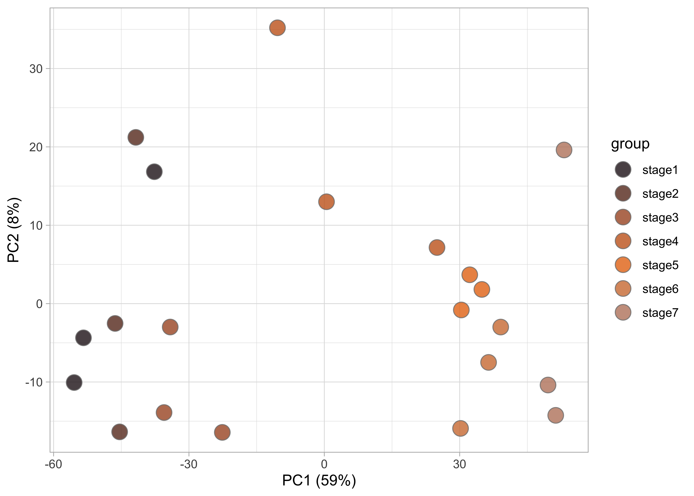
1.2.2 Manini
manini$plot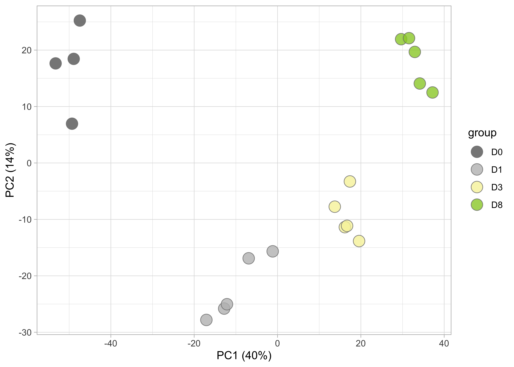
1.2.3 Goby
goby$plot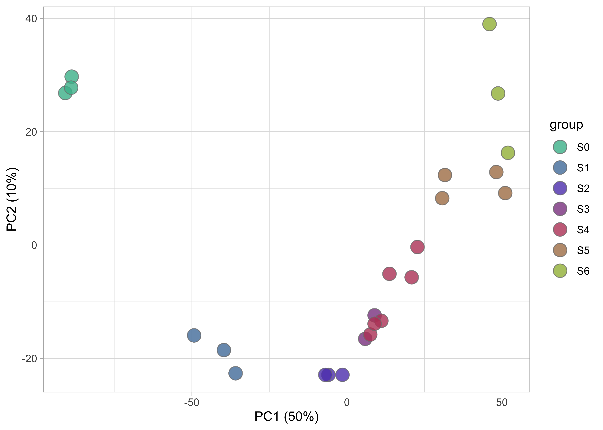
1.2.4 Grouper
grouper$plot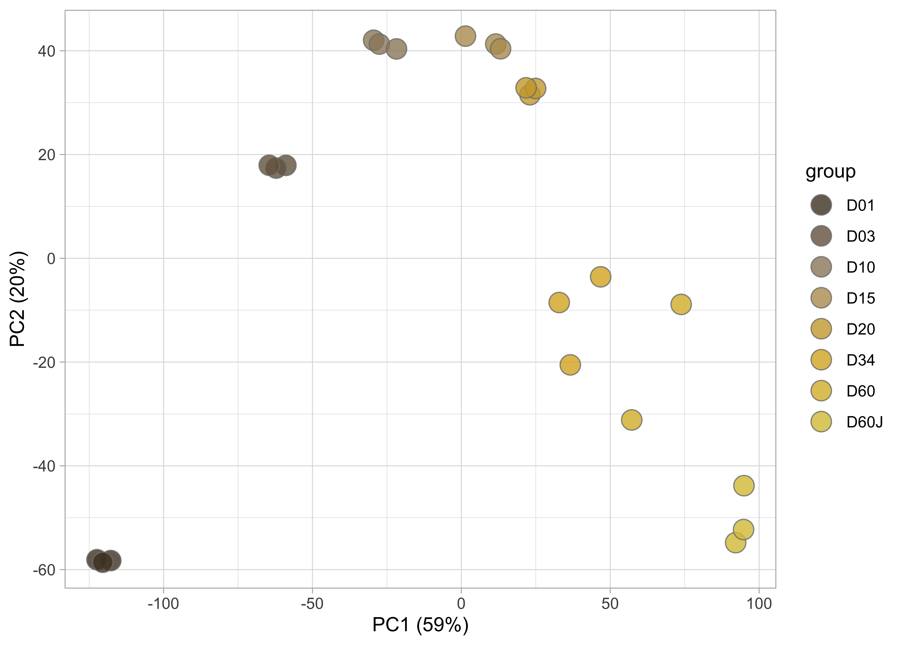
1.2.5 Zebrafish
danio$plot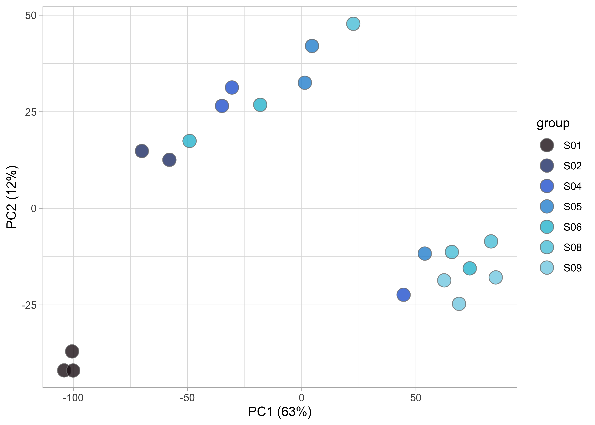
2 Getting ortholog expression matrix
Since the goal of this project is to identify core sets of genes mediating metamophorosis across different species of fish I need to estimate the orthologs between the genes and construct networks of the orthologous genes. For that I need to construct an ortholog gene expression matrix. I estimate orthlogs using OrthoDB and filter out only the genes families that are present in all 5 species. This step ensures we select gene families that have a common evolutionary history, and not ones that have species-specific evolutionary trajectories (either gains or losses).
orth<-readRDS("./04.Orthogroups/Orthologer_latest2.rds")
rbind(
rbind(
orth %>% filter(str_detect(orths,"ENSAOCG")),
orth %>% filter(str_detect(orths,"ENSDARG"))) %>%
mutate(orths= str_remove(orths,"\\.[0-9]*")) %>%
dplyr::select(Orthogroup,orths,sp),
rbind(
orth %>% filter(str_detect(orths,"Goby")),
orth %>% filter(str_detect(orths,"Grouper")),
orth %>% filter(str_detect(orths,"Manini"))) %>%
dplyr::select(Orthogroup,orths,sp))->metamorph_orthlist
full_orths<-metamorph_orthlist %>% summarise(n = n(),.by = c(Orthogroup,sp)) %>% summarise(n = n(),.by = c(Orthogroup)) %>% filter(n == 5)
#Get clown orths
left_join(clown$dge_keep$counts %>% as.data.frame() %>% rownames_to_column("orths"),
metamorph_orthlist %>% filter(str_detect(orths, "ENSAOCG"))) %>% filter(Orthogroup %in% full_orths$Orthogroup) %>% drop_na() %>% distinct(orths,.keep_all = T)->clown_orth_exp
#Get grouper orths
left_join(grouper$dge_keep$counts %>% as.data.frame() %>% rownames_to_column("orths"),
metamorph_orthlist %>% filter(str_detect(orths, "Grouper"))) %>% filter(Orthogroup %in% full_orths$Orthogroup) %>% drop_na()->grouper_orth_exp
#Get manini orths
left_join(manini$dge_keep$counts %>% as.data.frame() %>% rownames_to_column("orths"),
metamorph_orthlist %>% filter(str_detect(orths, "Manini"))) %>% filter(Orthogroup %in% full_orths$Orthogroup) %>% drop_na()->manini_orth_exp
#Get goby orths
left_join(goby$dge_keep$counts %>% as.data.frame() %>% rownames_to_column("orths"),
metamorph_orthlist %>% filter(str_detect(orths, "Goby"))) %>% filter(Orthogroup %in% full_orths$Orthogroup) %>% drop_na()->goby_orth_exp
#Get danio orths
left_join(danio$dge_keep$counts %>% as.data.frame() %>% rownames_to_column("orths"),
metamorph_orthlist %>% filter(str_detect(orths, "ENSDARG"))) %>% filter(Orthogroup %in% full_orths$Orthogroup) %>% drop_na()->danio_orth_expmetamorph_orthlist %>% filter(sp=="Amphiprion_ocellaris") %>% distinct(Orthogroup) %>% dim()## [1] 17546 1metamorph_orthlist %>% filter(sp=="Goby") %>% distinct(Orthogroup) %>% dim()## [1] 18378 1metamorph_orthlist %>% filter(sp=="Grouper") %>% distinct(Orthogroup) %>% dim()## [1] 18533 1metamorph_orthlist %>% filter(sp=="Manini") %>% distinct(Orthogroup) %>% dim()## [1] 18662 1metamorph_orthlist %>% filter(sp=="Danio_rerio") %>% distinct(Orthogroup) %>% dim()## [1] 18063 12.1 Summarising expression across orthologs
Since there are typically multiple gene copies we decided to use the copy with the highest expression for each orthogroup. Our objective is not to check how individual gene copies are co-expressed (at lease not yet), but rather get insight into the general co-expression of genes with similar functions. In this regard, choosing the gene copy with the highest expression will generally capture the most predominant signal and expression trends. The following piece of code shows that there is almost no difference in general expression trends when representing ortholog expression by using summary measure like mean, median, or summed expression and when selecting the ortholog with the highest expression.
#Randomly picks genes with multiple copies and displays summary metrics; users can try other fish and change the higher range of the runif
check_orth_exp_sumarries(exp_dat = clown_orth_exp,
a = (clown_orth_exp %>% janitor::get_dupes(Orthogroup) %>% distinct(Orthogroup))[runif(n = 1,min = 1,max =1835),1],
b = (clown_orth_exp %>% janitor::get_dupes(Orthogroup) %>% distinct(Orthogroup))[runif(n = 1,min = 1,max =1835),1])
2.2 Making ortholog expression matrix
In this step I process the gene expression matrices to obtain a one-to-one orthogroup expression matrix. This resulted in a gene expression matrix of 12,700 genes for each species. This matrix represents an orthologous expression matrix composed of the same gene families in all five species, which differ by their expression patterns across post-embryonic development in each species. Here you can see the clownfish matrix with genes as rows and samples as columns.
#Making ortholog matix
#Clown
clown_orth_exp %>% distinct(orths,.keep_all = T) %>% rowwise(orths) %>%
mutate(m=mean(Sample1:Sample21)) %>% ungroup() %>%
slice_max(m,by = "Orthogroup") %>% distinct(orths,.keep_all = T) %>%
distinct(Orthogroup,.keep_all = T)->clown_orth_exp
cln<-clown_orth_exp %>% dplyr::select(-c(orths,Orthogroup,sp,m)) %>% as.matrix()
colnames(cln)<-paste0(clown$dge_keep$samples$group, rep(".clown",length(clown$dge_keep$samples$group)))
clown_orth_exp_mat<-cbind(orths.clown = clown_orth_exp$orths, Orthogroup = clown_orth_exp$Orthogroup,
cln %>% as.data.frame())
#Grouper
grouper_orth_exp %>% distinct(orths,.keep_all = T) %>% rowwise(orths) %>%
mutate(m=mean(Sample1:Sample23)) %>% ungroup() %>%
slice_max(m,by = "Orthogroup")%>% distinct(orths,.keep_all = T) %>%
distinct(Orthogroup,.keep_all = T)->grouper_orth_exp
grp<-grouper_orth_exp %>% dplyr::select(-c(orths,Orthogroup,sp,m)) %>% as.matrix()
colnames(grp)<-paste0(grouper$dge_keep$samples$group, rep(".grouper",length(grouper$dge_keep$samples$group)))
grouper_orth_exp_mat<-cbind(orths.grouper = grouper_orth_exp$orths, Orthogroup = grouper_orth_exp$Orthogroup,
grp %>% as.data.frame())
#Manini
manini_orth_exp %>% distinct(orths,.keep_all = T) %>% rowwise(orths) %>%
mutate(m=mean(Sample1:Sample19)) %>% ungroup() %>%
slice_max(m,by = "Orthogroup")%>% distinct(orths,.keep_all = T) %>%
distinct(Orthogroup,.keep_all = T)->manini_orth_exp
mnn<-manini_orth_exp %>% dplyr::select(-c(orths,Orthogroup,sp,m)) %>% as.matrix()
colnames(mnn)<-paste0(manini$dge_keep$samples$group, rep(".manini",length(manini$dge_keep$samples$group)))
manini_orth_exp_mat<-cbind(orths.manini = manini_orth_exp$orths, Orthogroup = manini_orth_exp$Orthogroup,
mnn %>% as.data.frame())
#Goby
goby_orth_exp %>% distinct(orths,.keep_all = T) %>% rowwise(orths) %>%
mutate(m=mean(Sample1:Sample24)) %>% ungroup() %>%
slice_max(m,by = "Orthogroup") %>% distinct(orths,.keep_all = T) %>%
distinct(Orthogroup,.keep_all = T)->goby_orth_exp
gbb<-goby_orth_exp %>% dplyr::select(-c(orths,Orthogroup,sp,m)) %>% as.matrix()
colnames(gbb)<-paste0(goby$dge_keep$samples$group, rep(".goby",length(goby$dge_keep$samples$group)))
goby_orth_exp_mat<-cbind(orths.goby = goby_orth_exp$orths, Orthogroup = goby_orth_exp$Orthogroup,
gbb %>% as.data.frame())
#Danio
danio_orth_exp %>% distinct(orths,.keep_all = T) %>% rowwise(orths) %>%
mutate(m=mean(Sample1:Sample20)) %>% ungroup() %>%
slice_max(m,by = "Orthogroup") %>% distinct(orths,.keep_all = T) %>%
distinct(Orthogroup,.keep_all = T)->danio_orth_exp
dnr<-danio_orth_exp %>% dplyr::select(-c(orths,Orthogroup,sp,m)) %>% as.matrix()
colnames(dnr)<-paste0(danio$dge_keep$samples$group, rep(".danio",length(danio$dge_keep$samples$group)))
danio_orth_exp_mat<-cbind(orths.danio = danio_orth_exp$orths, Orthogroup = danio_orth_exp$Orthogroup,
dnr %>% as.data.frame())
#Use join to avoid non-unique column name and the filter from the above data frames.
purrr::reduce(list(goby_orth_exp_mat %>% dplyr::select(c(Orthogroup,orths.goby)),
manini_orth_exp_mat %>% dplyr::select(c(Orthogroup,orths.manini)),
grouper_orth_exp_mat %>% dplyr::select(c(Orthogroup,orths.grouper)),
clown_orth_exp_mat %>% dplyr::select(c(Orthogroup,orths.clown)),
danio_orth_exp_mat %>% dplyr::select(c(Orthogroup,orths.danio))),
dplyr::inner_join, by="Orthogroup")->all_exp_orths
goby_orth_exp_mat %>% setNames(make.unique(names(goby_orth_exp_mat))) %>% filter(Orthogroup %in% all_exp_orths$Orthogroup) %>% setNames(names(goby_orth_exp_mat))->goby_all_orth_exp_mat
manini_orth_exp_mat %>% setNames(make.unique(names(manini_orth_exp_mat))) %>% filter(Orthogroup %in% all_exp_orths$Orthogroup) %>% setNames(names(manini_orth_exp_mat))->manini_all_orth_exp_mat
grouper_orth_exp_mat %>% setNames(make.unique(names(grouper_orth_exp_mat))) %>% filter(Orthogroup %in% all_exp_orths$Orthogroup) %>% setNames(names(grouper_orth_exp_mat))->grouper_all_orth_exp_mat
clown_orth_exp_mat %>% setNames(make.unique(names(clown_orth_exp_mat))) %>% filter(Orthogroup %in% all_exp_orths$Orthogroup) %>% setNames(names(clown_orth_exp_mat))->clown_all_orth_exp_mat
danio_orth_exp_mat %>% setNames(make.unique(names(danio_orth_exp_mat))) %>% filter(Orthogroup %in% all_exp_orths$Orthogroup) %>% setNames(names(danio_orth_exp_mat))->danio_all_orth_exp_mat
clown_all_orth_exp_mat$orths.clown<-NULL
grouper_all_orth_exp_mat$orths.grouper<-NULL
manini_all_orth_exp_mat$orths.manini<-NULL
goby_all_orth_exp_mat$orths.goby<-NULL
danio_all_orth_exp_mat$orths.danio<-NULL
make_orth_net_input(d = clown_all_orth_exp_mat %>% column_to_rownames("Orthogroup"))->clown_orth_net_in
make_orth_net_input(d = grouper_all_orth_exp_mat %>% column_to_rownames("Orthogroup"))->grouper_orth_net_in
make_orth_net_input(d = manini_all_orth_exp_mat %>% column_to_rownames("Orthogroup"))->manini_orth_net_in
make_orth_net_input(d = goby_all_orth_exp_mat %>% column_to_rownames("Orthogroup"))->goby_orth_net_in
make_orth_net_input(d = danio_all_orth_exp_mat %>% column_to_rownames("Orthogroup"))->danio_orth_net_in
head(t(clown_orth_net_in$wgcna_in),n=10)## stage1.clown stage1.clown stage1.clown stage2.clown stage2.clown stage2.clown stage3.clown stage3.clown
## 630368 -0.0007664383 0.0070988085 -0.0139092510 0.0083478576 0.0047993438 0.0136198636 -0.0080989344 9.765547e-03
## 127054 -0.0102156166 0.0124946222 -0.0017393095 -0.0005940133 -0.0084306089 0.0082111668 -0.0058096277 2.031446e-05
## 614475 0.0007573958 -0.0065686182 -0.0005708244 0.0002776064 0.0099958586 0.0117656410 -0.0127778715 8.816679e-03
## 303786 0.0027590137 -0.0159425616 -0.0112873757 0.0061798899 -0.0004430894 -0.0080794122 -0.0031482904 2.007601e-04
## 475019 0.0127074076 -0.0042323247 0.0101169638 0.0060661600 0.0013342322 0.0039275895 -0.0070301047 -9.303737e-03
## 384151 0.0135217343 -0.0066165829 -0.0088219624 0.0052901713 0.0041168446 0.0049170483 0.0005086644 2.320691e-03
## 440590 -0.0037857844 0.0006880413 0.0004269779 -0.0086647142 -0.0021351019 0.0150638650 0.0300962465 3.222594e-03
## 617999 -0.0013219637 0.0135147766 -0.0064225544 -0.0033409703 0.0082166587 -0.0004574782 -0.0094190927 -1.055880e-02
## 549117 -0.0045182275 -0.0020907737 0.0189650942 0.0056151303 0.0190649439 0.0003697613 0.0012554460 -1.369738e-02
## 607024 -0.0011367756 0.0130984787 0.0086655120 0.0040130346 -0.0157984167 0.0106533060 0.0134787898 1.837170e-03
## stage3.clown stage4.clown stage4.clown stage4.clown stage5.clown stage5.clown stage5.clown stage6.clown stage6.clown
## 630368 -0.012807407 -0.014175003 0.0089403438 -0.0124697357 0.003310743 -0.0174935905 -0.012489901 0.018863685 0.0114239663
## 127054 0.003678868 -0.014012843 -0.0015205235 0.0023845295 0.006707799 -0.0004610487 -0.011862921 0.001844272 -0.0073085057
## 614475 -0.019204160 -0.011035768 0.0061778807 0.0001998007 0.001816636 0.0095589388 0.046512540 -0.021068424 0.0167389541
## 303786 -0.006115101 0.006794440 0.0004956071 -0.0021437699 0.004090062 -0.0042525605 -0.001346480 -0.001030540 -0.0077352117
## 475019 -0.006919975 0.003478435 0.0016738984 0.0067093216 0.011998057 -0.0072149224 0.009722225 0.003566851 0.0113550729
## 384151 0.008812771 0.005069998 0.0037087736 0.0005561114 -0.005027705 -0.0013869670 -0.001892469 -0.005895788 -0.0017851868
## 440590 -0.022344089 0.019100553 0.0034126084 -0.0047794017 -0.014451004 0.0008370919 -0.013835187 -0.008928943 0.0006655716
## 617999 0.019778078 -0.010486921 -0.0149728417 -0.0098941200 -0.004749972 0.0121244290 -0.014591886 0.005163795 -0.0071319875
## 549117 -0.003964309 -0.003843262 -0.0028249134 -0.0067174367 -0.010218513 0.0060421980 0.003299541 -0.009343901 0.0019696558
## 607024 0.005530139 -0.000433310 -0.0145411016 -0.0068315449 0.009338391 -0.0017014485 0.003384376 -0.012386986 -0.0001482060
## stage6.clown stage7.clown stage7.clown stage7.clown
## 630368 0.0174052424 -0.0074431795 0.0010435823 -0.018933944
## 127054 -0.0028178907 0.0053810469 -0.0048153526 0.008107380
## 614475 0.0006010426 -0.0065095358 0.0106431484 0.003974792
## 303786 -0.0011035916 -0.0059735340 -0.0030621709 0.002173691
## 475019 0.0061369789 0.0103574975 0.0027129339 0.027800050
## 384151 0.0025477805 0.0002583815 0.0021914019 -0.021017222
## 440590 -0.0089363139 0.0177427575 0.0118728859 -0.011659458
## 617999 0.0152652159 0.0045293198 -0.0051133242 -0.005955885
## 549117 -0.0016333467 -0.0007381439 0.0006707478 0.004398645
## 607024 0.0007970658 0.0075061904 0.0071670951 0.0074360923 Orthologus networks
We use Weighted Gene Co-expression Network Analysis (WGCNA) to construct the co-expression network of the developmental time-series data for each species. We construct the network for each species separately.
3.1 Soft threshold
This step estimates the power to achieve the scale free topology of the data. Choosing a soft threshold power for the developmental time-series data is not straight forward due to the dynamic nature of the gene expression. Therefore, I chose a power that balances the scale free nature of the data and it’s mean connectivity to ensure that I don’t get too sparse networks. I pick the power that has a scale-free R2 of at least 0.8.
soft_threshold(clown_orth_net_in$wgcna_in)->sft_clown_orth_net#pick 13
soft_threshold(grouper_orth_net_in$wgcna_in)->sft_grouper_orth_net #pick 13
soft_threshold(goby_orth_net_in$wgcna_in)->sft_goby_orth_net #pick 12
soft_threshold(manini_orth_net_in$wgcna_in)->sft_manini_orth_net #pick 13
soft_threshold(danio_orth_net_in$wgcna_in)->sft_danio_orth_net #pick 13
rbind(sft_clown_orth_net$fitIndices %>% mutate(sp="clown"),
sft_grouper_orth_net$fitIndices %>% mutate(sp="grouper"),
sft_goby_orth_net$fitIndices %>% mutate(sp="goby"),
sft_manini_orth_net$fitIndices %>% mutate(sp="manini"),
sft_danio_orth_net$fitIndices %>% mutate(sp="danio")) %>% dplyr::select(sp,Power,SFT.R.sq,mean.k.,median.k.,max.k.,Density) %>% filter(SFT.R.sq>0.8 & median.k.>10) %>% saveRDS("./RDS/softThres_orth_net.rds")soft<-readRDS("./RDS/softThres_orth_net.rds")
soft %>%
kableExtra::kbl() %>%
kableExtra::kable_styling(bootstrap_options = c("striped", "hover"),
full_width = F,
position = "left") %>%
kableExtra::scroll_box(width = "500px", height = "400px")| sp | Power | SFT.R.sq | mean.k. | median.k. | max.k. | Density |
|---|---|---|---|---|---|---|
| clown | 9 | 0.8038071 | 104.29119 | 101.03467 | 213.49228 | 0.0082126 |
| clown | 10 | 0.8653703 | 70.94532 | 67.90582 | 167.76457 | 0.0055867 |
| clown | 11 | 0.9082221 | 49.29595 | 46.47579 | 134.64954 | 0.0038819 |
| clown | 12 | 0.9367941 | 34.93212 | 32.35922 | 109.92125 | 0.0027508 |
| clown | 13 | 0.9552443 | 25.20832 | 22.88138 | 90.97433 | 0.0019851 |
| clown | 14 | 0.9615222 | 18.50128 | 16.42993 | 76.14323 | 0.0014569 |
| clown | 15 | 0.9650247 | 13.79373 | 11.94403 | 64.32615 | 0.0010862 |
| grouper | 12 | 0.8401455 | 32.89136 | 29.38437 | 103.50300 | 0.0025901 |
| grouper | 13 | 0.8901370 | 23.60612 | 20.50988 | 86.24718 | 0.0018589 |
| grouper | 14 | 0.9112023 | 17.24356 | 14.54667 | 72.97126 | 0.0013579 |
| grouper | 15 | 0.9260232 | 12.80603 | 10.45075 | 62.53823 | 0.0010084 |
| goby | 9 | 0.8512877 | 92.23011 | 87.59512 | 195.55570 | 0.0072628 |
| goby | 10 | 0.9020637 | 61.34076 | 57.24829 | 150.22463 | 0.0048304 |
| goby | 11 | 0.9319780 | 41.65565 | 38.18738 | 117.81372 | 0.0032802 |
| goby | 12 | 0.9458581 | 28.84420 | 25.88451 | 93.99308 | 0.0022714 |
| goby | 13 | 0.9535829 | 20.34061 | 17.83817 | 76.07001 | 0.0016017 |
| goby | 14 | 0.9507537 | 14.59131 | 12.46190 | 62.31276 | 0.0011490 |
| manini | 10 | 0.8557915 | 81.41046 | 76.68353 | 205.89549 | 0.0064108 |
| manini | 11 | 0.8927151 | 57.47338 | 53.20695 | 169.49305 | 0.0045258 |
| manini | 12 | 0.9129093 | 41.34928 | 37.49849 | 141.88210 | 0.0032561 |
| manini | 13 | 0.9245630 | 30.27311 | 26.82908 | 120.38801 | 0.0023839 |
| manini | 14 | 0.9313085 | 22.52553 | 19.47853 | 103.28556 | 0.0017738 |
| manini | 15 | 0.9327745 | 17.01457 | 14.31111 | 89.42574 | 0.0013398 |
| manini | 16 | 0.9305243 | 13.03296 | 10.63563 | 78.02006 | 0.0010263 |
| danio | 10 | 0.8270586 | 77.05268 | 72.12612 | 170.68560 | 0.0060676 |
| danio | 11 | 0.8622827 | 54.17332 | 49.78398 | 137.55796 | 0.0042660 |
| danio | 12 | 0.8797368 | 38.84358 | 34.90504 | 113.20120 | 0.0030588 |
| danio | 13 | 0.8970116 | 28.36448 | 24.86767 | 94.80371 | 0.0022336 |
| danio | 14 | 0.9086743 | 21.06718 | 17.97179 | 80.57290 | 0.0016590 |
| danio | 15 | 0.8941386 | 15.89742 | 13.14751 | 69.33327 | 0.0012519 |
3.2 Making the networks
This step constructs the network.
#Clown
wgcna_adjacency(datExpr = clown_orth_net_in$wgcna_in, power = 13)->clown_orth_net
#Grouper
wgcna_adjacency(datExpr = grouper_orth_net_in$wgcna_in, power = 13)->grouper_orth_net
#Goby
wgcna_adjacency(datExpr = goby_orth_net_in$wgcna_in, power = 12)->goby_orth_net
#Manini
wgcna_adjacency(datExpr = manini_orth_net_in$wgcna_in, power = 13)->manini_orth_net
#Danio
wgcna_adjacency(datExpr = danio_orth_net_in$wgcna_in, power = 13)->danio_orth_net
clown_orth_net %>% saveRDS("./02.Gene_expression_and_network/clown_orth_net.rds")
grouper_orth_net %>% saveRDS("./02.Gene_expression_and_network/grouper_orth_net.rds")
goby_orth_net %>% saveRDS("./02.Gene_expression_and_network/goby_orth_net.rds")
manini_orth_net %>% saveRDS("./02.Gene_expression_and_network/manini_orth_net.rds")
danio_orth_net %>% saveRDS("./02.Gene_expression_and_network/danio_orth_net.rds")3.3 Load the networks
I load the computed co-expression networks.
clown_orth_net<-readRDS("./02.Gene_expression_and_network/clown_orth_net.rds")
grouper_orth_net<-readRDS("./02.Gene_expression_and_network/grouper_orth_net.rds")
goby_orth_net<-readRDS("./02.Gene_expression_and_network/goby_orth_net.rds")
manini_orth_net<-readRDS("./02.Gene_expression_and_network/manini_orth_net.rds")
danio_orth_net<-readRDS("./02.Gene_expression_and_network/danio_orth_net.rds")3.4 Network stats
We see that the networks have almost the same number of modules. This is expected since the gene expression matrix has same number of orthogroups and the soft thresholds were similar. There is slight variation in the average module size and mean connectivity with zebrafish having the lowest average module size, while clownfish modules have the lowest average connectivity.
tibble(Species=c("Clonwfish","Grouper","Goby","Manini","Zebrafish"),
Number_of_modules=c(length(clown_orth_net$connectivity %>% distinct(module) %>% pull(module)),
length(grouper_orth_net$connectivity %>% distinct(module) %>% pull(module)),
length(goby_orth_net$connectivity %>% distinct(module) %>% pull(module)),
length(manini_orth_net$connectivity %>% distinct(module) %>% pull(module)),
length(danio_orth_net$connectivity %>% distinct(module) %>% pull(module))),
Median_module_size=c(clown_orth_net$connectivity %>% summarise(m=n(),.by = "module") %>% pull(m) %>% median(),
grouper_orth_net$connectivity %>% summarise(m=n(),.by = "module") %>% pull(m) %>% median(),
goby_orth_net$connectivity %>% summarise(m=n(),.by = "module") %>% pull(m) %>% median(),
manini_orth_net$connectivity %>% summarise(m=n(),.by = "module") %>% pull(m) %>% median(),
danio_orth_net$connectivity %>% summarise(m=n(),.by = "module") %>% pull(m) %>% median()),
Mean_mod_size=c(clown_orth_net$connectivity %>% summarise(m=n(),.by = "module") %>% pull(m) %>% mean() %>% round(),
grouper_orth_net$connectivity %>% summarise(m=n(),.by = "module") %>% pull(m) %>% mean() %>% round(),
goby_orth_net$connectivity %>% summarise(m=n(),.by = "module") %>% pull(m) %>% mean() %>% round(),
manini_orth_net$connectivity %>% summarise(m=n(),.by = "module") %>% pull(m) %>% mean() %>% round(),
danio_orth_net$connectivity %>% summarise(m=n(),.by = "module") %>% pull(m) %>% mean()) %>% round(),
Mean_connectivity=c(mean(clown_orth_net$connectivity$degree) %>% round(3),
mean(grouper_orth_net$connectivity$degree) %>% round(3),
mean(goby_orth_net$connectivity$degree) %>% round(3),
mean(manini_orth_net$connectivity$degree) %>% round(3),
mean(danio_orth_net$connectivity$degree) %>% round(3))) %>%
kableExtra::kbl() %>%
kableExtra::kable_styling(bootstrap_options = c("striped", "hover"),
full_width = F,
position = "left")| Species | Number_of_modules | Median_module_size | Mean_mod_size | Mean_connectivity |
|---|---|---|---|---|
| Clonwfish | 40 | 283 | 317 | 30.799 |
| Grouper | 41 | 280 | 310 | 31.277 |
| Goby | 35 | 308 | 363 | 35.344 |
| Manini | 33 | 281 | 385 | 38.259 |
| Zebrafish | 33 | 351 | 385 | 36.811 |
3.5 Ortholog module heatmaps
Here I make heatmaps to check the expression of the co-expression modules across development. I segregate the modules into three groups with higher expression in the early, mid, and late stages of development.
module_heatmaps(dat=clown_orth_net_in$dge_keep,
net=clown_orth_net,
cols=cols.clown)->clown_orth_heatmap
module_heatmaps(dat=grouper_orth_net_in$dge_keep,
net=grouper_orth_net,
cols=cols.grouper)->grouper_orth_heatmap
module_heatmaps(dat=manini_orth_net_in$dge_keep,
net=manini_orth_net,
cols=cols.manini)->manini_orth_heatmap
module_heatmaps(dat=goby_orth_net_in$dge_keep,
net=goby_orth_net,
cols=cols.goby)->goby_orth_heatmap
module_heatmaps(dat=danio_orth_net_in$dge_keep,
net=danio_orth_net,
cols=cols.danio)->danio_orth_heatmap3.5.1 Clownfish
clown_orth_heatmap$heat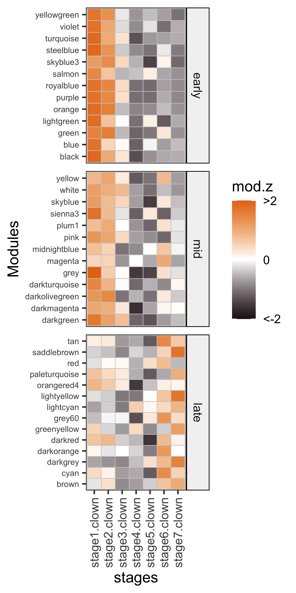
3.5.2 Manini
manini_orth_heatmap$heat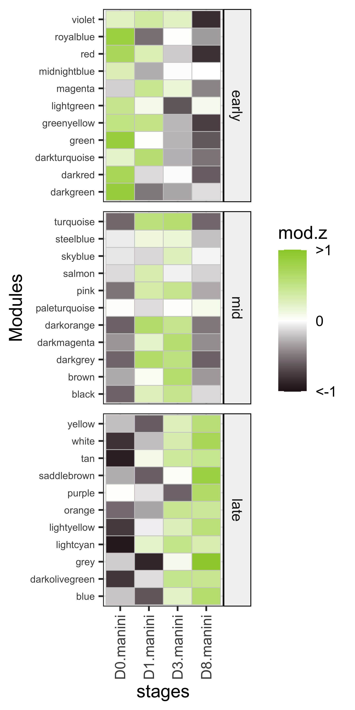
3.5.3 Goby
goby_orth_heatmap$heat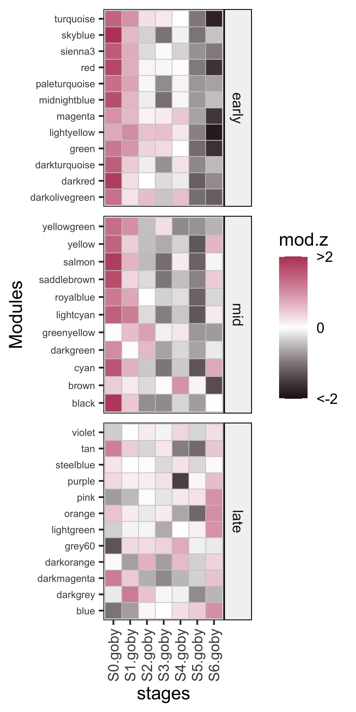
3.5.4 Grouper
grouper_orth_heatmap$heat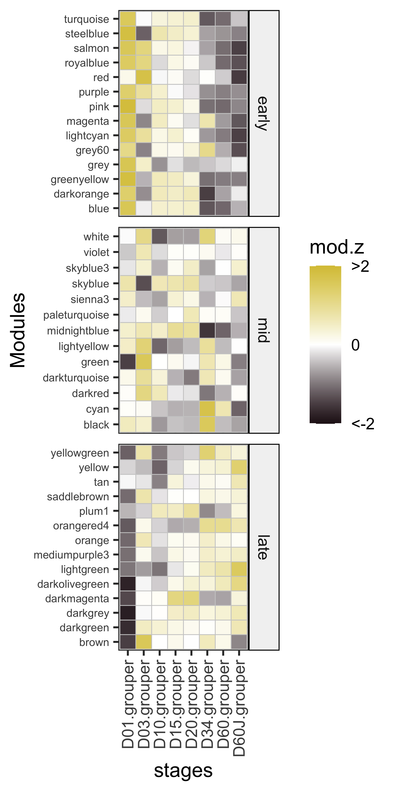
3.5.5 Zebrafish
danio_orth_heatmap$heat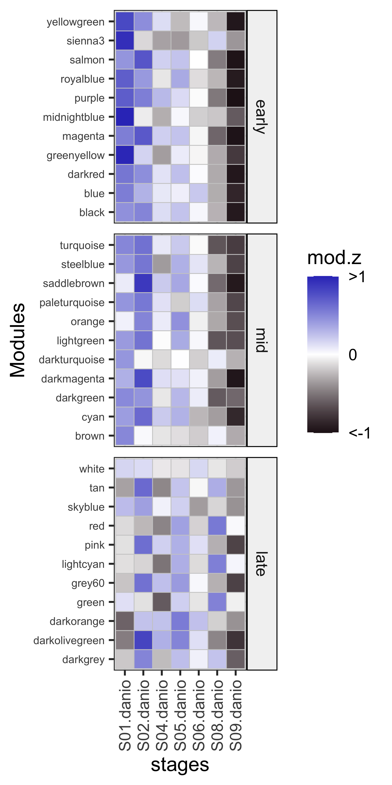
4 Finding homologous modules
4.1 Module preservation
To quantify similarities between the post-embryonic co-expression
networks I estimated module preservation statistics, which measure how
well network properties are conserved between a reference and a test
network. I performed pairwise comparisons of the network properties
among all species. Since the networks were constructed using a
one-to-one orthologous gene expression matrix, the estimate of module
preservation tells us whether gene interactions during post-embryonic
development in one species resemble another species.
The Zsummary score is used to denote the degree of preservation with
scores above 10 typically used as evidence of high preservation and
scores below 2 as evidence of no preservation. To get more reliable
estimates I use more stringent thresholds to categorise preservation,
with Zsummary > 12 as evidence of high preservation, Zsummary < 12
as evidence for low to medium preservation, and Zsummary < 6 as no
evidence for preservation.
## Module preservation analysis
#In this step I check whether the co-expression modules identified in one species are preserved in another species.
#For clownfish and grouper
setLabels = c("clown", "grouper");
multiExpr = list(clown = list(data = clown_orth_net_in$wgcna_in),
grouper = list(data = grouper_orth_net_in$wgcna_in));
multiColor = list(clown = clown_orth_net$moduleColors$moduleColors,
groper = grouper_orth_net$moduleColors$moduleColors);
nSets = 2
mp = modulePreservation(multiExpr, multiColor,
referenceNetworks = c(1:2),
nPermutations = 200,
randomSeed = 1,
verbose = 3)
mp %>% saveRDS("./02.Gene_expression_and_network/orth_module_pres_clownfish_grouper.rds")
#For clownfish and manini
setLabels = c("clown", "manini");
multiExpr = list(clown = list(data = clown_orth_net_in$wgcna_in),
manini = list(data = manini_orth_net_in$wgcna_in));
multiColor = list(clown = clown_orth_net$moduleColors$moduleColors,
manini = manini_orth_net$moduleColors$moduleColors);
nSets = 2
mp = modulePreservation(multiExpr, multiColor,
referenceNetworks = c(1:2),
nPermutations = 200,
randomSeed = 1,
verbose = 3)
mp %>% saveRDS("./02.Gene_expression_and_network/orth_module_pres_clownfish_manini.rds")
#For clownfish and goby
setLabels = c("clown", "goby");
multiExpr = list(clown = list(data = clown_orth_net_in$wgcna_in),
goby = list(data = goby_orth_net_in$wgcna_in));
multiColor = list(clown = clown_orth_net$moduleColors$moduleColors,
goby = goby_orth_net$moduleColors$moduleColors);
nSets = 2
mp = modulePreservation(multiExpr, multiColor,
referenceNetworks = c(1:2),
nPermutations = 200,
randomSeed = 1,
verbose = 3)
mp %>% saveRDS("./02.Gene_expression_and_network/orth_module_pres_clownfish_goby.rds")
#For clownfish and danio
setLabels = c("clown", "danio");
multiExpr = list(clown = list(data = clown_orth_net_in$wgcna_in),
danio = list(data = danio_orth_net_in$wgcna_in));
multiColor = list(clown = clown_orth_net$moduleColors$moduleColors,
danio = danio_orth_net$moduleColors$moduleColors);
nSets = 2
mp = modulePreservation(multiExpr, multiColor,
referenceNetworks = c(1:2),
nPermutations = 200,
randomSeed = 1,
verbose = 3)
mp %>% saveRDS("./02.Gene_expression_and_network/orth_module_pres_clownfish_danio.rds")
#For manini and grouper
setLabels = c("manini", "grouper");
multiExpr = list(manini = list(data = manini_orth_net_in$wgcna_in),
grouper = list(data = grouper_orth_net_in$wgcna_in));
multiColor = list(manini = manini_orth_net$moduleColors$moduleColors,
grouper = grouper_orth_net$moduleColors$moduleColors);
nSets = 2
mp = modulePreservation(multiExpr, multiColor,
referenceNetworks = c(1:2),
nPermutations = 200,
randomSeed = 1,
verbose = 3)
mp %>% saveRDS("./02.Gene_expression_and_network/orth_module_pres_manini_grouper.rds")
#For manini and goby
setLabels = c("manini", "goby");
multiExpr = list(manini = list(data = manini_orth_net_in$wgcna_in),
goby = list(data = goby_orth_net_in$wgcna_in));
multiColor = list(manini = manini_orth_net$moduleColors$moduleColors,
goby = goby_orth_net$moduleColors$moduleColors);
nSets = 2
mp = modulePreservation(multiExpr, multiColor,
referenceNetworks = c(1:2),
nPermutations = 200,
randomSeed = 1,
verbose = 3)
mp %>% saveRDS("./02.Gene_expression_and_network/orth_module_pres_manini_goby.rds")
#For manini and danio
setLabels = c("manini", "danio");
multiExpr = list(manini = list(data = manini_orth_net_in$wgcna_in),
danio = list(data = danio_orth_net_in$wgcna_in));
multiColor = list(manini = manini_orth_net$moduleColors$moduleColors,
danio = danio_orth_net$moduleColors$moduleColors);
nSets = 2
mp = modulePreservation(multiExpr, multiColor,
referenceNetworks = c(1:2),
nPermutations = 200,
randomSeed = 1,
verbose = 3)
mp %>% saveRDS("./02.Gene_expression_and_network/orth_module_pres_manini_danio.rds")
#For goby and grouper
setLabels = c("goby", "grouper");
multiExpr = list(goby = list(data = goby_orth_net_in$wgcna_in),
grouper = list(data = grouper_orth_net_in$wgcna_in));
multiColor = list(goby = goby_orth_net$moduleColors$moduleColors,
groper = grouper_orth_net$moduleColors$moduleColors);
nSets = 2
mp = modulePreservation(multiExpr, multiColor,
referenceNetworks = c(1:2),
nPermutations = 200,
randomSeed = 1,
verbose = 3)
mp %>% saveRDS("./02.Gene_expression_and_network/orth_module_pres_goby_grouper.rds")
#For goby and danio
setLabels = c("goby", "danio");
multiExpr = list(goby = list(data = goby_orth_net_in$wgcna_in),
danio = list(data = danio_orth_net_in$wgcna_in));
multiColor = list(goby = goby_orth_net$moduleColors$moduleColors,
groper = danio_orth_net$moduleColors$moduleColors);
nSets = 2
mp = modulePreservation(multiExpr, multiColor,
referenceNetworks = c(1:2),
nPermutations = 200,
randomSeed = 1,
verbose = 3)
mp %>% saveRDS("./02.Gene_expression_and_network/orth_module_pres_goby_danio.rds")
#For grouper and danio
setLabels = c("grouper", "danio");
multiExpr = list(grouper = list(data = grouper_orth_net_in$wgcna_in),
danio = list(data = danio_orth_net_in$wgcna_in));
multiColor = list(grouper = grouper_orth_net$moduleColors$moduleColors,
danio = danio_orth_net$moduleColors$moduleColors);
nSets = 2
mp = modulePreservation(multiExpr, multiColor,
referenceNetworks = c(1:2),
nPermutations = 200,
randomSeed = 1,
verbose = 3)
mp %>% saveRDS("./02.Gene_expression_and_network/orth_module_pres_grouper_danio.rds")4.1.1 Loading the module pres plots
These are individual module preservation plots between pair-wise speices comparisons.
#clownfish
module_pres_plots(mp=readRDS("./02.Gene_expression_and_network/orth_module_pres_clownfish_grouper.rds"),
heatdat=clown_orth_heatmap$dat,
c1=1, c2=2,
cols=cols.clown)->mp_plot_clown_ref_grouper
module_pres_plots(mp=readRDS("./02.Gene_expression_and_network/orth_module_pres_clownfish_manini.rds"),
heatdat=clown_orth_heatmap$dat,
c1=1, c2=2,
cols=cols.clown)->mp_plot_clown_ref_manini
module_pres_plots(mp=readRDS("./02.Gene_expression_and_network/orth_module_pres_clownfish_goby.rds"),
heatdat=clown_orth_heatmap$dat,
c1=1, c2=2,
cols=cols.clown)->mp_plot_clown_ref_goby
module_pres_plots(mp=readRDS("./02.Gene_expression_and_network/orth_module_pres_clownfish_danio.rds"),
heatdat=clown_orth_heatmap$dat,
c1=1, c2=2,
cols=cols.clown)->mp_plot_clown_ref_danio
#manini
module_pres_plots(mp=readRDS("./02.Gene_expression_and_network/orth_module_pres_clownfish_manini.rds"),
heatdat=manini_orth_heatmap$dat,
c1=2, c2=1,
cols=cols.manini)->mp_plot_manini_ref_clown
module_pres_plots(mp=readRDS("./02.Gene_expression_and_network/orth_module_pres_manini_grouper.rds"),
heatdat=manini_orth_heatmap$dat,
c1=1, c2=2,
cols=cols.manini)->mp_plot_manini_ref_grouper
module_pres_plots(mp=readRDS("./02.Gene_expression_and_network/orth_module_pres_manini_goby.rds"),
heatdat=manini_orth_heatmap$dat,
c1=1, c2=2,
cols=cols.manini)->mp_plot_manini_ref_goby
module_pres_plots(mp=readRDS("./02.Gene_expression_and_network/orth_module_pres_manini_danio.rds"),
heatdat=manini_orth_heatmap$dat,
c1=1, c2=2,
cols=cols.manini)->mp_plot_manini_ref_danio
#Grouper
module_pres_plots(mp=readRDS("./02.Gene_expression_and_network/orth_module_pres_clownfish_grouper.rds"),
heatdat=grouper_orth_heatmap$dat,
c1=2, c2=1,
cols=cols.grouper)->mp_plot_grouper_ref_clown
module_pres_plots(mp=readRDS("./02.Gene_expression_and_network/orth_module_pres_manini_grouper.rds"),
heatdat=grouper_orth_heatmap$dat,
c1=2, c2=1,
cols=cols.grouper)->mp_plot_grouper_ref_manini
module_pres_plots(mp=readRDS("./02.Gene_expression_and_network/orth_module_pres_goby_grouper.rds"),
heatdat=grouper_orth_heatmap$dat,
c1=2, c2=1,
cols=cols.grouper)->mp_plot_grouper_ref_goby
module_pres_plots(mp=readRDS("./02.Gene_expression_and_network/orth_module_pres_grouper_danio.rds"),
heatdat=grouper_orth_heatmap$dat,
c1=1, c2=2,
cols=cols.grouper)->mp_plot_grouper_ref_danio
#Goby
module_pres_plots(mp=readRDS("./02.Gene_expression_and_network/orth_module_pres_clownfish_goby.rds"),
heatdat=goby_orth_heatmap$dat,
c1=2, c2=1,
cols=cols.goby)->mp_plot_goby_ref_clown
module_pres_plots(mp=readRDS("./02.Gene_expression_and_network/orth_module_pres_manini_goby.rds"),
heatdat=goby_orth_heatmap$dat,
c1=2, c2=1,
cols=cols.goby)->mp_plot_goby_ref_manini
module_pres_plots(mp=readRDS("./02.Gene_expression_and_network/orth_module_pres_goby_grouper.rds"),
heatdat=goby_orth_heatmap$dat,
c1=1, c2=2,
cols=cols.goby)->mp_plot_goby_ref_grouper
module_pres_plots(mp=readRDS("./02.Gene_expression_and_network/orth_module_pres_goby_danio.rds"),
heatdat=goby_orth_heatmap$dat,
c1=1, c2=2,
cols=cols.goby)->mp_plot_goby_ref_danio
#Danio
module_pres_plots(mp=readRDS("./02.Gene_expression_and_network/orth_module_pres_clownfish_danio.rds"),
heatdat=danio_orth_heatmap$dat,
c1=2, c2=1,
cols=cols.danio)->mp_plot_danio_ref_clown
module_pres_plots(mp=readRDS("./02.Gene_expression_and_network/orth_module_pres_manini_danio.rds"),
heatdat=danio_orth_heatmap$dat,
c1=2, c2=1,
cols=cols.danio)->mp_plot_danio_ref_manini
module_pres_plots(mp=readRDS("./02.Gene_expression_and_network/orth_module_pres_grouper_danio.rds"),
heatdat=danio_orth_heatmap$dat,
c1=2, c2=1,
cols=cols.danio)->mp_plot_danio_ref_grouper
module_pres_plots(mp=readRDS("./02.Gene_expression_and_network/orth_module_pres_goby_danio.rds"),
heatdat=danio_orth_heatmap$dat,
c1=2, c2=1,
cols=cols.danio)->mp_plot_danio_ref_goby
rbind(clown_orth_net$connectivity %>% mutate(species="clown"),manini_orth_net$connectivity %>% mutate(species="manini"),grouper_orth_net$connectivity %>% mutate(species="grouper"),goby_orth_net$connectivity %>% mutate(species="goby"),danio_orth_net$connectivity %>% mutate(species="danio"))->orth_assignments4.1.1.1 Clownfish~Grouper
mp_plot_clown_ref_grouper## $plot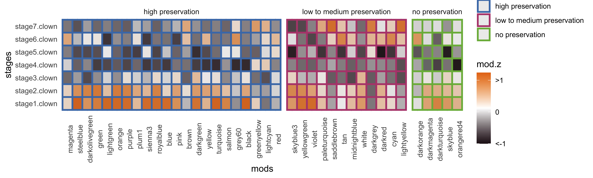
##
## $dat
## # A tibble: 273 × 7
## mods stages mod.z phase z.score rank pres
## <fct> <fct> <dbl> <chr> <dbl> <dbl> <chr>
## 1 magenta stage1.clown 0.363 mid 47.0 1 high preservation
## 2 magenta stage2.clown 0.385 mid 47.0 1 high preservation
## 3 magenta stage3.clown -0.595 mid 47.0 1 high preservation
## 4 magenta stage4.clown 0.00998 mid 47.0 1 high preservation
## 5 magenta stage5.clown -0.462 mid 47.0 1 high preservation
## 6 magenta stage6.clown 0.796 mid 47.0 1 high preservation
## 7 magenta stage7.clown -0.507 mid 47.0 1 high preservation
## 8 steelblue stage1.clown 1.47 early 36.6 2 high preservation
## 9 steelblue stage2.clown 1.00 early 36.6 2 high preservation
## 10 steelblue stage3.clown -0.280 early 36.6 2 high preservation
## # ℹ 263 more rows4.1.1.2 Clownfish~Manini
mp_plot_clown_ref_manini## $plot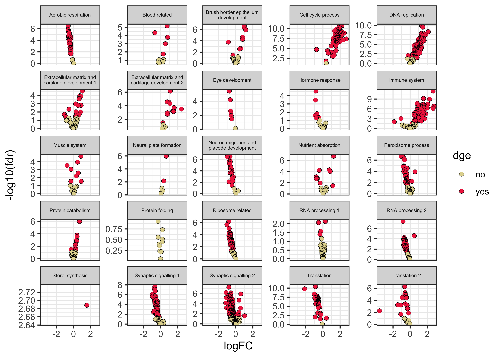
##
## $dat
## # A tibble: 273 × 7
## mods stages mod.z phase z.score rank pres
## <fct> <fct> <dbl> <chr> <dbl> <dbl> <chr>
## 1 steelblue stage1.clown 1.47 early 31.7 2 high preservation
## 2 steelblue stage2.clown 1.00 early 31.7 2 high preservation
## 3 steelblue stage3.clown -0.280 early 31.7 2 high preservation
## 4 steelblue stage4.clown -0.646 early 31.7 2 high preservation
## 5 steelblue stage5.clown -0.795 early 31.7 2 high preservation
## 6 steelblue stage6.clown -0.118 early 31.7 2 high preservation
## 7 steelblue stage7.clown -0.740 early 31.7 2 high preservation
## 8 darkolivegreen stage1.clown 0.975 mid 32.8 2 high preservation
## 9 darkolivegreen stage2.clown 1.13 mid 32.8 2 high preservation
## 10 darkolivegreen stage3.clown -0.791 mid 32.8 2 high preservation
## # ℹ 263 more rows4.1.1.3 Clownfish~Goby
mp_plot_clown_ref_goby## $plot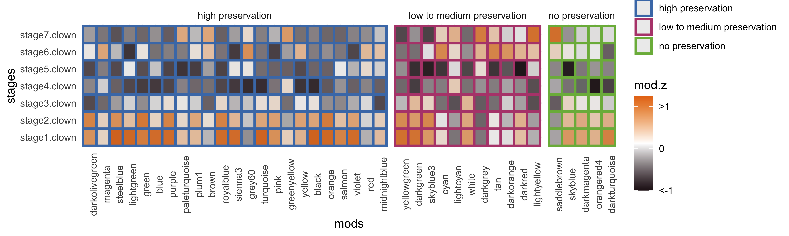
##
## $dat
## # A tibble: 273 × 7
## mods stages mod.z phase z.score rank pres
## <fct> <fct> <dbl> <chr> <dbl> <dbl> <chr>
## 1 darkolivegreen stage1.clown 0.975 mid 26.3 1 high preservation
## 2 darkolivegreen stage2.clown 1.13 mid 26.3 1 high preservation
## 3 darkolivegreen stage3.clown -0.791 mid 26.3 1 high preservation
## 4 darkolivegreen stage4.clown -0.413 mid 26.3 1 high preservation
## 5 darkolivegreen stage5.clown -0.802 mid 26.3 1 high preservation
## 6 darkolivegreen stage6.clown 0.184 mid 26.3 1 high preservation
## 7 darkolivegreen stage7.clown -0.275 mid 26.3 1 high preservation
## 8 magenta stage1.clown 0.363 mid 41.9 2 high preservation
## 9 magenta stage2.clown 0.385 mid 41.9 2 high preservation
## 10 magenta stage3.clown -0.595 mid 41.9 2 high preservation
## # ℹ 263 more rows4.1.1.4 Clownfish~Danio
mp_plot_clown_ref_danio## $plot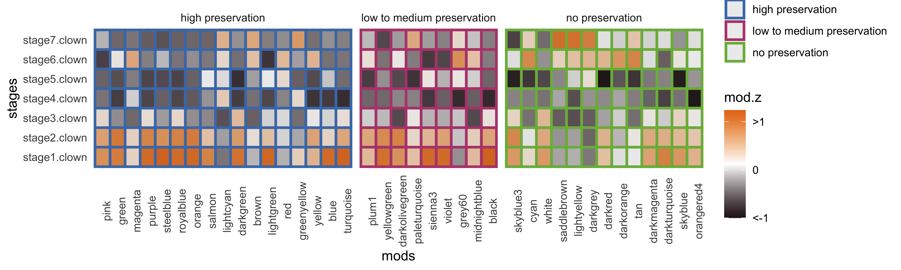
##
## $dat
## # A tibble: 273 × 7
## mods stages mod.z phase z.score rank pres
## <fct> <fct> <dbl> <chr> <dbl> <dbl> <chr>
## 1 pink stage1.clown 0.996 mid 36.6 1 high preservation
## 2 pink stage2.clown 0.831 mid 36.6 1 high preservation
## 3 pink stage3.clown 0.331 mid 36.6 1 high preservation
## 4 pink stage4.clown -0.523 mid 36.6 1 high preservation
## 5 pink stage5.clown -0.628 mid 36.6 1 high preservation
## 6 pink stage6.clown -0.869 mid 36.6 1 high preservation
## 7 pink stage7.clown -0.146 mid 36.6 1 high preservation
## 8 green stage1.clown 1.18 early 31.1 3 high preservation
## 9 green stage2.clown 1.23 early 31.1 3 high preservation
## 10 green stage3.clown -0.371 early 31.1 3 high preservation
## # ℹ 263 more rows4.1.1.5 Manini~Clownfish
mp_plot_manini_ref_clown## $plot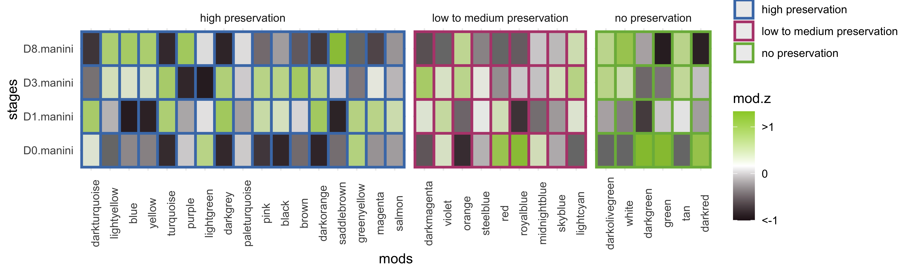
##
## $dat
## # A tibble: 128 × 7
## mods stages mod.z phase z.score rank pres
## <fct> <fct> <dbl> <chr> <dbl> <dbl> <chr>
## 1 darkturquoise D0.manini 0.262 early 37.1 2 high preservation
## 2 darkturquoise D1.manini 0.777 early 37.1 2 high preservation
## 3 darkturquoise D3.manini -0.367 early 37.1 2 high preservation
## 4 darkturquoise D8.manini -0.678 early 37.1 2 high preservation
## 5 lightyellow D0.manini -1.01 late 34.3 2 high preservation
## 6 lightyellow D1.manini -0.0748 late 34.3 2 high preservation
## 7 lightyellow D3.manini 0.366 late 34.3 2 high preservation
## 8 lightyellow D8.manini 0.742 late 34.3 2 high preservation
## 9 blue D0.manini -0.262 late 57.0 3 high preservation
## 10 blue D1.manini -0.837 late 57.0 3 high preservation
## # ℹ 118 more rows4.1.1.6 Manini~Grouper
mp_plot_manini_ref_grouper## $plot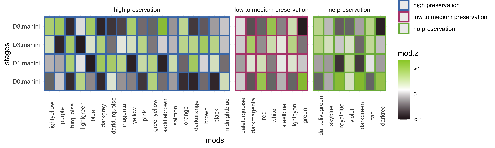
##
## $dat
## # A tibble: 128 × 7
## mods stages mod.z phase z.score rank pres
## <fct> <fct> <dbl> <chr> <dbl> <dbl> <chr>
## 1 lightyellow D0.manini -1.01 late 27.0 1 high preservation
## 2 lightyellow D1.manini -0.0748 late 27.0 1 high preservation
## 3 lightyellow D3.manini 0.366 late 27.0 1 high preservation
## 4 lightyellow D8.manini 0.742 late 27.0 1 high preservation
## 5 purple D0.manini 0.0162 late 32.6 2 high preservation
## 6 purple D1.manini -0.129 late 32.6 2 high preservation
## 7 purple D3.manini -0.766 late 32.6 2 high preservation
## 8 purple D8.manini 0.853 late 32.6 2 high preservation
## 9 turquoise D0.manini -0.739 mid 64.4 3 high preservation
## 10 turquoise D1.manini 0.728 mid 64.4 3 high preservation
## # ℹ 118 more rows4.1.1.7 Manini~Goby
mp_plot_manini_ref_goby## $plot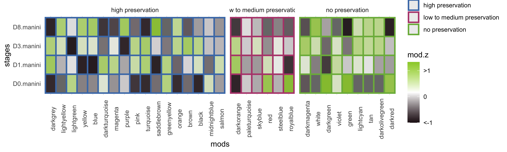
##
## $dat
## # A tibble: 128 × 7
## mods stages mod.z phase z.score rank pres
## <fct> <fct> <dbl> <chr> <dbl> <dbl> <chr>
## 1 darkgrey D0.manini -0.752 mid 22.1 2 high preservation
## 2 darkgrey D1.manini 0.850 mid 22.1 2 high preservation
## 3 darkgrey D3.manini 0.700 mid 22.1 2 high preservation
## 4 darkgrey D8.manini -0.779 mid 22.1 2 high preservation
## 5 lightyellow D0.manini -1.01 late 20.5 3 high preservation
## 6 lightyellow D1.manini -0.0748 late 20.5 3 high preservation
## 7 lightyellow D3.manini 0.366 late 20.5 3 high preservation
## 8 lightyellow D8.manini 0.742 late 20.5 3 high preservation
## 9 lightgreen D0.manini 0.624 early 20.4 4 high preservation
## 10 lightgreen D1.manini 0.115 early 20.4 4 high preservation
## # ℹ 118 more rows4.1.1.8 Manini~Danio
mp_plot_manini_ref_danio## $plot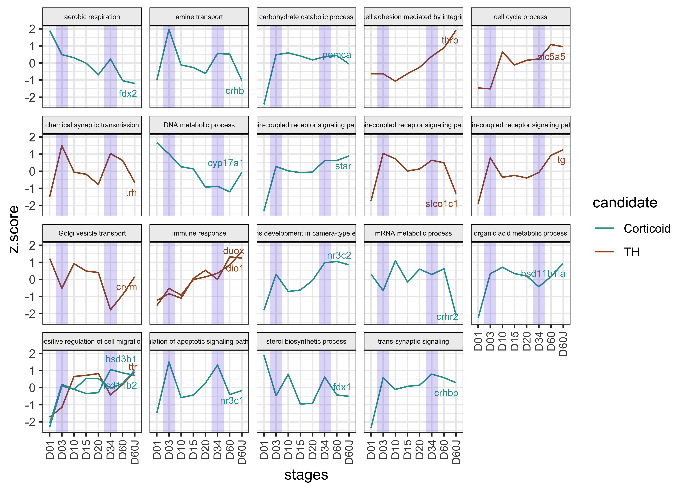
##
## $dat
## # A tibble: 128 × 7
## mods stages mod.z phase z.score rank pres
## <fct> <fct> <dbl> <chr> <dbl> <dbl> <chr>
## 1 lightyellow D0.manini -1.01 late 30.7 1 high preservation
## 2 lightyellow D1.manini -0.0748 late 30.7 1 high preservation
## 3 lightyellow D3.manini 0.366 late 30.7 1 high preservation
## 4 lightyellow D8.manini 0.742 late 30.7 1 high preservation
## 5 darkturquoise D0.manini 0.262 early 21.2 3 high preservation
## 6 darkturquoise D1.manini 0.777 early 21.2 3 high preservation
## 7 darkturquoise D3.manini -0.367 early 21.2 3 high preservation
## 8 darkturquoise D8.manini -0.678 early 21.2 3 high preservation
## 9 lightgreen D0.manini 0.624 early 16.9 4 high preservation
## 10 lightgreen D1.manini 0.115 early 16.9 4 high preservation
## # ℹ 118 more rows4.1.1.9 Grouper~Clownfish
mp_plot_grouper_ref_clown## $plot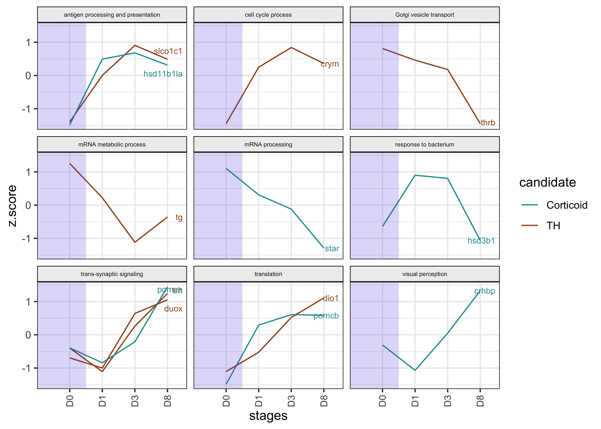
##
## $dat
## # A tibble: 328 × 7
## mods stages mod.z phase z.score rank pres
## <fct> <fct> <dbl> <chr> <dbl> <dbl> <chr>
## 1 darkturquoise D01.grouper 0.134 mid 39.9 1 high preservation
## 2 darkturquoise D03.grouper 0.741 mid 39.9 1 high preservation
## 3 darkturquoise D10.grouper 0.267 mid 39.9 1 high preservation
## 4 darkturquoise D15.grouper -0.444 mid 39.9 1 high preservation
## 5 darkturquoise D20.grouper -0.791 mid 39.9 1 high preservation
## 6 darkturquoise D34.grouper 0.522 mid 39.9 1 high preservation
## 7 darkturquoise D60.grouper 0.105 mid 39.9 1 high preservation
## 8 darkturquoise D60J.grouper -0.540 mid 39.9 1 high preservation
## 9 skyblue3 D01.grouper -0.139 mid 34.2 2 high preservation
## 10 skyblue3 D03.grouper 0.324 mid 34.2 2 high preservation
## # ℹ 318 more rows4.1.1.10 Grouper~Manini
mp_plot_grouper_ref_manini## $plot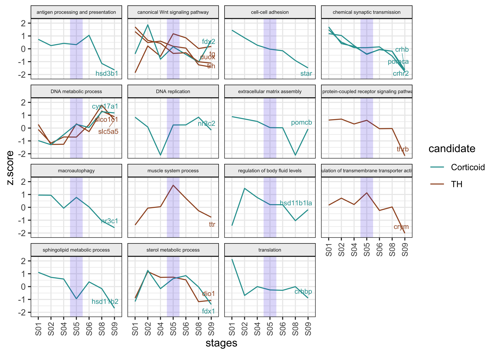
##
## $dat
## # A tibble: 328 × 7
## mods stages mod.z phase z.score rank pres
## <fct> <fct> <dbl> <chr> <dbl> <dbl> <chr>
## 1 darkturquoise D01.grouper 0.134 mid 29.8 1 high preservation
## 2 darkturquoise D03.grouper 0.741 mid 29.8 1 high preservation
## 3 darkturquoise D10.grouper 0.267 mid 29.8 1 high preservation
## 4 darkturquoise D15.grouper -0.444 mid 29.8 1 high preservation
## 5 darkturquoise D20.grouper -0.791 mid 29.8 1 high preservation
## 6 darkturquoise D34.grouper 0.522 mid 29.8 1 high preservation
## 7 darkturquoise D60.grouper 0.105 mid 29.8 1 high preservation
## 8 darkturquoise D60J.grouper -0.540 mid 29.8 1 high preservation
## 9 magenta D01.grouper 1.31 early 43.8 2 high preservation
## 10 magenta D03.grouper -0.718 early 43.8 2 high preservation
## # ℹ 318 more rows4.1.1.11 Grouper~Goby
mp_plot_grouper_ref_goby## $plot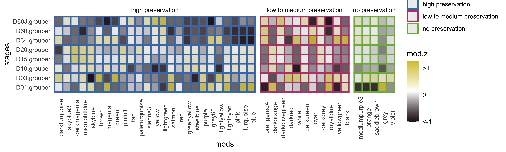
##
## $dat
## # A tibble: 328 × 7
## mods stages mod.z phase z.score rank pres
## <fct> <fct> <dbl> <chr> <dbl> <dbl> <chr>
## 1 darkturquoise D01.grouper 0.134 mid 32.0 2 high preservation
## 2 darkturquoise D03.grouper 0.741 mid 32.0 2 high preservation
## 3 darkturquoise D10.grouper 0.267 mid 32.0 2 high preservation
## 4 darkturquoise D15.grouper -0.444 mid 32.0 2 high preservation
## 5 darkturquoise D20.grouper -0.791 mid 32.0 2 high preservation
## 6 darkturquoise D34.grouper 0.522 mid 32.0 2 high preservation
## 7 darkturquoise D60.grouper 0.105 mid 32.0 2 high preservation
## 8 darkturquoise D60J.grouper -0.540 mid 32.0 2 high preservation
## 9 skyblue3 D01.grouper -0.139 mid 22.7 3 high preservation
## 10 skyblue3 D03.grouper 0.324 mid 22.7 3 high preservation
## # ℹ 318 more rows4.1.1.12 Grouper~Danio
mp_plot_grouper_ref_danio## $plot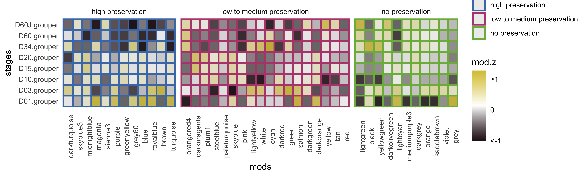
##
## $dat
## # A tibble: 328 × 7
## mods stages mod.z phase z.score rank pres
## <fct> <fct> <dbl> <chr> <dbl> <dbl> <chr>
## 1 darkturquoise D01.grouper 0.134 mid 31.4 1 high preservation
## 2 darkturquoise D03.grouper 0.741 mid 31.4 1 high preservation
## 3 darkturquoise D10.grouper 0.267 mid 31.4 1 high preservation
## 4 darkturquoise D15.grouper -0.444 mid 31.4 1 high preservation
## 5 darkturquoise D20.grouper -0.791 mid 31.4 1 high preservation
## 6 darkturquoise D34.grouper 0.522 mid 31.4 1 high preservation
## 7 darkturquoise D60.grouper 0.105 mid 31.4 1 high preservation
## 8 darkturquoise D60J.grouper -0.540 mid 31.4 1 high preservation
## 9 skyblue3 D01.grouper -0.139 mid 20.5 2 high preservation
## 10 skyblue3 D03.grouper 0.324 mid 20.5 2 high preservation
## # ℹ 318 more rows4.1.1.13 Goby~Clownfish
mp_plot_goby_ref_clown## $plot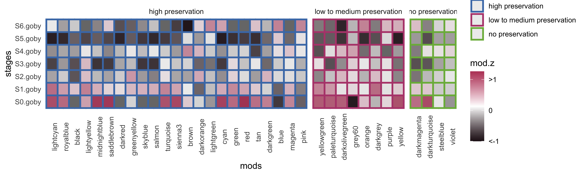
##
## $dat
## # A tibble: 245 × 7
## mods stages mod.z phase z.score rank pres
## <fct> <fct> <dbl> <chr> <dbl> <dbl> <chr>
## 1 royalblue S0.goby 0.994 mid 34.7 2 high preservation
## 2 royalblue S1.goby 0.624 mid 34.7 2 high preservation
## 3 royalblue S2.goby 0.00459 mid 34.7 2 high preservation
## 4 royalblue S3.goby -0.267 mid 34.7 2 high preservation
## 5 royalblue S4.goby -0.190 mid 34.7 2 high preservation
## 6 royalblue S5.goby -0.959 mid 34.7 2 high preservation
## 7 royalblue S6.goby -0.227 mid 34.7 2 high preservation
## 8 lightcyan S0.goby 1.20 mid 58.0 2 high preservation
## 9 lightcyan S1.goby 0.958 mid 58.0 2 high preservation
## 10 lightcyan S2.goby -0.206 mid 58.0 2 high preservation
## # ℹ 235 more rows4.1.1.14 Goby~Manini
mp_plot_goby_ref_manini## $plot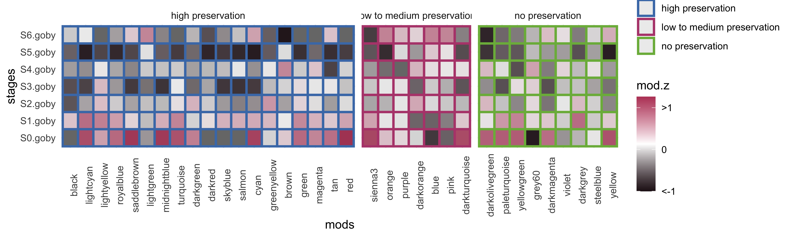
##
## $dat
## # A tibble: 245 × 7
## mods stages mod.z phase z.score rank pres
## <fct> <fct> <dbl> <chr> <dbl> <dbl> <chr>
## 1 black S0.goby 1.57 mid 50.9 2 high preservation
## 2 black S1.goby 0.376 mid 50.9 2 high preservation
## 3 black S2.goby -0.660 mid 50.9 2 high preservation
## 4 black S3.goby -0.695 mid 50.9 2 high preservation
## 5 black S4.goby -0.240 mid 50.9 2 high preservation
## 6 black S5.goby -0.580 mid 50.9 2 high preservation
## 7 black S6.goby -0.00801 mid 50.9 2 high preservation
## 8 lightcyan S0.goby 1.20 mid 42.4 3 high preservation
## 9 lightcyan S1.goby 0.958 mid 42.4 3 high preservation
## 10 lightcyan S2.goby -0.206 mid 42.4 3 high preservation
## # ℹ 235 more rows4.1.1.15 Goby~Grouper
mp_plot_goby_ref_grouper## $plot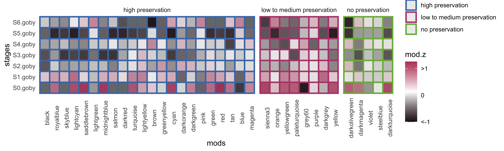
##
## $dat
## # A tibble: 245 × 7
## mods stages mod.z phase z.score rank pres
## <fct> <fct> <dbl> <chr> <dbl> <dbl> <chr>
## 1 black S0.goby 1.57 mid 61.1 2 high preservation
## 2 black S1.goby 0.376 mid 61.1 2 high preservation
## 3 black S2.goby -0.660 mid 61.1 2 high preservation
## 4 black S3.goby -0.695 mid 61.1 2 high preservation
## 5 black S4.goby -0.240 mid 61.1 2 high preservation
## 6 black S5.goby -0.580 mid 61.1 2 high preservation
## 7 black S6.goby -0.00801 mid 61.1 2 high preservation
## 8 royalblue S0.goby 0.994 mid 25.2 2 high preservation
## 9 royalblue S1.goby 0.624 mid 25.2 2 high preservation
## 10 royalblue S2.goby 0.00459 mid 25.2 2 high preservation
## # ℹ 235 more rows4.1.1.16 Goby~Danio
mp_plot_goby_ref_danio## $plot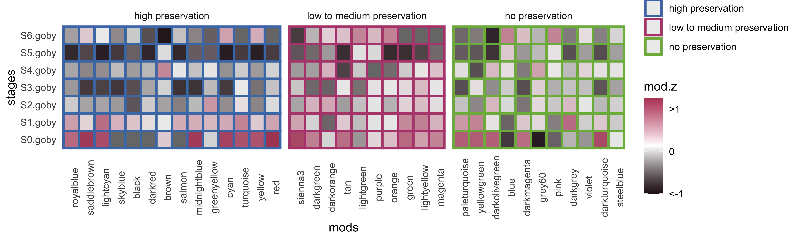
##
## $dat
## # A tibble: 245 × 7
## mods stages mod.z phase z.score rank pres
## <fct> <fct> <dbl> <chr> <dbl> <dbl> <chr>
## 1 royalblue S0.goby 0.994 mid 30.8 2 high preservation
## 2 royalblue S1.goby 0.624 mid 30.8 2 high preservation
## 3 royalblue S2.goby 0.00459 mid 30.8 2 high preservation
## 4 royalblue S3.goby -0.267 mid 30.8 2 high preservation
## 5 royalblue S4.goby -0.190 mid 30.8 2 high preservation
## 6 royalblue S5.goby -0.959 mid 30.8 2 high preservation
## 7 royalblue S6.goby -0.227 mid 30.8 2 high preservation
## 8 saddlebrown S0.goby 1.37 mid 16.1 3 high preservation
## 9 saddlebrown S1.goby 0.288 mid 16.1 3 high preservation
## 10 saddlebrown S2.goby -0.209 mid 16.1 3 high preservation
## # ℹ 235 more rows4.1.1.17 Danio~Clownfish
mp_plot_danio_ref_clown## $plot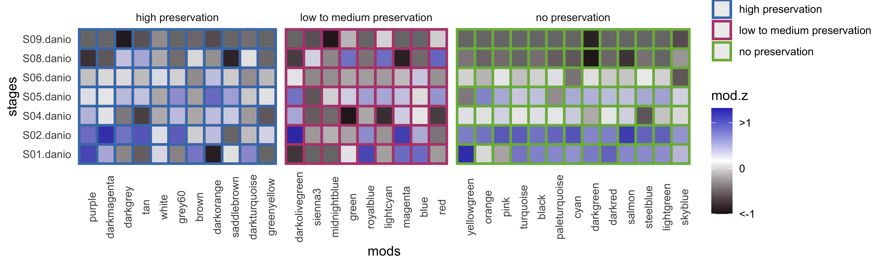
##
## $dat
## # A tibble: 231 × 7
## mods stages mod.z phase z.score rank pres
## <fct> <fct> <dbl> <chr> <dbl> <dbl> <chr>
## 1 purple S01.danio 1.03 early 45.0 2 high preservation
## 2 purple S02.danio 0.794 early 45.0 2 high preservation
## 3 purple S04.danio 0.415 early 45.0 2 high preservation
## 4 purple S05.danio 0.208 early 45.0 2 high preservation
## 5 purple S06.danio -0.0213 early 45.0 2 high preservation
## 6 purple S08.danio -0.721 early 45.0 2 high preservation
## 7 purple S09.danio -1.46 early 45.0 2 high preservation
## 8 darkmagenta S01.danio 0.476 mid 20.7 3 high preservation
## 9 darkmagenta S02.danio 1.16 mid 20.7 3 high preservation
## 10 darkmagenta S04.danio 0.188 mid 20.7 3 high preservation
## # ℹ 221 more rows4.1.1.18 Danio~Manini
mp_plot_danio_ref_manini## $plot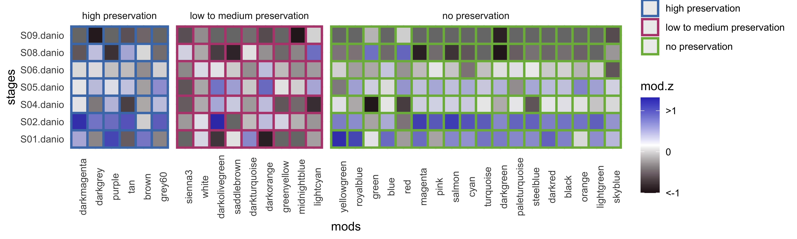
##
## $dat
## # A tibble: 231 × 7
## mods stages mod.z phase z.score rank pres
## <fct> <fct> <dbl> <chr> <dbl> <dbl> <chr>
## 1 darkmagenta S01.danio 0.476 mid 21.8 2 high preservation
## 2 darkmagenta S02.danio 1.16 mid 21.8 2 high preservation
## 3 darkmagenta S04.danio 0.188 mid 21.8 2 high preservation
## 4 darkmagenta S05.danio 0.176 mid 21.8 2 high preservation
## 5 darkmagenta S06.danio 0.0801 mid 21.8 2 high preservation
## 6 darkmagenta S08.danio -0.510 mid 21.8 2 high preservation
## 7 darkmagenta S09.danio -1.41 mid 21.8 2 high preservation
## 8 purple S01.danio 1.03 early 43.3 3 high preservation
## 9 purple S02.danio 0.794 early 43.3 3 high preservation
## 10 purple S04.danio 0.415 early 43.3 3 high preservation
## # ℹ 221 more rows4.1.1.19 Danio~Grouper
mp_plot_danio_ref_grouper## $plot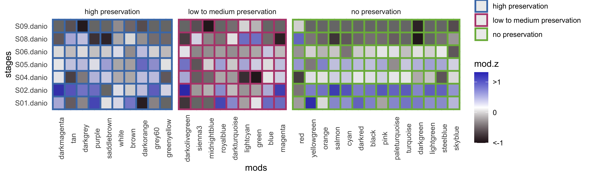
##
## $dat
## # A tibble: 231 × 7
## mods stages mod.z phase z.score rank pres
## <fct> <fct> <dbl> <chr> <dbl> <dbl> <chr>
## 1 darkmagenta S01.danio 0.476 mid 16.1 2 high preservation
## 2 darkmagenta S02.danio 1.16 mid 16.1 2 high preservation
## 3 darkmagenta S04.danio 0.188 mid 16.1 2 high preservation
## 4 darkmagenta S05.danio 0.176 mid 16.1 2 high preservation
## 5 darkmagenta S06.danio 0.0801 mid 16.1 2 high preservation
## 6 darkmagenta S08.danio -0.510 mid 16.1 2 high preservation
## 7 darkmagenta S09.danio -1.41 mid 16.1 2 high preservation
## 8 tan S01.danio -0.487 late 30.1 3 high preservation
## 9 tan S02.danio 0.936 late 30.1 3 high preservation
## 10 tan S04.danio -0.635 late 30.1 3 high preservation
## # ℹ 221 more rows4.1.1.20 Danio~Goby
mp_plot_danio_ref_goby## $plot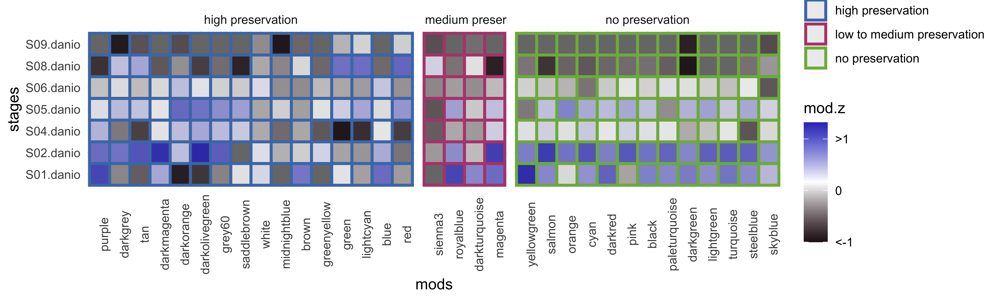
##
## $dat
## # A tibble: 231 × 7
## mods stages mod.z phase z.score rank pres
## <fct> <fct> <dbl> <chr> <dbl> <dbl> <chr>
## 1 purple S01.danio 1.03 early 39.2 1 high preservation
## 2 purple S02.danio 0.794 early 39.2 1 high preservation
## 3 purple S04.danio 0.415 early 39.2 1 high preservation
## 4 purple S05.danio 0.208 early 39.2 1 high preservation
## 5 purple S06.danio -0.0213 early 39.2 1 high preservation
## 6 purple S08.danio -0.721 early 39.2 1 high preservation
## 7 purple S09.danio -1.46 early 39.2 1 high preservation
## 8 darkgrey S01.danio -0.283 late 17.2 3 high preservation
## 9 darkgrey S02.danio 0.757 late 17.2 3 high preservation
## 10 darkgrey S04.danio -0.342 late 17.2 3 high preservation
## # ℹ 221 more rows4.2 Degree of preservation
rbind(
mp_plot_clown_ref_grouper$dat %>% distinct(mods, .keep_all = T) %>% mutate(comp="Clowfish~Grouper"),
mp_plot_clown_ref_goby$dat %>% distinct(mods, .keep_all = T) %>% mutate(comp="Clowfish~Goby"),
mp_plot_clown_ref_manini$dat %>% distinct(mods, .keep_all = T) %>% mutate(comp="Clowfish~Manini"),
mp_plot_clown_ref_danio$dat %>% distinct(mods, .keep_all = T) %>% mutate(comp="Clowfish~Danio"),
mp_plot_grouper_ref_clown$dat %>% distinct(mods, .keep_all = T) %>% mutate(comp="Grouper~Clownfish"),
mp_plot_grouper_ref_goby$dat %>% distinct(mods, .keep_all = T) %>% mutate(comp="Grouper~Goby"),
mp_plot_grouper_ref_manini$dat %>% distinct(mods, .keep_all = T) %>% mutate(comp="Grouper~Manini"),
mp_plot_grouper_ref_danio$dat %>% distinct(mods, .keep_all = T) %>% mutate(comp="Grouper~Danio"),
mp_plot_goby_ref_clown$dat %>% distinct(mods, .keep_all = T) %>% mutate(comp="Goby~Clownfish"),
mp_plot_goby_ref_grouper$dat %>% distinct(mods, .keep_all = T) %>% mutate(comp="Goby~Grouper"),
mp_plot_goby_ref_manini$dat %>% distinct(mods, .keep_all = T) %>% mutate(comp="Goby~Manini"),
mp_plot_goby_ref_danio$dat %>% distinct(mods, .keep_all = T) %>% mutate(comp="Goby~Danio"),
mp_plot_manini_ref_clown$dat %>% distinct(mods, .keep_all = T) %>% mutate(comp="Manini~Clownfish"),
mp_plot_manini_ref_grouper$dat %>% distinct(mods, .keep_all = T) %>% mutate(comp="Manini~Grouper"),
mp_plot_manini_ref_goby$dat %>% distinct(mods, .keep_all = T) %>% mutate(comp="Manini~Goby"),
mp_plot_manini_ref_danio$dat %>% distinct(mods, .keep_all = T) %>% mutate(comp="Manini~Danio"),
mp_plot_danio_ref_clown$dat %>% distinct(mods, .keep_all = T) %>% mutate(comp="Danio~Clownfish"),
mp_plot_danio_ref_grouper$dat %>% distinct(mods, .keep_all = T) %>% mutate(comp="Danio~Grouper"),
mp_plot_danio_ref_goby$dat %>% distinct(mods, .keep_all = T) %>% mutate(comp="Danio~Goby"),
mp_plot_danio_ref_manini$dat %>% distinct(mods, .keep_all = T) %>% mutate(comp="Danio~Manini")
) %>%
dplyr::count(pres, comp) %>%
mutate(comp=reorder(comp, -n)) %>%
ggplot(aes(y=comp, x=n))+
facet_wrap(~pres)+
geom_col(aes(fill=pres), color="grey20", linewidth=0.2, position = "stack")+
geom_text(aes(label=n, x=n-1.2), color="white", size=3)+
scale_fill_manual(values = c("#497BB6", "#B6497B", "#7BB649"))+
labs(x="Comparisons", y="Number of modules")+
theme_bw()+
theme(axis.text.y = element_text(angle=0,size=8,hjust = 1, vjust = 0.5),
axis.text.x = element_text(size=8),
strip.background = element_rect(fill = "grey95"))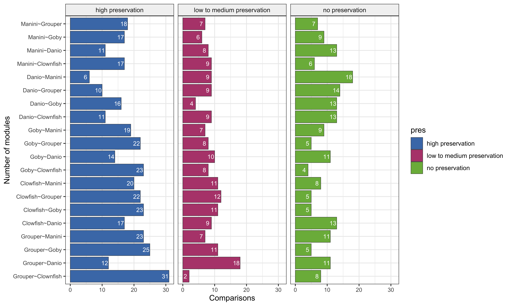
The following plots show the Jaccard indices for all the module comparisons with the significant higher than expected overlaps marked in red. I pick the module pairs with the highest Jaccard similarity and classify them as the conserved ones. Those are highlighted with black outline. The preservation classification is on the x and y axis. You can see that most homologous modules are usually highly preserved.
4.2.1 Clownfish and goby
#clown:317
#Grouper:310
#Goby:363
#Manini:385
#Zebrafish:385
expand_grid(c1=(clown_orth_net$connectivity %>% distinct(module) %>% pull(module)),
c2=(goby_orth_net$connectivity %>% distinct(module) %>% pull(module)))->jac_input
# Run the function with the ability to specify net1 and net2
purrr::map2(.x = jac_input$c1,
.y = jac_input$c2,
~ get_jaccard_estimate(.x, .y,
net1 = clown_orth_net$moduleColors,
net2 = goby_orth_net$moduleColors)) %>% list_rbind() %>%
arrange(desc(jaccard_index))->membership_stats
#Reorder colums and adjust the pvalues
membership_stats %>% mutate(col.goby=reorder(c2,-jaccard_index)) %>%
mutate(col.clown=reorder(c1,-jaccard_index)) %>%
mutate(padj=p.adjust(membership_stats$f.test.pval,"BH"))->membership_stats
#Join with the heatmap data
full_join(mp_plot_clown_ref_goby$dat %>% dplyr::rename(col.clown=mods),
membership_stats, by = "col.clown",relationship = "many-to-many") %>%
dplyr::rename(clown.pres=pres, stages.clown=stages, mod.z.clown=mod.z)->membership_stats
#Join with the heatmap data
full_join(mp_plot_goby_ref_clown$dat %>% dplyr::rename(col.goby=mods),
membership_stats, by = "col.goby",relationship = "many-to-many") %>%
dplyr::rename(goby.pres=pres, stages.goby=stages, mod.z.goby=mod.z) ->membership_stats
membership_stats %>% dplyr::select(c(col.clown, col.goby, jaccard_index, padj, clown.pres, goby.pres)) %>%
mutate(sig_ovelap=case_when(
padj < 0.05 ~ "yes", padj > 0.05 ~ "no")) %>% mutate(col.clown=reorder(col.clown,-jaccard_index))->membership_stats2
full_join(membership_stats %>% dplyr::select(c(col.clown, col.goby, jaccard_index, padj, clown.pres, goby.pres)) %>%
mutate(sig_ovelap=case_when(
padj < 0.05 ~ "yes", padj > 0.05 ~ "no")) %>% mutate(col.clown=reorder(col.clown,-jaccard_index)),
membership_stats2 %>% filter(sig_ovelap == "yes") %>%
mutate(homo=case_when(
jaccard_index >= quantile(membership_stats$jaccard_index,0.75) & sig_ovelap == "yes" ~ "homologous",
.default = "non-homologous")) %>%
distinct(col.clown,col.goby, .keep_all = T) %>%
slice_max(order_by = jaccard_index,by = col.clown,n = 2,) %>% dplyr::select(col.clown,col.goby,homo),by = c("col.clown","col.goby")) %>%
replace_na(list(homo="non-homologous"))->membership_stats2
membership_stats2 %>%
ggplot(aes(x=col.goby, y=col.clown))+
geom_tile(aes(fill=jaccard_index, color=homo, width=0.8, height=0.8), size=0.3)+
scale_y_discrete(position = "right") +
facet_grid(clown.pres~goby.pres,space = "free",scales = "free")+
labs(x=NULL, y=NULL)+
scale_fill_gradientn(colours = RColorBrewer::brewer.pal(9,"Oranges"),limits=c(0,0.5))+
scale_color_manual(values = c("black","white"))+
ggnewscale::new_scale_color()+
geom_point(aes(color = sig_ovelap),alpha=0.3,size=0.3,shape=8)+
scale_color_manual(values = c("white","red3"))+
theme_void()+
theme(strip.text = element_blank(),
strip.background = element_blank(),
panel.grid = element_blank(),
legend.position = "left",
axis.text = element_blank())->p1
membership_stats %>% dplyr::select(c(col.clown, col.goby, jaccard_index, padj, clown.pres, goby.pres,phase.x)) %>% mutate(col.clown=reorder(col.clown,-jaccard_index)) %>%
ggplot(aes(x=col.goby,y=1))+
geom_tile(aes(fill=goby.pres))+
facet_grid(cols = vars(goby.pres),space = "free",scales = "free")+
scale_fill_manual(values = c("#497BB6", "#B6497B", "#7BB649"))+
ggnewscale::new_scale_fill()+
geom_tile(aes(fill=phase.x, y=2))+
scale_fill_manual(values = c("#497", "#B64", "#7BB"))+
labs(x="Goby modules", y=NULL)+
theme_minimal()+
theme(axis.text.x = element_text(angle = -90,hjust = -0.005,vjust = 0.2),
strip.text = element_blank(),
strip.background = element_blank(),
panel.grid = element_blank(),
axis.text.y = element_blank(),
legend.position = "none")->p2
membership_stats %>% dplyr::select(c(col.clown, col.goby, jaccard_index, padj, clown.pres, goby.pres,phase.y)) %>% mutate(col.clown=reorder(col.clown,-jaccard_index)) %>%
ggplot(aes(y=col.clown,x=1))+
facet_grid(rows = vars(clown.pres),space = "free",scales = "free")+
geom_tile(aes(fill=clown.pres))+
scale_y_discrete(position = "right") +
scale_fill_manual(values = c("#497BB6", "#B6497B", "#7BB649"))+
ggnewscale::new_scale_fill()+
geom_tile(aes(fill=phase.y, x=0))+
scale_fill_manual(values = c("#497", "#B64", "#7BB"))+
labs(x=NULL, y="Clownfish modules")+
theme_minimal()+
theme(strip.text = element_blank(),
strip.background = element_blank(),
panel.grid = element_blank(),
axis.text.x = element_blank(),
legend.position = "none")->p3
qnt<-max(membership_stats$mod.z.clown)
membership_stats %>%
ggplot(aes(x = stages.clown,y = col.clown))+
facet_grid(rows = vars(clown.pres),space = "free",scales = "free")+
geom_tile(aes(fill = mod.z.clown), color = "grey80",) +
scale_fill_gradientn(colors = rev(cols.clown(11)), limits = c(-qnt, qnt),
breaks = c(-qnt, 0, qnt), labels = c(paste0("<", round(-qnt)), "0", paste0(">", round(qnt))))+
labs(y=NULL, x="Clownfish stages")+
theme_minimal()+
theme(axis.text.x = element_text(angle = 90,hjust = -0.005,vjust = 0.2),
strip.text = element_blank(),
strip.background = element_blank(),
panel.grid = element_blank(),
axis.text.y = element_blank(),
legend.position = "top")->p4
qnt<-max(membership_stats$mod.z.goby)
membership_stats %>%
ggplot(aes(y = stages.goby,x = col.goby))+
facet_grid(cols = vars(goby.pres),space = "free",scales = "free")+
geom_tile(aes(fill = mod.z.goby), color = "grey80",) +
scale_fill_gradientn(colors = rev(cols.goby(11)), limits = c(-qnt, qnt),
breaks = c(-qnt, 0, qnt), labels = c(paste0("<", round(-qnt)), "0", paste0(">", round(qnt))))+
labs(x=NULL, y="Goby stages")+
theme_minimal()+
theme(strip.text = element_blank(),
strip.background = element_blank(),
panel.grid = element_blank(),
axis.text.x = element_blank(),
legend.position = "bottom")->p5
wrap_plots(p1,p3,p2,nrow = 2,ncol = 2, heights = c(1,0.05), widths = c(1, 0.05))->wrapped_plot_clown_goby
wrapped_plot_clown_goby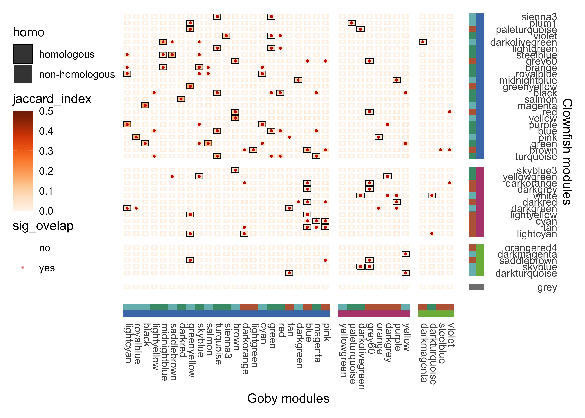
4.2.2 Clownfish and grouper
#clown:317
#Grouper:310
#Goby:363
#Manini:385
#Zebrafish:385
expand_grid(c1=(clown_orth_net$connectivity %>% distinct(module) %>% pull(module)),
c2=(grouper_orth_net$connectivity %>% distinct(module) %>% pull(module)))->jac_input
# Run the function with the ability to specify net1 and net2
purrr::map2(.x = jac_input$c1,
.y = jac_input$c2,
~ get_jaccard_estimate(.x, .y,
net1 = clown_orth_net$moduleColors,
net2 = grouper_orth_net$moduleColors)) %>% list_rbind() %>%
arrange(desc(jaccard_index))->membership_stats
#Reorder colums and adjust the pvalues
membership_stats %>% mutate(col.grouper=reorder(c2,-jaccard_index)) %>%
mutate(col.clown=reorder(c1,-jaccard_index)) %>%
mutate(padj=p.adjust(membership_stats$f.test.pval,"BH"))->membership_stats
#Join with the heatmap data
full_join(mp_plot_clown_ref_grouper$dat %>% dplyr::rename(col.clown=mods),
membership_stats, by = "col.clown",relationship = "many-to-many") %>%
dplyr::rename(clown.pres=pres, stages.clown=stages, mod.z.clown=mod.z)->membership_stats
#Join with the heatmap data
full_join(mp_plot_grouper_ref_clown$dat %>% dplyr::rename(col.grouper=mods),
membership_stats, by = "col.grouper",relationship = "many-to-many") %>%
dplyr::rename(grouper.pres=pres, stages.grouper=stages, mod.z.grouper=mod.z) ->membership_stats
membership_stats %>% dplyr::select(c(col.clown, col.grouper, jaccard_index, padj, clown.pres, grouper.pres)) %>%
mutate(sig_ovelap=case_when(
padj < 0.05 ~ "yes", padj > 0.05 ~ "no")) %>% mutate(col.clown=reorder(col.clown,-jaccard_index))->membership_stats2
full_join(membership_stats %>% dplyr::select(c(col.clown, col.grouper, jaccard_index, padj, clown.pres, grouper.pres)) %>%
mutate(sig_ovelap=case_when(
padj < 0.05 ~ "yes", padj > 0.05 ~ "no")) %>% mutate(col.clown=reorder(col.clown,-jaccard_index)),
membership_stats2 %>% filter(sig_ovelap == "yes") %>%
mutate(homo=case_when(
jaccard_index >= quantile(membership_stats$jaccard_index,0.75) & sig_ovelap == "yes" ~ "homologous",
.default = "non-homologous")) %>%
distinct(col.clown,col.grouper, .keep_all = T) %>%
slice_max(order_by = jaccard_index,by = col.grouper, n=2) %>% dplyr::select(col.clown,col.grouper,homo),by = c("col.clown","col.grouper")) %>%
replace_na(list(homo="non-homologous"))->membership_stats2
membership_stats2 %>%
ggplot(aes(x=col.grouper, y=col.clown))+
geom_tile(aes(fill=jaccard_index, color=homo, width=0.8, height=0.8), size=0.3)+
scale_y_discrete(position = "right") +
facet_grid(clown.pres~grouper.pres,space = "free",scales = "free")+
labs(x=NULL, y=NULL)+
scale_fill_gradientn(colours = RColorBrewer::brewer.pal(9,"Oranges"),limits=c(0,0.5))+
scale_color_manual(values = c("black","white"))+
ggnewscale::new_scale_color()+
geom_point(aes(color = sig_ovelap),alpha=0.3,size=0.3,shape=8)+
scale_color_manual(values = c("white","red3"))+
theme_void()+
theme(strip.text = element_blank(),
strip.background = element_blank(),
panel.grid = element_blank(),
legend.position = "left",
axis.text = element_blank())->p1
membership_stats %>% dplyr::select(c(col.clown, col.grouper, jaccard_index, padj, clown.pres, grouper.pres,phase.x)) %>% mutate(col.clown=reorder(col.clown,-jaccard_index)) %>%
ggplot(aes(x=col.grouper,y=1))+
geom_tile(aes(fill=grouper.pres))+
facet_grid(cols = vars(grouper.pres),space = "free",scales = "free")+
scale_fill_manual(values = c("#497BB6", "#B6497B", "#7BB649"))+
ggnewscale::new_scale_fill()+
geom_tile(aes(fill=phase.x, y=2))+
scale_fill_manual(values = c("#497", "#B64", "#7BB"))+
labs(x="Grouper modules", y=NULL)+
theme_minimal()+
theme(axis.text.x = element_text(angle = -90,hjust = -0.005,vjust = 0.2),
strip.text = element_blank(),
strip.background = element_blank(),
panel.grid = element_blank(),
axis.text.y = element_blank(),
legend.position = "none")->p2
membership_stats %>% dplyr::select(c(col.clown, col.grouper, jaccard_index, padj, clown.pres, grouper.pres,phase.y)) %>% mutate(col.clown=reorder(col.clown,-jaccard_index)) %>%
ggplot(aes(y=col.clown,x=1))+
facet_grid(rows = vars(clown.pres),space = "free",scales = "free")+
geom_tile(aes(fill=clown.pres))+
scale_y_discrete(position = "right") +
scale_fill_manual(values = c("#497BB6", "#B6497B", "#7BB649"))+
ggnewscale::new_scale_fill()+
geom_tile(aes(fill=phase.y, x=0))+
scale_fill_manual(values = c("#497", "#B64", "#7BB"))+
labs(x=NULL, y="Clownfish modules")+
theme_minimal()+
theme(strip.text = element_blank(),
strip.background = element_blank(),
panel.grid = element_blank(),
axis.text.x = element_blank(),
legend.position = "none")->p3
qnt<-max(membership_stats$mod.z.clown)
membership_stats %>%
ggplot(aes(x = stages.clown,y = col.clown))+
facet_grid(rows = vars(clown.pres),space = "free",scales = "free")+
geom_tile(aes(fill = mod.z.clown), color = "grey80",) +
scale_fill_gradientn(colors = rev(cols.clown(11)), limits = c(-qnt, qnt),
breaks = c(-qnt, 0, qnt), labels = c(paste0("<", round(-qnt)), "0", paste0(">", round(qnt))))+
labs(y=NULL, x="Clownfish stages")+
theme_minimal()+
theme(axis.text.x = element_text(angle = 90,hjust = -0.005,vjust = 0.2),
strip.text = element_blank(),
strip.background = element_blank(),
panel.grid = element_blank(),
axis.text.y = element_blank(),
legend.position = "top")->p4
qnt<-max(membership_stats$mod.z.grouper)
membership_stats %>%
ggplot(aes(y = stages.grouper,x = col.grouper))+
facet_grid(cols = vars(grouper.pres),space = "free",scales = "free")+
geom_tile(aes(fill = mod.z.grouper), color = "grey80",) +
scale_fill_gradientn(colors = rev(cols.grouper(11)), limits = c(-qnt, qnt),
breaks = c(-qnt, 0, qnt), labels = c(paste0("<", round(-qnt)), "0", paste0(">", round(qnt))))+
labs(x=NULL, y="Grouper stages")+
theme_minimal()+
theme(strip.text = element_blank(),
strip.background = element_blank(),
panel.grid = element_blank(),
axis.text.x = element_blank(),
legend.position = "bottom")->p5
wrap_plots(p1,p3,p2,nrow = 2,ncol = 2, heights = c(1,0.05), widths = c(1, 0.05))->wrapped_plot_clown_grouper
wrapped_plot_clown_grouper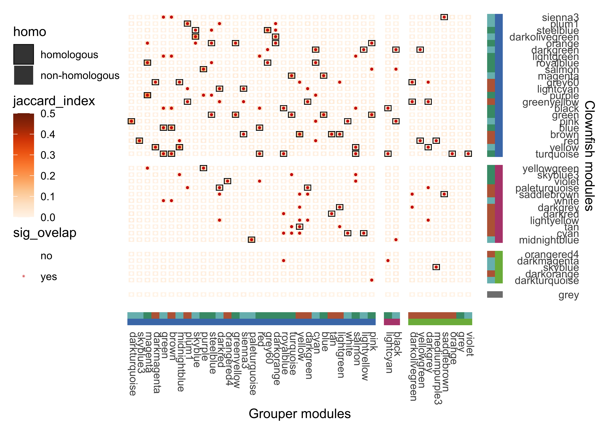
4.2.3 Clownfish and manini
#clown:317
#Grouper:310
#Goby:363
#Manini:385
#Zebrafish:385
expand_grid(c1=(clown_orth_net$connectivity %>% distinct(module) %>% pull(module)),
c2=(manini_orth_net$connectivity %>% distinct(module) %>% pull(module)))->jac_input
# Run the function with the ability to specify net1 and net2
purrr::map2(.x = jac_input$c1,
.y = jac_input$c2,
~ get_jaccard_estimate(.x, .y,
net1 = clown_orth_net$moduleColors,
net2 = manini_orth_net$moduleColors)) %>% list_rbind() %>%
arrange(desc(jaccard_index))->membership_stats
#Reorder colums and adjust the pvalues
membership_stats %>% mutate(col.manini=reorder(c2,-jaccard_index)) %>%
mutate(col.clown=reorder(c1,-jaccard_index)) %>%
mutate(padj=p.adjust(membership_stats$f.test.pval,"BH"))->membership_stats
#Join with the heatmap data
full_join(mp_plot_clown_ref_manini$dat %>% dplyr::rename(col.clown=mods),
membership_stats, by = "col.clown",relationship = "many-to-many") %>%
dplyr::rename(clown.pres=pres, stages.clown=stages, mod.z.clown=mod.z)->membership_stats
#Join with the heatmap data
full_join(mp_plot_manini_ref_clown$dat %>% dplyr::rename(col.manini=mods),
membership_stats, by = "col.manini",relationship = "many-to-many") %>%
dplyr::rename(manini.pres=pres, stages.manini=stages, mod.z.manini=mod.z) ->membership_stats
membership_stats %>% dplyr::select(c(col.clown, col.manini, jaccard_index, padj, clown.pres, manini.pres)) %>%
mutate(sig_ovelap=case_when(
padj < 0.05 ~ "yes", padj > 0.05 ~ "no")) %>% mutate(col.clown=reorder(col.clown,-jaccard_index))->membership_stats2
full_join(membership_stats %>% dplyr::select(c(col.clown, col.manini, jaccard_index, padj, clown.pres, manini.pres)) %>%
mutate(sig_ovelap=case_when(
padj < 0.05 ~ "yes", padj > 0.05 ~ "no")) %>% mutate(col.clown=reorder(col.clown,-jaccard_index)),
membership_stats2 %>% filter(sig_ovelap == "yes") %>%
mutate(homo=case_when(
jaccard_index >= quantile(membership_stats$jaccard_index,0.75) & sig_ovelap == "yes" ~ "homologous",
.default = "non-homologous")) %>%
distinct(col.clown,col.manini, .keep_all = T) %>%
slice_max(order_by = jaccard_index,by = col.clown, n=2) %>% dplyr::select(col.clown,col.manini,homo),by = c("col.clown","col.manini")) %>%
replace_na(list(homo="non-homologous"))->membership_stats2
membership_stats2 %>%
ggplot(aes(x=col.manini, y=col.clown))+
geom_tile(aes(fill=jaccard_index, color=homo, width=0.8, height=0.8), size=0.3)+
scale_y_discrete(position = "right") +
facet_grid(clown.pres~manini.pres,space = "free",scales = "free")+
labs(x=NULL, y=NULL)+
scale_fill_gradientn(colours = RColorBrewer::brewer.pal(9,"Oranges"),limits=c(0,0.5))+
scale_color_manual(values = c("black","white"))+
ggnewscale::new_scale_color()+
geom_point(aes(color = sig_ovelap),alpha=0.3,size=0.3,shape=8)+
scale_color_manual(values = c("white","red3"))+
theme_void()+
theme(strip.text = element_blank(),
strip.background = element_blank(),
panel.grid = element_blank(),
legend.position = "left",
axis.text = element_blank())->p1
membership_stats %>% dplyr::select(c(col.clown, col.manini, jaccard_index, padj, clown.pres, manini.pres,phase.x)) %>% mutate(col.clown=reorder(col.clown,-jaccard_index)) %>%
ggplot(aes(x=col.manini,y=1))+
geom_tile(aes(fill=manini.pres))+
facet_grid(cols = vars(manini.pres),space = "free",scales = "free")+
scale_fill_manual(values = c("#497BB6", "#B6497B", "#7BB649"))+
ggnewscale::new_scale_fill()+
geom_tile(aes(fill=phase.x, y=2))+
scale_fill_manual(values = c("#497", "#B64", "#7BB"))+
labs(x="manini modules", y=NULL)+
theme_minimal()+
theme(axis.text.x = element_text(angle = -90,hjust = -0.005,vjust = 0.2),
strip.text = element_blank(),
strip.background = element_blank(),
panel.grid = element_blank(),
axis.text.y = element_blank(),
legend.position = "none")->p2
membership_stats %>% dplyr::select(c(col.clown, col.manini, jaccard_index, padj, clown.pres, manini.pres,phase.y)) %>% mutate(col.clown=reorder(col.clown,-jaccard_index)) %>%
ggplot(aes(y=col.clown,x=1))+
facet_grid(rows = vars(clown.pres),space = "free",scales = "free")+
geom_tile(aes(fill=clown.pres))+
scale_y_discrete(position = "right") +
scale_fill_manual(values = c("#497BB6", "#B6497B", "#7BB649"))+
ggnewscale::new_scale_fill()+
geom_tile(aes(fill=phase.y, x=0))+
scale_fill_manual(values = c("#497", "#B64", "#7BB"))+
labs(x=NULL, y="Clownfish modules")+
theme_minimal()+
theme(strip.text = element_blank(),
strip.background = element_blank(),
panel.grid = element_blank(),
axis.text.x = element_blank(),
legend.position = "none")->p3
qnt<-max(membership_stats$mod.z.clown)
membership_stats %>%
ggplot(aes(x = stages.clown,y = col.clown))+
facet_grid(rows = vars(clown.pres),space = "free",scales = "free")+
geom_tile(aes(fill = mod.z.clown), color = "grey80",) +
scale_fill_gradientn(colors = rev(cols.clown(11)), limits = c(-qnt, qnt),
breaks = c(-qnt, 0, qnt), labels = c(paste0("<", round(-qnt)), "0", paste0(">", round(qnt))))+
labs(y=NULL, x="Clownfish stages")+
theme_minimal()+
theme(axis.text.x = element_text(angle = 90,hjust = -0.005,vjust = 0.2),
strip.text = element_blank(),
strip.background = element_blank(),
panel.grid = element_blank(),
axis.text.y = element_blank(),
legend.position = "top")->p4
qnt<-max(membership_stats$mod.z.manini)
membership_stats %>%
ggplot(aes(y = stages.manini,x = col.manini))+
facet_grid(cols = vars(manini.pres),space = "free",scales = "free")+
geom_tile(aes(fill = mod.z.manini), color = "grey80",) +
scale_fill_gradientn(colors = rev(cols.manini(11)), limits = c(-qnt, qnt),
breaks = c(-qnt, 0, qnt), labels = c(paste0("<", round(-qnt)), "0", paste0(">", round(qnt))))+
labs(x=NULL, y="manini stages")+
theme_minimal()+
theme(strip.text = element_blank(),
strip.background = element_blank(),
panel.grid = element_blank(),
axis.text.x = element_blank(),
legend.position = "bottom")->p5
wrap_plots(p1,p3,p2,nrow = 2,ncol = 2, heights = c(1,0.05), widths = c(1, 0.05))->wrapped_plot_clown_manini
wrapped_plot_clown_manini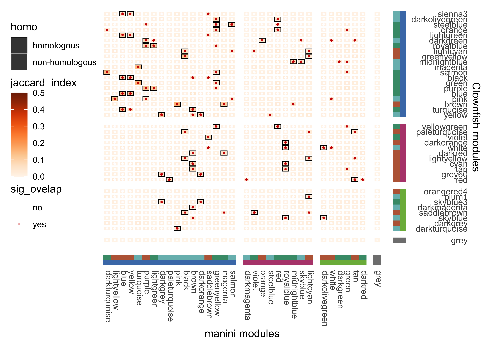
4.2.4 Clownfish and danio
#clown:317
#Grouper:310
#Goby:363
#Manini:385
#Zebrafish:385
expand_grid(c1=(clown_orth_net$connectivity %>% distinct(module) %>% pull(module)),
c2=(danio_orth_net$connectivity %>% distinct(module) %>% pull(module)))->jac_input
# Run the function with the ability to specify net1 and net2
purrr::map2(.x = jac_input$c1,
.y = jac_input$c2,
~ get_jaccard_estimate(.x, .y,
net1 = clown_orth_net$moduleColors,
net2 = danio_orth_net$moduleColors)) %>% list_rbind() %>%
arrange(desc(jaccard_index))->membership_stats
#Reorder colums and adjust the pvalues
membership_stats %>% mutate(col.danio=reorder(c2,-jaccard_index)) %>%
mutate(col.clown=reorder(c1,-jaccard_index)) %>%
mutate(padj=p.adjust(membership_stats$f.test.pval,"BH"))->membership_stats
#Join with the heatmap data
full_join(mp_plot_clown_ref_danio$dat %>% dplyr::rename(col.clown=mods),
membership_stats, by = "col.clown",relationship = "many-to-many") %>%
dplyr::rename(clown.pres=pres, stages.clown=stages, mod.z.clown=mod.z)->membership_stats
#Join with the heatmap data
full_join(mp_plot_danio_ref_clown$dat %>% dplyr::rename(col.danio=mods),
membership_stats, by = "col.danio",relationship = "many-to-many") %>%
dplyr::rename(danio.pres=pres, stages.danio=stages, mod.z.danio=mod.z) ->membership_stats
membership_stats %>% dplyr::select(c(col.clown, col.danio, jaccard_index, padj, clown.pres, danio.pres)) %>%
mutate(sig_ovelap=case_when(
padj < 0.05 ~ "yes", padj > 0.05 ~ "no")) %>% mutate(col.clown=reorder(col.clown,-jaccard_index))->membership_stats2
full_join(membership_stats %>% dplyr::select(c(col.clown, col.danio, jaccard_index, padj, clown.pres, danio.pres)) %>%
mutate(sig_ovelap=case_when(
padj < 0.05 ~ "yes", padj > 0.05 ~ "no")) %>% mutate(col.clown=reorder(col.clown,-jaccard_index)),
membership_stats2 %>% filter(sig_ovelap == "yes") %>%
mutate(homo=case_when(
jaccard_index >= quantile(membership_stats$jaccard_index,0.75) & sig_ovelap == "yes" ~ "homologous",
.default = "non-homologous")) %>%
distinct(col.clown,col.danio, .keep_all = T) %>%
slice_max(order_by = jaccard_index,by = col.clown, n=2) %>% dplyr::select(col.clown,col.danio,homo),by = c("col.clown","col.danio")) %>%
replace_na(list(homo="non-homologous"))->membership_stats2
membership_stats2 %>%
ggplot(aes(x=col.danio, y=col.clown))+
geom_tile(aes(fill=jaccard_index, color=homo, width=0.8, height=0.8), size=0.3)+
scale_y_discrete(position = "right") +
facet_grid(clown.pres~danio.pres,space = "free",scales = "free")+
labs(x=NULL, y=NULL)+
scale_fill_gradientn(colours = RColorBrewer::brewer.pal(9,"Oranges"),limits=c(0,0.5))+
scale_color_manual(values = c("black","white"))+
ggnewscale::new_scale_color()+
geom_point(aes(color = sig_ovelap),alpha=0.3,size=0.3,shape=8)+
scale_color_manual(values = c("white","red3"))+
theme_void()+
theme(strip.text = element_blank(),
strip.background = element_blank(),
panel.grid = element_blank(),
legend.position = "left",
axis.text = element_blank())->p1
membership_stats %>% dplyr::select(c(col.clown, col.danio, jaccard_index, padj, clown.pres, danio.pres,phase.x)) %>% mutate(col.clown=reorder(col.clown,-jaccard_index)) %>%
ggplot(aes(x=col.danio,y=1))+
geom_tile(aes(fill=danio.pres))+
facet_grid(cols = vars(danio.pres),space = "free",scales = "free")+
scale_fill_manual(values = c("#497BB6", "#B6497B", "#7BB649"))+
ggnewscale::new_scale_fill()+
geom_tile(aes(fill=phase.x, y=2))+
scale_fill_manual(values = c("#497", "#B64", "#7BB"))+
labs(x="danio modules", y=NULL)+
theme_minimal()+
theme(axis.text.x = element_text(angle = -90,hjust = -0.005,vjust = 0.2),
strip.text = element_blank(),
strip.background = element_blank(),
panel.grid = element_blank(),
axis.text.y = element_blank(),
legend.position = "none")->p2
membership_stats %>% dplyr::select(c(col.clown, col.danio, jaccard_index, padj, clown.pres, danio.pres,phase.y)) %>% mutate(col.clown=reorder(col.clown,-jaccard_index)) %>%
ggplot(aes(y=col.clown,x=1))+
facet_grid(rows = vars(clown.pres),space = "free",scales = "free")+
geom_tile(aes(fill=clown.pres))+
scale_y_discrete(position = "right") +
scale_fill_manual(values = c("#497BB6", "#B6497B", "#7BB649"))+
ggnewscale::new_scale_fill()+
geom_tile(aes(fill=phase.y, x=0))+
scale_fill_manual(values = c("#497", "#B64", "#7BB"))+
labs(x=NULL, y="Clownfish modules")+
theme_minimal()+
theme(strip.text = element_blank(),
strip.background = element_blank(),
panel.grid = element_blank(),
axis.text.x = element_blank(),
legend.position = "none")->p3
qnt<-max(membership_stats$mod.z.clown)
membership_stats %>%
ggplot(aes(x = stages.clown,y = col.clown))+
facet_grid(rows = vars(clown.pres),space = "free",scales = "free")+
geom_tile(aes(fill = mod.z.clown), color = "grey80",) +
scale_fill_gradientn(colors = rev(cols.clown(11)), limits = c(-qnt, qnt),
breaks = c(-qnt, 0, qnt), labels = c(paste0("<", round(-qnt)), "0", paste0(">", round(qnt))))+
labs(y=NULL, x="Clownfish stages")+
theme_minimal()+
theme(axis.text.x = element_text(angle = 90,hjust = -0.005,vjust = 0.2),
strip.text = element_blank(),
strip.background = element_blank(),
panel.grid = element_blank(),
axis.text.y = element_blank(),
legend.position = "top")->p4
qnt<-max(membership_stats$mod.z.danio)
membership_stats %>%
ggplot(aes(y = stages.danio,x = col.danio))+
facet_grid(cols = vars(danio.pres),space = "free",scales = "free")+
geom_tile(aes(fill = mod.z.danio), color = "grey80",) +
scale_fill_gradientn(colors = rev(cols.danio(11)), limits = c(-qnt, qnt),
breaks = c(-qnt, 0, qnt), labels = c(paste0("<", round(-qnt)), "0", paste0(">", round(qnt))))+
labs(x=NULL, y="danio stages")+
theme_minimal()+
theme(strip.text = element_blank(),
strip.background = element_blank(),
panel.grid = element_blank(),
axis.text.x = element_blank(),
legend.position = "bottom")->p5
wrap_plots(p1,p3,p2,nrow = 2,ncol = 2, heights = c(1,0.05), widths = c(1, 0.05))->wrapped_plot_clown_danio
wrapped_plot_clown_danio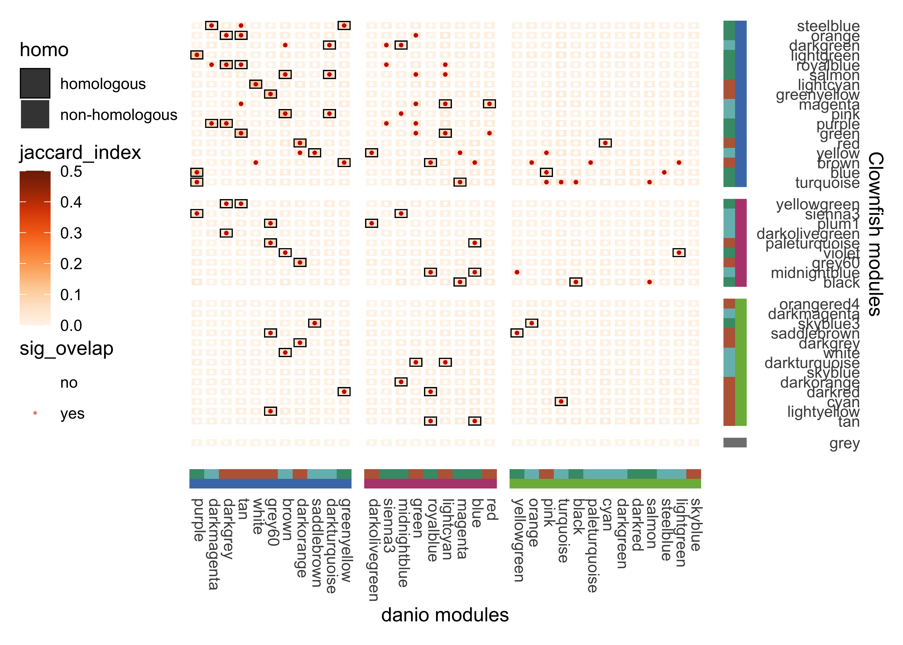
4.2.5 Grouper and manini
#clown:317
#Grouper:310
#Goby:363
#Manini:385
#Zebrafish:385
expand_grid(c1=(grouper_orth_net$connectivity %>% distinct(module) %>% pull(module)),
c2=(manini_orth_net$connectivity %>% distinct(module) %>% pull(module)))->jac_input
# Run the function with the ability to specify net1 and net2
purrr::map2(.x = jac_input$c1,
.y = jac_input$c2,
~ get_jaccard_estimate(.x, .y,
net1 = grouper_orth_net$moduleColors,
net2 = manini_orth_net$moduleColors)) %>% list_rbind() %>%
arrange(desc(jaccard_index))->membership_stats
#Reorder colums and adjust the pvalues
membership_stats %>% mutate(col.manini=reorder(c2,-jaccard_index)) %>%
mutate(col.grouper=reorder(c1,-jaccard_index)) %>%
mutate(padj=p.adjust(membership_stats$f.test.pval,"BH"))->membership_stats
#Join with the heatmap data
full_join(mp_plot_grouper_ref_manini$dat %>% dplyr::rename(col.grouper=mods),
membership_stats, by = "col.grouper",relationship = "many-to-many") %>%
dplyr::rename(grouper.pres=pres, stages.grouper=stages, mod.z.grouper=mod.z)->membership_stats
#Join with the heatmap data
full_join(mp_plot_manini_ref_grouper$dat %>% dplyr::rename(col.manini=mods),
membership_stats, by = "col.manini",relationship = "many-to-many") %>%
dplyr::rename(manini.pres=pres, stages.manini=stages, mod.z.manini=mod.z) ->membership_stats
membership_stats %>% dplyr::select(c(col.grouper, col.manini, jaccard_index, padj, grouper.pres, manini.pres)) %>%
mutate(sig_ovelap=case_when(
padj < 0.05 ~ "yes", padj > 0.05 ~ "no")) %>% mutate(col.grouper=reorder(col.grouper,-jaccard_index))->membership_stats2
full_join(membership_stats %>% dplyr::select(c(col.grouper, col.manini, jaccard_index, padj, grouper.pres, manini.pres)) %>%
mutate(sig_ovelap=case_when(
padj < 0.05 ~ "yes", padj > 0.05 ~ "no")) %>% mutate(col.grouper=reorder(col.grouper,-jaccard_index)),
membership_stats2 %>% filter(sig_ovelap == "yes") %>%
mutate(homo=case_when(
jaccard_index >= quantile(membership_stats$jaccard_index,0.75) & sig_ovelap == "yes" ~ "homologous",
.default = "non-homologous")) %>%
distinct(col.grouper,col.manini, .keep_all = T) %>%
slice_max(order_by = jaccard_index,by = col.grouper, n=2) %>% dplyr::select(col.grouper,col.manini,homo),by = c("col.grouper","col.manini")) %>%
replace_na(list(homo="non-homologous"))->membership_stats2
membership_stats2 %>%
ggplot(aes(x=col.manini, y=col.grouper))+
geom_tile(aes(fill=jaccard_index, color=homo, width=0.8, height=0.8), size=0.3)+
facet_grid(grouper.pres~manini.pres,space = "free",scales = "free")+
scale_y_discrete(position = "right") +
labs(x=NULL, y=NULL)+
scale_fill_gradientn(colours = RColorBrewer::brewer.pal(9,"Oranges"),limits=c(0,0.5))+
scale_color_manual(values = c("black","white"))+
ggnewscale::new_scale_color()+
geom_point(aes(color = sig_ovelap),alpha=0.3,size=0.3,shape=8)+
scale_color_manual(values = c("white","red3"))+
theme_void()+
theme(strip.text = element_blank(),
strip.background = element_blank(),
panel.grid = element_blank(),
legend.position = "left",
axis.text = element_blank())->p1
membership_stats %>% dplyr::select(c(col.grouper, col.manini, jaccard_index, padj, grouper.pres, manini.pres,phase.x)) %>% mutate(col.grouper=reorder(col.grouper,-jaccard_index)) %>%
ggplot(aes(x=col.manini,y=1))+
geom_tile(aes(fill=manini.pres))+
facet_grid(cols = vars(manini.pres),space = "free",scales = "free")+
scale_fill_manual(values = c("#497BB6", "#B6497B", "#7BB649"))+
ggnewscale::new_scale_fill()+
geom_tile(aes(fill=phase.x, y=2))+
scale_fill_manual(values = c("#497", "#B64", "#7BB"))+
labs(x="Manini modules", y=NULL)+
theme_minimal()+
theme(axis.text.x = element_text(angle = -90,hjust = -0.005,vjust = 0.2),
strip.text = element_blank(),
strip.background = element_blank(),
panel.grid = element_blank(),
axis.text.y = element_blank(),
legend.position = "none")->p2
membership_stats %>% dplyr::select(c(col.grouper, col.manini, jaccard_index, padj, grouper.pres, manini.pres,phase.y)) %>% mutate(col.grouper=reorder(col.grouper,-jaccard_index)) %>%
ggplot(aes(y=col.grouper,x=1))+
facet_grid(rows = vars(grouper.pres),space = "free",scales = "free")+
geom_tile(aes(fill=grouper.pres))+
scale_y_discrete(position = "right") +
scale_fill_manual(values = c("#497BB6", "#B6497B", "#7BB649"))+
ggnewscale::new_scale_fill()+
geom_tile(aes(fill=phase.y, x=0))+
scale_fill_manual(values = c("#497", "#B64", "#7BB"))+
labs(x=NULL, y="Grouper modules")+
theme_minimal()+
theme(strip.text = element_blank(),
strip.background = element_blank(),
panel.grid = element_blank(),
axis.text.x = element_blank(),
legend.position = "none")->p3
qnt<-max(membership_stats$mod.z.grouper)
membership_stats %>%
ggplot(aes(x = stages.grouper,y = col.grouper))+
facet_grid(rows = vars(grouper.pres),space = "free",scales = "free")+
geom_tile(aes(fill = mod.z.grouper), color = "grey80",) +
scale_fill_gradientn(colors = rev(cols.grouper(11)), limits = c(-qnt, qnt),
breaks = c(-qnt, 0, qnt), labels = c(paste0("<", round(-qnt)), "0", paste0(">", round(qnt))))+
labs(y=NULL, x="Grouper stages")+
theme_minimal()+
theme(axis.text.x = element_text(angle = 90,hjust = -0.005,vjust = 0.2),
strip.text = element_blank(),
strip.background = element_blank(),
panel.grid = element_blank(),
axis.text.y = element_blank(),
legend.position = "top")->p4
qnt<-max(membership_stats$mod.z.manini)
membership_stats %>%
ggplot(aes(y = stages.manini,x = col.manini))+
facet_grid(cols = vars(manini.pres),space = "free",scales = "free")+
geom_tile(aes(fill = mod.z.manini), color = "grey80",) +
scale_fill_gradientn(colors = rev(cols.manini(11)), limits = c(-qnt, qnt),
breaks = c(-qnt, 0, qnt), labels = c(paste0("<", round(-qnt)), "0", paste0(">", round(qnt))))+
labs(x=NULL, y="Manini stages")+
theme_minimal()+
theme(strip.text = element_blank(),
strip.background = element_blank(),
panel.grid = element_blank(),
axis.text.x = element_blank(),
legend.position = "bottom")->p5
wrap_plots(p1,p3,p2,nrow = 2,ncol = 2, heights = c(1,0.05), widths = c(1, 0.05))->wrapped_plot_grouper_manini
wrapped_plot_grouper_manini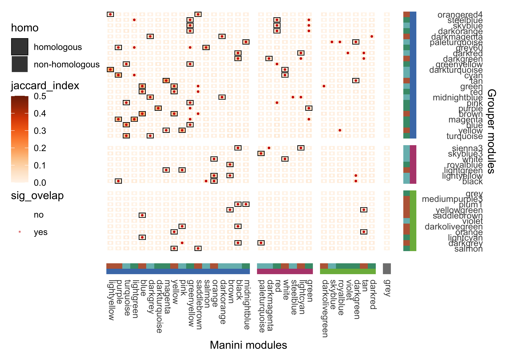
4.2.6 Grouper and goby
#clown:317
#Grouper:310
#Goby:363
#Manini:385
#Zebrafish:385
expand_grid(c1=(grouper_orth_net$connectivity %>% distinct(module) %>% pull(module)),
c2=(goby_orth_net$connectivity %>% distinct(module) %>% pull(module)))->jac_input
# Run the function with the ability to specify net1 and net2
purrr::map2(.x = jac_input$c1,
.y = jac_input$c2,
~ get_jaccard_estimate(.x, .y,
net1 = grouper_orth_net$moduleColors,
net2 = goby_orth_net$moduleColors)) %>% list_rbind() %>%
arrange(desc(jaccard_index))->membership_stats
#Reorder colums and adjust the pvalues
membership_stats %>% mutate(col.goby=reorder(c2,-jaccard_index)) %>%
mutate(col.grouper=reorder(c1,-jaccard_index)) %>%
mutate(padj=p.adjust(membership_stats$f.test.pval,"BH"))->membership_stats
#Join with the heatmap data
full_join(mp_plot_grouper_ref_goby$dat %>% dplyr::rename(col.grouper=mods),
membership_stats, by = "col.grouper",relationship = "many-to-many") %>%
dplyr::rename(grouper.pres=pres, stages.grouper=stages, mod.z.grouper=mod.z)->membership_stats
#Join with the heatmap data
full_join(mp_plot_goby_ref_grouper$dat %>% dplyr::rename(col.goby=mods),
membership_stats, by = "col.goby",relationship = "many-to-many") %>%
dplyr::rename(goby.pres=pres, stages.goby=stages, mod.z.goby=mod.z) ->membership_stats
membership_stats %>% dplyr::select(c(col.grouper, col.goby, jaccard_index, padj, grouper.pres, goby.pres)) %>%
mutate(sig_ovelap=case_when(
padj < 0.05 ~ "yes", padj > 0.05 ~ "no")) %>% mutate(col.grouper=reorder(col.grouper,-jaccard_index))->membership_stats2
full_join(membership_stats %>% dplyr::select(c(col.grouper, col.goby, jaccard_index, padj, grouper.pres, goby.pres)) %>%
mutate(sig_ovelap=case_when(
padj < 0.05 ~ "yes", padj > 0.05 ~ "no")) %>% mutate(col.grouper=reorder(col.grouper,-jaccard_index)),
membership_stats2 %>% filter(sig_ovelap == "yes") %>%
mutate(homo=case_when(
jaccard_index >= quantile(membership_stats$jaccard_index,0.75) & sig_ovelap == "yes" ~ "homologous",
.default = "non-homologous")) %>%
distinct(col.grouper,col.goby, .keep_all = T) %>%
slice_max(order_by = jaccard_index,by = col.grouper, n=2) %>% dplyr::select(col.grouper,col.goby,homo),by = c("col.grouper","col.goby")) %>%
replace_na(list(homo="non-homologous"))->membership_stats2
membership_stats2 %>%
ggplot(aes(x=col.goby, y=col.grouper))+
geom_tile(aes(fill=jaccard_index, color=homo, width=0.8, height=0.8), size=0.3)+
facet_grid(grouper.pres~goby.pres,space = "free",scales = "free")+
scale_y_discrete(position = "right") +
labs(x=NULL, y=NULL)+
scale_fill_gradientn(colours = RColorBrewer::brewer.pal(9,"Oranges"),limits=c(0,0.5))+
scale_color_manual(values = c("black","white"))+
ggnewscale::new_scale_color()+
geom_point(aes(color = sig_ovelap),alpha=0.3,size=0.3,shape=8)+
scale_color_manual(values = c("white","red3"))+
theme_void()+
theme(strip.text = element_blank(),
strip.background = element_blank(),
panel.grid = element_blank(),
legend.position = "left",
axis.text = element_blank())->p1
membership_stats %>% dplyr::select(c(col.grouper, col.goby, jaccard_index, padj, grouper.pres, goby.pres,phase.x)) %>% mutate(col.grouper=reorder(col.grouper,-jaccard_index)) %>%
ggplot(aes(x=col.goby,y=1))+
geom_tile(aes(fill=goby.pres))+
facet_grid(cols = vars(goby.pres),space = "free",scales = "free")+
scale_fill_manual(values = c("#497BB6", "#B6497B", "#7BB649"))+
ggnewscale::new_scale_fill()+
geom_tile(aes(fill=phase.x, y=2))+
scale_fill_manual(values = c("#497", "#B64", "#7BB"))+
labs(x="Goby modules", y=NULL)+
theme_minimal()+
theme(axis.text.x = element_text(angle = -90,hjust = -0.005,vjust = 0.2),
strip.text = element_blank(),
strip.background = element_blank(),
panel.grid = element_blank(),
axis.text.y = element_blank(),
legend.position = "none")->p2
membership_stats %>% dplyr::select(c(col.grouper, col.goby, jaccard_index, padj, grouper.pres, goby.pres,phase.y)) %>% mutate(col.grouper=reorder(col.grouper,-jaccard_index)) %>%
ggplot(aes(y=col.grouper,x=1))+
facet_grid(rows = vars(grouper.pres),space = "free",scales = "free")+
geom_tile(aes(fill=grouper.pres))+
scale_y_discrete(position = "right") +
scale_fill_manual(values = c("#497BB6", "#B6497B", "#7BB649"))+
ggnewscale::new_scale_fill()+
geom_tile(aes(fill=phase.y, x=0))+
scale_fill_manual(values = c("#497", "#B64", "#7BB"))+
labs(x=NULL, y="Grouper modules")+
theme_minimal()+
theme(strip.text = element_blank(),
strip.background = element_blank(),
panel.grid = element_blank(),
axis.text.x = element_blank(),
legend.position = "none")->p3
qnt<-max(membership_stats$mod.z.grouper)
membership_stats %>%
ggplot(aes(x = stages.grouper,y = col.grouper))+
facet_grid(rows = vars(grouper.pres),space = "free",scales = "free")+
geom_tile(aes(fill = mod.z.grouper), color = "grey80",) +
scale_fill_gradientn(colors = rev(cols.grouper(11)), limits = c(-qnt, qnt),
breaks = c(-qnt, 0, qnt), labels = c(paste0("<", round(-qnt)), "0", paste0(">", round(qnt))))+
labs(y=NULL, x="Grouper stages")+
theme_minimal()+
theme(axis.text.x = element_text(angle = 90,hjust = -0.005,vjust = 0.2),
strip.text = element_blank(),
strip.background = element_blank(),
panel.grid = element_blank(),
axis.text.y = element_blank(),
legend.position = "top")->p4
qnt<-max(membership_stats$mod.z.goby)
membership_stats %>%
ggplot(aes(y = stages.goby,x = col.goby))+
facet_grid(cols = vars(goby.pres),space = "free",scales = "free")+
geom_tile(aes(fill = mod.z.goby), color = "grey80",) +
scale_fill_gradientn(colors = rev(cols.goby(11)), limits = c(-qnt, qnt),
breaks = c(-qnt, 0, qnt), labels = c(paste0("<", round(-qnt)), "0", paste0(">", round(qnt))))+
labs(x=NULL, y="Goby stages")+
theme_minimal()+
theme(strip.text = element_blank(),
strip.background = element_blank(),
panel.grid = element_blank(),
axis.text.x = element_blank(),
legend.position = "bottom")->p5
wrap_plots(p1,p3,p2,nrow = 2,ncol = 2, heights = c(1,0.05), widths = c(1, 0.05))->wrapped_plot_grouper_goby
wrapped_plot_grouper_goby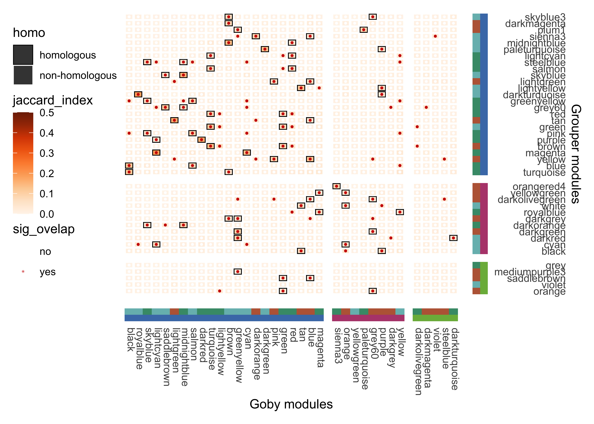
4.2.7 Grouper and danio
#clown:317
#Grouper:310
#Goby:363
#Manini:385
#Zebrafish:385
expand_grid(c1=(grouper_orth_net$connectivity %>% distinct(module) %>% pull(module)),
c2=(danio_orth_net$connectivity %>% distinct(module) %>% pull(module)))->jac_input
# Run the function with the ability to specify net1 and net2
purrr::map2(.x = jac_input$c1,
.y = jac_input$c2,
~ get_jaccard_estimate(.x, .y,
net1 = grouper_orth_net$moduleColors,
net2 = danio_orth_net$moduleColors)) %>% list_rbind() %>%
arrange(desc(jaccard_index))->membership_stats
#Reorder colums and adjust the pvalues
membership_stats %>% mutate(col.danio=reorder(c2,-jaccard_index)) %>%
mutate(col.grouper=reorder(c1,-jaccard_index)) %>%
mutate(padj=p.adjust(membership_stats$f.test.pval,"BH"))->membership_stats
#Join with the heatmap data
full_join(mp_plot_grouper_ref_danio$dat %>% dplyr::rename(col.grouper=mods),
membership_stats, by = "col.grouper",relationship = "many-to-many") %>%
dplyr::rename(grouper.pres=pres, stages.grouper=stages, mod.z.grouper=mod.z)->membership_stats
#Join with the heatmap data
full_join(mp_plot_danio_ref_grouper$dat %>% dplyr::rename(col.danio=mods),
membership_stats, by = "col.danio",relationship = "many-to-many") %>%
dplyr::rename(danio.pres=pres, stages.danio=stages, mod.z.danio=mod.z) ->membership_stats
membership_stats %>% dplyr::select(c(col.grouper, col.danio, jaccard_index, padj, grouper.pres, danio.pres)) %>%
mutate(sig_ovelap=case_when(
padj < 0.05 ~ "yes", padj > 0.05 ~ "no")) %>% mutate(col.grouper=reorder(col.grouper,-jaccard_index))->membership_stats2
full_join(membership_stats %>% dplyr::select(c(col.grouper, col.danio, jaccard_index, padj, grouper.pres, danio.pres)) %>%
mutate(sig_ovelap=case_when(
padj < 0.05 ~ "yes", padj > 0.05 ~ "no")) %>% mutate(col.grouper=reorder(col.grouper,-jaccard_index)),
membership_stats2 %>% filter(sig_ovelap == "yes") %>%
mutate(homo=case_when(
jaccard_index >= quantile(membership_stats$jaccard_index,0.75) & sig_ovelap == "yes" ~ "homologous",
.default = "non-homologous")) %>%
distinct(col.grouper,col.danio, .keep_all = T) %>%
slice_max(order_by = jaccard_index,by = col.grouper, n=2) %>% dplyr::select(col.grouper,col.danio,homo),by = c("col.grouper","col.danio")) %>%
replace_na(list(homo="non-homologous"))->membership_stats2
membership_stats2 %>%
ggplot(aes(x=col.danio, y=col.grouper))+
geom_tile(aes(fill=jaccard_index, color=homo, width=0.8, height=0.8), size=0.3)+
facet_grid(grouper.pres~danio.pres,space = "free",scales = "free")+
scale_y_discrete(position = "right") +
labs(x=NULL, y=NULL)+
scale_fill_gradientn(colours = RColorBrewer::brewer.pal(9,"Oranges"),limits=c(0,0.5))+
scale_color_manual(values = c("black","white"))+
ggnewscale::new_scale_color()+
geom_point(aes(color = sig_ovelap),alpha=0.3,size=0.3,shape=8)+
scale_color_manual(values = c("white","red3"))+
theme_void()+
theme(strip.text = element_blank(),
strip.background = element_blank(),
panel.grid = element_blank(),
legend.position = "left",
axis.text = element_blank())->p1
membership_stats %>% dplyr::select(c(col.grouper, col.danio, jaccard_index, padj, grouper.pres, danio.pres,phase.x)) %>% mutate(col.grouper=reorder(col.grouper,-jaccard_index)) %>%
ggplot(aes(x=col.danio,y=1))+
geom_tile(aes(fill=danio.pres))+
facet_grid(cols = vars(danio.pres),space = "free",scales = "free")+
scale_fill_manual(values = c("#497BB6", "#B6497B", "#7BB649"))+
ggnewscale::new_scale_fill()+
geom_tile(aes(fill=phase.x, y=2))+
scale_fill_manual(values = c("#497", "#B64", "#7BB"))+
labs(x="danio modules", y=NULL)+
theme_minimal()+
theme(axis.text.x = element_text(angle = -90,hjust = -0.005,vjust = 0.2),
strip.text = element_blank(),
strip.background = element_blank(),
panel.grid = element_blank(),
axis.text.y = element_blank(),
legend.position = "none")->p2
membership_stats %>% dplyr::select(c(col.grouper, col.danio, jaccard_index, padj, grouper.pres, danio.pres,phase.y)) %>% mutate(col.grouper=reorder(col.grouper,-jaccard_index)) %>%
ggplot(aes(y=col.grouper,x=1))+
facet_grid(rows = vars(grouper.pres),space = "free",scales = "free")+
geom_tile(aes(fill=grouper.pres))+
scale_y_discrete(position = "right") +
scale_fill_manual(values = c("#497BB6", "#B6497B", "#7BB649"))+
ggnewscale::new_scale_fill()+
geom_tile(aes(fill=phase.y, x=0))+
scale_fill_manual(values = c("#497", "#B64", "#7BB"))+
labs(x=NULL, y="Grouper modules")+
theme_minimal()+
theme(strip.text = element_blank(),
strip.background = element_blank(),
panel.grid = element_blank(),
axis.text.x = element_blank(),
legend.position = "none")->p3
qnt<-max(membership_stats$mod.z.grouper)
membership_stats %>%
ggplot(aes(x = stages.grouper,y = col.grouper))+
facet_grid(rows = vars(grouper.pres),space = "free",scales = "free")+
geom_tile(aes(fill = mod.z.grouper), color = "grey80",) +
scale_fill_gradientn(colors = rev(cols.grouper(11)), limits = c(-qnt, qnt),
breaks = c(-qnt, 0, qnt), labels = c(paste0("<", round(-qnt)), "0", paste0(">", round(qnt))))+
labs(y=NULL, x="Grouper stages")+
theme_minimal()+
theme(axis.text.x = element_text(angle = 90,hjust = -0.005,vjust = 0.2),
strip.text = element_blank(),
strip.background = element_blank(),
panel.grid = element_blank(),
axis.text.y = element_blank(),
legend.position = "top")->p4
qnt<-max(membership_stats$mod.z.danio)
membership_stats %>%
ggplot(aes(y = stages.danio,x = col.danio))+
facet_grid(cols = vars(danio.pres),space = "free",scales = "free")+
geom_tile(aes(fill = mod.z.danio), color = "grey80",) +
scale_fill_gradientn(colors = rev(cols.danio(11)), limits = c(-qnt, qnt),
breaks = c(-qnt, 0, qnt), labels = c(paste0("<", round(-qnt)), "0", paste0(">", round(qnt))))+
labs(x=NULL, y="danio stages")+
theme_minimal()+
theme(strip.text = element_blank(),
strip.background = element_blank(),
panel.grid = element_blank(),
axis.text.x = element_blank(),
legend.position = "bottom")->p5
wrap_plots(p1,p3,p2,nrow = 2,ncol = 2, heights = c(1,0.05), widths = c(1, 0.05))->wrapped_plot_grouper_danio
wrapped_plot_grouper_danio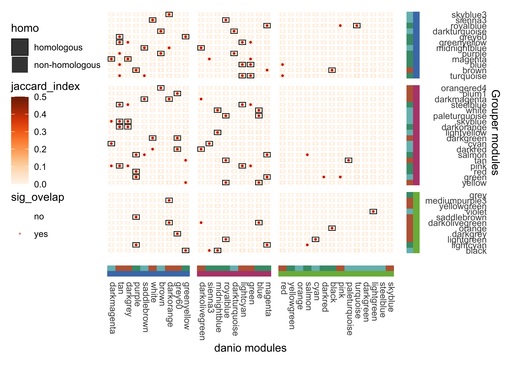
4.2.8 Manini and goby
#clown:317
#Grouper:310
#Goby:363
#Manini:385
#Zebrafish:385
expand_grid(c1=(manini_orth_net$connectivity %>% distinct(module) %>% pull(module)),
c2=(goby_orth_net$connectivity %>% distinct(module) %>% pull(module)))->jac_input
# Run the function with the ability to specify net1 and net2
purrr::map2(.x = jac_input$c1,
.y = jac_input$c2,
~ get_jaccard_estimate(.x, .y,
net1 = manini_orth_net$moduleColors,
net2 = goby_orth_net$moduleColors)) %>% list_rbind() %>%
arrange(desc(jaccard_index))->membership_stats
#Reorder colums and adjust the pvalues
membership_stats %>% mutate(col.goby=reorder(c2,-jaccard_index)) %>%
mutate(col.manini=reorder(c1,-jaccard_index)) %>%
mutate(padj=p.adjust(membership_stats$f.test.pval,"BH"))->membership_stats
#Join with the heatmap data
full_join(mp_plot_manini_ref_goby$dat %>% dplyr::rename(col.manini=mods),
membership_stats, by = "col.manini",relationship = "many-to-many") %>%
dplyr::rename(manini.pres=pres, stages.manini=stages, mod.z.manini=mod.z)->membership_stats
#Join with the heatmap data
full_join(mp_plot_goby_ref_manini$dat %>% dplyr::rename(col.goby=mods),
membership_stats, by = "col.goby",relationship = "many-to-many") %>%
dplyr::rename(goby.pres=pres, stages.goby=stages, mod.z.goby=mod.z) ->membership_stats
membership_stats %>% dplyr::select(c(col.manini, col.goby, jaccard_index, padj, manini.pres, goby.pres)) %>%
mutate(sig_ovelap=case_when(
padj < 0.05 ~ "yes", padj > 0.05 ~ "no")) %>% mutate(col.manini=reorder(col.manini,-jaccard_index))->membership_stats2
full_join(membership_stats %>% dplyr::select(c(col.manini, col.goby, jaccard_index, padj, manini.pres, goby.pres)) %>%
mutate(sig_ovelap=case_when(
padj < 0.05 ~ "yes", padj > 0.05 ~ "no")) %>% mutate(col.manini=reorder(col.manini,-jaccard_index)),
membership_stats2 %>% filter(sig_ovelap == "yes") %>%
mutate(homo=case_when(
jaccard_index >= quantile(membership_stats$jaccard_index,0.75) & sig_ovelap == "yes" ~ "homologous",
.default = "non-homologous")) %>%
distinct(col.manini,col.goby, .keep_all = T) %>%
slice_max(order_by = jaccard_index,by = col.goby, n=2) %>% dplyr::select(col.manini,col.goby,homo),by = c("col.manini","col.goby")) %>%
replace_na(list(homo="non-homologous"))->membership_stats2
membership_stats2 %>%
ggplot(aes(x=col.goby, y=col.manini))+
geom_tile(aes(fill=jaccard_index, color=homo, width=0.8, height=0.8), size=0.3)+
facet_grid(manini.pres~goby.pres,space = "free",scales = "free")+
scale_y_discrete(position = "right") +
labs(x=NULL, y=NULL)+
scale_fill_gradientn(colours = RColorBrewer::brewer.pal(9,"Oranges"),limits=c(0,0.5))+
scale_color_manual(values = c("grey15","white"))+
ggnewscale::new_scale_color()+
geom_point(aes(color = sig_ovelap),alpha=0.3,size=0.3,shape=8)+
scale_color_manual(values = c("white","red3"))+
theme_void()+
theme(strip.text = element_blank(),
strip.background = element_blank(),
panel.grid = element_blank(),
legend.position = "left",
axis.text = element_blank())->p1
membership_stats %>% dplyr::select(c(col.manini, col.goby, jaccard_index, padj, manini.pres, goby.pres,phase.x)) %>% mutate(col.manini=reorder(col.manini,-jaccard_index)) %>%
ggplot(aes(x=col.goby,y=1))+
facet_grid(cols = vars(goby.pres),space = "free",scales = "free")+
geom_tile(aes(fill=goby.pres))+
scale_fill_manual(values = c("#497BB6", "#B6497B", "#7BB649"))+
ggnewscale::new_scale_fill()+
geom_tile(aes(fill=phase.x, y=2))+
scale_fill_manual(values = c("#497", "#B64", "#7BB"))+
labs(x="Goby modules", y=NULL)+
theme_minimal()+
theme(axis.text.x = element_text(angle = -90,hjust = -0.005,vjust = 0.2),
strip.text = element_blank(),
strip.background = element_blank(),
panel.grid = element_blank(),
axis.text.y = element_blank(),
legend.position = "none")->p2
membership_stats %>% dplyr::select(c(col.manini, col.goby, jaccard_index, padj, manini.pres, goby.pres,phase.y)) %>% mutate(col.manini=reorder(col.manini,-jaccard_index)) %>%
ggplot(aes(y=col.manini,x=1))+
facet_grid(rows = vars(manini.pres),space = "free",scales = "free")+
geom_tile(aes(fill=manini.pres))+
scale_fill_manual(values = c("#497BB6", "#B6497B", "#7BB649"))+
scale_y_discrete(position = "right") +
ggnewscale::new_scale_fill()+
geom_tile(aes(fill=phase.y, x=0))+
scale_fill_manual(values = c("#497", "#B64", "#7BB"))+
labs(x=NULL, y="Manini modules")+
theme_minimal()+
theme(strip.text = element_blank(),
strip.background = element_blank(),
panel.grid = element_blank(),
axis.text.x = element_blank(),
legend.position = "none")->p3
qnt<-max(membership_stats$mod.z.manini)
membership_stats %>%
ggplot(aes(x = stages.manini,y = col.manini))+
facet_grid(rows = vars(manini.pres),space = "free",scales = "free")+
geom_tile(aes(fill = mod.z.manini), color = "grey80",) +
scale_fill_gradientn(colors = rev(cols.manini(11)), limits = c(-qnt, qnt),
breaks = c(-qnt, 0, qnt), labels = c(paste0("<", round(-qnt)), "0", paste0(">", round(qnt))))+
labs(y=NULL, x="Manini stages")+
theme_minimal()+
theme(axis.text.x = element_text(angle = 90,hjust = -0.005,vjust = 0.2),
strip.text = element_blank(),
strip.background = element_blank(),
panel.grid = element_blank(),
axis.text.y = element_blank(),
legend.position = "top")->p4
qnt<-max(membership_stats$mod.z.goby)
membership_stats %>%
ggplot(aes(y = stages.goby,x = col.goby))+
facet_grid(cols = vars(goby.pres),space = "free",scales = "free")+
geom_tile(aes(fill = mod.z.goby), color = "grey80",) +
scale_fill_gradientn(colors = rev(cols.goby(11)), limits = c(-qnt, qnt),
breaks = c(-qnt, 0, qnt), labels = c(paste0("<", round(-qnt)), "0", paste0(">", round(qnt))))+
labs(x=NULL, y="Goby stages")+
theme_minimal()+
theme(strip.text = element_blank(),
strip.background = element_blank(),
panel.grid = element_blank(),
axis.text.x = element_blank(),
legend.position = "bottom")->p5
wrap_plots(p1,p3,p2,nrow = 2,ncol = 2, heights = c(1,0.05), widths = c(1, 0.05))->wrapped_plot_manini_goby
wrapped_plot_manini_goby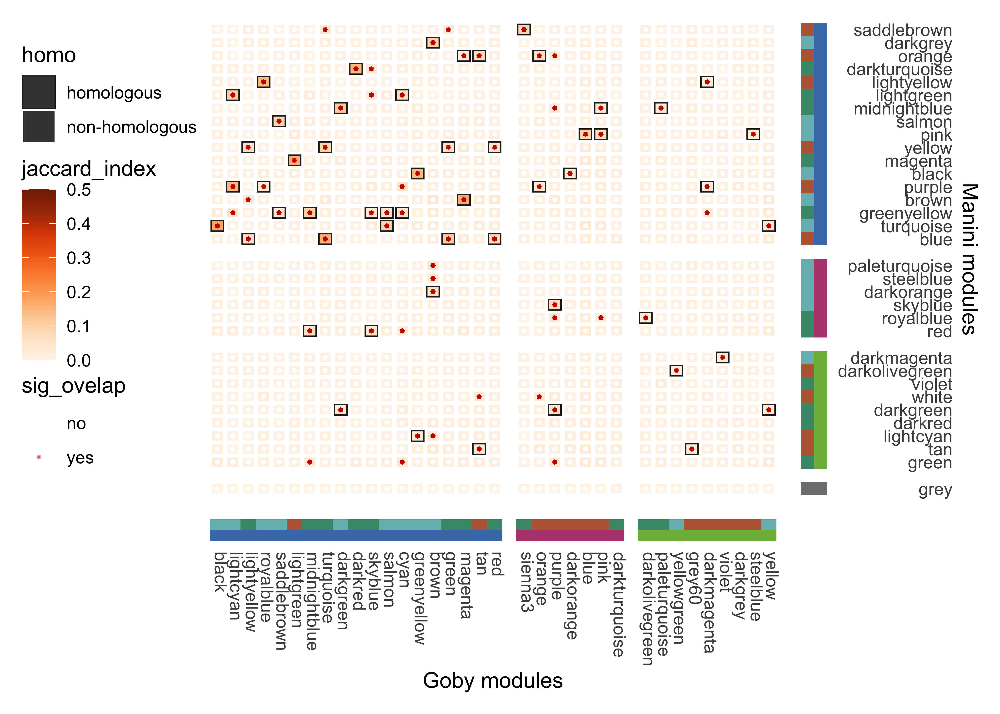
4.2.9 Manini and danio
#clown:317
#Grouper:310
#Goby:363
#Manini:385
#Zebrafish:385
expand_grid(c1=(manini_orth_net$connectivity %>% distinct(module) %>% pull(module)),
c2=(danio_orth_net$connectivity %>% distinct(module) %>% pull(module)))->jac_input
# Run the function with the ability to specify net1 and net2
purrr::map2(.x = jac_input$c1,
.y = jac_input$c2,
~ get_jaccard_estimate(.x, .y,
net1 = manini_orth_net$moduleColors,
net2 = danio_orth_net$moduleColors)) %>% list_rbind() %>%
arrange(desc(jaccard_index))->membership_stats
#Reorder colums and adjust the pvalues
membership_stats %>% mutate(col.danio=reorder(c2,-jaccard_index)) %>%
mutate(col.manini=reorder(c1,-jaccard_index)) %>%
mutate(padj=p.adjust(membership_stats$f.test.pval,"BH"))->membership_stats
#Join with the heatmap data
full_join(mp_plot_manini_ref_danio$dat %>% dplyr::rename(col.manini=mods),
membership_stats, by = "col.manini",relationship = "many-to-many") %>%
dplyr::rename(manini.pres=pres, stages.manini=stages, mod.z.manini=mod.z)->membership_stats
#Join with the heatmap data
full_join(mp_plot_danio_ref_manini$dat %>% dplyr::rename(col.danio=mods),
membership_stats, by = "col.danio",relationship = "many-to-many") %>%
dplyr::rename(danio.pres=pres, stages.danio=stages, mod.z.danio=mod.z) ->membership_stats
membership_stats %>% dplyr::select(c(col.manini, col.danio, jaccard_index, padj, manini.pres, danio.pres)) %>%
mutate(sig_ovelap=case_when(
padj < 0.05 ~ "yes", padj > 0.05 ~ "no")) %>% mutate(col.manini=reorder(col.manini,-jaccard_index))->membership_stats2
full_join(membership_stats %>% dplyr::select(c(col.manini, col.danio, jaccard_index, padj, manini.pres, danio.pres)) %>%
mutate(sig_ovelap=case_when(
padj < 0.05 ~ "yes", padj > 0.05 ~ "no")) %>% mutate(col.manini=reorder(col.manini,-jaccard_index)),
membership_stats2 %>% filter(sig_ovelap == "yes") %>%
mutate(homo=case_when(
jaccard_index >= quantile(membership_stats$jaccard_index,0.75) & sig_ovelap == "yes" ~ "homologous",
.default = "non-homologous")) %>%
distinct(col.manini,col.danio, .keep_all = T) %>%
slice_max(order_by = jaccard_index,by = col.danio, n=2) %>% dplyr::select(col.manini,col.danio,homo),by = c("col.manini","col.danio")) %>%
replace_na(list(homo="non-homologous"))->membership_stats2
membership_stats2 %>%
ggplot(aes(x=col.danio, y=col.manini))+
geom_tile(aes(fill=jaccard_index, color=homo, width=0.8, height=0.8), size=0.3)+
facet_grid(manini.pres~danio.pres,space = "free",scales = "free")+
scale_y_discrete(position = "right") +
labs(x=NULL, y=NULL)+
scale_fill_gradientn(colours = RColorBrewer::brewer.pal(9,"Oranges"),limits=c(0,0.5))+
scale_color_manual(values = c("grey15","white"))+
ggnewscale::new_scale_color()+
geom_point(aes(color = sig_ovelap),alpha=0.3,size=0.3,shape=8)+
scale_color_manual(values = c("white","red3"))+
theme_void()+
theme(strip.text = element_blank(),
strip.background = element_blank(),
panel.grid = element_blank(),
legend.position = "left",
axis.text = element_blank())->p1
membership_stats %>% dplyr::select(c(col.manini, col.danio, jaccard_index, padj, manini.pres, danio.pres,phase.x)) %>% mutate(col.manini=reorder(col.manini,-jaccard_index)) %>%
ggplot(aes(x=col.danio,y=1))+
facet_grid(cols = vars(danio.pres),space = "free",scales = "free")+
geom_tile(aes(fill=danio.pres))+
scale_fill_manual(values = c("#497BB6", "#B6497B", "#7BB649"))+
ggnewscale::new_scale_fill()+
geom_tile(aes(fill=phase.x, y=2))+
scale_fill_manual(values = c("#497", "#B64", "#7BB"))+
labs(x="danio modules", y=NULL)+
theme_minimal()+
theme(axis.text.x = element_text(angle = -90,hjust = -0.005,vjust = 0.2),
strip.text = element_blank(),
strip.background = element_blank(),
panel.grid = element_blank(),
axis.text.y = element_blank(),
legend.position = "none")->p2
membership_stats %>% dplyr::select(c(col.manini, col.danio, jaccard_index, padj, manini.pres, danio.pres,phase.y)) %>% mutate(col.manini=reorder(col.manini,-jaccard_index)) %>%
ggplot(aes(y=col.manini,x=1))+
facet_grid(rows = vars(manini.pres),space = "free",scales = "free")+
geom_tile(aes(fill=manini.pres))+
scale_fill_manual(values = c("#497BB6", "#B6497B", "#7BB649"))+
scale_y_discrete(position = "right") +
ggnewscale::new_scale_fill()+
geom_tile(aes(fill=phase.y, x=0))+
scale_fill_manual(values = c("#497", "#B64", "#7BB"))+
labs(x=NULL, y="Manini modules")+
theme_minimal()+
theme(strip.text = element_blank(),
strip.background = element_blank(),
panel.grid = element_blank(),
axis.text.x = element_blank(),
legend.position = "none")->p3
qnt<-max(membership_stats$mod.z.manini)
membership_stats %>%
ggplot(aes(x = stages.manini,y = col.manini))+
facet_grid(rows = vars(manini.pres),space = "free",scales = "free")+
geom_tile(aes(fill = mod.z.manini), color = "grey80",) +
scale_fill_gradientn(colors = rev(cols.manini(11)), limits = c(-qnt, qnt),
breaks = c(-qnt, 0, qnt), labels = c(paste0("<", round(-qnt)), "0", paste0(">", round(qnt))))+
labs(y=NULL, x="Manini stages")+
theme_minimal()+
theme(axis.text.x = element_text(angle = 90,hjust = -0.005,vjust = 0.2),
strip.text = element_blank(),
strip.background = element_blank(),
panel.grid = element_blank(),
axis.text.y = element_blank(),
legend.position = "top")->p4
qnt<-max(membership_stats$mod.z.danio)
membership_stats %>%
ggplot(aes(y = stages.danio,x = col.danio))+
facet_grid(cols = vars(danio.pres),space = "free",scales = "free")+
geom_tile(aes(fill = mod.z.danio), color = "grey80",) +
scale_fill_gradientn(colors = rev(cols.danio(11)), limits = c(-qnt, qnt),
breaks = c(-qnt, 0, qnt), labels = c(paste0("<", round(-qnt)), "0", paste0(">", round(qnt))))+
labs(x=NULL, y="danio stages")+
theme_minimal()+
theme(strip.text = element_blank(),
strip.background = element_blank(),
panel.grid = element_blank(),
axis.text.x = element_blank(),
legend.position = "bottom")->p5
wrap_plots(p1,p3,p2,nrow = 2,ncol = 2, heights = c(1,0.05), widths = c(1, 0.05))->wrapped_plot_manini_danio
wrapped_plot_manini_danio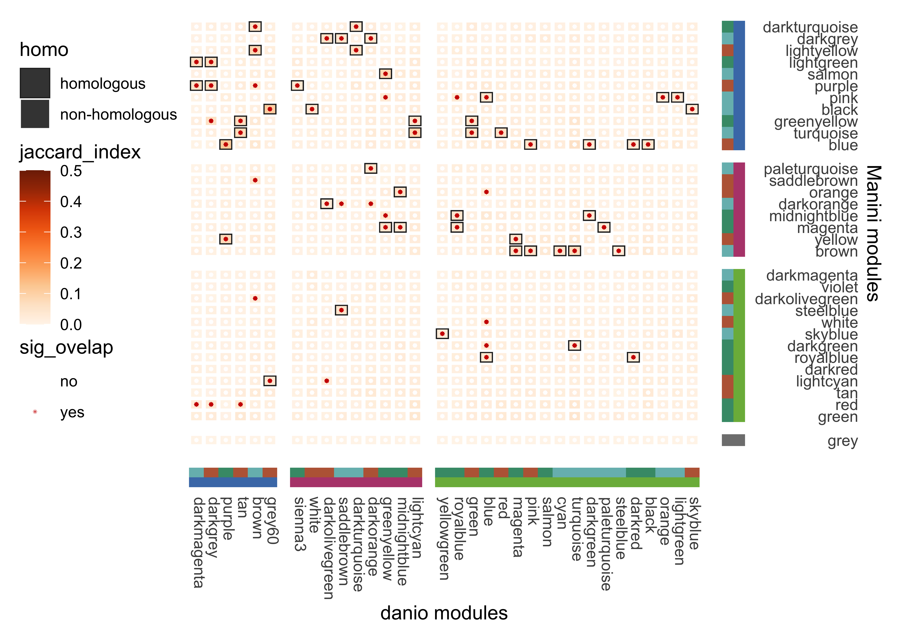
4.2.10 Goby and danio
#clown:317
#Grouper:310
#Goby:363
#Manini:385
#Zebrafish:385
expand_grid(c1=(goby_orth_net$connectivity %>% distinct(module) %>% pull(module)),
c2=(danio_orth_net$connectivity %>% distinct(module) %>% pull(module)))->jac_input
# Run the function with the ability to specify net1 and net2
purrr::map2(.x = jac_input$c1,
.y = jac_input$c2,
~ get_jaccard_estimate(.x, .y,
net1 = goby_orth_net$moduleColors,
net2 = danio_orth_net$moduleColors)) %>% list_rbind() %>%
arrange(desc(jaccard_index))->membership_stats
#Reorder colums and adjust the pvalues
membership_stats %>% mutate(col.danio=reorder(c2,-jaccard_index)) %>%
mutate(col.goby=reorder(c1,-jaccard_index)) %>%
mutate(padj=p.adjust(membership_stats$f.test.pval,"BH"))->membership_stats
#Join with the heatmap data
full_join(mp_plot_goby_ref_danio$dat %>% dplyr::rename(col.goby=mods),
membership_stats, by = "col.goby",relationship = "many-to-many") %>%
dplyr::rename(goby.pres=pres, stages.goby=stages, mod.z.goby=mod.z)->membership_stats
#Join with the heatmap data
full_join(mp_plot_danio_ref_goby$dat %>% dplyr::rename(col.danio=mods),
membership_stats, by = "col.danio",relationship = "many-to-many") %>%
dplyr::rename(danio.pres=pres, stages.danio=stages, mod.z.danio=mod.z) ->membership_stats
membership_stats %>% dplyr::select(c(col.goby, col.danio, jaccard_index, padj, goby.pres, danio.pres)) %>%
mutate(sig_ovelap=case_when(
padj < 0.05 ~ "yes", padj > 0.05 ~ "no")) %>% mutate(col.goby=reorder(col.goby,-jaccard_index))->membership_stats2
full_join(membership_stats %>% dplyr::select(c(col.goby, col.danio, jaccard_index, padj, goby.pres, danio.pres)) %>%
mutate(sig_ovelap=case_when(
padj < 0.05 ~ "yes", padj > 0.05 ~ "no")) %>% mutate(col.goby=reorder(col.goby,-jaccard_index)),
membership_stats2 %>% filter(sig_ovelap == "yes") %>%
mutate(homo=case_when(
jaccard_index >= quantile(membership_stats$jaccard_index,0.75) & sig_ovelap == "yes" ~ "homologous",
.default = "non-homologous")) %>%
distinct(col.goby,col.danio, .keep_all = T) %>%
slice_max(order_by = jaccard_index,by = col.goby, n=2) %>% dplyr::select(col.goby,col.danio,homo),by = c("col.goby","col.danio")) %>%
replace_na(list(homo="non-homologous"))->membership_stats2
membership_stats2 %>%
ggplot(aes(x=col.danio, y=col.goby))+
geom_tile(aes(fill=jaccard_index, color=homo, width=0.8, height=0.8), size=0.3)+
facet_grid(goby.pres~danio.pres,space = "free",scales = "free")+
scale_y_discrete(position = "right") +
labs(x=NULL, y=NULL)+
scale_fill_gradientn(colours = RColorBrewer::brewer.pal(9,"Oranges"),limits=c(0,0.5))+
scale_color_manual(values = c("grey15","white"))+
ggnewscale::new_scale_color()+
geom_point(aes(color = sig_ovelap),alpha=0.3,size=0.3,shape=8)+
scale_color_manual(values = c("white","red3"))+
theme_void()+
theme(strip.text = element_blank(),
strip.background = element_blank(),
panel.grid = element_blank(),
legend.position = "left",
axis.text = element_blank())->p1
membership_stats %>% dplyr::select(c(col.goby, col.danio, jaccard_index, padj, goby.pres, danio.pres,phase.x)) %>% mutate(col.goby=reorder(col.goby,-jaccard_index)) %>%
ggplot(aes(x=col.danio,y=1))+
facet_grid(cols = vars(danio.pres),space = "free",scales = "free")+
geom_tile(aes(fill=danio.pres))+
scale_fill_manual(values = c("#497BB6", "#B6497B", "#7BB649"))+
ggnewscale::new_scale_fill()+
geom_tile(aes(fill=phase.x, y=2))+
scale_fill_manual(values = c("#497", "#B64", "#7BB"))+
labs(x="danio modules", y=NULL)+
theme_minimal()+
theme(axis.text.x = element_text(angle = -90,hjust = -0.005,vjust = 0.2),
strip.text = element_blank(),
strip.background = element_blank(),
panel.grid = element_blank(),
axis.text.y = element_blank(),
legend.position = "none")->p2
membership_stats %>% dplyr::select(c(col.goby, col.danio, jaccard_index, padj, goby.pres, danio.pres,phase.y)) %>% mutate(col.goby=reorder(col.goby,-jaccard_index)) %>%
ggplot(aes(y=col.goby,x=1))+
facet_grid(rows = vars(goby.pres),space = "free",scales = "free")+
geom_tile(aes(fill=goby.pres))+
scale_fill_manual(values = c("#497BB6", "#B6497B", "#7BB649"))+
scale_y_discrete(position = "right") +
ggnewscale::new_scale_fill()+
geom_tile(aes(fill=phase.y, x=0))+
scale_fill_manual(values = c("#497", "#B64", "#7BB"))+
labs(x=NULL, y="goby modules")+
theme_minimal()+
theme(strip.text = element_blank(),
strip.background = element_blank(),
panel.grid = element_blank(),
axis.text.x = element_blank(),
legend.position = "none")->p3
qnt<-max(membership_stats$mod.z.goby)
membership_stats %>%
ggplot(aes(x = stages.goby,y = col.goby))+
facet_grid(rows = vars(goby.pres),space = "free",scales = "free")+
geom_tile(aes(fill = mod.z.goby), color = "grey80",) +
scale_fill_gradientn(colors = rev(cols.goby(11)), limits = c(-qnt, qnt),
breaks = c(-qnt, 0, qnt), labels = c(paste0("<", round(-qnt)), "0", paste0(">", round(qnt))))+
labs(y=NULL, x="goby stages")+
theme_minimal()+
theme(axis.text.x = element_text(angle = 90,hjust = -0.005,vjust = 0.2),
strip.text = element_blank(),
strip.background = element_blank(),
panel.grid = element_blank(),
axis.text.y = element_blank(),
legend.position = "top")->p4
qnt<-max(membership_stats$mod.z.danio)
membership_stats %>%
ggplot(aes(y = stages.danio,x = col.danio))+
facet_grid(cols = vars(danio.pres),space = "free",scales = "free")+
geom_tile(aes(fill = mod.z.danio), color = "grey80",) +
scale_fill_gradientn(colors = rev(cols.danio(11)), limits = c(-qnt, qnt),
breaks = c(-qnt, 0, qnt), labels = c(paste0("<", round(-qnt)), "0", paste0(">", round(qnt))))+
labs(x=NULL, y="danio stages")+
theme_minimal()+
theme(strip.text = element_blank(),
strip.background = element_blank(),
panel.grid = element_blank(),
axis.text.x = element_blank(),
legend.position = "bottom")->p5
wrap_plots(p1,p3,p2,nrow = 2,ncol = 2, heights = c(1,0.05), widths = c(1, 0.05))->wrapped_plot_goby_danio
wrapped_plot_goby_danio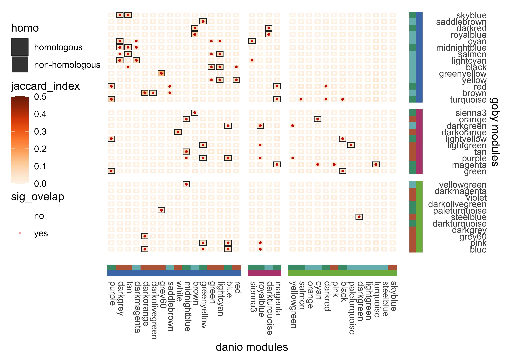
4.2.11 Extract homologous modules
Start in sequence with the largest pairs first.
#clown:317
#Grouper:310
#Goby:363
#Manini:385
#Zebrafish:385
inner_join(
wrapped_plot_clown_manini[[1]][1] %>% as.data.frame() %>% filter(data.sig_ovelap == "yes") %>%
distinct(data.col.clown, data.col.manini, .keep_all = T) %>%
dplyr::rename(col.clown=data.col.clown,
col.manini=data.col.manini,
jaccard.index.clown.manini=data.jaccard_index,
clown.ref.pres.manini=data.clown.pres,
manini.ref.pres.clown=data.manini.pres),
wrapped_plot_clown_danio[[1]][1] %>% as.data.frame() %>% filter(data.sig_ovelap == "yes") %>% distinct(data.col.clown, data.col.danio, .keep_all = T) %>%
dplyr::rename(col.clown=data.col.clown,
col.danio=data.col.danio,
jaccard.index.clown.danio=data.jaccard_index,
clown.ref.pres.danio=data.clown.pres,
danio.ref.pres.clown=data.danio.pres),
by = "col.clown", relationship = "many-to-many") %>%
inner_join(
wrapped_plot_clown_goby[[1]][1] %>% as.data.frame() %>% filter(data.sig_ovelap == "yes") %>%
distinct(data.col.clown, data.col.goby, .keep_all = T) %>%
dplyr::rename(col.clown=data.col.clown,
col.goby=data.col.goby,
jaccard.index.clown.goby=data.jaccard_index,
clown.ref.pres.goby=data.clown.pres,
goby.ref.pres.clown=data.goby.pres),
by = "col.clown", relationship = "many-to-many") %>%
inner_join(
wrapped_plot_clown_grouper[[1]][1] %>% as.data.frame() %>% filter(data.sig_ovelap == "yes")
%>% distinct(data.col.clown, data.col.grouper, .keep_all = T) %>%
dplyr::rename(col.clown=data.col.clown,
col.grouper=data.col.grouper,
jaccard.index.clown.grouper=data.jaccard_index,
clown.ref.pres.grouper=data.clown.pres,
grouper.ref.pres.clown=data.grouper.pres),
by = "col.clown", relationship = "many-to-many") %>%
dplyr::select(c(col.clown,
col.goby,
col.danio,
col.manini,
col.grouper,
jaccard.index.clown.goby,
jaccard.index.clown.danio,
jaccard.index.clown.manini,
jaccard.index.clown.grouper,
clown.ref.pres.goby,
clown.ref.pres.danio,
clown.ref.pres.manini,
clown.ref.pres.grouper,
goby.ref.pres.clown,
danio.ref.pres.clown,
manini.ref.pres.clown,
grouper.ref.pres.clown))->homologous_modules
homologous_modules %>% saveRDS("./RDS/homologous_modules.rds")homologous_modules<-readRDS("./RDS/homologous_modules.rds")5 Extract homologous gene lists
Use this to extract homologous genes list.
#combine all the jaccard similarities
rbind(
tibble(all_jac=homologous_modules$jaccard.index.clown.goby),
tibble(all_jac=homologous_modules$jaccard.index.clown.danio),
tibble(all_jac=homologous_modules$jaccard.index.clown.manini),
tibble(all_jac=homologous_modules$jaccard.index.clown.grouper))->all_jac
#long version of data
homologous_modules %>% pivot_longer(contains("col"), names_to = "species.col", values_to = "col") %>%
pivot_longer(contains("jaccard"), names_to = "jaccard.comp", values_to = "jaccard.val") %>%
pivot_longer(contains("pres"),names_to = "pres.comp", values_to = "pres.val")->homologous_long
#filter out the top 30% homologous module comparisons
homologous_long %>% filter(jaccard.val >= quantile(all_jac$all_jac,0.70)) %>%
dplyr::select(species.col, col) %>% pivot_wider(names_from = species.col, values_from = col) %>%
unnest(cols = c(col.goby, col.danio, col.manini, col.grouper, col.clown)) %>%
distinct(col.goby, col.danio, col.manini, col.grouper, col.clown)->homologous_filtered
homologous_gene_list<-function(mod){
#this functions takes stable module assignments e.g. from clown and then combines all the other species and collates the data
#to obtain lists of genes shared between all 'homologous' modules
#these genes can be though to represent conserved processes across species
#annotating them shows which key processes have a high degree of co-regulation among species
#select one column with stable annotation
#homologous_filtered %>% filter(col.clown==mod)->one_col
non_homologous_filtered %>% filter(col.clown==mod)->one_col #Use for non-homologus modules
#get the list of 'homologus' columns in other species
one_col %>% distinct(col.goby) %>% pull(col.goby)->goby_col_list
one_col %>% distinct(col.danio) %>% pull(col.danio)->danio_col_list
one_col %>% distinct(col.manini) %>% pull(col.manini)->manini_col_list
one_col %>% distinct(col.grouper) %>% pull(col.grouper)->grouper_col_list
#Here I get the genes from the above list of modules
danio_col_get<-function(c1){danio_orth_net$connectivity %>% filter(module==c1) %>% return()}
manini_col_get<-function(c1){manini_orth_net$connectivity %>% filter(module==c1) %>% return()}
grouper_col_get<-function(c1){grouper_orth_net$connectivity %>% filter(module==c1) %>% return()}
goby_col_get<-function(c1){goby_orth_net$connectivity %>% filter(module==c1) %>% return()}
#I then combine all the genes from the list of modules above to select the genes that are present in all the modules.
#e.g. The orange clownfish module has significant overlap between darkgrey, tan, and green modules in zebrafish. While in manini, it has significant overlaps between darkturquoise, greenyellow, red, and green modules.
#I take the genes from the zebrafish set and the manini set and combine them to only include genes that are present in both. I do this for the other two species.
#The result is a list of genes that are, to an extent, co-expressed together. I say to an extent because, the same gene might not always be co-expressed together in the same module, in all species.
#For instance, look at the top ten genes in the common_all object. You'll see that all these genes are expressed together in the darkgrey module in zebrafish, but in manini some are expressed together in the greenyellow module, while some are expressed together in the red, or green module. Essentially, this filtering approach captures genes that, on an average tend to be co-expressed together. This is expected considering they are different species with different developmental trajectories, but the fact that we can find a large degree of overlap between gene interactions across species highlights the presence of a common regulatory underpinning between orthologs. However, studying the deviations and specific modification of the network in each species will provide valuable information regarding the interplay of gene expression and regulatory evolution.
inner_join(
purrr::map(danio_col_list,danio_col_get) %>% list_rbind(),
purrr::map(manini_col_list,manini_col_get) %>% list_rbind(), by = "gene", suffix = c(".danio", ".manini")) %>%
inner_join(purrr::map(grouper_col_list,grouper_col_get) %>% list_rbind(), by = "gene") %>%
inner_join(purrr::map(goby_col_list,goby_col_get) %>% list_rbind(), by = "gene", suffix = c(".grouper",".goby"))->common_all
tibble(genes=common_all %>% inner_join(clown_orth_net$connectivity, by = "gene") %>% filter(module==mod) %>% pull(gene)) %>%
mutate(mod=mod)%>% return()
}
cols<-homologous_filtered %>% distinct(col.clown)
purrr::map(cols$col.clown, homologous_gene_list) %>% list_rbind() %>% distinct(genes, .keep_all = T)->homologous_genes
homologous_genes %>% distinct(mod)
homologous_genes %>% saveRDS("./RDS/homologous_genes.rds")
#Non-homologus, low preservation modules
clown_orth_net$connectivity %>% filter(!module %in% (homologous_genes %>% distinct(mod) %>% pull(mod))) %>% distinct(module)->non_homologous_mods
homologous_modules %>% filter(col.clown %in% non_homologous_mods$module) %>% pivot_longer(contains("col"), names_to = "species.col", values_to = "col") %>%
pivot_longer(contains("jaccard"), names_to = "jaccard.comp", values_to = "jaccard.val") %>%
pivot_longer(contains("pres"),names_to = "pres.comp", values_to = "pres.val")->homologous_long_non_homologus
#filter out the top 30% non-homologous module comparisons
homologous_long_non_homologus %>% filter(jaccard.val >= quantile(homologous_long_non_homologus$jaccard.val,0.70)) %>%
dplyr::select(species.col, col) %>% pivot_wider(names_from = species.col, values_from =
col) %>%
unnest(cols = c(col.goby, col.danio, col.manini, col.grouper, col.clown)) %>%
distinct(col.goby, col.danio, col.manini, col.grouper, col.clown)->non_homologous_filtered
cols<-non_homologous_filtered %>% distinct(col.clown)
purrr::map(cols$col.clown, homologous_gene_list) %>% list_rbind() %>% distinct(genes, .keep_all = T)->non_homologous_genes
non_homologous_genes %>% distinct(mod)
non_homologous_genes %>% saveRDS("./RDS/non_homologous_genes.rds")5.1 Genes in conserved network
These are the genes in the conserved network. Then module names are based on the module assignment in clownfish.
homologous_genes<-readRDS("./RDS/homologous_genes.rds")
homologous_genes %>%
kableExtra::kbl() %>%
kableExtra::kable_styling() %>%
kableExtra::scroll_box(width = "200px", height = "200px")| genes | mod |
|---|---|
| 336005 | orange |
| 517254 | orange |
| 603772 | orange |
| 51357 | orange |
| 35246 | orange |
| 495326 | orange |
| 70975 | orange |
| 327984 | orange |
| 613327 | orange |
| 556730 | orange |
| 505072 | orange |
| 623793 | orange |
| 503997 | orange |
| 404161 | orange |
| 355171 | orange |
| 398589 | orange |
| 82290 | orange |
| 592457 | orange |
| 372128 | orange |
| 3183 | orange |
| 343306 | orange |
| 630102 | orange |
| 168023 | orange |
| 588204 | orange |
| 560027 | orange |
| 477402 | orange |
| 612045 | orange |
| 222115 | orange |
| 547479 | orange |
| 539779 | orange |
| 15001 | salmon |
| 53614 | salmon |
| 545497 | salmon |
| 391625 | salmon |
| 460725 | salmon |
| 538453 | salmon |
| 273793 | salmon |
| 53114 | salmon |
| 391634 | salmon |
| 468023 | salmon |
| 1604 | salmon |
| 13447 | salmon |
| 451311 | salmon |
| 156723 | salmon |
| 11603 | salmon |
| 349374 | salmon |
| 179716 | salmon |
| 75441 | salmon |
| 570239 | salmon |
| 91244 | salmon |
| 450481 | salmon |
| 232212 | salmon |
| 98115 | salmon |
| 483825 | salmon |
| 588143 | salmon |
| 381660 | salmon |
| 27770 | salmon |
| 496066 | salmon |
| 473706 | salmon |
| 356005 | salmon |
| 457295 | salmon |
| 564295 | salmon |
| 40677 | salmon |
| 29521 | salmon |
| 541550 | salmon |
| 341428 | salmon |
| 299935 | salmon |
| 394035 | salmon |
| 507914 | salmon |
| 441411 | salmon |
| 375091 | salmon |
| 544793 | pink |
| 338364 | pink |
| 297345 | pink |
| 88344 | pink |
| 295213 | pink |
| 189193 | pink |
| 352953 | pink |
| 592884 | pink |
| 67374 | pink |
| 352883 | pink |
| 583253 | pink |
| 139747 | pink |
| 317840 | pink |
| 365720 | pink |
| 492615 | pink |
| 468960 | pink |
| 59930 | pink |
| 247035 | pink |
| 141433 | pink |
| 109061 | pink |
| 293406 | pink |
| 500215 | pink |
| 560750 | pink |
| 427397 | pink |
| 428389 | pink |
| 123566 | pink |
| 120490 | pink |
| 257006 | pink |
| 303711 | pink |
| 587860 | pink |
| 76600 | pink |
| 618857 | pink |
| 205183 | pink |
| 471726 | pink |
| 412979 | pink |
| 553282 | pink |
| 497756 | pink |
| 86859 | pink |
| 276304 | pink |
| 358058 | pink |
| 453979 | pink |
| 341045 | pink |
| 491996 | pink |
| 576074 | pink |
| 606067 | pink |
| 111736 | pink |
| 218797 | pink |
| 332360 | pink |
| 47605 | pink |
| 449079 | pink |
| 208094 | pink |
| 529785 | pink |
| 268119 | pink |
| 526856 | pink |
| 536145 | pink |
| 513771 | pink |
| 24034 | pink |
| 121779 | pink |
| 611085 | pink |
| 466930 | pink |
| 273799 | pink |
| 290258 | pink |
| 494713 | pink |
| 375771 | pink |
| 538122 | pink |
| 101815 | pink |
| 322395 | pink |
| 385800 | pink |
| 575785 | pink |
| 571554 | pink |
| 628421 | pink |
| 359388 | pink |
| 25863 | pink |
| 71572 | lightgreen |
| 482135 | lightgreen |
| 627409 | lightgreen |
| 196094 | lightgreen |
| 493830 | lightgreen |
| 632126 | lightgreen |
| 590932 | lightgreen |
| 55122 | lightgreen |
| 353484 | lightgreen |
| 417845 | lightgreen |
| 509382 | lightgreen |
| 113501 | lightgreen |
| 330793 | lightgreen |
| 584760 | lightgreen |
| 585946 | lightgreen |
| 485360 | lightgreen |
| 401381 | lightgreen |
| 563704 | lightgreen |
| 426461 | lightgreen |
| 173296 | lightgreen |
| 488318 | lightgreen |
| 264548 | lightgreen |
| 350822 | lightgreen |
| 574375 | lightgreen |
| 102569 | lightgreen |
| 537526 | lightgreen |
| 549265 | lightgreen |
| 616629 | lightgreen |
| 519922 | lightgreen |
| 214826 | lightgreen |
| 245952 | lightgreen |
| 577480 | lightgreen |
| 434029 | lightgreen |
| 467534 | lightgreen |
| 346072 | blue |
| 313731 | blue |
| 559004 | blue |
| 444392 | blue |
| 169692 | blue |
| 570358 | blue |
| 238001 | blue |
| 226640 | blue |
| 175879 | blue |
| 394686 | blue |
| 617692 | blue |
| 604916 | blue |
| 89669 | blue |
| 151173 | blue |
| 587997 | blue |
| 439831 | blue |
| 569992 | blue |
| 147655 | blue |
| 122021 | blue |
| 393034 | blue |
| 198630 | blue |
| 536253 | blue |
| 478494 | blue |
| 643542 | blue |
| 602990 | blue |
| 170713 | blue |
| 191909 | blue |
| 359484 | blue |
| 190487 | blue |
| 503485 | blue |
| 559285 | blue |
| 254401 | blue |
| 364412 | blue |
| 218498 | blue |
| 358395 | blue |
| 386212 | blue |
| 202413 | blue |
| 441887 | blue |
| 333649 | blue |
| 526605 | blue |
| 411346 | blue |
| 475312 | blue |
| 82208 | blue |
| 119786 | blue |
| 279723 | blue |
| 285006 | blue |
| 134394 | blue |
| 380302 | blue |
| 189131 | blue |
| 591726 | blue |
| 111543 | blue |
| 468314 | blue |
| 163050 | blue |
| 12237 | blue |
| 541145 | blue |
| 421803 | blue |
| 420015 | blue |
| 245095 | blue |
| 326723 | blue |
| 187634 | blue |
| 464844 | blue |
| 456918 | blue |
| 198399 | blue |
| 284571 | blue |
| 417943 | blue |
| 333745 | blue |
| 441769 | blue |
| 556931 | blue |
| 2628 | blue |
| 397782 | blue |
| 618927 | blue |
| 210812 | blue |
| 306111 | blue |
| 415322 | blue |
| 33282 | blue |
| 586363 | blue |
| 335333 | black |
| 281676 | black |
| 420859 | black |
| 559909 | black |
| 441296 | black |
| 501403 | black |
| 368689 | black |
| 566479 | black |
| 311913 | black |
| 328521 | black |
| 644875 | black |
| 512043 | black |
| 395115 | black |
| 476579 | black |
| 502720 | black |
| 641134 | black |
| 586355 | black |
| 99610 | black |
| 603987 | black |
| 413514 | black |
| 540033 | black |
| 86927 | black |
| 540264 | black |
| 536108 | black |
| 418626 | black |
| 130982 | black |
| 199047 | black |
| 192935 | black |
| 2892 | black |
| 368117 | black |
| 603932 | black |
| 465178 | black |
| 150667 | black |
| 617650 | black |
| 22047 | black |
| 631013 | black |
| 531623 | black |
| 533244 | black |
| 582554 | black |
| 566968 | black |
| 573664 | black |
| 593980 | black |
| 455153 | black |
| 525431 | black |
| 70436 | black |
| 407929 | black |
| 570882 | black |
| 252675 | turquoise |
| 545695 | turquoise |
| 537193 | turquoise |
| 373513 | turquoise |
| 236216 | turquoise |
| 238881 | turquoise |
| 277448 | turquoise |
| 635003 | turquoise |
| 499750 | turquoise |
| 427575 | turquoise |
| 377633 | turquoise |
| 444255 | turquoise |
| 496946 | turquoise |
| 471852 | turquoise |
| 566377 | turquoise |
| 231765 | turquoise |
| 30643 | turquoise |
| 498166 | turquoise |
| 578191 | turquoise |
| 388891 | turquoise |
| 520996 | turquoise |
| 309720 | turquoise |
| 622429 | turquoise |
| 493281 | turquoise |
| 279685 | turquoise |
| 591069 | turquoise |
| 536709 | turquoise |
| 571543 | turquoise |
| 552442 | turquoise |
| 411125 | turquoise |
| 466479 | turquoise |
| 482881 | turquoise |
| 546097 | turquoise |
| 464254 | turquoise |
| 333694 | turquoise |
| 604650 | turquoise |
| 603790 | turquoise |
| 357670 | turquoise |
| 502710 | turquoise |
| 330483 | turquoise |
| 516432 | turquoise |
| 608315 | turquoise |
| 638129 | turquoise |
| 323667 | turquoise |
| 605058 | turquoise |
| 254733 | turquoise |
| 530729 | turquoise |
| 599945 | turquoise |
| 61180 | turquoise |
| 206231 | turquoise |
| 433621 | turquoise |
| 598462 | turquoise |
| 577588 | turquoise |
| 154906 | turquoise |
| 495296 | turquoise |
| 383922 | turquoise |
| 273581 | turquoise |
| 638306 | turquoise |
| 558338 | turquoise |
| 626533 | turquoise |
| 354446 | turquoise |
| 489728 | turquoise |
| 629277 | turquoise |
| 621047 | turquoise |
| 595511 | turquoise |
| 639278 | turquoise |
| 487313 | turquoise |
| 598275 | turquoise |
| 576853 | turquoise |
| 422062 | turquoise |
| 581573 | turquoise |
| 517646 | turquoise |
| 495387 | turquoise |
| 124560 | turquoise |
| 353548 | turquoise |
| 113499 | turquoise |
| 473631 | turquoise |
| 619865 | turquoise |
| 404423 | turquoise |
| 150767 | turquoise |
| 280157 | turquoise |
| 140094 | turquoise |
| 276918 | turquoise |
| 413510 | turquoise |
| 203679 | turquoise |
| 553642 | turquoise |
| 514945 | turquoise |
| 518828 | turquoise |
| 401015 | turquoise |
| 457025 | turquoise |
| 446367 | turquoise |
| 76122 | turquoise |
| 174594 | turquoise |
| 402576 | turquoise |
| 640405 | turquoise |
| 604369 | turquoise |
| 454193 | turquoise |
| 415249 | turquoise |
| 266574 | turquoise |
| 320467 | turquoise |
| 140977 | turquoise |
| 389133 | turquoise |
| 206846 | turquoise |
| 147196 | turquoise |
| 487967 | turquoise |
| 398082 | turquoise |
| 546364 | turquoise |
| 500709 | turquoise |
| 229825 | turquoise |
| 645183 | turquoise |
| 147677 | turquoise |
| 564910 | turquoise |
| 164956 | turquoise |
| 614790 | turquoise |
| 630347 | turquoise |
| 491357 | turquoise |
| 608588 | turquoise |
| 54911 | turquoise |
| 626634 | turquoise |
| 118949 | turquoise |
| 356418 | turquoise |
| 211661 | turquoise |
| 548628 | turquoise |
| 499739 | turquoise |
| 620582 | turquoise |
| 429175 | turquoise |
| 455902 | turquoise |
| 582670 | turquoise |
| 645242 | turquoise |
| 345542 | turquoise |
| 8517 | turquoise |
| 281046 | turquoise |
| 611165 | turquoise |
| 505846 | turquoise |
| 417510 | turquoise |
| 295764 | turquoise |
| 229550 | turquoise |
| 542941 | turquoise |
| 601627 | turquoise |
| 339946 | turquoise |
| 577963 | turquoise |
| 565121 | turquoise |
| 423856 | turquoise |
| 540550 | turquoise |
| 56270 | turquoise |
| 632092 | turquoise |
| 314942 | turquoise |
| 399077 | turquoise |
| 171311 | turquoise |
| 235973 | turquoise |
| 263745 | turquoise |
| 519437 | turquoise |
| 555257 | turquoise |
| 606083 | turquoise |
| 166302 | turquoise |
| 634206 | turquoise |
| 419336 | turquoise |
| 593786 | turquoise |
| 554886 | turquoise |
| 71516 | turquoise |
| 551256 | turquoise |
| 539754 | turquoise |
| 445396 | turquoise |
| 486821 | turquoise |
| 345512 | turquoise |
| 540803 | turquoise |
| 563135 | turquoise |
| 341536 | turquoise |
| 538711 | turquoise |
| 284238 | turquoise |
| 381430 | turquoise |
| 620958 | turquoise |
| 596732 | turquoise |
| 379911 | turquoise |
| 319448 | turquoise |
| 439529 | turquoise |
| 311469 | turquoise |
| 153193 | turquoise |
| 631009 | turquoise |
| 441066 | turquoise |
| 138893 | turquoise |
| 576343 | turquoise |
| 248656 | turquoise |
| 605544 | turquoise |
| 588600 | turquoise |
| 265767 | turquoise |
| 355826 | turquoise |
| 597396 | turquoise |
| 566487 | turquoise |
| 624335 | turquoise |
| 124546 | turquoise |
| 329752 | turquoise |
| 534241 | turquoise |
| 263198 | turquoise |
| 555792 | turquoise |
| 376591 | turquoise |
| 156969 | turquoise |
| 448844 | turquoise |
| 572490 | turquoise |
| 576473 | magenta |
| 431050 | magenta |
| 402740 | magenta |
| 463492 | magenta |
| 248766 | magenta |
| 429887 | magenta |
| 45616 | magenta |
| 641582 | magenta |
| 265633 | magenta |
| 389142 | magenta |
| 328189 | magenta |
| 308390 | magenta |
| 536352 | magenta |
| 332127 | magenta |
| 299702 | magenta |
| 118824 | magenta |
| 227523 | magenta |
| 637572 | magenta |
| 629162 | magenta |
| 547654 | magenta |
| 513698 | magenta |
| 530659 | magenta |
| 53980 | magenta |
| 435306 | magenta |
| 615991 | magenta |
| 484793 | magenta |
| 640381 | magenta |
| 463138 | magenta |
| 342879 | magenta |
| 273309 | magenta |
| 227730 | magenta |
| 301975 | magenta |
| 550996 | magenta |
| 622097 | magenta |
| 77382 | magenta |
| 196829 | magenta |
| 309913 | magenta |
| 508537 | magenta |
| 631350 | magenta |
| 389633 | magenta |
| 526106 | magenta |
| 545592 | magenta |
| 398113 | magenta |
| 435668 | magenta |
| 122746 | magenta |
| 446081 | magenta |
| 337223 | magenta |
| 519219 | magenta |
| 545317 | magenta |
| 510482 | magenta |
| 157995 | magenta |
| 365000 | magenta |
| 588256 | magenta |
| 616492 | magenta |
| 333426 | magenta |
| 632293 | magenta |
| 319519 | magenta |
| 543413 | magenta |
| 301888 | magenta |
| 532143 | magenta |
| 268614 | magenta |
| 449765 | magenta |
| 269000 | magenta |
| 515007 | magenta |
| 209174 | magenta |
| 415148 | magenta |
| 419014 | magenta |
| 199587 | magenta |
| 439016 | magenta |
| 559398 | magenta |
| 509714 | magenta |
| 300993 | magenta |
| 438577 | magenta |
| 636018 | magenta |
| 414681 | magenta |
| 269101 | magenta |
| 394314 | magenta |
| 560256 | magenta |
| 138410 | magenta |
| 407996 | magenta |
| 640877 | magenta |
| 278206 | magenta |
| 254737 | magenta |
| 597079 | magenta |
| 465149 | magenta |
| 481591 | magenta |
| 540412 | magenta |
| 463130 | magenta |
| 549896 | magenta |
| 575474 | magenta |
| 606599 | magenta |
| 402975 | magenta |
| 248532 | green |
| 222293 | green |
| 229774 | green |
| 425619 | green |
| 117214 | green |
| 543962 | green |
| 277978 | green |
| 580190 | green |
| 433318 | green |
| 150738 | green |
| 421567 | green |
| 643371 | green |
| 486308 | green |
| 172615 | green |
| 351012 | green |
| 258824 | green |
| 445078 | green |
| 66712 | green |
| 275653 | green |
| 191339 | green |
| 220183 | green |
| 570818 | green |
| 160964 | green |
| 420354 | green |
| 568860 | green |
| 5041 | green |
| 426585 | green |
| 7571 | green |
| 585436 | green |
| 363875 | green |
| 631376 | green |
| 45768 | green |
| 259048 | green |
| 140006 | green |
| 71074 | green |
| 440602 | green |
| 424017 | green |
| 318797 | green |
| 640656 | green |
| 623422 | green |
| 579714 | green |
| 200279 | green |
| 619068 | green |
| 149187 | green |
| 284947 | green |
| 362046 | green |
| 285306 | green |
| 208575 | green |
| 366867 | green |
| 451370 | green |
| 471492 | green |
| 457749 | green |
| 268568 | green |
| 275569 | green |
| 373091 | green |
| 573104 | green |
| 328395 | green |
| 178001 | green |
| 268594 | green |
| 317213 | green |
| 540485 | green |
| 202856 | green |
| 484709 | green |
| 523476 | green |
| 515069 | green |
| 464257 | green |
| 302855 | green |
| 395994 | green |
| 260748 | green |
| 271690 | green |
| 316217 | green |
| 434656 | green |
| 350476 | green |
| 569079 | green |
| 562602 | green |
| 373541 | green |
| 599443 | green |
| 496777 | green |
| 266910 | green |
| 490848 | green |
| 622275 | green |
| 350157 | green |
| 258153 | green |
| 156817 | green |
| 618762 | green |
| 479532 | green |
| 15373 | green |
| 460898 | green |
| 511441 | green |
| 635271 | green |
| 323312 | green |
| 22551 | green |
| 520165 | green |
| 344539 | green |
| 277564 | green |
| 495581 | green |
| 483119 | green |
| 544671 | green |
| 463202 | green |
| 420417 | green |
| 305224 | green |
| 433641 | green |
| 555165 | green |
| 581735 | green |
| 591204 | green |
| 531295 | green |
| 421155 | green |
| 633572 | green |
| 456282 | green |
| 215231 | green |
| 638300 | green |
| 600724 | green |
| 369216 | green |
| 255416 | green |
| 25144 | green |
| 570781 | green |
| 270535 | green |
| 300858 | green |
| 528161 | green |
| 505507 | green |
| 46791 | green |
| 581778 | green |
| 536413 | green |
| 336244 | green |
| 636398 | green |
| 245198 | green |
| 39846 | green |
| 364598 | green |
| 177524 | green |
| 496290 | green |
| 519874 | green |
| 200482 | green |
| 426630 | green |
| 143046 | green |
| 604009 | green |
| 154929 | steelblue |
| 301871 | steelblue |
| 222376 | steelblue |
| 111126 | steelblue |
| 298530 | steelblue |
| 213193 | steelblue |
| 166230 | steelblue |
| 303837 | steelblue |
| 475948 | steelblue |
| 370055 | steelblue |
| 133212 | steelblue |
| 65148 | steelblue |
| 293817 | steelblue |
| 79932 | steelblue |
| 76264 | steelblue |
| 294260 | steelblue |
| 57047 | steelblue |
| 252530 | steelblue |
| 311363 | steelblue |
| 466409 | steelblue |
| 508907 | steelblue |
| 321415 | steelblue |
| 295286 | steelblue |
| 337083 | steelblue |
| 259289 | steelblue |
| 263954 | steelblue |
| 252442 | steelblue |
| 48965 | steelblue |
| 445247 | steelblue |
| 164928 | steelblue |
| 215753 | steelblue |
| 249059 | steelblue |
| 99369 | steelblue |
| 176138 | steelblue |
| 566949 | steelblue |
| 227309 | steelblue |
| 363800 | steelblue |
| 244222 | steelblue |
| 199452 | purple |
| 501448 | purple |
| 474538 | purple |
| 615263 | purple |
| 493682 | purple |
| 218458 | purple |
| 377656 | purple |
| 573898 | purple |
| 272713 | purple |
| 582813 | purple |
| 539188 | purple |
| 255479 | purple |
| 506160 | purple |
| 623509 | purple |
| 411012 | purple |
| 359434 | purple |
| 281666 | purple |
| 581619 | purple |
| 630902 | purple |
| 508860 | purple |
| 597900 | purple |
| 406162 | purple |
| 319890 | purple |
| 618537 | purple |
| 368915 | purple |
| 635010 | purple |
| 37339 | purple |
| 86517 | purple |
| 416352 | purple |
| 352819 | purple |
| 474474 | purple |
| 400965 | purple |
| 545324 | purple |
| 607342 | purple |
| 340091 | purple |
| 164273 | purple |
| 635101 | purple |
| 617750 | purple |
| 494300 | purple |
| 252364 | purple |
| 645859 | purple |
| 221160 | purple |
| 602859 | purple |
| 86512 | purple |
| 76361 | purple |
| 564035 | purple |
| 637334 | purple |
| 544644 | purple |
| 553789 | purple |
| 404750 | purple |
| 561600 | purple |
| 583909 | purple |
| 600372 | purple |
| 229125 | purple |
| 345693 | purple |
| 246755 | purple |
| 223005 | purple |
| 421453 | purple |
| 582074 | purple |
| 377920 | purple |
| 503566 | purple |
| 598324 | purple |
| 618982 | purple |
| 318118 | purple |
| 272377 | purple |
| 528953 | purple |
| 568096 | purple |
| 388960 | royalblue |
| 628336 | royalblue |
| 332760 | royalblue |
| 508108 | royalblue |
| 238914 | royalblue |
| 630589 | royalblue |
| 455389 | royalblue |
| 428296 | royalblue |
| 65227 | royalblue |
| 508355 | royalblue |
| 130602 | royalblue |
| 370871 | royalblue |
| 627789 | royalblue |
| 536670 | royalblue |
| 551919 | royalblue |
| 437755 | royalblue |
| 452735 | royalblue |
| 199661 | royalblue |
| 494608 | royalblue |
| 641108 | royalblue |
| 579512 | royalblue |
| 600364 | royalblue |
| 619813 | royalblue |
| 641160 | royalblue |
| 635859 | royalblue |
| 530422 | royalblue |
| 608632 | royalblue |
| 608335 | royalblue |
| 506367 | royalblue |
| 238439 | royalblue |
| 336344 | royalblue |
| 271518 | royalblue |
| 209284 | royalblue |
| 413521 | royalblue |
| 587874 | royalblue |
| 283897 | royalblue |
| 87052 | royalblue |
| 627822 | royalblue |
| 449460 | royalblue |
| 104137 | royalblue |
| 290217 | royalblue |
| 460865 | royalblue |
| 382044 | royalblue |
| 358293 | royalblue |
| 593958 | royalblue |
| 553540 | royalblue |
| 11562 | royalblue |
| 92550 | royalblue |
| 454885 | royalblue |
| 33222 | royalblue |
| 633954 | royalblue |
| 105503 | royalblue |
| 439762 | darkgreen |
| 340505 | darkgreen |
| 308414 | darkgreen |
| 468444 | darkgreen |
| 282827 | darkgreen |
| 552295 | darkgreen |
| 247991 | darkgreen |
| 272568 | darkgreen |
| 189624 | darkgreen |
| 302468 | darkgreen |
| 301523 | darkgreen |
| 475975 | darkgreen |
| 585659 | darkgreen |
| 641636 | darkgreen |
| 169644 | darkgreen |
| 531053 | darkgreen |
| 15878 | darkgreen |
| 337320 | darkgreen |
| 634922 | darkgreen |
| 287881 | darkgreen |
| 621443 | darkgreen |
| 173550 | darkgreen |
| 425769 | darkgreen |
| 330613 | darkgreen |
| 252813 | darkgreen |
| 536126 | darkgreen |
| 529717 | darkgreen |
| 589592 | yellow |
| 581929 | yellow |
| 394598 | yellow |
| 372667 | yellow |
| 500953 | yellow |
| 21452 | yellow |
| 39289 | yellow |
| 628618 | yellow |
| 574888 | yellow |
| 544596 | yellow |
| 166713 | yellow |
| 642354 | yellow |
| 500163 | yellow |
| 319978 | yellow |
| 399703 | yellow |
| 198258 | yellow |
| 5272 | yellow |
| 26483 | yellow |
| 13828 | yellow |
| 325355 | yellow |
| 105241 | yellow |
| 300767 | yellow |
| 330980 | yellow |
| 636711 | yellow |
| 643909 | yellow |
| 588981 | yellow |
| 645402 | yellow |
| 233508 | yellow |
| 274652 | yellow |
| 60556 | yellow |
| 645076 | yellow |
| 261458 | yellow |
| 576104 | yellow |
| 281732 | yellow |
| 148340 | yellow |
| 15101 | yellow |
| 378267 | yellow |
| 539978 | yellow |
| 477951 | yellow |
| 631798 | yellow |
| 57264 | yellow |
| 355838 | yellow |
| 200712 | yellow |
| 398408 | yellow |
| 311196 | yellow |
| 595093 | grey60 |
| 307396 | grey60 |
| 451220 | grey60 |
| 643666 | grey60 |
| 646057 | grey60 |
| 37175 | grey60 |
| 6143 | grey60 |
| 646079 | grey60 |
| 506591 | grey60 |
| 621973 | grey60 |
| 545423 | grey60 |
| 639075 | grey60 |
| 594638 | grey60 |
| 622425 | grey60 |
| 575348 | grey60 |
| 210868 | grey60 |
| 339459 | red |
| 408228 | red |
| 298502 | red |
| 599137 | red |
| 328362 | red |
| 530773 | red |
| 408279 | red |
| 640535 | red |
| 586490 | red |
| 486482 | red |
| 531469 | red |
| 289258 | red |
| 548192 | red |
| 532523 | red |
| 305564 | red |
| 525729 | red |
| 222958 | red |
| 364992 | red |
| 176679 | red |
| 435511 | red |
| 608708 | red |
| 632819 | red |
| 151274 | brown |
| 419662 | brown |
| 236582 | brown |
| 627325 | brown |
| 443706 | brown |
| 370165 | brown |
| 145983 | brown |
| 14792 | brown |
| 613427 | brown |
| 618617 | brown |
| 50089 | brown |
| 627307 | brown |
| 239758 | brown |
| 321846 | brown |
| 179617 | brown |
| 641965 | brown |
| 521652 | brown |
| 568140 | brown |
| 610320 | brown |
| 632460 | brown |
| 59627 | brown |
| 137256 | brown |
| 526480 | brown |
| 536954 | brown |
| 71155 | brown |
| 143959 | brown |
| 525496 | brown |
| 326211 | brown |
| 522606 | brown |
| 13436 | brown |
| 542448 | brown |
| 633691 | brown |
| 381429 | brown |
| 549947 | brown |
| 417255 | brown |
| 521711 | brown |
| 145550 | brown |
| 611479 | brown |
| 123584 | brown |
| 584227 | brown |
| 610607 | brown |
| 268789 | brown |
| 563368 | brown |
| 438205 | brown |
| 22365 | brown |
| 511337 | brown |
| 143751 | brown |
| 492860 | brown |
| 191534 | brown |
| 404323 | brown |
| 609904 | brown |
| 641140 | brown |
| 281429 | brown |
| 324377 | brown |
| 490523 | brown |
| 630520 | brown |
| 205591 | brown |
| 352055 | brown |
| 576185 | brown |
| 429641 | brown |
| 490584 | brown |
| 356603 | brown |
| 41152 | brown |
| 465676 | brown |
| 42596 | brown |
| 138521 | brown |
| 105049 | brown |
| 384892 | brown |
| 409777 | brown |
| 221789 | brown |
| 618905 | brown |
| 312112 | brown |
| 212139 | brown |
| 177558 | brown |
| 247728 | brown |
| 598364 | brown |
| 361099 | brown |
| 639733 | brown |
| 485886 | brown |
| 444790 | brown |
| 538204 | brown |
| 603280 | brown |
| 177017 | brown |
| 82058 | brown |
| 109240 | brown |
| 288761 | brown |
| 495065 | brown |
| 86840 | brown |
| 77786 | brown |
| 613770 | brown |
| 457803 | brown |
| 592411 | brown |
| 277970 | brown |
| 280686 | brown |
| 205327 | brown |
| 486471 | brown |
| 525965 | brown |
| 566500 | brown |
| 303541 | brown |
| 573386 | brown |
| 614887 | paleturquoise |
| 488711 | paleturquoise |
| 630054 | paleturquoise |
| 257017 | paleturquoise |
| 346179 | paleturquoise |
| 456181 | paleturquoise |
| 403908 | paleturquoise |
| 129202 | paleturquoise |
| 465093 | paleturquoise |
| 200096 | paleturquoise |
| 536606 | paleturquoise |
| 203476 | paleturquoise |
| 53345 | paleturquoise |
| 472775 | paleturquoise |
| 296026 | paleturquoise |
| 329719 | paleturquoise |
| 537760 | paleturquoise |
| 87431 | paleturquoise |
| 460115 | greenyellow |
| 302076 | greenyellow |
| 256942 | greenyellow |
| 282971 | greenyellow |
| 451131 | greenyellow |
| 623698 | greenyellow |
| 474511 | greenyellow |
| 124214 | greenyellow |
| 458164 | greenyellow |
| 413764 | greenyellow |
| 110304 | greenyellow |
| 557366 | greenyellow |
| 610848 | greenyellow |
| 552059 | greenyellow |
| 148988 | greenyellow |
| 558432 | greenyellow |
| 271262 | greenyellow |
| 278072 | greenyellow |
| 60505 | greenyellow |
| 533439 | greenyellow |
| 227398 | greenyellow |
| 506829 | greenyellow |
| 636582 | greenyellow |
| 566586 | greenyellow |
| 141707 | greenyellow |
| 534742 | lightcyan |
| 617719 | lightcyan |
| 5577 | lightcyan |
| 21968 | lightcyan |
| 8256 | lightcyan |
| 395777 | lightcyan |
| 183364 | lightcyan |
| 427480 | lightcyan |
| 56311 | lightcyan |
| 271152 | lightcyan |
| 463991 | cyan |
| 591534 | cyan |
| 285137 | cyan |
| 635004 | cyan |
| 359050 | cyan |
| 508889 | cyan |
| 64295 | violet |
| 65771 | violet |
| 47105 | violet |
| 201232 | violet |
| 20687 | violet |
| 13663 | violet |
| 112086 | violet |
| 289559 | violet |
| 351996 | darkolivegreen |
| 509866 | darkolivegreen |
| 587324 | darkolivegreen |
| 414392 | darkolivegreen |
| 549117 | darkolivegreen |
| 280456 | darkolivegreen |
| 537121 | darkolivegreen |
| 432962 | darkolivegreen |
| 404066 | darkolivegreen |
| 446984 | darkolivegreen |
| 342270 | darkolivegreen |
| 129450 | darkolivegreen |
| 529709 | midnightblue |
| 481241 | midnightblue |
| 8699 | midnightblue |
| 387659 | midnightblue |
| 616398 | midnightblue |
| 502207 | midnightblue |
| 100179 | midnightblue |
| 636572 | midnightblue |
| 463375 | midnightblue |
| 640556 | midnightblue |
| 382726 | midnightblue |
| 450265 | midnightblue |
| 575880 | midnightblue |
| 529365 | midnightblue |
| 115800 | midnightblue |
| 562275 | midnightblue |
| 129420 | midnightblue |
| 539359 | midnightblue |
| 610356 | midnightblue |
| 274630 | midnightblue |
| 402932 | midnightblue |
| 324962 | midnightblue |
| 4749 | plum1 |
5.2 Average connectivity of homologus genes
The genes in the consereved network on an average have higher connectivity than the other genes not in the network. Therefore, they represent hub genes.
homologous_genes<-readRDS("./RDS/homologous_genes.rds")
#non_homologous_genes<-readRDS("./RDS/non_homologous_genes.rds")
rbind(
clown_orth_net$connectivity %>% filter(gene %in% homologous_genes$genes) %>% dplyr::select(gene, degree) %>%
mutate(type="Yes"),
clown_orth_net$connectivity %>% filter(!gene %in% homologous_genes$genes) %>% dplyr::select(gene, degree) %>%
mutate(type="No ")) %>% mutate(sp="clownfish") %>%
rbind(
rbind(
grouper_orth_net$connectivity %>% filter(gene %in% homologous_genes$genes) %>% dplyr::select(gene, degree) %>%
mutate(type="Yes"),
grouper_orth_net$connectivity %>% filter(!gene %in% homologous_genes$genes) %>% dplyr::select(gene, degree) %>%
mutate(type="No")) %>% mutate(sp="grouper")) %>%
rbind(
rbind(
goby_orth_net$connectivity %>% filter(gene %in% homologous_genes$genes) %>% dplyr::select(gene, degree) %>%
mutate(type="Yes"),
goby_orth_net$connectivity %>% filter(!gene %in% homologous_genes$genes) %>% dplyr::select(gene, degree) %>%
mutate(type="No")) %>% mutate(sp="goby")) %>%
rbind(
rbind(
manini_orth_net$connectivity %>% filter(gene %in% homologous_genes$genes) %>% dplyr::select(gene, degree) %>%
mutate(type="Yes"),
manini_orth_net$connectivity %>% filter(!gene %in% homologous_genes$genes) %>% dplyr::select(gene, degree) %>%
mutate(type="No")) %>% mutate(sp="manini")) %>%
rbind(
rbind(
danio_orth_net$connectivity %>% filter(gene %in% homologous_genes$genes) %>% dplyr::select(gene, degree) %>%
mutate(type="Yes"),
danio_orth_net$connectivity %>% filter(!gene %in% homologous_genes$genes) %>% dplyr::select(gene, degree) %>%
mutate(type="No")) %>% mutate(sp="zebrafish"))->connect_datggarrange(
connect_dat %>% filter(sp=="clownfish") %>%
ggplot(aes(y=log2(degree),x=type))+
geom_violin(alpha=0.6, color="grey35", fill="#e77515",linewidth=0.2)+
geom_boxplot(alpha=0.5, fill="grey80", outliers = FALSE, width=0.3)+
scale_y_continuous(limits = c(4,7.5))+
annotate("segment", x = 1, xend = 2, y = 7.3, yend = 7.3, linewidth=0.3) +
annotate("segment", x = 1, xend = 1, y = 7.1, yend = 7.3, linewidth=0.3) +
annotate("segment", x = 2, xend = 2, y = 7.1, yend = 7.3, linewidth=0.3) +
annotate("text", x = 1.5, y = 7.3, label = "***", size=5)+
labs(x=NULL,
y="Connectivity",
subtitle = "Clownfish")+
theme_bw()+
theme(axis.text.x = element_text(size = 10)),
connect_dat %>% filter(sp=="manini") %>%
ggplot(aes(y=log2(degree),x=type))+
geom_violin(alpha=0.6, color="grey35", fill="#9acd32",linewidth=0.2)+
geom_boxplot(alpha=0.5, fill="grey80", outliers = FALSE, width=0.3)+
scale_y_continuous(limits = c(4,7.5))+
annotate("segment", x = 1, xend = 2, y = 7.3, yend = 7.3, linewidth=0.3) +
annotate("segment", x = 1, xend = 1, y = 7.1, yend = 7.3, linewidth=0.3) +
annotate("segment", x = 2, xend = 2, y = 7.1, yend = 7.3, linewidth=0.3) +
annotate("text", x = 1.5, y = 7.3, label = "***", size=5)+
labs(x=NULL,
y=NULL,
subtitle = "Manini")+
theme_bw()+
theme(axis.text.x = element_text(size = 10)),
connect_dat %>% filter(sp=="goby") %>%
ggplot(aes(y=log2(degree),x=type))+
geom_violin(alpha=0.6, color="grey35", fill="#BA4566",linewidth=0.2)+
geom_boxplot(alpha=0.5, fill="grey80", outliers = FALSE, width=0.3)+
scale_y_continuous(limits = c(4,7.5))+
annotate("segment", x = 1, xend = 2, y = 7.3, yend = 7.3, linewidth=0.3) +
annotate("segment", x = 1, xend = 1, y = 7.1, yend = 7.3, linewidth=0.3) +
annotate("segment", x = 2, xend = 2, y = 7.1, yend = 7.3, linewidth=0.3) +
annotate("text", x = 1.5, y = 7.3, label = "**", size=5)+
labs(x=NULL,
y=NULL,
subtitle = "Goby")+
theme_bw()+
theme(axis.text.x = element_text(size = 10)),
connect_dat %>% filter(sp=="grouper") %>%
ggplot(aes(y=log2(degree),x=type))+
geom_violin(alpha=0.6, color="grey35", fill="#D9C343",linewidth=0.2)+
geom_boxplot(alpha=0.5, fill="grey80", outliers = FALSE, width=0.3)+
scale_y_continuous(limits = c(4,7.5))+
annotate("segment", x = 1, xend = 2, y = 7.3, yend = 7.3, linewidth=0.3) +
annotate("segment", x = 1, xend = 1, y = 7.1, yend = 7.3, linewidth=0.3) +
annotate("segment", x = 2, xend = 2, y = 7.1, yend = 7.3, linewidth=0.3) +
annotate("text", x = 1.5, y = 7.3, label = "***", size=5)+
labs(x=NULL,
y="Connectivity",
subtitle = "Grouper")+
theme_bw()+
theme(axis.text.x = element_text(size = 10)),
connect_dat %>% filter(sp=="grouper") %>%
ggplot(aes(y=log2(degree),x=type))+
geom_violin(alpha=0.4, color="grey35", fill="#343BC2",linewidth=0.2)+
geom_boxplot(alpha=0.5, fill="grey80", outliers = FALSE, width=0.3)+
scale_y_continuous(limits = c(4,7.5))+
annotate("segment", x = 1, xend = 2, y = 7.3, yend = 7.3, linewidth=0.3) +
annotate("segment", x = 1, xend = 1, y = 7.1, yend = 7.3, linewidth=0.3) +
annotate("segment", x = 2, xend = 2, y = 7.1, yend = 7.3, linewidth=0.3) +
annotate("text", x = 1.5, y = 7.3, label = "*", size=5)+
labs(x=NULL,
y=NULL,
subtitle = "Zebrafish")+
theme_bw()+
theme(axis.text.y = element_blank(),
axis.text.x = element_text(size = 10)),
ncol = 3, nrow = 2)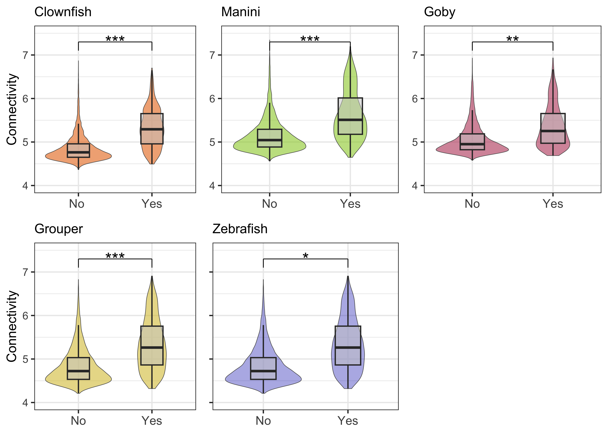
wil_test_boot<-function(dat,species){
rbind(
dat$connectivity %>% filter(gene %in% homologous_genes$genes) %>% dplyr::select(gene, degree) %>% mutate(type="homologous"),
dat$connectivity %>% filter(!gene %in% homologous_genes$genes) %>% dplyr::select(gene, degree) %>% mutate(type="other") %>%
slice_sample(n = 25)
)->test_dat
tibble(p.value=(
wilcox.test(
x = test_dat %>% filter(type=="homologous") %>% pull(degree),
y = test_dat %>% filter(type=="other") %>% pull(degree),
alternative = "greater")
)$p.value,
sp=paste0(species)
) %>% return()
}
rbind(
purrr::map(1:1000, ~wil_test_boot(dat = clown_orth_net, species = "Clownfish")) %>%
list_rbind(),
purrr::map(1:1000, ~wil_test_boot(dat = grouper_orth_net, species = "Grouper")) %>%
list_rbind(),
purrr::map(1:1000, ~wil_test_boot(dat = goby_orth_net, species = "Goby")) %>%
list_rbind(),
purrr::map(1:1000, ~wil_test_boot(dat = manini_orth_net, species = "Manini")) %>%
list_rbind(),
purrr::map(1:1000, ~wil_test_boot(dat = danio_orth_net, species = "zebrafish")) %>%
list_rbind()
)->all_fish_wil_test_res
all_fish_wil_test_res %>% saveRDS("./RDS/all_fish_wil_test_res_connectivity_homologous.rds")P-values for above test
all_fish_wil_test_res<-readRDS("./RDS/all_fish_wil_test_res_connectivity_homologous.rds")
all_fish_wil_test_res %>%
mutate(p.adj=p.adjust(all_fish_wil_test_res$p.value, method = "BH")) %>%
mutate(p.adj=p.adjust(all_fish_wil_test_res$p.value, method = "BH")) %>% summarise(mean_padj=mean(p.adj), .by="sp") %>%
kableExtra::kbl() %>%
kableExtra::kable_styling() %>%
kableExtra::scroll_box(width = "200px", height = "200px")| sp | mean_padj |
|---|---|
| Clownfish | 0.0000100 |
| Grouper | 0.0003799 |
| Goby | 0.0049683 |
| Manini | 0.0002219 |
| zebrafish | 0.0187806 |
5.3 Preservation of conserved network modules
The modules in the conserved network had a high degree of preservation in all the species.
homologous_modules %>% filter(col.clown %in% homologous_genes$mod) %>% pivot_longer(c(clown.ref.pres.goby,clown.ref.pres.danio,clown.ref.pres.manini,
clown.ref.pres.grouper,goby.ref.pres.clown,danio.ref.pres.clown,
manini.ref.pres.clown,grouper.ref.pres.clown),
names_to = "comparisons", values_to = "module_pres") %>%
dplyr::count(module_pres) %>% mutate(n.per=n/sum(n)) %>%
ggplot(aes(x=module_pres, y=n.per, fill=module_pres))+
geom_col(color="black", linewidth=0.2)+
scale_fill_manual(values = c("#8C6BB1", "#2AA198", "#C97A5A"))+
scale_y_continuous(labels = scales::percent)+
geom_text(aes(label = paste0(round(n.per,2)*100,"%"), y=n.per-0.03), size=3, color="white")+
labs(x="Module\npreservation", y="Percentage in\npairwise comparisons")+
theme_bw()+
theme(axis.text.x = element_blank(),
axis.text.y = element_text(size=8),
legend.position = "none",
panel.grid.major = element_line(colour = "grey95"),
panel.grid.minor = element_line(colour = "grey95"))->homo_pres_plots
homo_pres_plots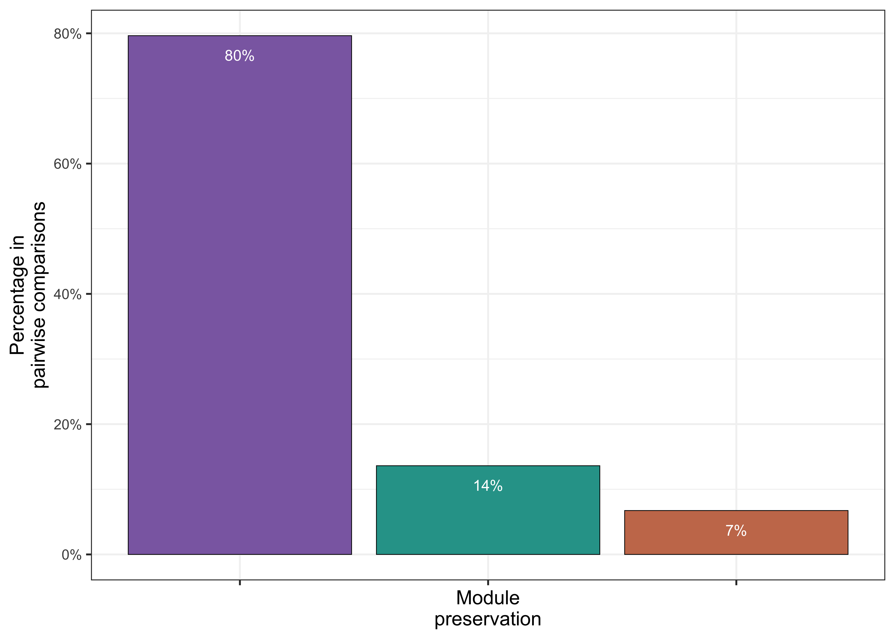
5.4 Gene copy-number of conserved network genes
Genes in the conserved network are not comprised of gene families that vary copy-number as compared to the full ortholog set. Suggesting that the developmental network likely does not have more redundancy (purely from a genetic perspective) than other sets of gene networks.
rbind(
orth %>% filter(Orthogroup %in% homologous_genes$genes) %>% dplyr::count(Orthogroup) %>% mutate(type="Homologous"),
orth %>% filter(Orthogroup %in% full_orths$Orthogroup & !Orthogroup %in% homologous_genes$genes) %>%
dplyr::count(Orthogroup) %>% slice_sample(n=2000) %>% mutate(type="Non-homologous"))->ss_test
wilcox.test(x = ss_test %>%
filter(type=="Homologous") %>% pull(n) %>% log2(),
y = ss_test %>%
filter(type=="Non-homologous") %>%
pull(n) %>% log2(), alternative = "two.sided")##
## Wilcoxon rank sum test with continuity correction
##
## data: ss_test %>% filter(type == "Homologous") %>% pull(n) %>% log2() and ss_test %>% filter(type == "Non-homologous") %>% pull(n) %>% log2()
## W = 1198414, p-value = 0.9238
## alternative hypothesis: true location shift is not equal to 0ss_test %>% ggplot(aes(y=log2(n), x=type, fill = type))+
ggbeeswarm::geom_quasirandom(shape=21)+
geom_boxplot(color="black", alpha=0.5, outliers = FALSE)+
theme_bw()+
scale_fill_manual(values = c("#EA5B15","#1AAEC0"))+
theme(axis.text.x = element_blank(),
axis.ticks.x = element_blank())->gene_copy_number_homologous
gene_copy_number_homologous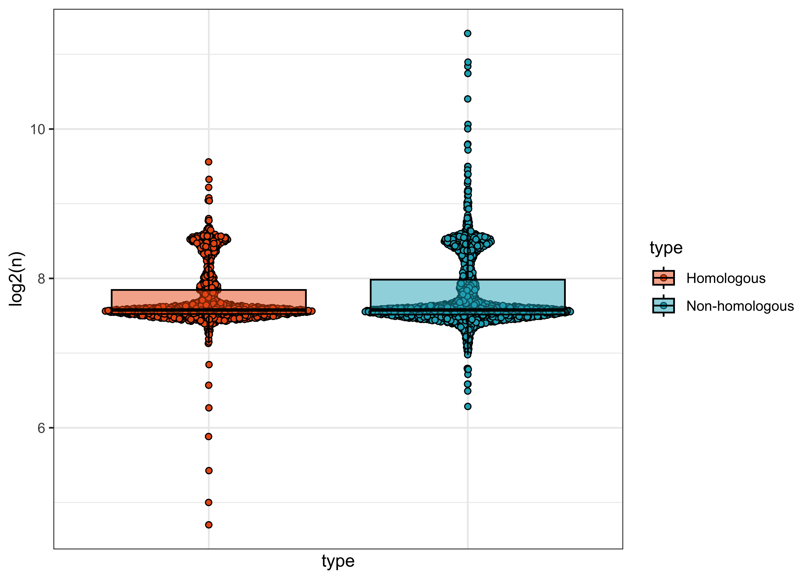
6 Annotate the conserved modules
6.1 GO enrichment setup
## Identify the OGs in the homologous modules
orth %>% filter(sp=="Danio_rerio" & Orthogroup %in% danio_orth_net$connectivity$gene) %>%
mutate(orths= str_remove(orths,"\\.[0-9]*"))->danio_macro_devo_net_genes #This will be the universe.
clusterProfiler::bitr(danio_macro_devo_net_genes$orths,
fromType = "ENSEMBL",
toType = "ENTREZID",
OrgDb = org.Dr.eg.db) %>%
left_join(danio_macro_devo_net_genes,
by = c("ENSEMBL"="orths"))->danio_macro_devo_net_genes_annot
GO_entichment_test<-function(ont_type,mod,input_connectivity){
danio_macro_devo_net_genes_annot %>%
filter(Orthogroup %in% (input_connectivity %>%
filter(module==mod) %>%
pull(gene)))->gene_set
go_res <- enrichGO(
gene = gene_set$ENTREZID,
universe = unique(danio_macro_devo_net_genes_annot$ENTREZID),
OrgDb = org.Dr.eg.db,
keyType = "ENTREZID",
ont = ont_type,
pAdjustMethod = "BH",
pvalueCutoff = 0.05,
qvalueCutoff = 0.05,
readable = TRUE)
go_res_tbl <- as_tibble(go_res)
go_res_tbl %>%
arrange(p.adjust) %>%
dplyr::select(ID, Description, p.adjust, qvalue, geneID) %>%
head(20) %>% mutate(module=mod) %>% return()
}homologous_genes<-readRDS("./RDS/homologous_genes.rds")
non_homologous_genes<-readRDS("./RDS/non_homologous_genes.rds")
homologous_genes %>% distinct(mod) %>% pull(mod)->cols
purrr::map_dfr(cols,
~GO_entichment_test(ont_type = "BP",
mod = .x,
input_connectivity = clown_orth_net$connectivity),.progress = TRUE)->homologous_mods_BP_proc
homologous_mods_BP_proc %>% saveRDS("./03.Annotations/homologous_mods_BP_proc.rds")
purrr::map_dfr(cols,
~GO_entichment_test(ont_type = "CC",
mod = .x,
input_connectivity = clown_orth_net$connectivity),.progress = TRUE)->homologous_mods_CC_proc
homologous_mods_CC_proc %>% saveRDS("./03.Annotations/homologous_mods_CC_proc.rds")
purrr::map_dfr(cols,
~GO_entichment_test(ont_type = "MF",
mod = .x,
input_connectivity = clown_orth_net$connectivity),.progress = TRUE)->homologous_mods_MF_proc
homologous_mods_MF_proc %>% saveRDS("./03.Annotations/homologous_mods_MF_proc.rds")
#Non-homologous module
non_homologous_genes<-readRDS("./RDS/non_homologous_genes.rds")
non_homologous_genes %>% distinct(mod) %>% pull(mod)->cols
purrr::map_dfr(cols,
~GO_entichment_test(ont_type = "BP",
mod = .x,
input_connectivity = clown_orth_net$connectivity),.progress = TRUE)->non_homologous_mods_BP_proc
non_homologous_mods_BP_proc %>% saveRDS("./03.Annotations/non_homologous_mods_BP_proc.rds")
purrr::map_dfr(cols,
~GO_entichment_test(ont_type = "CC",
mod = .x,
input_connectivity = clown_orth_net$connectivity),.progress = TRUE)->non_homologous_mods_CC_proc
non_homologous_mods_CC_proc %>% saveRDS("./03.Annotations/non_homologous_mods_CC_proc.rds")
purrr::map_dfr(cols,
~GO_entichment_test(ont_type = "MF",
mod = .x,
input_connectivity = clown_orth_net$connectivity),.progress = TRUE)->non_homologous_mods_MF_proc
non_homologous_mods_MF_proc %>% saveRDS("./03.Annotations/non_homologous_mods_MF_proc.rds")non_homologous_mods_BP_proc<-readRDS("./03.Annotations/non_homologous_mods_BP_proc.rds")
non_homologous_mods_MF_proc<-readRDS("./03.Annotations/non_homologous_mods_MF_proc.rds")
non_homologous_mods_CC_proc<-readRDS("./03.Annotations/non_homologous_mods_CC_proc.rds")
homologous_mods_BP_proc<-readRDS("./03.Annotations/homologous_mods_BP_proc.rds")
homologous_mods_MF_proc<-readRDS("./03.Annotations/homologous_mods_MF_proc.rds")
homologous_mods_CC_proc<-readRDS("./03.Annotations/homologous_mods_CC_proc.rds")6.2 Biological process GO terms
purrr::map(homologous_mods_BP_proc,
~purrr::pluck(.x) %>% head(10)
) %>% list_rbind() %>%
kableExtra::kbl() %>% kableExtra::kable_styling() %>%
kableExtra::scroll_box(width = "600px", height = "500px")| GOBPID | FDR | Term | Count | Size | mod |
|---|---|---|---|---|---|
| GO:0016071 | 0.0000000 | mRNA metabolic process | 71 | 2271 | orange |
| GO:0006397 | 0.0000000 | mRNA processing | 60 | 1523 | orange |
| GO:0000398 | 0.0000000 | mRNA splicing, via spliceosome | 53 | 1057 | orange |
| GO:0000377 | 0.0000000 | RNA splicing, via transesterification reactions with bulged adenosine as nucleophile | 53 | 1057 | orange |
| GO:0000375 | 0.0000000 | RNA splicing, via transesterification reactions | 53 | 1063 | orange |
| GO:0008380 | 0.0000000 | RNA splicing | 55 | 1394 | orange |
| GO:0006396 | 0.0000000 | RNA processing | 60 | 3096 | orange |
| GO:0010467 | 0.0000000 | gene expression | 110 | 19841 | orange |
| GO:0022618 | 0.0000000 | protein-RNA complex assembly | 34 | 610 | orange |
| GO:0016070 | 0.0000000 | RNA metabolic process | 99 | 15426 | orange |
| GO:0006119 | 0.0000000 | oxidative phosphorylation | 87 | 397 | salmon |
| GO:0009060 | 0.0000000 | aerobic respiration | 90 | 555 | salmon |
| GO:0045333 | 0.0000000 | cellular respiration | 93 | 701 | salmon |
| GO:0015980 | 0.0000000 | energy derivation by oxidation of organic compounds | 93 | 998 | salmon |
| GO:0042775 | 0.0000000 | mitochondrial ATP synthesis coupled electron transport | 71 | 262 | salmon |
| GO:0042773 | 0.0000000 | ATP synthesis coupled electron transport | 71 | 266 | salmon |
| GO:0022904 | 0.0000000 | respiratory electron transport chain | 74 | 342 | salmon |
| GO:0019646 | 0.0000000 | aerobic electron transport chain | 69 | 243 | salmon |
| GO:0022900 | 0.0000000 | electron transport chain | 76 | 436 | salmon |
| GO:0006091 | 0.0000000 | generation of precursor metabolites and energy | 93 | 1442 | salmon |
| GO:0006412 | 0.0000000 | translation | 230 | 2101 | pink |
| GO:0043043 | 0.0000000 | peptide biosynthetic process | 230 | 2189 | pink |
| GO:0006518 | 0.0000000 | peptide metabolic process | 230 | 2625 | pink |
| GO:0043604 | 0.0000000 | amide biosynthetic process | 230 | 2657 | pink |
| GO:0043603 | 0.0000000 | amide metabolic process | 230 | 3573 | pink |
| GO:0002181 | 0.0000000 | cytoplasmic translation | 127 | 351 | pink |
| GO:1901566 | 0.0000000 | organonitrogen compound biosynthetic process | 234 | 6040 | pink |
| GO:0044271 | 0.0000000 | cellular nitrogen compound biosynthetic process | 238 | 16538 | pink |
| GO:0019538 | 0.0000000 | protein metabolic process | 241 | 17858 | pink |
| GO:0042254 | 0.0000000 | ribosome biogenesis | 99 | 923 | pink |
| GO:0021840 | 0.0000000 | directional guidance of interneurons involved in migration from the subpallium to the cortex | 8 | 11 | lightgreen |
| GO:0021842 | 0.0000000 | chemorepulsion involved in interneuron migration from the subpallium to the cortex | 8 | 11 | lightgreen |
| GO:2001223 | 0.0000000 | negative regulation of neuron migration | 10 | 33 | lightgreen |
| GO:0060596 | 0.0000000 | mammary placode formation | 7 | 14 | lightgreen |
| GO:0021830 | 0.0000000 | interneuron migration from the subpallium to the cortex | 8 | 28 | lightgreen |
| GO:0071697 | 0.0000000 | ectodermal placode morphogenesis | 12 | 158 | lightgreen |
| GO:0021826 | 0.0000000 | substrate-independent telencephalic tangential migration | 8 | 34 | lightgreen |
| GO:0021843 | 0.0000000 | substrate-independent telencephalic tangential interneuron migration | 8 | 34 | lightgreen |
| GO:0071696 | 0.0000000 | ectodermal placode development | 12 | 182 | lightgreen |
| GO:0022029 | 0.0000000 | telencephalon cell migration | 11 | 162 | lightgreen |
| GO:0098916 | 0.0000000 | anterograde trans-synaptic signaling | 113 | 2749 | blue |
| GO:0007268 | 0.0000000 | chemical synaptic transmission | 113 | 2749 | blue |
| GO:0099536 | 0.0000000 | synaptic signaling | 114 | 2824 | blue |
| GO:0099537 | 0.0000000 | trans-synaptic signaling | 113 | 2763 | blue |
| GO:0007267 | 0.0000000 | cell-cell signaling | 118 | 5624 | blue |
| GO:0050804 | 0.0000000 | modulation of chemical synaptic transmission | 61 | 1541 | blue |
| GO:0099177 | 0.0000000 | regulation of trans-synaptic signaling | 61 | 1541 | blue |
| GO:0099003 | 0.0000000 | vesicle-mediated transport in synapse | 47 | 842 | blue |
| GO:0099504 | 0.0000000 | synaptic vesicle cycle | 45 | 759 | blue |
| GO:0006836 | 0.0000000 | neurotransmitter transport | 45 | 952 | blue |
| GO:0016560 | 0.0000000 | protein import into peroxisome matrix, docking | 8 | 21 | black |
| GO:0042271 | 0.0000000 | susceptibility to natural killer cell mediated cytotoxicity | 6 | 10 | black |
| GO:0016558 | 0.0000000 | protein import into peroxisome matrix | 8 | 55 | black |
| GO:0099551 | 0.0000000 | trans-synaptic signaling by neuropeptide, modulating synaptic transmission | 5 | 8 | black |
| GO:0098742 | 0.0000000 | cell-cell adhesion via plasma-membrane adhesion molecules | 19 | 811 | black |
| GO:0099540 | 0.0000000 | trans-synaptic signaling by neuropeptide | 5 | 11 | black |
| GO:0022008 | 0.0000000 | neurogenesis | 58 | 7476 | black |
| GO:0043574 | 0.0000000 | peroxisomal transport | 8 | 79 | black |
| GO:0015919 | 0.0000000 | peroxisomal membrane transport | 8 | 79 | black |
| GO:0051252 | 0.0000000 | regulation of RNA metabolic process | 80 | 12436 | black |
| GO:0099536 | 0.0000000 | synaptic signaling | 150 | 2824 | turquoise |
| GO:0098916 | 0.0000000 | anterograde trans-synaptic signaling | 147 | 2749 | turquoise |
| GO:0007268 | 0.0000000 | chemical synaptic transmission | 147 | 2749 | turquoise |
| GO:0099537 | 0.0000000 | trans-synaptic signaling | 147 | 2763 | turquoise |
| GO:0007267 | 0.0000000 | cell-cell signaling | 195 | 5624 | turquoise |
| GO:0050804 | 0.0000000 | modulation of chemical synaptic transmission | 91 | 1541 | turquoise |
| GO:0099177 | 0.0000000 | regulation of trans-synaptic signaling | 91 | 1541 | turquoise |
| GO:0007215 | 0.0000000 | glutamate receptor signaling pathway | 45 | 338 | turquoise |
| GO:0035249 | 0.0000000 | synaptic transmission, glutamatergic | 48 | 413 | turquoise |
| GO:0031175 | 0.0000000 | neuron projection development | 149 | 4379 | turquoise |
| GO:0007059 | 0.0000000 | chromosome segregation | 169 | 1270 | magenta |
| GO:0022402 | 0.0000000 | cell cycle process | 224 | 4057 | magenta |
| GO:0007049 | 0.0000000 | cell cycle | 242 | 5585 | magenta |
| GO:1903047 | 0.0000000 | mitotic cell cycle process | 181 | 2482 | magenta |
| GO:0098813 | 0.0000000 | nuclear chromosome segregation | 134 | 943 | magenta |
| GO:0000278 | 0.0000000 | mitotic cell cycle | 190 | 3147 | magenta |
| GO:0140014 | 0.0000000 | mitotic nuclear division | 135 | 1004 | magenta |
| GO:0000070 | 0.0000000 | mitotic sister chromatid segregation | 114 | 600 | magenta |
| GO:0048285 | 0.0000000 | organelle fission | 152 | 1699 | magenta |
| GO:0000280 | 0.0000000 | nuclear division | 147 | 1537 | magenta |
| GO:0006260 | 0.0000000 | DNA replication | 202 | 849 | green |
| GO:0006259 | 0.0000000 | DNA metabolic process | 300 | 3400 | green |
| GO:0006261 | 0.0000000 | DNA-templated DNA replication | 159 | 498 | green |
| GO:0006281 | 0.0000000 | DNA repair | 196 | 1698 | green |
| GO:0006974 | 0.0000000 | DNA damage response | 207 | 2554 | green |
| GO:0007049 | 0.0000000 | cell cycle | 239 | 5585 | green |
| GO:0022402 | 0.0000000 | cell cycle process | 210 | 4057 | green |
| GO:0006270 | 0.0000000 | DNA replication initiation | 68 | 108 | green |
| GO:0033554 | 0.0000000 | cellular response to stress | 213 | 5219 | green |
| GO:0090304 | 0.0000000 | nucleic acid metabolic process | 367 | 17763 | green |
| GO:0010498 | 0.0000000 | proteasomal protein catabolic process | 88 | 1446 | steelblue |
| GO:0043161 | 0.0000000 | proteasome-mediated ubiquitin-dependent protein catabolic process | 82 | 1164 | steelblue |
| GO:0051603 | 0.0000000 | proteolysis involved in protein catabolic process | 92 | 2308 | steelblue |
| GO:0006511 | 0.0000000 | ubiquitin-dependent protein catabolic process | 86 | 1914 | steelblue |
| GO:0019941 | 0.0000000 | modification-dependent protein catabolic process | 86 | 1940 | steelblue |
| GO:0043632 | 0.0000000 | modification-dependent macromolecule catabolic process | 86 | 1965 | steelblue |
| GO:0030163 | 0.0000000 | protein catabolic process | 93 | 2860 | steelblue |
| GO:0009057 | 0.0000000 | macromolecule catabolic process | 93 | 4018 | steelblue |
| GO:1901565 | 0.0000000 | organonitrogen compound catabolic process | 93 | 4329 | steelblue |
| GO:0006508 | 0.0000000 | proteolysis | 98 | 5281 | steelblue |
| GO:0042254 | 0.0000000 | ribosome biogenesis | 145 | 923 | purple |
| GO:0022613 | 0.0000000 | ribonucleoprotein complex biogenesis | 148 | 1361 | purple |
| GO:0006364 | 0.0000000 | rRNA processing | 110 | 619 | purple |
| GO:0016072 | 0.0000000 | rRNA metabolic process | 114 | 748 | purple |
| GO:0034470 | 0.0000000 | ncRNA processing | 122 | 1376 | purple |
| GO:0034660 | 0.0000000 | ncRNA metabolic process | 126 | 1969 | purple |
| GO:0006396 | 0.0000000 | RNA processing | 125 | 3096 | purple |
| GO:0042274 | 0.0000000 | ribosomal small subunit biogenesis | 57 | 255 | purple |
| GO:0042273 | 0.0000000 | ribosomal large subunit biogenesis | 51 | 224 | purple |
| GO:0044085 | 0.0000000 | cellular component biogenesis | 156 | 10736 | purple |
| GO:0042254 | 0.0000000 | ribosome biogenesis | 87 | 923 | royalblue |
| GO:0022613 | 0.0000000 | ribonucleoprotein complex biogenesis | 92 | 1361 | royalblue |
| GO:0006364 | 0.0000000 | rRNA processing | 72 | 619 | royalblue |
| GO:0016072 | 0.0000000 | rRNA metabolic process | 75 | 748 | royalblue |
| GO:0034470 | 0.0000000 | ncRNA processing | 85 | 1376 | royalblue |
| GO:0034660 | 0.0000000 | ncRNA metabolic process | 89 | 1969 | royalblue |
| GO:0006396 | 0.0000000 | RNA processing | 96 | 3096 | royalblue |
| GO:0042273 | 0.0000000 | ribosomal large subunit biogenesis | 32 | 224 | royalblue |
| GO:0000460 | 0.0000000 | maturation of 5.8S rRNA | 27 | 110 | royalblue |
| GO:0010467 | 0.0000000 | gene expression | 131 | 19841 | royalblue |
| GO:0006413 | 0.0000000 | translational initiation | 33 | 488 | darkgreen |
| GO:0006412 | 0.0000000 | translation | 45 | 2101 | darkgreen |
| GO:0043043 | 0.0000000 | peptide biosynthetic process | 45 | 2189 | darkgreen |
| GO:0006518 | 0.0000000 | peptide metabolic process | 45 | 2625 | darkgreen |
| GO:0043604 | 0.0000000 | amide biosynthetic process | 45 | 2657 | darkgreen |
| GO:0043603 | 0.0000000 | amide metabolic process | 45 | 3573 | darkgreen |
| GO:0002183 | 0.0000000 | cytoplasmic translational initiation | 17 | 109 | darkgreen |
| GO:0019538 | 0.0000000 | protein metabolic process | 79 | 17858 | darkgreen |
| GO:0002181 | 0.0000000 | cytoplasmic translation | 19 | 351 | darkgreen |
| GO:0001732 | 0.0000000 | formation of cytoplasmic translation initiation complex | 12 | 47 | darkgreen |
| GO:0030198 | 0.0000000 | extracellular matrix organization | 60 | 1079 | yellow |
| GO:0043062 | 0.0000000 | extracellular structure organization | 60 | 1136 | yellow |
| GO:0045229 | 0.0000000 | external encapsulating structure organization | 60 | 1173 | yellow |
| GO:0030199 | 0.0000000 | collagen fibril organization | 34 | 199 | yellow |
| GO:0001501 | 0.0000000 | skeletal system development | 56 | 2077 | yellow |
| GO:0018057 | 0.0000000 | peptidyl-lysine oxidation | 15 | 29 | yellow |
| GO:0018158 | 0.0000000 | protein oxidation | 15 | 51 | yellow |
| GO:0018205 | 0.0000000 | peptidyl-lysine modification | 25 | 538 | yellow |
| GO:0001503 | 0.0000000 | ossification | 31 | 1071 | yellow |
| GO:0051216 | 0.0000000 | cartilage development | 27 | 934 | yellow |
| GO:0030198 | 0.0000000 | extracellular matrix organization | 28 | 1079 | grey60 |
| GO:0043062 | 0.0000000 | extracellular structure organization | 28 | 1136 | grey60 |
| GO:0045229 | 0.0000000 | external encapsulating structure organization | 28 | 1173 | grey60 |
| GO:0030199 | 0.0000000 | collagen fibril organization | 14 | 199 | grey60 |
| GO:0071230 | 0.0000000 | cellular response to amino acid stimulus | 13 | 237 | grey60 |
| GO:0071229 | 0.0000000 | cellular response to acid chemical | 14 | 436 | grey60 |
| GO:0001501 | 0.0000000 | skeletal system development | 22 | 2077 | grey60 |
| GO:0043200 | 0.0000000 | response to amino acid | 13 | 401 | grey60 |
| GO:0001503 | 0.0000000 | ossification | 16 | 1071 | grey60 |
| GO:0001101 | 0.0000000 | response to acid chemical | 14 | 773 | grey60 |
| GO:0006936 | 0.0000000 | muscle contraction | 32 | 1108 | red |
| GO:0061061 | 0.0000000 | muscle structure development | 41 | 2821 | red |
| GO:0003012 | 0.0000000 | muscle system process | 32 | 1345 | red |
| GO:0070588 | 0.0000000 | calcium ion transmembrane transport | 28 | 1214 | red |
| GO:0051146 | 0.0000000 | striated muscle cell differentiation | 29 | 1433 | red |
| GO:0006816 | 0.0000000 | calcium ion transport | 28 | 1477 | red |
| GO:0055001 | 0.0000000 | muscle cell development | 25 | 1125 | red |
| GO:0042692 | 0.0000000 | muscle cell differentiation | 29 | 1807 | red |
| GO:0055002 | 0.0000000 | striated muscle cell development | 21 | 683 | red |
| GO:0030239 | 0.0000000 | myofibril assembly | 18 | 519 | red |
| GO:0002376 | 0.0000000 | immune system process | 196 | 6383 | brown |
| GO:0051707 | 0.0000000 | response to other organism | 149 | 3534 | brown |
| GO:0043207 | 0.0000000 | response to external biotic stimulus | 149 | 3541 | brown |
| GO:0009607 | 0.0000000 | response to biotic stimulus | 149 | 3645 | brown |
| GO:0044419 | 0.0000000 | biological process involved in interspecies interaction between organisms | 151 | 4061 | brown |
| GO:0006955 | 0.0000000 | immune response | 147 | 3949 | brown |
| GO:0098542 | 0.0000000 | defense response to other organism | 120 | 2611 | brown |
| GO:0002682 | 0.0000000 | regulation of immune system process | 131 | 3374 | brown |
| GO:0006952 | 0.0000000 | defense response | 131 | 3809 | brown |
| GO:0140546 | 0.0000000 | defense response to symbiont | 102 | 2198 | brown |
| GO:0006082 | 0.0000000 | organic acid metabolic process | 21 | 2989 | paleturquoise |
| GO:0044539 | 0.0000000 | long-chain fatty acid import into cell | 6 | 61 | paleturquoise |
| GO:0140354 | 0.0000001 | lipid import into cell | 6 | 75 | paleturquoise |
| GO:0050892 | 0.0000002 | intestinal absorption | 6 | 87 | paleturquoise |
| GO:0001676 | 0.0000002 | long-chain fatty acid metabolic process | 8 | 276 | paleturquoise |
| GO:0033514 | 0.0000003 | L-lysine catabolic process to acetyl-CoA via L-pipecolate | 3 | 3 | paleturquoise |
| GO:0015718 | 0.0000006 | monocarboxylic acid transport | 9 | 520 | paleturquoise |
| GO:0097291 | 0.0000006 | renal phosphate ion absorption | 3 | 4 | paleturquoise |
| GO:0010747 | 0.0000006 | positive regulation of long-chain fatty acid import across plasma membrane | 3 | 4 | paleturquoise |
| GO:0140214 | 0.0000006 | positive regulation of long-chain fatty acid import into cell | 3 | 4 | paleturquoise |
| GO:1904970 | 0.0000000 | brush border assembly | 6 | 8 | greenyellow |
| GO:0032532 | 0.0000000 | regulation of microvillus length | 5 | 16 | greenyellow |
| GO:0032530 | 0.0000003 | regulation of microvillus organization | 5 | 36 | greenyellow |
| GO:0032536 | 0.0000003 | regulation of cell projection size | 5 | 37 | greenyellow |
| GO:0051764 | 0.0000003 | actin crosslink formation | 5 | 38 | greenyellow |
| GO:0090675 | 0.0000004 | intermicrovillar adhesion | 3 | 3 | greenyellow |
| GO:0043171 | 0.0000004 | peptide catabolic process | 6 | 91 | greenyellow |
| GO:0007043 | 0.0000078 | cell-cell junction assembly | 9 | 556 | greenyellow |
| GO:1904106 | 0.0000082 | protein localization to microvillus | 3 | 7 | greenyellow |
| GO:0044089 | 0.0000089 | positive regulation of cellular component biogenesis | 13 | 1475 | greenyellow |
| GO:0007596 | 0.0000000 | blood coagulation | 24 | 651 | lightcyan |
| GO:0007599 | 0.0000000 | hemostasis | 24 | 664 | lightcyan |
| GO:0050817 | 0.0000000 | coagulation | 24 | 671 | lightcyan |
| GO:0050878 | 0.0000000 | regulation of body fluid levels | 24 | 1013 | lightcyan |
| GO:0042060 | 0.0000000 | wound healing | 24 | 1345 | lightcyan |
| GO:0030193 | 0.0000000 | regulation of blood coagulation | 14 | 169 | lightcyan |
| GO:1900046 | 0.0000000 | regulation of hemostasis | 14 | 170 | lightcyan |
| GO:0042730 | 0.0000000 | fibrinolysis | 11 | 54 | lightcyan |
| GO:0050818 | 0.0000000 | regulation of coagulation | 14 | 186 | lightcyan |
| GO:0009611 | 0.0000000 | response to wounding | 24 | 1882 | lightcyan |
| GO:0021990 | 0.0000444 | neural plate formation | 2 | 2 | cyan |
| GO:2000479 | 0.0001753 | regulation of cAMP-dependent protein kinase activity | 3 | 59 | cyan |
| GO:0090630 | 0.0003116 | activation of GTPase activity | 4 | 312 | cyan |
| GO:0047496 | 0.0011148 | vesicle transport along microtubule | 3 | 137 | cyan |
| GO:0099518 | 0.0029743 | vesicle cytoskeletal trafficking | 3 | 205 | cyan |
| GO:0016311 | 0.0033711 | dephosphorylation | 5 | 1416 | cyan |
| GO:0001839 | 0.0033711 | neural plate morphogenesis | 2 | 36 | cyan |
| GO:0048488 | 0.0033711 | synaptic vesicle endocytosis | 3 | 267 | cyan |
| GO:0140238 | 0.0033711 | presynaptic endocytosis | 3 | 267 | cyan |
| GO:0072384 | 0.0033711 | organelle transport along microtubule | 3 | 270 | cyan |
| GO:0002088 | 0.0000000 | lens development in camera-type eye | 24 | 503 | violet |
| GO:0043010 | 0.0000000 | camera-type eye development | 25 | 2084 | violet |
| GO:0007601 | 0.0000000 | visual perception | 19 | 787 | violet |
| GO:0050953 | 0.0000000 | sensory perception of light stimulus | 19 | 816 | violet |
| GO:0001654 | 0.0000000 | eye development | 25 | 2925 | violet |
| GO:0150063 | 0.0000000 | visual system development | 25 | 2927 | violet |
| GO:0048880 | 0.0000000 | sensory system development | 25 | 3256 | violet |
| GO:0007423 | 0.0000000 | sensory organ development | 25 | 3901 | violet |
| GO:0007600 | 0.0000000 | sensory perception | 19 | 2112 | violet |
| GO:0050877 | 0.0000000 | nervous system process | 19 | 3957 | violet |
| GO:0034976 | 0.0000000 | response to endoplasmic reticulum stress | 15 | 769 | darkolivegreen |
| GO:0006888 | 0.0000000 | endoplasmic reticulum to Golgi vesicle-mediated transport | 13 | 503 | darkolivegreen |
| GO:0006457 | 0.0000000 | protein folding | 13 | 636 | darkolivegreen |
| GO:0034975 | 0.0000000 | protein folding in endoplasmic reticulum | 7 | 36 | darkolivegreen |
| GO:0006986 | 0.0000000 | response to unfolded protein | 11 | 398 | darkolivegreen |
| GO:0035966 | 0.0000000 | response to topologically incorrect protein | 11 | 439 | darkolivegreen |
| GO:0030968 | 0.0000000 | endoplasmic reticulum unfolded protein response | 9 | 275 | darkolivegreen |
| GO:0048193 | 0.0000000 | Golgi vesicle transport | 13 | 1282 | darkolivegreen |
| GO:0034620 | 0.0000000 | cellular response to unfolded protein | 9 | 320 | darkolivegreen |
| GO:0046907 | 0.0000000 | intracellular transport | 20 | 4888 | darkolivegreen |
| GO:0043435 | 0.0000000 | response to corticotropin-releasing hormone | 9 | 20 | midnightblue |
| GO:0071376 | 0.0000000 | cellular response to corticotropin-releasing hormone stimulus | 9 | 20 | midnightblue |
| GO:0006357 | 0.0000000 | regulation of transcription by RNA polymerase II | 51 | 8670 | midnightblue |
| GO:0006366 | 0.0000000 | transcription by RNA polymerase II | 51 | 9085 | midnightblue |
| GO:0006355 | 0.0000000 | regulation of DNA-templated transcription | 55 | 11492 | midnightblue |
| GO:2001141 | 0.0000000 | regulation of RNA biosynthetic process | 55 | 11516 | midnightblue |
| GO:0080090 | 0.0000000 | regulation of primary metabolic process | 68 | 18082 | midnightblue |
| GO:0006351 | 0.0000000 | DNA-templated transcription | 55 | 12050 | midnightblue |
| GO:0010468 | 0.0000000 | regulation of gene expression | 62 | 15453 | midnightblue |
| GO:0032774 | 0.0000000 | RNA biosynthetic process | 55 | 12133 | midnightblue |
| GO:0033490 | 0.0000000 | cholesterol biosynthetic process via lathosterol | 3 | 9 | plum1 |
| GO:0006695 | 0.0000001 | cholesterol biosynthetic process | 3 | 164 | plum1 |
| GO:1902653 | 0.0000001 | secondary alcohol biosynthetic process | 3 | 171 | plum1 |
| GO:0016126 | 0.0000001 | sterol biosynthetic process | 3 | 194 | plum1 |
| GO:0008203 | 0.0000008 | cholesterol metabolic process | 3 | 390 | plum1 |
| GO:0046165 | 0.0000008 | alcohol biosynthetic process | 3 | 427 | plum1 |
| GO:0016125 | 0.0000008 | sterol metabolic process | 3 | 435 | plum1 |
| GO:1902652 | 0.0000008 | secondary alcohol metabolic process | 3 | 435 | plum1 |
| GO:0006694 | 0.0000010 | steroid biosynthetic process | 3 | 481 | plum1 |
| GO:1901617 | 0.0000026 | organic hydroxy compound biosynthetic process | 3 | 696 | plum1 |
6.3 Molecular function GO terms
purrr::map(homologous_mods_MF_proc,
~purrr::pluck(.x) %>% head(10)
) %>% list_rbind() %>%
kableExtra::kbl() %>% kableExtra::kable_styling() %>%
kableExtra::scroll_box(width = "600px", height = "500px")| GOMFID | FDR | Term | Count | Size | mod |
|---|---|---|---|---|---|
| GO:0003723 | 0.0000000 | RNA binding | 77 | 4496 | orange |
| GO:0003676 | 0.0000000 | nucleic acid binding | 94 | 13471 | orange |
| GO:0097159 | 0.0000000 | organic cyclic compound binding | 99 | 21063 | orange |
| GO:0003729 | 0.0000000 | mRNA binding | 23 | 1051 | orange |
| GO:0070990 | 0.0000000 | snRNP binding | 8 | 22 | orange |
| GO:0005488 | 0.0000000 | binding | 118 | 46845 | orange |
| GO:0008079 | 0.0000000 | translation termination factor activity | 7 | 27 | orange |
| GO:0003747 | 0.0000000 | translation release factor activity | 7 | 27 | orange |
| GO:0003678 | 0.0000000 | DNA helicase activity | 11 | 189 | orange |
| GO:0008135 | 0.0000000 | translation factor activity, RNA binding | 13 | 406 | orange |
| GO:0015453 | 0.0000000 | oxidoreduction-driven active transmembrane transporter activity | 59 | 167 | salmon |
| GO:0009055 | 0.0000000 | electron transfer activity | 59 | 274 | salmon |
| GO:0008137 | 0.0000000 | NADH dehydrogenase (ubiquinone) activity | 45 | 82 | salmon |
| GO:0050136 | 0.0000000 | NADH dehydrogenase (quinone) activity | 45 | 83 | salmon |
| GO:0003954 | 0.0000000 | NADH dehydrogenase activity | 46 | 97 | salmon |
| GO:0003955 | 0.0000000 | NAD(P)H dehydrogenase (quinone) activity | 45 | 89 | salmon |
| GO:0016655 | 0.0000000 | oxidoreductase activity, acting on NAD(P)H, quinone or similar compound as acceptor | 45 | 110 | salmon |
| GO:0015399 | 0.0000000 | primary active transmembrane transporter activity | 59 | 578 | salmon |
| GO:0016651 | 0.0000000 | oxidoreductase activity, acting on NAD(P)H | 47 | 228 | salmon |
| GO:0022857 | 0.0000000 | transmembrane transporter activity | 87 | 5355 | salmon |
| GO:0005198 | 0.0000000 | structural molecule activity | 325 | 2379 | pink |
| GO:0003735 | 0.0000000 | structural constituent of ribosome | 325 | 679 | pink |
| GO:0003723 | 0.0000000 | RNA binding | 170 | 4496 | pink |
| GO:0019843 | 0.0000000 | rRNA binding | 50 | 180 | pink |
| GO:0003676 | 0.0000000 | nucleic acid binding | 181 | 13471 | pink |
| GO:0070180 | 0.0000000 | large ribosomal subunit rRNA binding | 13 | 18 | pink |
| GO:0005471 | 0.0000000 | ATP:ADP antiporter activity | 11 | 14 | pink |
| GO:1990932 | 0.0000000 | 5.8S rRNA binding | 8 | 8 | pink |
| GO:0015217 | 0.0000000 | ADP transmembrane transporter activity | 11 | 34 | pink |
| GO:0008097 | 0.0000000 | 5S rRNA binding | 11 | 35 | pink |
| GO:0001641 | 0.0000000 | group II metabotropic glutamate receptor activity | 7 | 11 | lightgreen |
| GO:0045499 | 0.0000000 | chemorepellent activity | 10 | 102 | lightgreen |
| GO:0000149 | 0.0000000 | SNARE binding | 13 | 479 | lightgreen |
| GO:0019905 | 0.0000000 | syntaxin binding | 11 | 287 | lightgreen |
| GO:0001640 | 0.0000000 | adenylate cyclase inhibiting G protein-coupled glutamate receptor activity | 7 | 56 | lightgreen |
| GO:0098988 | 0.0000000 | G protein-coupled glutamate receptor activity | 7 | 60 | lightgreen |
| GO:0017075 | 0.0000000 | syntaxin-1 binding | 7 | 77 | lightgreen |
| GO:0005544 | 0.0000002 | calcium-dependent phospholipid binding | 8 | 204 | lightgreen |
| GO:0005483 | 0.0000003 | soluble NSF attachment protein activity | 4 | 14 | lightgreen |
| GO:0008195 | 0.0000006 | phosphatidate phosphatase activity | 6 | 92 | lightgreen |
| GO:0005216 | 0.0000000 | monoatomic ion channel activity | 65 | 2196 | blue |
| GO:0022836 | 0.0000000 | gated channel activity | 58 | 1695 | blue |
| GO:0015075 | 0.0000000 | monoatomic ion transmembrane transporter activity | 74 | 3370 | blue |
| GO:0015267 | 0.0000000 | channel activity | 65 | 2520 | blue |
| GO:0022803 | 0.0000000 | passive transmembrane transporter activity | 65 | 2523 | blue |
| GO:0015318 | 0.0000000 | inorganic molecular entity transmembrane transporter activity | 71 | 3238 | blue |
| GO:0022834 | 0.0000000 | ligand-gated channel activity | 46 | 1194 | blue |
| GO:0022857 | 0.0000000 | transmembrane transporter activity | 87 | 5355 | blue |
| GO:0005244 | 0.0000000 | voltage-gated monoatomic ion channel activity | 40 | 965 | blue |
| GO:0022832 | 0.0000000 | voltage-gated channel activity | 40 | 983 | blue |
| GO:0005052 | 0.0000000 | peroxisome matrix targeting signal-1 binding | 8 | 13 | black |
| GO:0000268 | 0.0000000 | peroxisome targeting sequence binding | 8 | 26 | black |
| GO:0060175 | 0.0000000 | brain-derived neurotrophic factor receptor activity | 5 | 7 | black |
| GO:0008331 | 0.0000000 | high voltage-gated calcium channel activity | 9 | 81 | black |
| GO:0048403 | 0.0000000 | brain-derived neurotrophic factor binding | 5 | 9 | black |
| GO:0005245 | 0.0000000 | voltage-gated calcium channel activity | 12 | 256 | black |
| GO:0004089 | 0.0000000 | carbonate dehydratase activity | 8 | 83 | black |
| GO:0005030 | 0.0000006 | neurotrophin receptor activity | 5 | 25 | black |
| GO:0005048 | 0.0000009 | signal sequence binding | 8 | 145 | black |
| GO:0032453 | 0.0000043 | histone H3K4 demethylase activity | 5 | 38 | black |
| GO:0005216 | 0.0000000 | monoatomic ion channel activity | 132 | 2196 | turquoise |
| GO:0022836 | 0.0000000 | gated channel activity | 114 | 1695 | turquoise |
| GO:0005261 | 0.0000000 | monoatomic cation channel activity | 109 | 1627 | turquoise |
| GO:0015267 | 0.0000000 | channel activity | 133 | 2520 | turquoise |
| GO:0022803 | 0.0000000 | passive transmembrane transporter activity | 133 | 2523 | turquoise |
| GO:0008066 | 0.0000000 | glutamate receptor activity | 51 | 247 | turquoise |
| GO:0022890 | 0.0000000 | inorganic cation transmembrane transporter activity | 124 | 2637 | turquoise |
| GO:0005244 | 0.0000000 | voltage-gated monoatomic ion channel activity | 75 | 965 | turquoise |
| GO:0022832 | 0.0000000 | voltage-gated channel activity | 75 | 983 | turquoise |
| GO:0015075 | 0.0000000 | monoatomic ion transmembrane transporter activity | 136 | 3370 | turquoise |
| GO:0008017 | 0.0000000 | microtubule binding | 68 | 1005 | magenta |
| GO:0015631 | 0.0000000 | tubulin binding | 68 | 1284 | magenta |
| GO:0003777 | 0.0000000 | microtubule motor activity | 30 | 263 | magenta |
| GO:0008092 | 0.0000000 | cytoskeletal protein binding | 76 | 3488 | magenta |
| GO:0003774 | 0.0000000 | cytoskeletal motor activity | 30 | 491 | magenta |
| GO:0005524 | 0.0000000 | ATP binding | 79 | 5062 | magenta |
| GO:0032559 | 0.0000000 | adenyl ribonucleotide binding | 79 | 5278 | magenta |
| GO:0030554 | 0.0000000 | adenyl nucleotide binding | 79 | 5633 | magenta |
| GO:0140657 | 0.0000000 | ATP-dependent activity | 44 | 1985 | magenta |
| GO:0016887 | 0.0000000 | ATP hydrolysis activity | 35 | 1199 | magenta |
| GO:0140097 | 0.0000000 | catalytic activity, acting on DNA | 102 | 1233 | green |
| GO:0140640 | 0.0000000 | catalytic activity, acting on a nucleic acid | 114 | 2519 | green |
| GO:0003688 | 0.0000000 | DNA replication origin binding | 29 | 39 | green |
| GO:0003677 | 0.0000000 | DNA binding | 187 | 8858 | green |
| GO:0008094 | 0.0000000 | ATP-dependent activity, acting on DNA | 46 | 353 | green |
| GO:0003678 | 0.0000000 | DNA helicase activity | 37 | 189 | green |
| GO:0003697 | 0.0000000 | single-stranded DNA binding | 43 | 371 | green |
| GO:0003676 | 0.0000000 | nucleic acid binding | 211 | 13471 | green |
| GO:0004386 | 0.0000000 | helicase activity | 41 | 463 | green |
| GO:0017116 | 0.0000000 | single-stranded DNA helicase activity | 20 | 50 | green |
| GO:0036402 | 0.0000000 | proteasome-activating activity | 17 | 22 | steelblue |
| GO:0004298 | 0.0000000 | threonine-type endopeptidase activity | 17 | 39 | steelblue |
| GO:0070003 | 0.0000000 | threonine-type peptidase activity | 17 | 71 | steelblue |
| GO:0008233 | 0.0000000 | peptidase activity | 42 | 2564 | steelblue |
| GO:0016787 | 0.0000000 | hydrolase activity | 64 | 10066 | steelblue |
| GO:0016887 | 0.0000000 | ATP hydrolysis activity | 22 | 1199 | steelblue |
| GO:0004175 | 0.0000000 | endopeptidase activity | 23 | 1562 | steelblue |
| GO:0017025 | 0.0000000 | TBP-class protein binding | 8 | 64 | steelblue |
| GO:0140296 | 0.0000000 | general transcription initiation factor binding | 9 | 122 | steelblue |
| GO:0004830 | 0.0000000 | tryptophan-tRNA ligase activity | 5 | 9 | steelblue |
| GO:0003723 | 0.0000000 | RNA binding | 142 | 4496 | purple |
| GO:0003676 | 0.0000000 | nucleic acid binding | 161 | 13471 | purple |
| GO:0097159 | 0.0000000 | organic cyclic compound binding | 177 | 21063 | purple |
| GO:0030515 | 0.0000000 | snoRNA binding | 25 | 77 | purple |
| GO:0140098 | 0.0000000 | catalytic activity, acting on RNA | 35 | 1330 | purple |
| GO:0106413 | 0.0000000 | RNA dihydrouridine synthase activity | 8 | 15 | purple |
| GO:0017150 | 0.0000000 | tRNA dihydrouridine synthase activity | 8 | 15 | purple |
| GO:0034511 | 0.0000000 | U3 snoRNA binding | 8 | 18 | purple |
| GO:0003724 | 0.0000000 | RNA helicase activity | 15 | 228 | purple |
| GO:0008186 | 0.0000000 | ATP-dependent activity, acting on RNA | 15 | 231 | purple |
| GO:0003723 | 0.0000000 | RNA binding | 77 | 4496 | royalblue |
| GO:0003676 | 0.0000000 | nucleic acid binding | 93 | 13471 | royalblue |
| GO:0008757 | 0.0000000 | S-adenosylmethionine-dependent methyltransferase activity | 25 | 724 | royalblue |
| GO:0008168 | 0.0000000 | methyltransferase activity | 28 | 1011 | royalblue |
| GO:0140098 | 0.0000000 | catalytic activity, acting on RNA | 31 | 1330 | royalblue |
| GO:0016741 | 0.0000000 | transferase activity, transferring one-carbon groups | 28 | 1059 | royalblue |
| GO:0008173 | 0.0000000 | RNA methyltransferase activity | 16 | 222 | royalblue |
| GO:0097159 | 0.0000000 | organic cyclic compound binding | 106 | 21063 | royalblue |
| GO:0140640 | 0.0000000 | catalytic activity, acting on a nucleic acid | 33 | 2519 | royalblue |
| GO:0034513 | 0.0000000 | box H/ACA snoRNA binding | 6 | 12 | royalblue |
| GO:0003743 | 0.0000000 | translation initiation factor activity | 28 | 235 | darkgreen |
| GO:0008135 | 0.0000000 | translation factor activity, RNA binding | 28 | 406 | darkgreen |
| GO:0045182 | 0.0000000 | translation regulator activity | 30 | 542 | darkgreen |
| GO:0090079 | 0.0000000 | translation regulator activity, nucleic acid binding | 28 | 469 | darkgreen |
| GO:0003723 | 0.0000000 | RNA binding | 48 | 4496 | darkgreen |
| GO:0044183 | 0.0000000 | protein folding chaperone | 15 | 136 | darkgreen |
| GO:0051082 | 0.0000000 | unfolded protein binding | 15 | 307 | darkgreen |
| GO:0043022 | 0.0000000 | ribosome binding | 14 | 260 | darkgreen |
| GO:0003676 | 0.0000000 | nucleic acid binding | 60 | 13471 | darkgreen |
| GO:0043548 | 0.0000000 | phosphatidylinositol 3-kinase binding | 10 | 105 | darkgreen |
| GO:0005201 | 0.0000000 | extracellular matrix structural constituent | 42 | 399 | yellow |
| GO:0004720 | 0.0000000 | protein-lysine 6-oxidase activity | 15 | 29 | yellow |
| GO:0030020 | 0.0000000 | extracellular matrix structural constituent conferring tensile strength | 17 | 88 | yellow |
| GO:0016641 | 0.0000000 | oxidoreductase activity, acting on the CH-NH2 group of donors, oxygen as acceptor | 15 | 74 | yellow |
| GO:0005044 | 0.0000000 | scavenger receptor activity | 18 | 172 | yellow |
| GO:0005198 | 0.0000000 | structural molecule activity | 42 | 2379 | yellow |
| GO:0016638 | 0.0000000 | oxidoreductase activity, acting on the CH-NH2 group of donors | 15 | 93 | yellow |
| GO:0038024 | 0.0000000 | cargo receptor activity | 18 | 262 | yellow |
| GO:0005507 | 0.0000000 | copper ion binding | 15 | 163 | yellow |
| GO:0005539 | 0.0000000 | glycosaminoglycan binding | 21 | 606 | yellow |
| GO:0005201 | 0.0000000 | extracellular matrix structural constituent | 27 | 399 | grey60 |
| GO:0030020 | 0.0000000 | extracellular matrix structural constituent conferring tensile strength | 15 | 88 | grey60 |
| GO:0005198 | 0.0000000 | structural molecule activity | 27 | 2379 | grey60 |
| GO:0048407 | 0.0000000 | platelet-derived growth factor binding | 8 | 31 | grey60 |
| GO:0019838 | 0.0000002 | growth factor binding | 8 | 465 | grey60 |
| GO:0046332 | 0.0000016 | SMAD binding | 6 | 245 | grey60 |
| GO:0016504 | 0.0000028 | peptidase activator activity | 5 | 144 | grey60 |
| GO:0002020 | 0.0000066 | protease binding | 6 | 329 | grey60 |
| GO:0005518 | 0.0000079 | collagen binding | 5 | 189 | grey60 |
| GO:0061134 | 0.0000079 | peptidase regulator activity | 7 | 565 | grey60 |
| GO:0015085 | 0.0000000 | calcium ion transmembrane transporter activity | 24 | 721 | red |
| GO:0005262 | 0.0000000 | calcium channel activity | 19 | 566 | red |
| GO:0005245 | 0.0000000 | voltage-gated calcium channel activity | 15 | 256 | red |
| GO:0008092 | 0.0000000 | cytoskeletal protein binding | 31 | 3488 | red |
| GO:0005523 | 0.0000000 | tropomyosin binding | 9 | 65 | red |
| GO:0046873 | 0.0000000 | metal ion transmembrane transporter activity | 24 | 2144 | red |
| GO:0003779 | 0.0000000 | actin binding | 20 | 1620 | red |
| GO:0022843 | 0.0000000 | voltage-gated monoatomic cation channel activity | 15 | 736 | red |
| GO:0022890 | 0.0000000 | inorganic cation transmembrane transporter activity | 24 | 2637 | red |
| GO:0008331 | 0.0000000 | high voltage-gated calcium channel activity | 8 | 81 | red |
| GO:0016176 | 0.0000000 | superoxide-generating NADPH oxidase activator activity | 12 | 35 | brown |
| GO:0008047 | 0.0000000 | enzyme activator activity | 44 | 1913 | brown |
| GO:0030234 | 0.0000000 | enzyme regulator activity | 64 | 4371 | brown |
| GO:0061133 | 0.0000000 | endopeptidase activator activity | 8 | 29 | brown |
| GO:0016175 | 0.0000000 | superoxide-generating NAD(P)H oxidase activity | 7 | 19 | brown |
| GO:0004896 | 0.0000000 | cytokine receptor activity | 16 | 323 | brown |
| GO:0140677 | 0.0000000 | molecular function activator activity | 50 | 3375 | brown |
| GO:0035613 | 0.0000000 | RNA stem-loop binding | 8 | 40 | brown |
| GO:0035325 | 0.0000000 | Toll-like receptor binding | 7 | 29 | brown |
| GO:0140375 | 0.0000000 | immune receptor activity | 16 | 374 | brown |
| GO:0003958 | 0.0000000 | NADPH-hemoprotein reductase activity | 6 | 17 | paleturquoise |
| GO:0016653 | 0.0000000 | oxidoreductase activity, acting on NAD(P)H, heme protein as acceptor | 6 | 33 | paleturquoise |
| GO:0008238 | 0.0000000 | exopeptidase activity | 11 | 432 | paleturquoise |
| GO:0016712 | 0.0000000 | oxidoreductase activity, acting on paired donors, with incorporation or reduction of molecular oxygen, reduced flavin or flavoprotein as one donor, and incorporation of one atom of oxygen | 8 | 149 | paleturquoise |
| GO:0008239 | 0.0000000 | dipeptidyl-peptidase activity | 6 | 49 | paleturquoise |
| GO:0017040 | 0.0000000 | N-acylsphingosine amidohydrolase activity | 5 | 29 | paleturquoise |
| GO:0008115 | 0.0000000 | sarcosine oxidase activity | 3 | 3 | paleturquoise |
| GO:0050031 | 0.0000000 | L-pipecolate oxidase activity | 3 | 3 | paleturquoise |
| GO:0004497 | 0.0000001 | monooxygenase activity | 9 | 455 | paleturquoise |
| GO:0008237 | 0.0000001 | metallopeptidase activity | 10 | 685 | paleturquoise |
| GO:0008238 | 0.0000000 | exopeptidase activity | 14 | 432 | greenyellow |
| GO:0004177 | 0.0000000 | aminopeptidase activity | 11 | 173 | greenyellow |
| GO:0008235 | 0.0000000 | metalloexopeptidase activity | 8 | 230 | greenyellow |
| GO:0015462 | 0.0000001 | ABC-type protein transporter activity | 3 | 3 | greenyellow |
| GO:0070006 | 0.0000001 | metalloaminopeptidase activity | 6 | 94 | greenyellow |
| GO:0008237 | 0.0000054 | metallopeptidase activity | 9 | 685 | greenyellow |
| GO:0019911 | 0.0000057 | structural constituent of myelin sheath | 4 | 42 | greenyellow |
| GO:0019534 | 0.0000139 | toxin transmembrane transporter activity | 3 | 14 | greenyellow |
| GO:0099038 | 0.0000284 | ceramide floppase activity | 2 | 2 | greenyellow |
| GO:0008233 | 0.0000516 | peptidase activity | 14 | 2564 | greenyellow |
| GO:0004866 | 0.0000000 | endopeptidase inhibitor activity | 15 | 396 | lightcyan |
| GO:0061135 | 0.0000000 | endopeptidase regulator activity | 15 | 423 | lightcyan |
| GO:0030414 | 0.0000000 | peptidase inhibitor activity | 15 | 431 | lightcyan |
| GO:0004867 | 0.0000000 | serine-type endopeptidase inhibitor activity | 13 | 235 | lightcyan |
| GO:0061134 | 0.0000000 | peptidase regulator activity | 15 | 565 | lightcyan |
| GO:0004857 | 0.0000000 | enzyme inhibitor activity | 15 | 1021 | lightcyan |
| GO:0140678 | 0.0000000 | molecular function inhibitor activity | 15 | 1189 | lightcyan |
| GO:0008233 | 0.0000000 | peptidase activity | 18 | 2564 | lightcyan |
| GO:0030234 | 0.0000000 | enzyme regulator activity | 20 | 4371 | lightcyan |
| GO:0004252 | 0.0000000 | serine-type endopeptidase activity | 10 | 633 | lightcyan |
| GO:0004725 | 0.0002214 | protein tyrosine phosphatase activity | 4 | 447 | cyan |
| GO:0004726 | 0.0005391 | non-membrane spanning protein tyrosine phosphatase activity | 2 | 29 | cyan |
| GO:0004721 | 0.0005391 | phosphoprotein phosphatase activity | 4 | 773 | cyan |
| GO:0004691 | 0.0005391 | cAMP-dependent protein kinase activity | 2 | 35 | cyan |
| GO:0004690 | 0.0011791 | cyclic nucleotide-dependent protein kinase activity | 2 | 62 | cyan |
| GO:0005096 | 0.0011791 | GTPase activator activity | 4 | 1085 | cyan |
| GO:0030552 | 0.0017640 | cAMP binding | 2 | 85 | cyan |
| GO:0016791 | 0.0017640 | phosphatase activity | 4 | 1299 | cyan |
| GO:0003682 | 0.0043775 | chromatin binding | 4 | 1703 | cyan |
| GO:0042578 | 0.0045922 | phosphoric ester hydrolase activity | 4 | 1780 | cyan |
| GO:0005212 | 0.0000000 | structural constituent of eye lens | 28 | 155 | violet |
| GO:0005198 | 0.0000000 | structural molecule activity | 28 | 2379 | violet |
| GO:0008422 | 0.0000000 | beta-glucosidase activity | 5 | 16 | violet |
| GO:0015926 | 0.0000000 | glucosidase activity | 5 | 64 | violet |
| GO:0004553 | 0.0000000 | hydrolase activity, hydrolyzing O-glycosyl compounds | 7 | 486 | violet |
| GO:0016798 | 0.0000001 | hydrolase activity, acting on glycosyl bonds | 7 | 653 | violet |
| GO:0051787 | 0.0000000 | misfolded protein binding | 8 | 61 | darkolivegreen |
| GO:0051082 | 0.0000000 | unfolded protein binding | 9 | 307 | darkolivegreen |
| GO:0051087 | 0.0000000 | protein-folding chaperone binding | 8 | 377 | darkolivegreen |
| GO:0044183 | 0.0000002 | protein folding chaperone | 5 | 136 | darkolivegreen |
| GO:0140662 | 0.0000002 | ATP-dependent protein folding chaperone | 4 | 48 | darkolivegreen |
| GO:0016887 | 0.0000493 | ATP hydrolysis activity | 7 | 1199 | darkolivegreen |
| GO:0140657 | 0.0001181 | ATP-dependent activity | 8 | 1985 | darkolivegreen |
| GO:0005509 | 0.0005467 | calcium ion binding | 8 | 2506 | darkolivegreen |
| GO:0005515 | 0.0012290 | protein binding | 26 | 26626 | darkolivegreen |
| GO:0008083 | 0.0013229 | growth factor activity | 4 | 495 | darkolivegreen |
| GO:0000976 | 0.0000000 | transcription cis-regulatory region binding | 48 | 4711 | midnightblue |
| GO:0001067 | 0.0000000 | transcription regulatory region nucleic acid binding | 48 | 4721 | midnightblue |
| GO:0000977 | 0.0000000 | RNA polymerase II transcription regulatory region sequence-specific DNA binding | 43 | 3731 | midnightblue |
| GO:0003700 | 0.0000000 | DNA-binding transcription factor activity | 48 | 5154 | midnightblue |
| GO:1990837 | 0.0000000 | sequence-specific double-stranded DNA binding | 48 | 5187 | midnightblue |
| GO:0000981 | 0.0000000 | DNA-binding transcription factor activity, RNA polymerase II-specific | 43 | 4125 | midnightblue |
| GO:0043565 | 0.0000000 | sequence-specific DNA binding | 50 | 6022 | midnightblue |
| GO:0003690 | 0.0000000 | double-stranded DNA binding | 48 | 5467 | midnightblue |
| GO:0004356 | 0.0000000 | glutamine synthetase activity | 10 | 22 | midnightblue |
| GO:0016211 | 0.0000000 | ammonia ligase activity | 10 | 22 | midnightblue |
| GO:0070704 | 0.0000000 | sterol desaturase activity | 3 | 4 | plum1 |
| GO:0000248 | 0.0000000 | C-5 sterol desaturase activity | 3 | 4 | plum1 |
| GO:0016717 | 0.0000000 | oxidoreductase activity, acting on paired donors, with oxidation of a pair of donors resulting in the reduction of molecular oxygen to two molecules of water | 3 | 33 | plum1 |
| GO:0050046 | 0.0000000 | delta7-sterol 5(6)-desaturase activity | 2 | 2 | plum1 |
| GO:0005506 | 0.0000019 | iron ion binding | 3 | 587 | plum1 |
| GO:0016705 | 0.0000032 | oxidoreductase activity, acting on paired donors, with incorporation or reduction of molecular oxygen | 3 | 735 | plum1 |
| GO:0016491 | 0.0001879 | oxidoreductase activity | 3 | 3019 | plum1 |
| GO:0046914 | 0.0002979 | transition metal ion binding | 3 | 3680 | plum1 |
| GO:0046872 | 0.0091356 | metal ion binding | 3 | 12081 | plum1 |
| GO:0043169 | 0.0091356 | cation binding | 3 | 12406 | plum1 |
6.4 Cellular compartmentGO terms
purrr::map(homologous_mods_CC_proc,
~purrr::pluck(.x) %>% head(10)
) %>% list_rbind() %>%
kableExtra::kbl() %>% kableExtra::kable_styling() %>%
kableExtra::scroll_box(width = "600px", height = "500px")| GOCCID | FDR | Term | Count | Size | mod |
|---|---|---|---|---|---|
| GO:0140513 | 0.0000000 | nuclear protein-containing complex | 83 | 3823 | orange |
| GO:0005681 | 0.0000000 | spliceosomal complex | 38 | 575 | orange |
| GO:0005634 | 0.0000000 | nucleus | 140 | 28886 | orange |
| GO:1990904 | 0.0000000 | ribonucleoprotein complex | 52 | 2387 | orange |
| GO:0097525 | 0.0000000 | spliceosomal snRNP complex | 23 | 212 | orange |
| GO:0030532 | 0.0000000 | small nuclear ribonucleoprotein complex | 23 | 235 | orange |
| GO:0043231 | 0.0000000 | intracellular membrane-bounded organelle | 153 | 44966 | orange |
| GO:0120114 | 0.0000000 | Sm-like protein family complex | 23 | 275 | orange |
| GO:0032991 | 0.0000000 | protein-containing complex | 103 | 19174 | orange |
| GO:0043227 | 0.0000000 | membrane-bounded organelle | 154 | 47291 | orange |
| GO:0098800 | 0.0000000 | inner mitochondrial membrane protein complex | 151 | 532 | salmon |
| GO:0098798 | 0.0000000 | mitochondrial protein-containing complex | 154 | 927 | salmon |
| GO:0005743 | 0.0000000 | mitochondrial inner membrane | 160 | 1518 | salmon |
| GO:0019866 | 0.0000000 | organelle inner membrane | 160 | 1628 | salmon |
| GO:0005746 | 0.0000000 | mitochondrial respirasome | 113 | 312 | salmon |
| GO:0098803 | 0.0000000 | respiratory chain complex | 112 | 310 | salmon |
| GO:0070469 | 0.0000000 | respirasome | 113 | 338 | salmon |
| GO:0031966 | 0.0000000 | mitochondrial membrane | 160 | 2185 | salmon |
| GO:0045271 | 0.0000000 | respiratory chain complex I | 95 | 175 | salmon |
| GO:0005747 | 0.0000000 | mitochondrial respiratory chain complex I | 95 | 175 | salmon |
| GO:1990904 | 0.0000000 | ribonucleoprotein complex | 294 | 2387 | pink |
| GO:0005840 | 0.0000000 | ribosome | 330 | 847 | pink |
| GO:0022625 | 0.0000000 | cytosolic large ribosomal subunit | 165 | 240 | pink |
| GO:0022626 | 0.0000000 | cytosolic ribosome | 281 | 423 | pink |
| GO:0044391 | 0.0000000 | ribosomal subunit | 280 | 660 | pink |
| GO:0015934 | 0.0000000 | large ribosomal subunit | 166 | 411 | pink |
| GO:0022627 | 0.0000000 | cytosolic small ribosomal subunit | 114 | 148 | pink |
| GO:0005829 | 0.0000000 | cytosol | 355 | 15259 | pink |
| GO:0015935 | 0.0000000 | small ribosomal subunit | 116 | 254 | pink |
| GO:0043232 | 0.0000000 | intracellular non-membrane-bounded organelle | 343 | 14329 | pink |
| GO:0045202 | 0.0000000 | synapse | 43 | 4325 | lightgreen |
| GO:0030054 | 0.0000000 | cell junction | 46 | 6451 | lightgreen |
| GO:0070032 | 0.0000000 | synaptobrevin 2-SNAP-25-syntaxin-1a-complexin I complex | 5 | 15 | lightgreen |
| GO:0031201 | 0.0000000 | SNARE complex | 9 | 207 | lightgreen |
| GO:0099503 | 0.0000000 | secretory vesicle | 22 | 2248 | lightgreen |
| GO:0098978 | 0.0000001 | glutamatergic synapse | 13 | 692 | lightgreen |
| GO:0030141 | 0.0000002 | secretory granule | 18 | 1619 | lightgreen |
| GO:0043005 | 0.0000013 | neuron projection | 29 | 4663 | lightgreen |
| GO:0031083 | 0.0000013 | BLOC-1 complex | 5 | 49 | lightgreen |
| GO:0031082 | 0.0000035 | BLOC complex | 5 | 61 | lightgreen |
| GO:0045202 | 0.0000000 | synapse | 138 | 4325 | blue |
| GO:0030054 | 0.0000000 | cell junction | 141 | 6451 | blue |
| GO:0098793 | 0.0000000 | presynapse | 81 | 1643 | blue |
| GO:0043005 | 0.0000000 | neuron projection | 108 | 4663 | blue |
| GO:0008021 | 0.0000000 | synaptic vesicle | 50 | 691 | blue |
| GO:0005886 | 0.0000000 | plasma membrane | 249 | 25769 | blue |
| GO:0048786 | 0.0000000 | presynaptic active zone | 36 | 278 | blue |
| GO:0070382 | 0.0000000 | exocytic vesicle | 50 | 808 | blue |
| GO:0071944 | 0.0000000 | cell periphery | 253 | 27642 | blue |
| GO:0030424 | 0.0000000 | axon | 70 | 2315 | blue |
| GO:0035060 | 0.0000000 | brahma complex | 8 | 51 | black |
| GO:0071565 | 0.0000000 | nBAF complex | 8 | 62 | black |
| GO:0016514 | 0.0000002 | SWI/SNF complex | 8 | 119 | black |
| GO:0016607 | 0.0000004 | nuclear speck | 16 | 880 | black |
| GO:0005886 | 0.0000005 | plasma membrane | 118 | 25769 | black |
| GO:0005778 | 0.0000011 | peroxisomal membrane | 8 | 166 | black |
| GO:0031903 | 0.0000011 | microbody membrane | 8 | 166 | black |
| GO:0005891 | 0.0000012 | voltage-gated calcium channel complex | 8 | 171 | black |
| GO:0000785 | 0.0000033 | chromatin | 25 | 2566 | black |
| GO:0016604 | 0.0000033 | nuclear body | 20 | 1701 | black |
| GO:0005886 | 0.0000000 | plasma membrane | 570 | 25769 | turquoise |
| GO:0071944 | 0.0000000 | cell periphery | 591 | 27642 | turquoise |
| GO:0045202 | 0.0000000 | synapse | 196 | 4325 | turquoise |
| GO:0098794 | 0.0000000 | postsynapse | 125 | 1990 | turquoise |
| GO:0032279 | 0.0000000 | asymmetric synapse | 90 | 941 | turquoise |
| GO:0098984 | 0.0000000 | neuron to neuron synapse | 91 | 981 | turquoise |
| GO:0097060 | 0.0000000 | synaptic membrane | 93 | 1237 | turquoise |
| GO:0030054 | 0.0000000 | cell junction | 214 | 6451 | turquoise |
| GO:0014069 | 0.0000000 | postsynaptic density | 81 | 910 | turquoise |
| GO:0043005 | 0.0000000 | neuron projection | 178 | 4663 | turquoise |
| GO:0000775 | 0.0000000 | chromosome, centromeric region | 108 | 635 | magenta |
| GO:0098687 | 0.0000000 | chromosomal region | 111 | 954 | magenta |
| GO:0000779 | 0.0000000 | condensed chromosome, centromeric region | 87 | 458 | magenta |
| GO:0000776 | 0.0000000 | kinetochore | 84 | 430 | magenta |
| GO:0000793 | 0.0000000 | condensed chromosome | 97 | 736 | magenta |
| GO:0005819 | 0.0000000 | spindle | 107 | 1053 | magenta |
| GO:0015630 | 0.0000000 | microtubule cytoskeleton | 156 | 3842 | magenta |
| GO:0043232 | 0.0000000 | intracellular non-membrane-bounded organelle | 254 | 14329 | magenta |
| GO:0043228 | 0.0000000 | non-membrane-bounded organelle | 254 | 14349 | magenta |
| GO:0099080 | 0.0000000 | supramolecular complex | 137 | 3767 | magenta |
| GO:0005634 | 0.0000000 | nucleus | 561 | 28886 | green |
| GO:0005694 | 0.0000000 | chromosome | 239 | 4165 | green |
| GO:0000228 | 0.0000000 | nuclear chromosome | 126 | 937 | green |
| GO:0043229 | 0.0000000 | intracellular organelle | 625 | 51983 | green |
| GO:0005657 | 0.0000000 | replication fork | 72 | 198 | green |
| GO:0043226 | 0.0000000 | organelle | 628 | 54553 | green |
| GO:0043231 | 0.0000000 | intracellular membrane-bounded organelle | 568 | 44966 | green |
| GO:0140513 | 0.0000000 | nuclear protein-containing complex | 177 | 3823 | green |
| GO:0043232 | 0.0000000 | intracellular non-membrane-bounded organelle | 320 | 14329 | green |
| GO:0043228 | 0.0000000 | non-membrane-bounded organelle | 320 | 14349 | green |
| GO:0000502 | 0.0000000 | proteasome complex | 94 | 236 | steelblue |
| GO:1905369 | 0.0000000 | endopeptidase complex | 94 | 289 | steelblue |
| GO:1905368 | 0.0000000 | peptidase complex | 94 | 400 | steelblue |
| GO:0005838 | 0.0000000 | proteasome regulatory particle | 47 | 77 | steelblue |
| GO:0022624 | 0.0000000 | proteasome accessory complex | 47 | 88 | steelblue |
| GO:0140535 | 0.0000000 | intracellular protein-containing complex | 96 | 3082 | steelblue |
| GO:0005839 | 0.0000000 | proteasome core complex | 36 | 70 | steelblue |
| GO:1902494 | 0.0000000 | catalytic complex | 98 | 5626 | steelblue |
| GO:0005829 | 0.0000000 | cytosol | 135 | 15259 | steelblue |
| GO:0008540 | 0.0000000 | proteasome regulatory particle, base subcomplex | 26 | 42 | steelblue |
| GO:0005730 | 0.0000000 | nucleolus | 191 | 2531 | purple |
| GO:0030684 | 0.0000000 | preribosome | 81 | 261 | purple |
| GO:0031981 | 0.0000000 | nuclear lumen | 210 | 11015 | purple |
| GO:0070013 | 0.0000000 | intracellular organelle lumen | 219 | 13446 | purple |
| GO:0043233 | 0.0000000 | organelle lumen | 219 | 13452 | purple |
| GO:0031974 | 0.0000000 | membrane-enclosed lumen | 219 | 13455 | purple |
| GO:0032040 | 0.0000000 | small-subunit processome | 57 | 136 | purple |
| GO:0043232 | 0.0000000 | intracellular non-membrane-bounded organelle | 202 | 14329 | purple |
| GO:0043228 | 0.0000000 | non-membrane-bounded organelle | 202 | 14349 | purple |
| GO:1990904 | 0.0000000 | ribonucleoprotein complex | 97 | 2387 | purple |
| GO:0005730 | 0.0000000 | nucleolus | 122 | 2531 | royalblue |
| GO:0031981 | 0.0000000 | nuclear lumen | 137 | 11015 | royalblue |
| GO:0070013 | 0.0000000 | intracellular organelle lumen | 145 | 13446 | royalblue |
| GO:0043233 | 0.0000000 | organelle lumen | 145 | 13452 | royalblue |
| GO:0031974 | 0.0000000 | membrane-enclosed lumen | 145 | 13455 | royalblue |
| GO:0030684 | 0.0000000 | preribosome | 36 | 261 | royalblue |
| GO:0005634 | 0.0000000 | nucleus | 188 | 28886 | royalblue |
| GO:0043232 | 0.0000000 | intracellular non-membrane-bounded organelle | 134 | 14329 | royalblue |
| GO:0043228 | 0.0000000 | non-membrane-bounded organelle | 134 | 14349 | royalblue |
| GO:0030687 | 0.0000000 | preribosome, large subunit precursor | 21 | 72 | royalblue |
| GO:0005832 | 0.0000000 | chaperonin-containing T-complex | 24 | 41 | darkgreen |
| GO:0101031 | 0.0000000 | protein folding chaperone complex | 24 | 88 | darkgreen |
| GO:0005852 | 0.0000000 | eukaryotic translation initiation factor 3 complex | 17 | 52 | darkgreen |
| GO:0033290 | 0.0000000 | eukaryotic 48S preinitiation complex | 16 | 48 | darkgreen |
| GO:0070993 | 0.0000000 | translation preinitiation complex | 16 | 55 | darkgreen |
| GO:0005829 | 0.0000000 | cytosol | 81 | 15259 | darkgreen |
| GO:0016282 | 0.0000000 | eukaryotic 43S preinitiation complex | 12 | 51 | darkgreen |
| GO:0140535 | 0.0000000 | intracellular protein-containing complex | 36 | 3082 | darkgreen |
| GO:0002199 | 0.0000000 | zona pellucida receptor complex | 8 | 13 | darkgreen |
| GO:0005737 | 0.0000000 | cytoplasm | 123 | 48655 | darkgreen |
| GO:0031012 | 0.0000000 | extracellular matrix | 111 | 1672 | yellow |
| GO:0030312 | 0.0000000 | external encapsulating structure | 111 | 1679 | yellow |
| GO:0062023 | 0.0000000 | collagen-containing extracellular matrix | 97 | 1131 | yellow |
| GO:0005576 | 0.0000000 | extracellular region | 166 | 8808 | yellow |
| GO:0005615 | 0.0000000 | extracellular space | 109 | 5625 | yellow |
| GO:0005581 | 0.0000000 | collagen trimer | 43 | 273 | yellow |
| GO:0098643 | 0.0000000 | banded collagen fibril | 12 | 32 | yellow |
| GO:0005583 | 0.0000000 | fibrillar collagen trimer | 12 | 32 | yellow |
| GO:0098644 | 0.0000000 | complex of collagen trimers | 12 | 61 | yellow |
| GO:0071944 | 0.0000000 | cell periphery | 144 | 27642 | yellow |
| GO:0031012 | 0.0000000 | extracellular matrix | 54 | 1672 | grey60 |
| GO:0030312 | 0.0000000 | external encapsulating structure | 54 | 1679 | grey60 |
| GO:0062023 | 0.0000000 | collagen-containing extracellular matrix | 47 | 1131 | grey60 |
| GO:0005576 | 0.0000000 | extracellular region | 71 | 8808 | grey60 |
| GO:0005581 | 0.0000000 | collagen trimer | 25 | 273 | grey60 |
| GO:0098643 | 0.0000000 | banded collagen fibril | 14 | 32 | grey60 |
| GO:0005583 | 0.0000000 | fibrillar collagen trimer | 14 | 32 | grey60 |
| GO:0098644 | 0.0000000 | complex of collagen trimers | 14 | 61 | grey60 |
| GO:0005584 | 0.0000000 | collagen type I trimer | 7 | 8 | grey60 |
| GO:0005615 | 0.0000000 | extracellular space | 35 | 5625 | grey60 |
| GO:0030017 | 0.0000000 | sarcomere | 41 | 826 | red |
| GO:0030016 | 0.0000000 | myofibril | 41 | 909 | red |
| GO:0043292 | 0.0000000 | contractile fiber | 41 | 955 | red |
| GO:0099512 | 0.0000000 | supramolecular fiber | 47 | 2796 | red |
| GO:0099081 | 0.0000000 | supramolecular polymer | 47 | 2826 | red |
| GO:0099080 | 0.0000000 | supramolecular complex | 48 | 3767 | red |
| GO:0005865 | 0.0000000 | striated muscle thin filament | 20 | 166 | red |
| GO:0036379 | 0.0000000 | myofilament | 20 | 175 | red |
| GO:0005861 | 0.0000000 | troponin complex | 17 | 98 | red |
| GO:0015629 | 0.0000000 | actin cytoskeleton | 32 | 1616 | red |
| GO:0009897 | 0.0000000 | external side of plasma membrane | 36 | 790 | brown |
| GO:0098552 | 0.0000000 | side of membrane | 43 | 1503 | brown |
| GO:0043020 | 0.0000000 | NADPH oxidase complex | 11 | 34 | brown |
| GO:0008537 | 0.0000000 | proteasome activator complex | 7 | 11 | brown |
| GO:0045335 | 0.0000000 | phagocytic vesicle | 19 | 356 | brown |
| GO:0009986 | 0.0000000 | cell surface | 39 | 2072 | brown |
| GO:0005737 | 0.0000000 | cytoplasm | 327 | 48655 | brown |
| GO:0005829 | 0.0000000 | cytosol | 138 | 15259 | brown |
| GO:0042406 | 0.0000000 | extrinsic component of endoplasmic reticulum membrane | 6 | 14 | brown |
| GO:0005886 | 0.0000000 | plasma membrane | 198 | 25769 | brown |
| GO:0016324 | 0.0000000 | apical plasma membrane | 20 | 997 | paleturquoise |
| GO:0045177 | 0.0000000 | apical part of cell | 21 | 1282 | paleturquoise |
| GO:0031258 | 0.0000000 | lamellipodium membrane | 6 | 45 | paleturquoise |
| GO:0016020 | 0.0000000 | membrane | 100 | 62395 | paleturquoise |
| GO:0031253 | 0.0000000 | cell projection membrane | 13 | 969 | paleturquoise |
| GO:0031526 | 0.0000000 | brush border membrane | 7 | 158 | paleturquoise |
| GO:0098590 | 0.0000000 | plasma membrane region | 22 | 4233 | paleturquoise |
| GO:0005903 | 0.0000000 | brush border | 8 | 311 | paleturquoise |
| GO:0098857 | 0.0000001 | membrane microdomain | 11 | 941 | paleturquoise |
| GO:0045121 | 0.0000001 | membrane raft | 11 | 941 | paleturquoise |
| GO:0098862 | 0.0000000 | cluster of actin-based cell projections | 16 | 494 | greenyellow |
| GO:0005903 | 0.0000000 | brush border | 14 | 311 | greenyellow |
| GO:0016020 | 0.0000000 | membrane | 119 | 62395 | greenyellow |
| GO:0031526 | 0.0000000 | brush border membrane | 9 | 158 | greenyellow |
| GO:0005886 | 0.0000000 | plasma membrane | 71 | 25769 | greenyellow |
| GO:0071944 | 0.0000000 | cell periphery | 72 | 27642 | greenyellow |
| GO:0031253 | 0.0000000 | cell projection membrane | 13 | 969 | greenyellow |
| GO:0045177 | 0.0000003 | apical part of cell | 13 | 1282 | greenyellow |
| GO:0016324 | 0.0000016 | apical plasma membrane | 11 | 997 | greenyellow |
| GO:0005902 | 0.0000247 | microvillus | 6 | 269 | greenyellow |
| GO:0005576 | 0.0000000 | extracellular region | 44 | 8808 | lightcyan |
| GO:0005577 | 0.0000000 | fibrinogen complex | 8 | 22 | lightcyan |
| GO:0005615 | 0.0000000 | extracellular space | 28 | 5625 | lightcyan |
| GO:0031012 | 0.0000000 | extracellular matrix | 17 | 1672 | lightcyan |
| GO:0030312 | 0.0000000 | external encapsulating structure | 17 | 1679 | lightcyan |
| GO:0062023 | 0.0000000 | collagen-containing extracellular matrix | 12 | 1131 | lightcyan |
| GO:0031089 | 0.0000000 | platelet dense granule lumen | 4 | 22 | lightcyan |
| GO:0042827 | 0.0000002 | platelet dense granule | 4 | 41 | lightcyan |
| GO:0034774 | 0.0000012 | secretory granule lumen | 7 | 571 | lightcyan |
| GO:0060205 | 0.0000015 | cytoplasmic vesicle lumen | 7 | 595 | lightcyan |
| GO:0016234 | 0.0006769 | inclusion body | 3 | 159 | cyan |
| GO:0010369 | 0.0020826 | chromocenter | 2 | 43 | cyan |
| GO:0005814 | 0.0131845 | centriole | 3 | 630 | cyan |
| GO:0005783 | 0.0000000 | endoplasmic reticulum | 38 | 5502 | darkolivegreen |
| GO:0034663 | 0.0000000 | endoplasmic reticulum chaperone complex | 10 | 22 | darkolivegreen |
| GO:0005788 | 0.0000000 | endoplasmic reticulum lumen | 17 | 633 | darkolivegreen |
| GO:0012505 | 0.0000000 | endomembrane system | 40 | 12873 | darkolivegreen |
| GO:0140534 | 0.0000000 | endoplasmic reticulum protein-containing complex | 12 | 366 | darkolivegreen |
| GO:0005790 | 0.0000000 | smooth endoplasmic reticulum | 8 | 84 | darkolivegreen |
| GO:0030137 | 0.0000000 | COPI-coated vesicle | 7 | 76 | darkolivegreen |
| GO:0005793 | 0.0000000 | endoplasmic reticulum-Golgi intermediate compartment | 9 | 296 | darkolivegreen |
| GO:0030135 | 0.0000000 | coated vesicle | 11 | 797 | darkolivegreen |
| GO:0030660 | 0.0000000 | Golgi-associated vesicle membrane | 7 | 212 | darkolivegreen |
| GO:0005667 | 0.0000000 | transcription regulator complex | 25 | 1518 | midnightblue |
| GO:0005634 | 0.0000000 | nucleus | 73 | 28886 | midnightblue |
| GO:0035976 | 0.0000000 | transcription factor AP-1 complex | 5 | 12 | midnightblue |
| GO:0032993 | 0.0000000 | protein-DNA complex | 21 | 2792 | midnightblue |
| GO:0000785 | 0.0000000 | chromatin | 20 | 2566 | midnightblue |
| GO:0090575 | 0.0000002 | RNA polymerase II transcription regulator complex | 10 | 648 | midnightblue |
| GO:0005694 | 0.0000024 | chromosome | 20 | 4165 | midnightblue |
| GO:0005622 | 0.0000027 | intracellular anatomical structure | 111 | 72590 | midnightblue |
| GO:0043231 | 0.0000045 | intracellular membrane-bounded organelle | 82 | 44966 | midnightblue |
| GO:0043227 | 0.0000205 | membrane-bounded organelle | 83 | 47291 | midnightblue |
| GO:0005789 | 0.0240260 | endoplasmic reticulum membrane | 2 | 2760 | plum1 |
| GO:0098827 | 0.0240260 | endoplasmic reticulum subcompartment | 2 | 2789 | plum1 |
| GO:0042175 | 0.0240260 | nuclear outer membrane-endoplasmic reticulum membrane network | 2 | 2822 | plum1 |
| GO:0031984 | 0.0356376 | organelle subcompartment | 2 | 4000 | plum1 |
6.5 Conserved modules GO plots
Use this to make the GO term plots in figure S4.
homologous_modules %>% dplyr::select(col.clown, col.goby, col.danio, col.manini, col.grouper) %>% distinct(col.clown, .keep_all = TRUE) %>% filter(col.clown %in% unique(as.character((homologous_mods_BP_proc %>% list_rbind())$mod)))->mods_combs
#mods_combs %>%
# filter(col.clown %in%
# (cafe_genefamily_outs %>% filter(is_sig=="y") %>% pull(mod)))->mods_combs
safe_homo <- purrr::safely(homo_mods_lines, otherwise = NULL, quiet = TRUE)
purrr::pmap(list(as.character(mods_combs$col.clown),
as.character(mods_combs$col.manini),
as.character(mods_combs$col.goby),
as.character(mods_combs$col.grouper),
as.character(mods_combs$col.danio)),
~safe_homo(mod.clown = ..1,
mod.manini = ..2,
mod.goby = ..3,
mod.grouper = ..4,
mod.danio = ..5,
GO_dat = homologous_mods_BP_proc %>% list_rbind() %>%
filter(mod %in% mods_combs$col.clown))) %>%
purrr::map("result") %>% purrr::compact()->homo_lines
names(homo_lines)<-homologous_mods_BP_proc %>% list_rbind() %>%
filter(mod %in% mods_combs$col.clown) %>% pull(mod) %>% as.character() %>% unique()6.6 Module annotation
These are the annotations of the modules.
homologous_genes<-readRDS("./RDS/homologous_genes.rds")
homologous_genes %>% distinct(mod) %>% mutate(annot=
c("RNA processing 1",
"Aerobic respiration",
"Translation",
"Neuron migration and placode development",
"Synaptic signalling 1",
"Peroxisome process",
"Synaptic signalling 2",
"Cell cycle process",
"DNA replication",
"Protein catabolism",
"Ribosome related",
"RNA processing 2",
"Translation 2",
"Extracellular matrix and cartilage development 1",
"Extracellular matrix and cartilage development 2",
"Muscle system",
"Immune system",
"Nutrient absorption",
"Brush border epithelium development",
"Blood related",
"Neural plate formation",
"Eye development","Protein folding",
"Hormone response",
"Sterol synthesis"))->module_annot
module_annot %>%
kableExtra::kbl() %>% kableExtra::kable_styling() %>%
kableExtra::scroll_box(width = "600px", height = "500px")| mod | annot |
|---|---|
| orange | RNA processing 1 |
| salmon | Aerobic respiration |
| pink | Translation |
| lightgreen | Neuron migration and placode development |
| blue | Synaptic signalling 1 |
| black | Peroxisome process |
| turquoise | Synaptic signalling 2 |
| magenta | Cell cycle process |
| green | DNA replication |
| steelblue | Protein catabolism |
| purple | Ribosome related |
| royalblue | RNA processing 2 |
| darkgreen | Translation 2 |
| yellow | Extracellular matrix and cartilage development 1 |
| grey60 | Extracellular matrix and cartilage development 2 |
| red | Muscle system |
| brown | Immune system |
| paleturquoise | Nutrient absorption |
| greenyellow | Brush border epithelium development |
| lightcyan | Blood related |
| cyan | Neural plate formation |
| violet | Eye development |
| darkolivegreen | Protein folding |
| midnightblue | Hormone response |
| plum1 | Sterol synthesis |
7 Expression trajectories of genes in homologous modules
In this section I explore the expression trajectories of the homologous genes in homologous modules across speices.
Across the five teleost species, the conserved network of 1,196 ortholog
groups showed a broad functional distinction between components
associated with core cellular processes and those involved in
development and physiology. Core processes generally displayed gradual
or plateau-like expression patterns, whereas developmental and
physiological processes showed more stage-specific dynamics, often
coinciding with peaks in thyroid hormone level across metamorphosis.
These trajectories also reflected species-specific developmental events,
including metabolic remodelling in clownfish and grouper, pelvic spine
formation and regression in grouper, and increased neural, sensory, and
nutrient-absorption activity during reef recruitment in manini. In
zebrafish, which undergoes less pronounced post-embryonic remodelling,
the distinction between the two functional classes was weaker.
Together, these results suggest that although the underlying co-expression architecture is conserved across teleosts, the timing and magnitude of its deployment vary among species, providing evidence for heterochrony and regulatory rewiring within a shared developmental network.
7.1 Setup
Get expression of the homologous genes across speices
module_annot_cols<-c("#355C7D","#E07A5F","#D9A441","#C06C84",
"#6C5B7B","#7FB069","#4E9F8A","#F2CC8F",
"#8D99AE","#A44A3F","#5B8E7D","#E6B8A2",
"#8C6F9C","#7A9E9F","#B86F52","#A7C957",
"#B8A1D9","#C9ADA7","#6D597A","#90BE6D",
"#4D908E", "#F4A261","#2A9D8F","#E76F51",
"#264653")
annot_arrangement<-c("Cell cycle process",
"DNA replication",
"Peroxisome process",
"Protein catabolism",
"Protein folding",
"Ribosome related",
"RNA processing 1",
"RNA processing 2",
"Translation",
"Translation 2",
"Aerobic respiration",
"Blood related",
"Brush border epithelium development",
"Extracellular matrix and cartilage development 1",
"Extracellular matrix and cartilage development 2",
"Eye development",
"Hormone response",
"Immune system",
"Muscle system",
"Neural plate formation",
"Neuron migration and placode development",
"Nutrient absorption",
"Synaptic signalling 1",
"Synaptic signalling 2",
"Sterol synthesis")
samp.clown <- clown$dge_keep$samples %>%
tibble::rownames_to_column("samples")
clown$dge_keep$counts %>%
edgeR::cpm(log = TRUE, prior.count = 1e-5, normalized.lib.sizes = TRUE) %>%
reshape2::melt() %>%
dplyr::rename(orths = Var1, samples = Var2, logCPM = value) %>%
left_join(samp.clown, by = "samples") %>%
dplyr::rename(stages = group) %>%
summarise(mean_logCPM = mean(logCPM, na.rm = TRUE),
.by = c(orths, stages)) %>% group_by(orths) %>%
mutate(z.score = (mean_logCPM - mean(mean_logCPM))/sd(mean_logCPM)) %>%
ungroup()->clown_zscore
samp.goby <- goby$dge_keep$samples %>%
tibble::rownames_to_column("samples")
goby$dge_keep$counts %>%
edgeR::cpm(log = TRUE, prior.count = 1e-5, normalized.lib.sizes = TRUE) %>%
reshape2::melt() %>%
dplyr::rename(orths = Var1, samples = Var2, logCPM = value) %>%
left_join(samp.goby, by = "samples") %>%
dplyr::rename(stages = group) %>%
summarise(mean_logCPM = mean(logCPM, na.rm = TRUE),
.by = c(orths, stages)) %>% group_by(orths) %>%
mutate(z.score = (mean_logCPM - mean(mean_logCPM))/sd(mean_logCPM)) %>%
ungroup()->goby_zscore
samp.grouper <- grouper$dge_keep$samples %>%
tibble::rownames_to_column("samples")
grouper$dge_keep$counts %>%
edgeR::cpm(log = TRUE, prior.count = 1e-5, normalized.lib.sizes = TRUE) %>%
reshape2::melt() %>%
dplyr::rename(orths = Var1, samples = Var2, logCPM = value) %>%
left_join(samp.grouper, by = "samples") %>%
dplyr::rename(stages = group) %>%
summarise(mean_logCPM = mean(logCPM, na.rm = TRUE),
.by = c(orths, stages)) %>% group_by(orths) %>%
mutate(z.score = (mean_logCPM - mean(mean_logCPM))/sd(mean_logCPM)) %>%
ungroup()->grouper_zscore
samp.manini <- manini$dge_keep$samples %>%
tibble::rownames_to_column("samples")
manini$dge_keep$counts %>%
edgeR::cpm(log = TRUE, prior.count = 1e-5, normalized.lib.sizes = TRUE) %>%
reshape2::melt() %>%
dplyr::rename(orths = Var1, samples = Var2, logCPM = value) %>%
left_join(samp.manini, by = "samples") %>%
dplyr::rename(stages = group) %>%
summarise(mean_logCPM = mean(logCPM, na.rm = TRUE),
.by = c(orths, stages)) %>% group_by(orths) %>%
mutate(z.score = (mean_logCPM - mean(mean_logCPM))/sd(mean_logCPM)) %>%
ungroup()->manini_zscore
samp.danio <- danio$dge_keep$samples %>%
tibble::rownames_to_column("samples")
danio$dge_keep$counts %>%
edgeR::cpm(log = TRUE, prior.count = 1e-5, normalized.lib.sizes = TRUE) %>%
reshape2::melt() %>%
dplyr::rename(orths = Var1, samples = Var2, logCPM = value) %>%
left_join(samp.danio, by = "samples") %>%
dplyr::rename(stages = group) %>%
summarise(mean_logCPM = mean(logCPM, na.rm = TRUE),
.by = c(orths, stages)) %>% group_by(orths) %>%
mutate(z.score = (mean_logCPM - mean(mean_logCPM))/sd(mean_logCPM)) %>%
ungroup()->danio_zscore
#List of thyroid genes
THR_genes<-c("ENSAOCG00000016914","ENSAOCG00000015260","ENSAOCG00000000483","ENSAOCG00000017488","ENSAOCG00000021075","ENSAOCG00000008293","ENSAOCG00000023317","ENSAOCG00000006509","ENSAOCG00000008531","ENSAOCG00000005151","ENSAOCG00000007150","ENSAOCG00000001207","ENSAOCG00000006473","ENSAOCG00000013758","ENSAOCG00000023797","ENSAOCG00000012196","ENSAOCG00000005709","ENSAOCG00000023944","ENSAOCG00000008066","ENSAOCG00000008390","ENSAOCG00000024507")
## Find genes in each species
clown_orth_net$connectivity %>%
filter(gene %in%
(metamorph_orthlist %>%
filter(orths %in% THR_genes) %>% pull(Orthogroup)))->clown_thr_net
goby_orth_net$connectivity %>%
filter(gene %in%
(metamorph_orthlist %>%
filter(orths %in% THR_genes) %>% pull(Orthogroup)))->goby_thr_net
grouper_orth_net$connectivity %>%
filter(gene %in%
(metamorph_orthlist %>%
filter(orths %in% THR_genes) %>% pull(Orthogroup)))->grouper_thr_net
manini_orth_net$connectivity %>%
filter(gene %in%
(metamorph_orthlist %>%
filter(orths %in% THR_genes) %>% pull(Orthogroup)))->manini_thr_net
danio_orth_net$connectivity %>%
filter(gene %in%
(metamorph_orthlist %>%
filter(orths %in% THR_genes) %>% pull(Orthogroup)))->danio_thr_net
corticoid_genes<-c("ENSAOCG00000014088","ENSAOCG00000034292","ENSAOCG00000022382","ENSAOCG00000017223","ENSAOCG00000002266","ENSAOCG00000012618","ENSAOCG00000020148","ENSAOCG00000018836","ENSAOCG00000011107","ENSAOCG00000004807","ENSAOCG00000000228","ENSAOCG00000009574","ENSAOCG00000019197","ENSAOCG00000001170","ENSAOCG00000019982","ENSAOCG00000031493","ENSAOCG00000033598","ENSAOCG00000032794","ENSAOCG00000003070","ENSAOCG00000012931","ENSAOCG00000003964","ENSAOCG00000021637","ENSAOCG00000019006","ENSAOCG00000009812","ENSAOCG00000032655","ENSAOCG00000024429")
## Find genes in each species
clown_orth_net$connectivity %>%
filter(gene %in%
(metamorph_orthlist %>%
filter(orths %in% corticoid_genes) %>% pull(Orthogroup)))->clown_corticoid_net
goby_orth_net$connectivity %>%
filter(gene %in%
(metamorph_orthlist %>%
filter(orths %in% corticoid_genes) %>% pull(Orthogroup)))->goby_corticoid_net
grouper_orth_net$connectivity %>%
filter(gene %in%
(metamorph_orthlist %>%
filter(orths %in% corticoid_genes) %>% pull(Orthogroup)))->grouper_corticoid_net
manini_orth_net$connectivity %>%
filter(gene %in%
(metamorph_orthlist %>%
filter(orths %in% corticoid_genes) %>% pull(Orthogroup)))->manini_corticoid_net
danio_orth_net$connectivity %>%
filter(gene %in%
(metamorph_orthlist %>%
filter(orths %in% corticoid_genes) %>% pull(Orthogroup)))->danio_corticoid_net7.2 Clownfish
clown_zscore %>% inner_join(metamorph_orthlist %>% filter(sp=="Amphiprion_ocellaris"), by="orths") %>%
inner_join(homologous_genes, by=c("Orthogroup"="genes")) %>% inner_join(module_annot, by="mod") %>%
mutate(annot = factor(annot, levels = annot_arrangement)) %>%
ggplot(aes(x=stages, y=z.score, group=orths, color=annot))+
facet_wrap(~annot)+
geom_line()+
annotate(geom = "rect",
xmin = 3.5, xmax = 4.5, ymin = -Inf, ymax = Inf,
fill = "#594BE4",
alpha = 0.2)+
labs(subtitle = "Clownfish")+
scale_color_manual(values=module_annot_cols)+
theme_bw()+
theme(axis.text.x = element_text(angle = 90, hjust = 1, vjust = 0.5, size = 8),
legend.position = "none",
strip.text.x.top = element_text(size=5),
strip.background = element_rect(colour = "black", fill = "#eee"))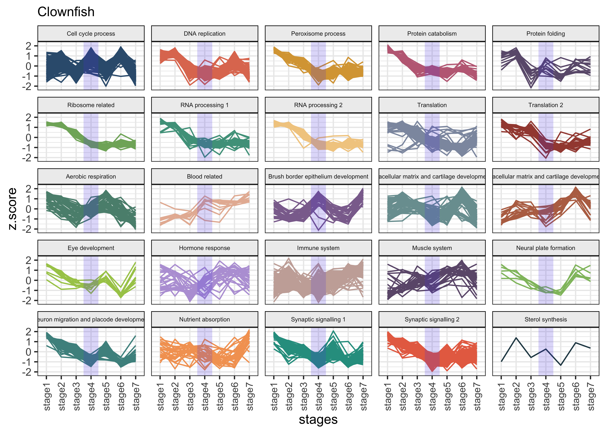
7.3 Goby
goby_zscore %>% inner_join(metamorph_orthlist %>% filter(sp=="Goby"), by="orths") %>%
inner_join(homologous_genes, by=c("Orthogroup"="genes")) %>% inner_join(module_annot, by="mod") %>%
mutate(annot = factor(annot, levels = annot_arrangement)) %>%
ggplot(aes(x=stages, y=z.score, group=orths, color=annot))+
facet_wrap(~annot)+
geom_line()+
scale_color_manual(values=module_annot_cols)+
labs(subtitle = "Goby")+
theme_bw()+
theme(axis.text.x = element_text(angle = 90, hjust = 1, vjust = 0.5, size = 8),
legend.position = "none",
strip.text.x.top = element_text(size=5),
strip.background = element_rect(colour = "black", fill = "#eee"))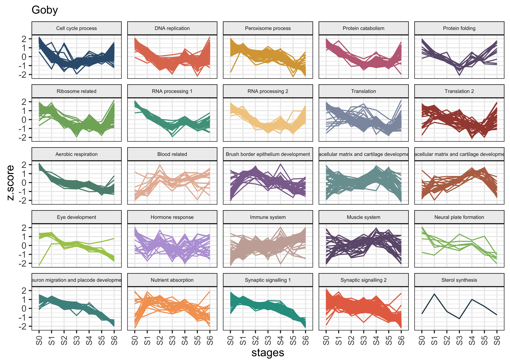
7.4 Grouper
grouper_zscore %>% inner_join(metamorph_orthlist %>% filter(sp=="Grouper"), by="orths") %>%
inner_join(homologous_genes, by=c("Orthogroup"="genes")) %>% inner_join(module_annot, by="mod") %>%
mutate(annot = factor(annot, levels = annot_arrangement)) %>%
ggplot(aes(x=stages, y=z.score, group=orths, color=annot))+
facet_wrap(~annot)+
geom_line()+
annotate(geom = "rect",
xmin = 1.5, xmax = 2.5, ymin = -Inf, ymax = Inf,
fill = "#594BE4",
alpha = 0.2)+
annotate(geom = "rect",
xmin = 5.5, xmax = 6.5, ymin = -Inf, ymax = Inf,
fill = "#594BE4",
alpha = 0.2)+
labs(subtitle = "Grouper")+
scale_color_manual(values=module_annot_cols)+
theme_bw()+
theme(axis.text.x = element_text(angle = 90, hjust = 1, vjust = 0.5, size = 8),
legend.position = "none",
strip.text.x.top = element_text(size=5),
strip.background = element_rect(colour = "black", fill = "#eee"))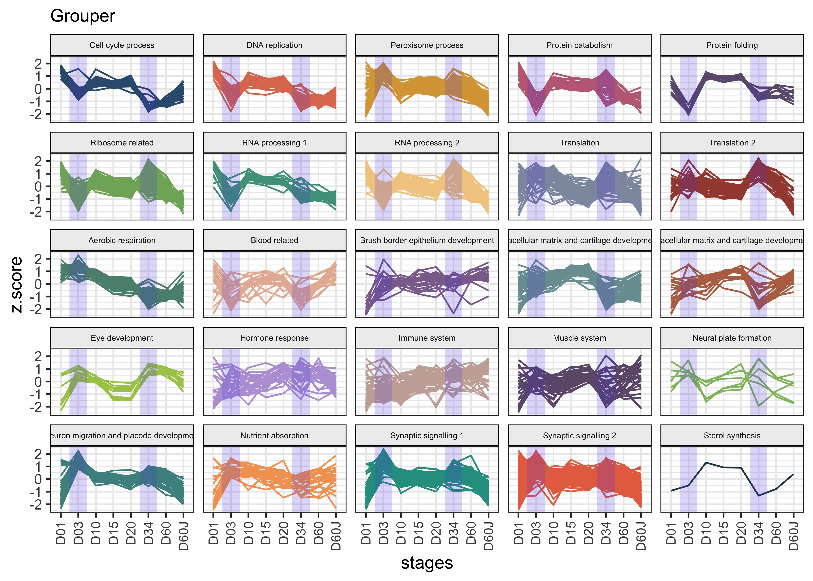
7.5 Manini
manini_zscore %>% inner_join(metamorph_orthlist %>% filter(sp=="Manini"), by="orths") %>%
inner_join(homologous_genes, by=c("Orthogroup"="genes")) %>% inner_join(module_annot, by="mod") %>%
mutate(annot = factor(annot, levels = annot_arrangement)) %>%
ggplot(aes(x=stages, y=z.score, group=orths, color=annot))+
facet_wrap(~annot)+
geom_line()+
labs(subtitle = "Manini")+
scale_color_manual(values=module_annot_cols)+
theme_bw()+
theme(axis.text.x = element_text(angle = 90, hjust = 1, vjust = 0.5, size = 8),
legend.position = "none",
strip.text.x.top = element_text(size=5),
strip.background = element_rect(colour = "black", fill = "#eee"))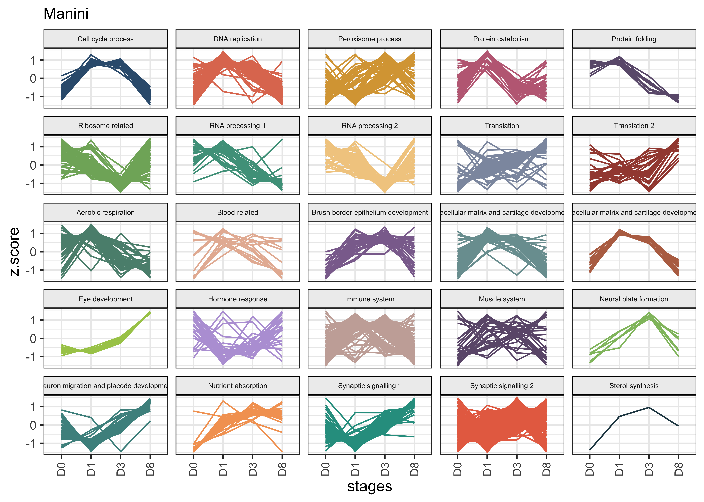
7.6 Danio
danio_zscore %>% inner_join(metamorph_orthlist %>% filter(sp=="Danio_rerio"), by="orths") %>%
inner_join(homologous_genes, by=c("Orthogroup"="genes")) %>% inner_join(module_annot, by="mod") %>%
mutate(annot = factor(annot, levels = annot_arrangement)) %>%
ggplot(aes(x=stages, y=z.score, group=orths, color=annot))+
facet_wrap(~annot)+
geom_line()+
annotate(geom = "rect",
xmin = 3.5, xmax = 4.5, ymin = -Inf, ymax = Inf,
fill = "#594BE4",
alpha = 0.2)+
labs(subtitle = "Zebrafish")+
scale_color_manual(values=module_annot_cols)+
theme_bw()+
theme(axis.text.x = element_text(angle = 90, hjust = 1, vjust = 0.5, size = 10),
legend.position = "none",
strip.text.x.top = element_text(size=5),
strip.background = element_rect(colour = "black", fill = "#eee"))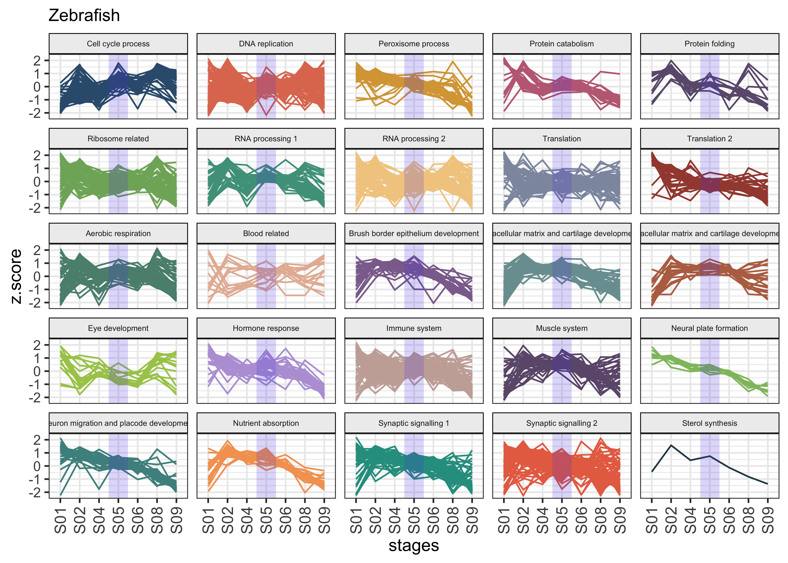
8 T3 and MPI treatments
To experimentally test whether thyroid hormone can influence the conserved network, we clownfish exposed to a treatment of exogenous triiodothyronine (T3), a treatment of goitrogens (inhibits thyroid hormone synthesis) called MPI (methimazole, potassium perchlorate, iopanoic acid), and compared gene expression differences between with DMSO-treated controls.
8.1 Differential expression analysis
library(edgeR)
##T3
t3 <-read_csv("./RDS/T3_treatment_counts_raw.csv")
tibble(samples=colnames(t3 |> dplyr::select(-genes)),
treatment=c(rep("control",10), rep("t3",10)))->t3.samples
cts.t3 <- t3 |> column_to_rownames("genes") |> as.matrix()
dge <- DGEList(
counts = cts.t3,
samples = t3.samples,
genes = tibble(gene_id = rownames(cts.t3)))
design <- model.matrix(~ 0 + treatment,data = t3.samples)
keep<- filterByExpr(dge, min.count = 10, design)
dge<-dge[keep, ,keep.lib.sizes =FALSE]
dge <- calcNormFactors(dge,method = "TMM")
t3.log_cpm <- edgeR::cpm(dge,log = TRUE,prior.count = 1e-5)
#limma::plotMDS(dge)
dge<-estimateDisp(dge, design, robust = T)
dge$common.dispersion## [1] 0.0535263#plotBCV(dge)
## Determining quasi likelihood
fit<-glmQLFit(dge, design, robust = T)
#head(fit$coefficients)
#plotQLDisp(fit)
## Differential expression analysis
con<-makeContrasts(treatmentt3-treatmentcontrol, levels = design)
qlf.t3<- glmQLFTest(fit,contrast=con)
ttgs<-topTags(qlf.t3,n = Inf)
tibble(gene = ttgs$table$gene_id,logFC = ttgs$table$logFC,fdr = ttgs$table$FDR)->dge_res.t3
summary(decideTests(qlf.t3))## -1*treatmentcontrol 1*treatmentt3
## Down 4080
## NotSig 6875
## Up 3751##MPI
mpi<-read_csv("./RDS/MPI_treatment_counts_raw.csv")
tibble(samples=colnames(mpi |> dplyr::select(-id)),
treatment=c(rep("control",10), rep("mpi",10)))->mpi.samples
cts.mpi <- mpi |> column_to_rownames("id") |> as.matrix()
dge <- DGEList(
counts = cts.mpi,
samples = mpi.samples,
genes = tibble(gene_id = rownames(cts.mpi)))
design <- model.matrix(~ 0 + treatment,data = mpi.samples)
keep<- filterByExpr(dge, min.count = 10, design)
dge<-dge[keep, ,keep.lib.sizes =FALSE]
dge <- calcNormFactors(dge,method = "TMM")
mpi.log_cpm <- edgeR::cpm(dge,log = TRUE,prior.count = 1e-5)
#limma::plotMDS(dge)
dge<-estimateDisp(dge, design, robust = T)
dge$common.dispersion## [1] 0.09052325#plotBCV(dge)
## Determining quasi likelihood
fit<-glmQLFit(dge, design, robust = T)
#head(fit$coefficients)
#plotQLDisp(fit)
## Differential expression analysis
con<-makeContrasts(treatmentmpi-treatmentcontrol, levels = design)
qlf.mpi<- glmQLFTest(fit,contrast=con)
ttgs<-topTags(qlf.mpi,n = Inf)
tibble(gene = ttgs$table$gene_id,logFC = ttgs$table$logFC,fdr = ttgs$table$FDR)->dge_res.mpi
summary(decideTests(qlf.mpi))## -1*treatmentcontrol 1*treatmentmpi
## Down 1088
## NotSig 17007
## Up 11608.2 Distribution of DEGs in conserved network and background genes
More than two-thirds of genes belonging to the conserved network were differentially expressed following T3 exposure (FDR < 0.05). For the MPI treatment, only 10% of the genes of the conserved network were differentially expressed
homologous_genes_connectivity_clown<-read_csv("./RDS/homologous_genes_connectivity_clown.csv")
dge_res.t3 %>%
mutate(dge = ifelse(fdr <= 0.05, "yes", "no")) |>
inner_join(homologous_genes_connectivity_clown, by=c("gene"="orths")) |>
mutate(annot = factor(annot, levels = annot_arrangement))->plot_dat.t3
dge_res.mpi %>%
mutate(dge = ifelse(fdr <= 0.05, "yes", "no")) |>
inner_join(homologous_genes_connectivity_clown, by=c("gene"="orths")) |>
mutate(annot = factor(annot, levels = annot_arrangement))->plot_dat.mpi
rbind(
dge_res.t3 %>%
mutate(significant = fdr < 0.05,
gene_set = if_else(
gene %in% plot_dat.t3$gene,
"Conserved network",
"Background")) |>
dplyr::count(gene_set, significant) %>%
group_by(gene_set) %>%
mutate(
total_tested = sum(n),
proportion = n / total_tested) %>%
ungroup() |> mutate(exp="T3"),
dge_res.mpi %>%
mutate(significant = fdr < 0.05,
gene_set = if_else(
gene %in% plot_dat.mpi$gene,
"Conserved network",
"Background")) |>
dplyr::count(gene_set, significant) %>%
group_by(gene_set) %>%
mutate(
total_tested = sum(n),
proportion = n / total_tested) %>%
ungroup() |> mutate(exp="MPI")
) |>
ggplot(aes(x=gene_set, y=proportion, fill=significant))+
facet_wrap(~exp)+
geom_col()+
scale_fill_manual(values = c("#B7C4C8","#A64D50"))+
labs(x="Gene set", y="Proportion of DEGs")+
theme_bw()+
theme(axis.text.x = element_text(angle = 45,hjust = 1))->dge_fishers_plot
rbind(
summary(decideTests(qlf.t3)) |> as.data.frame() |> mutate(direction=Var1, treat="T3") |>
dplyr::select(direction,treat,Freq),
summary(decideTests(qlf.mpi)) |> as.data.frame() |> mutate(direction=Var1, treat="MPI") |>
dplyr::select(direction,treat,Freq)
) |>
ggplot(aes(x=direction, y=log2(Freq), fill=direction))+
facet_wrap(~treat)+
geom_col()+
labs(y="Number of genes (log2)", x="Direction")+
scale_fill_manual(values = c("#4D8B5C","#9E9B98","#C77E5D"),
labels = c("Down-regulated","No change", "Up-regulated"))+
theme_bw()+
theme(axis.text.x = element_blank(),
axis.ticks.x = element_blank())->dge_dist_treatments
patchwork::wrap_plots(dge_dist_treatments, dge_fishers_plot, nrow = 2)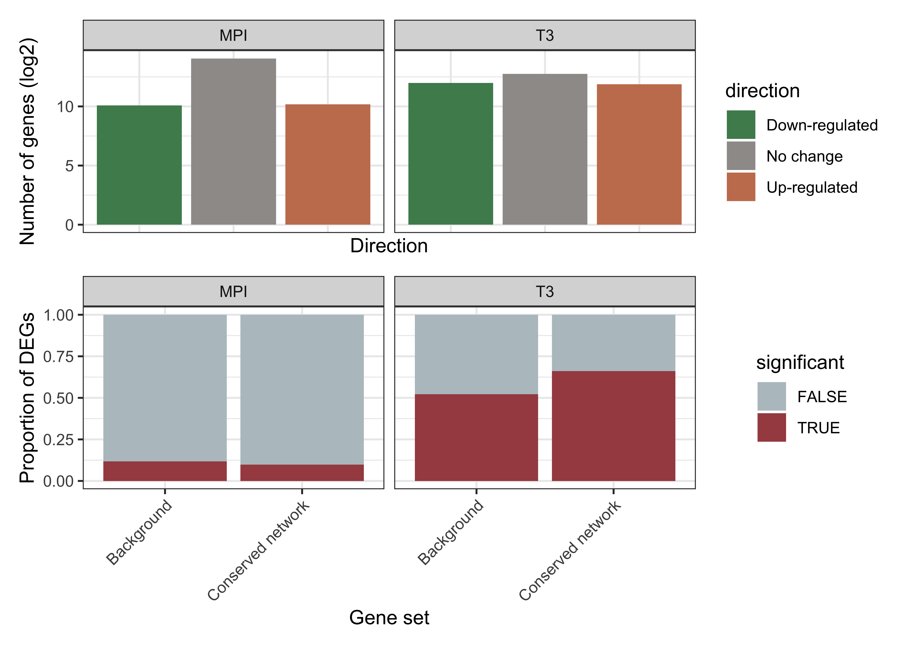
8.3 Volcano plots for partitions
DEGs are present in both functional partitions for both treatments.
plot_dat.t3 |> mutate(annot=stringr::str_wrap(annot, width = 25)) |>
ggplot(aes(x=logFC, y=-log10(fdr), fill=dge))+
facet_wrap(~annot, scales="free_y")+
geom_point(shape=21,size=2,stroke=0.2)+
scale_fill_manual(values=c("#E1D79D","#F22F4D"))+
theme_bw()+
theme(strip.text.x.top = element_text(size=5))
plot_dat.mpi |> mutate(annot=stringr::str_wrap(annot, width = 25)) |>
ggplot(aes(x=logFC, y=-log10(fdr), fill=dge))+
facet_wrap(~annot, scales="free_y")+
geom_point(shape=21,size=2,stroke=0.2)+
scale_fill_manual(values=c("#E1D79D","#F22F4D"))+
theme_bw()+
theme(strip.text.x.top = element_text(size=5))8.4 Fishers exact test for enrichment of DEGs in conserved network
The conserved network was enriched for differentially expressed genes in the T3 treatment, where network genes had 1.77-fold higher odds of differential expression than all other genes tested in the transcriptome (Fisher’s exact test). For the MPI treatment the conserved network was not enriched for differentially expressed genes.
dge_enrich<-function(dge_res, plot_dat){
#dge_res=dge_res.t3
#plot_dat=plot_dat.t3$gene
de_results <- dge_res %>%
mutate(significant = fdr < 0.05,
gene_set = if_else(
gene %in% plot_dat,
"Conserved network",
"Background"),
gene_set = factor(
gene_set,levels = c("Conserved network", "Background")))
de_results |>
dplyr::count(gene_set, significant) |>
pivot_wider(
names_from = significant,
values_from = n,
values_fill = 0)->test_matirx
test_matrix <- de_results |>
dplyr::count(gene_set, significant) |>
complete(gene_set,
significant,fill = list(n = 0)) |>
pivot_wider(
names_from = significant,
values_from = n,
values_fill = 0) |>
arrange(gene_set) |> column_to_rownames("gene_set") %>%
dplyr::select(`TRUE`, `FALSE`) |> as.matrix()
enrichment_result <- fisher.test(
test_matrix,alternative = "two.sided") %>% broom::tidy()
return(enrichment_result)
}
dge_enrich(dge_res = dge_res.t3, plot_dat = plot_dat.t3$gene)dge_enrich(dge_res = dge_res.mpi, plot_dat = plot_dat.mpi$gene)9 Endocrine candidates
Although thyroid hormone and corticosteroid signalling are central regulators of vertebrate post-embryonic development, candidate genes associated with these endocrine axes were largely absent from the conserved co-expression network. Instead, they were distributed across multiple modules within each species, suggesting that their expression relationships are more dynamic and lineage-specific than those of the conserved network components. These modules encompassed a wide range of functions, from core cellular processes such as DNA metabolism and Wnt signalling to developmental and physiological processes including extracellular matrix organisation and immune activity. Some endocrine-axis genes nevertheless retained similar functional contexts across species. For example, trh was consistently associated with modules involved in neural signalling in most species, reflecting its established neuroregulatory role, while duox was linked to immune-related modules in clownfish, goby, and grouper, consistent with its role in mucosal immunity. However, most candidate genes were embedded in modules with different functional associations across species. Together, these results suggest that although the thyroid hormone and corticosteroid axes are broadly conserved components of teleost post-embryonic development, the co-expression partners and biological processes through which they act have diverged among lineages, providing evidence for substantial flexibility and regulatory rewiring in their developmental context.
9.1 Setup
#Clownfish
rbind(
clown_zscore %>% inner_join(metamorph_orthlist %>% filter(sp=="Amphiprion_ocellaris"), by="orths") %>%
inner_join(clown_thr_net, by=c("Orthogroup"="gene")) %>% mutate(candidate="TH"),
clown_zscore %>% inner_join(metamorph_orthlist %>% filter(sp=="Amphiprion_ocellaris"), by="orths") %>%
inner_join(clown_corticoid_net, by=c("Orthogroup"="gene")) %>% mutate(candidate="Corticoid")) %>%
inner_join(mods_BP_proc_clown %>%
group_by(module) %>%
slice_head(n=20), by=c("module")) %>%
inner_join(clown_ensembl %>%
dplyr::select(ensembl_gene_id, external_gene_name), by=c("orths"="ensembl_gene_id")) %>%
distinct(orths, stages, .keep_all = TRUE) %>%
dplyr::rename("gene_name"="external_gene_name")->TH_Cort_clown_dat
#I check with ensembl to ensure the names are correct
#TH_Cort_clown_dat %>% dplyr::select(-c(ID,p.adjust,qvalue,geneID)) %>%
# write_csv("./07.Systems_genes/TH_Cort_clown_dat.csv")
#Goby
goby_ensembl<-read_csv("./00.Sequences/Goby_stages/YB_gene_id_symbol_mapping_detailed.csv")
goby_ensembl %>% dplyr::select(gene_id,gene_symbol) %>%
mutate(id=paste0("Goby_",gene_id)) %>%
inner_join(metamorph_orthlist %>% filter(sp=="Goby"), by=c("id"="orths"))->goby_ensembl
rbind(
goby_zscore %>% inner_join(metamorph_orthlist %>% filter(sp=="Goby"), by="orths") %>%
inner_join(goby_thr_net, by=c("Orthogroup"="gene")) %>% mutate(candidate="TH"),
goby_zscore %>% inner_join(metamorph_orthlist %>% filter(sp=="Goby"), by="orths") %>%
inner_join(goby_corticoid_net, by=c("Orthogroup"="gene")) %>% mutate(candidate="Corticoid")) %>%
inner_join(mods_BP_proc_goby %>%
group_by(module) %>%
slice_head(n=1), by=c("module")) %>%
inner_join(goby_ensembl %>% dplyr::select(Orthogroup, gene_symbol),
by="Orthogroup") %>% distinct(orths,stages, .keep_all = TRUE) %>%
dplyr::rename("gene_name"="gene_symbol")->TH_Cort_goby_dat
#TH_Cort_goby_dat %>% dplyr::select(-c(ID,p.adjust,qvalue,geneID)) %>%
# write_csv("./07.Systems_genes/TH_Cort_goby_dat.csv")
#Grouper
grouper_ensembl<-read_csv("./00.Sequences/Grouper/Annotations/Grouper_gene_id_annotations_best_from_Danio.csv")
grouper_ensembl %>% dplyr::select(id,descriptions,annotated_gene_name) %>%
mutate(id=paste0("Grouper_",id)) %>%
inner_join(metamorph_orthlist %>% filter(sp=="Grouper"), by=c("id"="orths"))->grouper_ensembl
rbind(
grouper_zscore %>% inner_join(metamorph_orthlist %>% filter(sp=="Grouper"), by="orths") %>%
inner_join(grouper_thr_net, by=c("Orthogroup"="gene")) %>% mutate(candidate="TH"),
grouper_zscore %>% inner_join(metamorph_orthlist %>% filter(sp=="Grouper"), by="orths") %>%
inner_join(grouper_corticoid_net, by=c("Orthogroup"="gene")) %>% mutate(candidate="Corticoid")) %>%
inner_join(mods_BP_proc_grouper %>%
group_by(module) %>%
slice_head(n=1), by=c("module")) %>%
inner_join(grouper_ensembl %>% dplyr::select(Orthogroup, annotated_gene_name),
by="Orthogroup") %>% distinct(orths,stages, .keep_all = TRUE) %>%
dplyr::rename("gene_name"="annotated_gene_name")->TH_Cort_grouper_dat
# TH_Cort_grouper_dat %>% dplyr::select(-c(ID,p.adjust,qvalue,geneID)) %>%
# write_csv("./07.Systems_genes/TH_Cort_grouper_dat.csv")
#Manini
manini_ensembl<-read_csv("./00.Sequences/Manini/Manini_gene_id_annotations_high_medium_from_Danio.csv")
manini_ensembl %>% dplyr::select(gene_id=target_id,danio_gene_names) %>%
mutate(id=paste0("Manini_",gene_id)) %>%
inner_join(metamorph_orthlist %>% filter(sp=="Manini"), by=c("id"="orths"))->Manini_ensembl
rbind(
manini_zscore %>% inner_join(metamorph_orthlist %>% filter(sp=="Manini"), by="orths") %>%
inner_join(manini_thr_net, by=c("Orthogroup"="gene")) %>% mutate(candidate="TH"),
manini_zscore %>% inner_join(metamorph_orthlist %>% filter(sp=="Manini"), by="orths") %>%
inner_join(manini_corticoid_net, by=c("Orthogroup"="gene")) %>% mutate(candidate="Corticoid")) %>%
inner_join(mods_BP_proc_manini %>%
group_by(module) %>%
slice_head(n=1), by=c("module")) %>%
inner_join(Manini_ensembl %>% dplyr::select(Orthogroup, danio_gene_names),
by="Orthogroup") %>% distinct(orths,stages, .keep_all = TRUE) %>%
dplyr::rename("gene_name"="danio_gene_names")->TH_Cort_manini_dat
# TH_Cort_manini_dat %>% dplyr::select(-c(ID,p.adjust,qvalue,geneID)) %>%
# write_csv("./07.Systems_genes/TH_Cort_manini_dat.csv")
#Danio
rbind(
danio_zscore %>% inner_join(metamorph_orthlist %>% filter(sp=="Danio_rerio"), by="orths") %>%
inner_join(danio_thr_net, by=c("Orthogroup"="gene")) %>% mutate(candidate="TH"),
danio_zscore %>% inner_join(metamorph_orthlist %>% filter(sp=="Danio_rerio"), by="orths") %>%
inner_join(danio_corticoid_net, by=c("Orthogroup"="gene")) %>% mutate(candidate="Corticoid")) %>%
inner_join(mods_BP_proc_danio %>%
group_by(module) %>%
slice_head(n=1), by=c("module")) %>%
inner_join(danio_orth_gene_names %>% dplyr::select(`Gene stable ID`, `Gene name`), by=c("orths"="Gene stable ID")) %>%
distinct(orths,stages, .keep_all = TRUE) %>%
dplyr::rename("gene_name"="Gene name")->TH_Cort_danio_dat
# TH_Cort_danio_dat %>% dplyr::select(-c(ID,p.adjust,qvalue,geneID)) %>%
# write_csv("./07.Systems_genes/TH_Cort_danio_dat.csv") make_lines_plot_for_the_candidates<-function(plot_data,sp){
plot_dat <- plot_data %>%
mutate(gene_name = na_if(gene_name, ""),
gene_label = if_else(is.na(gene_name),
orths,
gene_name)) %>%
distinct(gene_label, stages, .keep_all = TRUE)
label_dat <- plot_dat %>%
group_by(Description, orths, candidate, gene_label) %>%
arrange(stages, .by_group = TRUE) %>%
slice_tail(n = 1) %>%
ungroup()
plot_dat %>% ggplot(aes(x=stages, y=z.score, group=orths, color=candidate))+
facet_wrap(~Description)+
geom_line()+
ggrepel::geom_text_repel(data = label_dat,aes(label = gene_label),
size = 2.5,nudge_x = 0.25,direction = "y",hjust = 0,
segment.size = 0.2,show.legend = FALSE)+
scale_color_manual(values = c("#2BA09F","#A1562B"))+
theme_bw()+
theme(axis.text.x = element_text(angle = 90, hjust = 1, vjust = 0.5, size = 8),
strip.text.x.top = element_text(size=5),
strip.background = element_rect(colour = "black", fill = "#eee"))->p
if (sp == "clown") {
p <- p +
annotate(
geom = "rect",
xmin = 3.5,
xmax = 4.5,
ymin = -Inf,
ymax = Inf,
fill = "#594BE4",
alpha = 0.2)
} else if (sp == "grouper") {
p <- p +
annotate(
geom = "rect",
xmin = 1.5,
xmax = 2.5,
ymin = -Inf,
ymax = Inf,
fill = "#594BE4",
alpha = 0.2
) +
annotate(
geom = "rect",
xmin = 5.5,
xmax = 6.5,
ymin = -Inf,
ymax = Inf,
fill = "#594BE4",
alpha = 0.2
)
} else if (sp == "manini") {
p <- p +
annotate(
geom = "rect",
xmin = 0,
xmax = 1.5,
ymin = -Inf,
ymax = Inf,
fill = "#594BE4",
alpha = 0.2
)
} else if (sp == "goby") {
p <- p
} else if (sp == "danio") {
p <- p +
annotate(
geom = "rect",
xmin = 3.5,
xmax = 4.5,
ymin = -Inf,
ymax = Inf,
fill = "#594BE4",
alpha = 0.2
)
}
return(p)
}
TH_Cort_clown_dat<-read_csv("./07.Systems_genes/TH_Cort_clown_dat.csv") %>% mutate(gene_name=str_to_lower(gene_name))
TH_Cort_goby_dat<-read_csv("./07.Systems_genes/TH_Cort_goby_dat.csv") %>% mutate(gene_name=str_to_lower(gene_name))
TH_Cort_grouper_dat<-read_csv("./07.Systems_genes/TH_Cort_grouper_dat.csv") %>% mutate(gene_name=str_to_lower(gene_name))
TH_Cort_manini_dat<-read_csv("./07.Systems_genes/TH_Cort_manini_dat.csv") %>% mutate(gene_name=str_to_lower(gene_name))
TH_Cort_danio_dat<-read_csv("./07.Systems_genes/TH_Cort_danio_dat.csv") %>% mutate(gene_name=str_to_lower(gene_name))
rbind(
TH_Cort_clown_dat %>% mutate(sp="clown"),
TH_Cort_goby_dat %>% mutate(sp="goby"),
TH_Cort_grouper_dat %>% mutate(sp="grouper"),
TH_Cort_manini_dat %>% mutate(sp="manini"),
TH_Cort_danio_dat %>% mutate(sp="danio")) %>%
distinct(Orthogroup,sp,gene_name, .keep_all = TRUE) %>%
distinct(sp, gene_name, Description, Orthogroup) %>%
dplyr::count(gene_name, name = "n_sp") %>% filter(n_sp >=4)->TH_Cort_common_genes9.2 Clownfish
make_lines_plot_for_the_candidates(TH_Cort_clown_dat %>% filter(gene_name %in% TH_Cort_common_genes$gene_name),sp="clown")9.3 Goby
make_lines_plot_for_the_candidates(TH_Cort_goby_dat %>% filter(gene_name %in% TH_Cort_common_genes$gene_name),sp="goby")9.4 Grouper
make_lines_plot_for_the_candidates(TH_Cort_grouper_dat %>% filter(gene_name %in% TH_Cort_common_genes$gene_name),sp="grouper")9.5 Manini
make_lines_plot_for_the_candidates(TH_Cort_manini_dat %>% filter(gene_name %in% TH_Cort_common_genes$gene_name),sp="manini")
9.6 Danio
make_lines_plot_for_the_candidates(TH_Cort_danio_dat %>% filter(gene_name %in% TH_Cort_common_genes$gene_name),sp="danio")10 Evolutionary dynamics of copy number variation
In this section I carry out the comparative evolutionary analysis using CAFE5. For the CAFE and the subsequent evolutionary analyses I excluded teleost lineages with additional lineage-specific WGDs because their genomes introduce extra paralogy, lineage-specific duplicate retention and loss, and extended rediploidisation dynamics, which can bias comparative estimates of copy-number evolution and regulatory divergence . The evolutionary analyses therefore focused on genomes sharing the same duplication background. Additionally, I selected species that were present in the phylogenetic tree from the Fish Tree of Life. The final list included 134 species and can be found in table S6.
#Get orthology data
orth<-readRDS("./04.Orthogroups/Orthologer_latest2.rds") %>%
mutate(sp=case_match(sp, "Goby" ~ "Rhinogobius_brunneus",
"Grouper" ~ "Epinephelus_malabaricus",
"Manini" ~ "Acanthurus_triostegus",
"Gasterosteus_aculeatus_aculeatus" ~ "Gasterosteus_aculeatus", #fix this extra name
.default = sp))
#Get tree
tree<-read.tree("./06.CAFE5/actinopt_12k_treePL.tre.xz")
tibble(tips=tree$tip.label) %>% filter(tips %in% (orth %>% distinct(sp) %>% pull(sp)))->include.tips
pruned_tree<-drop.tip(tree,tree$tip.label[-match(include.tips$tips, tree$tip.label)])
pruned_tree<-drop.tip(pruned_tree,tip = "Carassius_langsdorfii")
force.ultrametric(pruned_tree)->pruned_tree## ***************************************************************
## * Note: *
## * force.ultrametric does not include a formal method to *
## * ultrametricize a tree & should only be used to coerce *
## * a phylogeny that fails is.ultrametric due to rounding -- *
## * not as a substitute for formal rate-smoothing methods. *
## ***************************************************************is.ultrametric(pruned_tree)## [1] TRUEis.rooted(pruned_tree)## [1] TRUEis.binary(pruned_tree)## [1] TRUE#Taxonomic data from Fishbase
#This can take a while leading to timeout
#I provide an RDS object instead
#library(rfishbase)
#fish_call<-validate_names(str_replace(include.tips$tips,"_"," "))
#taxa<-rfishbase::load_taxa() %>% filter(Species %in% fish_call) %>% collect()
#taxa<-taxa %>% mutate(sp=str_replace(taxa$Species," ","_" )) %>% dplyr::select(sp, Family, Order, SpecCode) %>% mutate(Order=taxa$Order %>% str_remove_all("/.*"))
taxa<-readRDS("./RDS/taxa.rds")
##Remove species with extra WGD
left_join(taxa %>% filter(!Family %in% c("Cyprinidae","Cobitidae","Catostomidae","Salmonidae")),
tibble(sp=pruned_tree$tip.label),by = "sp")->tips_to_keep
drop.tip(pruned_tree,pruned_tree$tip.label[-match(tips_to_keep$sp, pruned_tree$tip.label)])->no_WGD_tree
#Calculate average orthogroup size
og_sizes <- orth %>% group_by(Orthogroup) %>% summarise(og_size = n_distinct(sp),.groups = "drop")
species_avg_size <- orth %>% distinct(sp, Orthogroup) %>%
left_join(og_sizes, by = "Orthogroup") %>%
group_by(sp) %>%
summarise(avg_og_size = mean(og_size),.groups = "drop")
orth %>% group_by(Orthogroup) %>% dplyr::count(sp,name = "no_of_gene_copies") %>% ungroup()->orth_gene_copy
orth_gene_copy<-orth_gene_copy %>% left_join(taxa, by="sp")
#Search for the clownfish and the danio orthologs in the orthgroups.
#These objects are used throughout the analyses downstream so I create them here and then use them at later instances.
orth<-readRDS("./04.Orthogroups/Orthologer_latest2.rds")
left_join(danio_orth_net$connectivity,orth %>% filter(sp=="Danio_rerio") %>% filter(Orthogroup %in% danio_all_orth_exp_mat$Orthogroup),by=c("gene"="Orthogroup")) %>% dplyr::select(module,gene,orths)->danio_orth_genes_modules
danio_biomart<-read_csv("./Danio_biomart.csv") %>%
dplyr::select(`Gene stable ID`,`Gene stable ID version`,`Protein stable ID`,`Gene name`, `Gene description`)
danio_orth_genes_modules %>%
left_join(danio_biomart %>% dplyr::select(`Gene stable ID version`,`Gene name`),
by=c("orths"="Gene stable ID version"))->orths_gene_name
orths_gene_name %>% filter(`Gene name` != "BX530018.2")->orths_gene_name
danio_orth_net<-readRDS("./02.Gene_expression_and_network/danio_orth_net.rds")
orth_danio<-orth %>% filter(sp=="Danio_rerio") %>% mutate(orths=str_remove(orths,"\\.[0-9]"))
orth_danio<-orth_danio %>% mutate(Orthogroup=as.character(orth_danio$Orthogroup))
danio_orth_mods<-left_join(danio_orth_net$connectivity, orth_danio, by=c("gene"="Orthogroup")) %>%
left_join(danio_biomart, by=c("orths"="Gene stable ID")) %>% na.omit()I use CAFE5 to estimate evolutionary dynamics in copy-number evolution. First I ran a single-rate error corrected base model and a multi-rate model . The error model accounts for any non-biological factors such as genome sequencing and coverage differences, as well as gene family count estimation errors. I compared model fits using negative log-likelihood scores. The CAFE script can be found in the ‘Codes’ folder on zenodo.
non_homologous_genes<-readRDS("./RDS/non_homologous_genes.rds")
homologous_genes<-readRDS("./RDS/homologous_genes.rds")
seq_stats<-read_tsv("./10.HyPhy/seq_dat_clean.tsv") %>% mutate(type=case_when(Orthogroup %in% homologous_genes$genes ~ "Homologous",
.default = "Non homologous")) #This contains data for the set of randomly selected genes that acts as the null.
#Use this random data for a null
seq_stats %>% filter(type=="Non homologous") %>% slice_head(n=1175) %>% mutate(mod=paste0("random_mod", rep(1:25, each = 47))) %>% dplyr::rename("genes"="Orthogroup")->random_cafe
#it is 1175 because CAFE didn't converge for one of the modules. This code chunk is used to make the input files for CAFE. They can be found on zenodo.
#random_non_homologus_genes<-clown_orth_net$connectivity %>%
# filter(!gene %in% homologous_genes$genes) %>%
# slice_sample(n = 1196) %>% dplyr::rename("genes"="gene","mod"="module")#Random gene set to test specificity of CAFE
#random_non_homologus_genes<-random_non_homologus_genes3
#Make CAFE input
make_cafe_input<-function(genelist, cols){
specific_module<-genelist %>% filter(mod==cols)
orth_gene_copy %>% filter(sp %in% no_WGD_tree$tip.label) %>% filter(Orthogroup %in% specific_module$genes) %>%
dplyr::select(-c(Family, Order, SpecCode)) %>% pivot_wider(names_from = sp, values_from = no_of_gene_copies) %>%
replace(is.na(.), 0) %>% mutate(`Family ID`=paste0("OG",Orthogroup), Desc="(null)") %>%
dplyr::select(c(Desc, `Family ID`, everything(), -Orthogroup)) %>%
write_tsv(paste0("./06.CAFE5/New_random/cafe_input_",cols,".tsv"))#change destination if needed
}
random_cafe %>% distinct(mod) %>% pull(mod)->cols
purrr::map(.x = cols,
~make_cafe_input(genelist = random_cafe, cols = .x))
homologous_genes %>% distinct(mod) %>% pull(mod)->cols
purrr::map(.x = cols,
~make_cafe_input(genelist = homologous_genes, cols = .x))
random_non_homologus_genes %>% distinct(mod) %>% pull(mod)->cols
purrr::map(.x = cols,
~make_cafe_input(genelist = random_non_homologus_genes, cols = .x))10.1 Results
Here I collect the outputs of CAFE and combine them into data frames. Adjust the file sources as per your system.
get_cafe_family_results<-function(cols,type){
read_table(paste0("./06.CAFE5/",type,"/results_cafe_",cols,"/Multi_lambda_model_1/Base_family_results.txt"),
skip = 1, col_names= c("genes","pval","is_sig"))->fam
fam %>% mutate(mod=cols,
genes=str_remove_all(genes,"OG")) %>% return()
}
get_cafe_model_outputs<-function(cols,type){
read_table(paste0("./06.CAFE5/",type,"/results_cafe_",cols,"/Base_model/Base_results.txt"),col_names = c("q","w","e","r","t","y"))->b
tibble("neglogL"=b$y[1],
"lambda1"=b$w[2] %>% str_remove_all(",") %>% as.numeric(),
"lambda2"=b$e[2] %>% str_remove_all(",") %>% as.numeric(),
"model_type"="base")->base_model
read_table(paste0("./06.CAFE5/",type,"/results_cafe_",cols,"/Multi_lambda_model_1/Base_results.txt"),
col_names=c("q","w","e","r","t","y"))->m1
tibble("neglogL"=m1$y[1],
"lambda1"=m1$w[2] %>% str_remove_all(",") %>% as.numeric(),
"lambda2"=m1$e[2] %>% str_remove_all(",") %>% as.numeric(),
"model_type"="multi_lambda_1")->multi_1
read_table(paste0("./06.CAFE5/",type,"/results_cafe_",cols,"/Multi_lambda_model_2/Base_results.txt"),
col_names=c("q","w","e","r","t","y"))->m2
tibble("neglogL"=m2$y[1],
"lambda1"=m2$w[2] %>% str_remove_all(",") %>% as.numeric(),
"lambda2"=m2$e[2] %>% str_remove_all(",") %>% as.numeric(),
"model_type"="multi_lambda_2")->multi_2
read_table(paste0("./06.CAFE5/",type,"/results_cafe_",cols,"/Multi_lambda_model_3/Base_results.txt"),
col_names=c("q","w","e","r","t","y"))->m3
tibble("neglogL"=m3$y[1],
"lambda1"=m3$w[2] %>% str_remove_all(",") %>% as.numeric(),
"lambda2"=m3$e[2] %>% str_remove_all(",") %>% as.numeric(),
"model_type"="multi_lambda_3")->multi_3
rbind(base_model, multi_1, multi_2, multi_3) %>% mutate(mod=cols) %>%
replace(is.na(.), 0) %>% return()
}
#These are just the module names which were used in the file names of the output.
cols_h<-read_csv("./06.CAFE5/test/cafe_colours.csv")
rbind(
purrr::map2(.x=as.list(unique(random_cafe$mod)),
.y=as.list("random"),
~get_cafe_model_outputs(cols = .x,
type = .y)) %>%
list_rbind() %>%
mutate(mod_type="Non homologous"),
purrr::map2(.x=as.list(unique(cols_h$colours)),
.y=as.list("test"),
~get_cafe_model_outputs(cols = .x,
type = .y)) %>%
list_rbind() %>%
mutate(mod_type="Homologous"))->cafe_model_outs
rbind(
purrr::map2(.x=as.list(unique(cols_h$colours)),
.y="test",
~get_cafe_family_results(cols = .x,
type = .y)) %>%
list_rbind() %>% mutate(mod_type="Homologous") %>%
left_join(module_annot,by="mod"),
purrr::map2(.x=as.list(unique(random_cafe$mod)),
.y="random",
~get_cafe_family_results(cols = .x,
type = .y)) %>%
list_rbind() %>% mutate(mod_type="Non homologous", annot="random")
)->cafe_genefamily_outs10.1.1 Connectivity of the fast evolving genes
Here I check whether the high turnover genes estimated by CAFE have
different connectivity than low turnover genes form the conserved
network.
The connectivity of the high turnover conserved network genes is not
significantly different from all the other, low-turnover genes in the
conserved network. Therefore, the fast evolving genes are not
hyper-hubs.
rbind(
clown_orth_net$connectivity %>% filter(gene %in% (cafe_genefamily_outs %>% filter(is_sig=="y" & mod_type=="Homologous") %>% pull(genes))) %>% dplyr::select(gene, degree) %>%
mutate(type="High turnover"),
clown_orth_net$connectivity %>% filter(gene %in% homologous_genes$genes & !gene %in% (cafe_genefamily_outs %>% filter(is_sig=="y" & mod_type=="Homologous") %>% pull(genes))) %>% dplyr::select(gene, degree) %>%
mutate(type="Low turnover")) %>% mutate(sp="Clownfish") %>%
rbind(
rbind(
grouper_orth_net$connectivity %>% filter(gene %in% (cafe_genefamily_outs %>% filter(is_sig=="y"& mod_type=="Homologous") %>% pull(genes))) %>% dplyr::select(gene, degree) %>%
mutate(type="High turnover"),
grouper_orth_net$connectivity %>% filter(gene %in% homologous_genes$genes & !gene %in% (cafe_genefamily_outs %>% filter(is_sig=="y"& mod_type=="Homologous") %>% pull(genes))) %>% dplyr::select(gene, degree) %>%
mutate(type="Low turnover")) %>% mutate(sp="Grouper")) %>%
rbind(
rbind(
goby_orth_net$connectivity %>% filter(gene %in% (cafe_genefamily_outs %>% filter(is_sig=="y"& mod_type=="Homologous") %>% pull(genes))) %>% dplyr::select(gene, degree) %>%
mutate(type="High turnover"),
goby_orth_net$connectivity %>% filter(gene %in% homologous_genes$genes & !gene %in% (cafe_genefamily_outs %>% filter(is_sig=="y"& mod_type=="Homologous") %>% pull(genes))) %>% dplyr::select(gene, degree) %>%
mutate(type="Low turnover")) %>% mutate(sp="Goby")) %>%
rbind(
rbind(
manini_orth_net$connectivity %>% filter(gene %in% (cafe_genefamily_outs %>% filter(is_sig=="y"& mod_type=="Homologous") %>% pull(genes)))%>% dplyr::select(gene, degree) %>%
mutate(type="High turnover"),
manini_orth_net$connectivity %>% filter(gene %in% homologous_genes$genes & !gene %in% (cafe_genefamily_outs %>% filter(is_sig=="y"& mod_type=="Homologous") %>% pull(genes))) %>% dplyr::select(gene, degree) %>%
mutate(type="Low turnover")) %>% mutate(sp="Manini")) %>%
rbind(
rbind(
danio_orth_net$connectivity %>% filter(gene %in% (cafe_genefamily_outs %>% filter(is_sig=="y"& mod_type=="Homologous") %>% pull(genes))) %>% dplyr::select(gene, degree) %>%
mutate(type="High turnover"),
danio_orth_net$connectivity %>% filter(gene %in% homologous_genes$genes & !gene %in% (cafe_genefamily_outs %>% filter(is_sig=="y"& mod_type=="Homologous") %>% pull(genes))) %>% dplyr::select(gene, degree) %>%
mutate(type="Low turnover")) %>% mutate(sp="Zebrafish"))->all_fish_wil_test_dat
all_fish_wil_test_dat %>%
ggplot(aes(y=log2(degree),x=type))+
facet_wrap(~sp, scales="free", nrow=1)+
geom_quasirandom(shape=21, alpha=0.5, color="white", fill="grey40")+
geom_boxplot(alpha=0.3, fill="grey40", outliers = FALSE)+
labs(x="Gene copy evolution",
y="Connectivity")+
theme_bw()+
theme(strip.background = element_rect(fill="grey96"),
axis.text.x = element_text(angle = 90))knitr::include_graphics("./Figures_for_report/turnover_connect_plot.png")wil_test_boot<-function(dat,species){
rbind(
dat$connectivity %>% filter(gene %in% (cafe_genefamily_outs %>% filter(is_sig=="y" & mod_type=="Homologous") %>% pull(genes))) %>% dplyr::select(gene, degree) %>% mutate(type="homologous"),
dat$connectivity %>% filter(gene %in% homologous_genes$genes & !gene %in% (cafe_genefamily_outs %>% filter(is_sig=="y" & mod_type=="Homologous") %>% pull(genes))) %>% dplyr::select(gene, degree) %>% mutate(type="other") %>%
slice_sample(n=170)
)->test_dat
tibble(p.value=(
wilcox.test(
x = test_dat %>% filter(type=="homologous") %>% pull(degree),
y = test_dat %>% filter(type=="other") %>% pull(degree),
alternative = "two.sided")
)$p.value,
sp=paste0(species)
) %>% return()
}
rbind(
purrr::map(1:1000, ~wil_test_boot(dat = clown_orth_net, species = "Clownfish")) %>%
list_rbind(),
purrr::map(1:1000, ~wil_test_boot(dat = grouper_orth_net, species = "Grouper")) %>%
list_rbind(),
purrr::map(1:1000, ~wil_test_boot(dat = goby_orth_net, species = "Goby")) %>%
list_rbind(),
purrr::map(1:1000, ~wil_test_boot(dat = manini_orth_net, species = "Manini")) %>%
list_rbind(),
purrr::map(1:1000, ~wil_test_boot(dat = danio_orth_net, species = "zebrafish")) %>%
list_rbind()
)->all_fish_wil_test_cafe_res
all_fish_wil_test_cafe_res %>% saveRDS("./RDS/all_fish_wil_test_cafe_res.rds")10.1.2 Model fit
The plot below shows the negative log-likelihoods for two models implemented in CAFE. The Base model, with a single rate across the entire tree, and a multi-lambda model where the acanthomorpha and non-acanthomorpha fish have different rates. For all of the homologous modules, except royalblue, the multi-lambda model is a better fit to the data.
cafe_model_outs %>% filter(mod_type=="Homologous") %>% left_join(module_annot, by="mod")->cafe_homo_plot_dat
cafe_homo_plot_dat %>%
mutate(model_type=cafe_homo_plot_dat$model_type %>% str_remove_all("_[1-3]")) %>%
filter(mod !="white") %>%
ggplot(aes(x=model_type,y=neglogL, group=annot, fill=model_type))+
facet_wrap(~annot, scales="free_y")+
geom_point(shape=21, color="grey20", size=3)+
ggsci::scale_fill_aaas()+
labs(subtitle = "Conserved network")+
theme_linedraw()+
theme(axis.text.x = element_blank(),
strip.background = element_rect(fill = "#67980C"))->cafe_homo_model_plots
cafe_model_outs %>% filter(mod_type=="Non homologous")->cafe_nonhomo_plot_dat
cafe_nonhomo_plot_dat %>%
mutate(model_type=cafe_nonhomo_plot_dat$model_type %>% str_remove_all("_[1-3]")) %>%
filter(mod !="white") %>%
ggplot(aes(x=model_type,y=neglogL, group=mod, fill=model_type))+
facet_wrap(~mod, scales="free_y")+
geom_point(shape=21, color="grey20", size=3)+
ggsci::scale_fill_aaas()+
labs(subtitle = "Random network")+
theme_linedraw()+
theme(axis.text.x = element_blank(),
strip.background = element_rect(fill = "#67980C"))->cafe_nonhomo_model_plotsknitr::include_graphics("./Figures_for_report/cafe_homo_model_plots.png")knitr::include_graphics("./Figures_for_report/cafe_nonhomo_model_plots.png")10.1.3 Processes with significant expansion and contractions
cafe_genefamily_outs %>% drop_na() %>% filter(is_sig=="y" & mod_type=="Homologous") %>% dplyr::count(annot) %>% mutate(prop=(n/sum(n))) %>%
mutate(annot=reorder(annot,prop)) %>%
ggplot(aes(y=annot, x=prop))+
geom_col(fill="#5C6B8A", color="black", linewidth=0.2)+
geom_text(aes(x=prop+0.009, label = paste0(round(prop*100,1),"%")), size=3)+
scale_x_continuous(labels = scales::percent)+
labs(x="Proportion of high turnover genes",
y="Module annotation")+
theme_bw()knitr::include_graphics("./Figures_for_report/Process_with_ex_cont.png")10.1.4 Expansion and contraction of gene families
Here I plot the relative expansion and contraction of homologous gene
families estimated by CAFE. We see that there are different points of
expansion/contraction along the tree occurring at different nodes. The
highest expansion occurred at the root of teleost as a result of the
teleost specific whole genome duplication (3R).
The expansions and contractions are all significant.
10.1.4.1 Along the tree
CAFE identified multiple instances of gene copy expansion and contraction along the phylogeny of teleosts, with a large number of expansions estimated at the base of teleost fish radiation followed by more lineage specific instances of expansion and contraction
#CAFE colors
cafe_genefamily_outs %>%
filter(is_sig=="y" & mod_type=="Homologous") %>%
janitor::get_dupes(mod) %>% distinct(mod) %>%
pull(mod)->cafe_cols
cafe_genefamily_outs %>% filter(is_sig=="y" & mod_type=="Homologous")->cafe_sig
#CAFE trees
paste0("./06.CAFE5/test/",cafe_cols,"_trees.tre") %>% as.list()->tree_list
#CAFE change results
paste0("./06.CAFE5/test/results_cafe_",cafe_cols,"/Multi_lambda_model_1/Base_change.tab") %>% as.list()->change_dat_list
purrr::map2(.x=tree_list, .y=change_dat_list,
~cafe_get_age_of_change(tree = readNexus(.x),
change_dat = read_tsv(.y),
cafe_genefamily_res = cafe_sig)) %>%
list_rbind()->all_tree_dat
all_tree_dat %>% saveRDS("./RDS/all_tree_dat.rds")#Expansion/Contraction ratio per node
#Shows which nodes have more expansion/contraction; inclusive of all genes
all_tree_dat<-readRDS("./RDS/all_tree_dat.rds")
all_tree_dat %>% filter(isSig=="yes") %>% dplyr::select(node, type_of_change) %>%
dplyr::count(node,type_of_change) %>%
pivot_wider(names_from = type_of_change, values_from = n, values_fill = 0) %>%
mutate(
total = expansion + contraction,
net = expansion - contraction)->node_sum
g <- ggtree::ggtree(all_tree_dat, layout = "rectangular") + geom_tree() +
geom_tiplab(aes(label=str_replace_all(species,pattern = "_",replacement = " ")),as_ylab = FALSE,offset = 5, size=3,geom = "text", fontface="italic")+ hexpand(.7)
gdat <- g$data %>% left_join(node_sum, by = "node")
top_qnt_net<-gdat %>% filter(total > 0 & isSig=="yes" & isTip=="FALSE") %>% pull(net) %>% quantile(0.9)
low_qnt_net<-gdat %>% filter(total > 0 & isSig=="yes" & isTip=="FALSE") %>% pull(net) %>% quantile(0.1)
top_qnt_total<-gdat %>% filter(total > 0 & isSig=="yes" & isTip=="FALSE") %>% pull(total) %>% quantile(0.9)
g+ geom_point(
data = gdat %>% filter(total > 0 & isSig=="yes" & isTip=="FALSE") %>%
mutate(net=case_when(net >= top_qnt_net ~ top_qnt_net,# top 10%
net <= low_qnt_net ~ low_qnt_net, .default = net),
total=case_when(total >= top_qnt_total ~ top_qnt_total, .default = total)),
aes(x = x, y = y, size = total, fill = net),
shape = 21, colour = "black",stroke=0.25)+
scale_size(range = c(1, 5), name = "Total (exp+contr)") +
scale_fill_gradient2(
low = "#5430D9", mid = "white", high = "#D90467",
midpoint = 0, name = "Net (exp−contr)", breaks=c(low_qnt_net,-4,0,4,top_qnt_net),
labels=c(paste0(">",low_qnt_net),"-4", "0", "4", paste0(">",top_qnt_net)))->cafe_tree_expansionknitr::include_graphics("./Figures_for_report/cafe_tree.pdf")This code snipet is for the random genes.
#For the random data
#CAFE colors
cafe_genefamily_outs %>% filter(is_sig=="y" & mod_type=="Non homologous") %>% janitor::get_dupes(mod) %>% distinct(mod) %>% pull(mod)->cafe_cols_random
#cafe_genefamily_outs %>% filter(is_sig=="n") %>% slice_sample(n=167) %>% janitor::get_dupes(mod) %>% drop_na() %>% distinct(mod) %>% pull(mod)->cafe_cols
#CAFE trees
paste0("./06.CAFE5/random/",cafe_cols_random,"_trees.tre") %>% as.list()->tree_list_random
#CAFE change results
paste0("./06.CAFE5/random/results_cafe_",cafe_cols_random,"/Multi_lambda_model_1/Base_change.tab") %>% as.list()->change_dat_list_random
purrr::map2(.x=tree_list_random, .y=change_dat_list_random,
~cafe_get_age_of_change(tree = readNexus(.x),
change_dat = read_tsv(.y),
cafe_genefamily_res = cafe_genefamily_outs)) %>%
list_rbind()->all_tree_dat_random10.1.4.2 Specific nodes
There were many lineage specific points of expansions and contractions. For example, at the base of the teleost radiation there was extensive expansion primarily in gene families related to synaptic signalling and nervous system development. At the base of anguilliformes, there were expansions in genes related to translation and synaptic signalling. Another point of expansion was at the base of scombriformes which involved the expansion of the immune system and synaptic signalling genes. In contrast, at the base of siluriformes there were major contractions in genes related to synaptic signalling. Another major point of contraction was at the base of syngnathiformes, which involved contractions in genes related to the immune system and synaptic signalling. There were multiple instances of expansions and contractions at the base of cichliformes, with a major expansion in gene families related to the immune system, and a loss in families related to synaptic signalling and brushborder epithelium development. The full list of high turnover genes can be found in table S3.
all_tree_dat %>% filter(isSig=="yes" & node %in% c("136","265","249","188","200","160")) %>%
mutate(genes=str_remove_all(genes, "OG")) %>%
left_join(cafe_genefamily_outs, by = "genes") %>%
dplyr::count(type_of_change, annot, node) %>%
mutate(node=
case_when(
node=="136" ~ "Base of Teleost WGD",
node=="265" ~ "Base of Anguiliformes",
node=="249" ~ "Base of Siluriformes",
node=="188" ~ "Base of Syngnathiformes",
node=="200" ~ "Base of Scombriformes",
#node=="202" ~ "Base of Thunnus",
node=="160" ~ "Base of Cichliformes"
)) %>% mutate(annot=tidytext::reorder_within(annot,n,node)) %>%
ggplot(aes(y=annot, x=n, fill = type_of_change))+
facet_wrap(~node, scale="free")+
geom_col(alpha=0.8, position = "stack", linewidth=0.05, color="black")+
scale_fill_manual(values = c("#5430D9","#D90467"))+
labs(x="Number of expansion/contraction")+
tidytext::scale_y_reordered() +
theme_bw()+
theme(axis.text.x = element_text( size = 9),
strip.background = element_rect(fill = "grey95"))->specific_nodes_cafeknitr::include_graphics("./Figures_for_report/specifc_nodes_cafe.pdf")10.1.4.3 Proportion of turnover between homologous and random genes
Of all the gene families in the conserved network, 14% (170 out of
1196) had significant evidence of high turnover. However, the proportion
of gene families with evidence of high turnover differed significantly
(two-sided Fisher’s exact test P = 0.0002, odds ratio 1.6)
between the conserved network and null network, with the conserved
network comprising a higher proportion of high turnover gene
families.
Doing the test without the re-sampling gives a significant difference
(reported P above) in proportions between homologous and non-homologous
networks. I perform the re-sampling to ensure there is consistency in
the data sampling and results.
cafe_genefamily_outs %>% dplyr::count(mod_type, is_sig) %>%
mutate(prop=(n/sum(n))) %>%
ggplot(aes(x=mod_type, y=prop, fill=is_sig)) +
geom_col(width = 0.6, position = position_dodge(width = 0.65)) +
scale_y_continuous(labels = scales::percent) +
labs(y = "Proportion", x = NULL) +
scale_fill_manual(values = c("#B39E88","#4EB5AA"))+
labs(subtitle = "CAFE5 analysis",x="Gene class", fill="Is significant") +
theme_bw()+
theme(axis.text.x = element_text(angle = 45, hjust = 1))#Test with all data
rbind(
cafe_genefamily_outs %>% filter(mod_type=="Homologous"),
cafe_genefamily_outs %>% filter(mod_type=="Non homologous")) %>%
dplyr::count(is_sig, mod_type) %>%
pivot_wider(names_from = is_sig,
values_from = n,
values_fill = 0) %>% dplyr::select(y,n) %>%
as.matrix() %>% fisher.test()->test_res
test_res##
## Fisher's Exact Test for Count Data
##
## data: .
## p-value = 0.0002719
## alternative hypothesis: true odds ratio is not equal to 1
## 95 percent confidence interval:
## 1.234073 2.088594
## sample estimates:
## odds ratio
## 1.60308fisher_boot_test<-function(){
rbind(
cafe_genefamily_outs %>% filter(mod_type=="Homologous") %>%
slice_sample(n=500,replace = TRUE),
cafe_genefamily_outs %>% filter(mod_type=="Non homologous") %>%
slice_sample(n=500,replace = TRUE)) %>%
dplyr::count(is_sig, mod_type) %>%
pivot_wider(names_from = is_sig,
values_from = n,
values_fill = 0) %>% dplyr::select(y,n) %>%
as.matrix() %>% fisher.test()->test_res
tibble(pval=test_res$p.value,
odds=test_res$estimate) %>% return()
}
purrr::map(1:1000, ~fisher_boot_test()) %>%
list_rbind() %>% mutate(padj=p.adjust(pval,"BH"))->fisher_boot_test_res
fisher_boot_test_res %>%
ggplot(aes(x=padj))+
geom_histogram(bins=100, fill="grey70", color="black", linewidth = 0.2)+
geom_vline(xintercept = 0.05, color="red", linetype="dashed")+
geom_vline(xintercept = median(fisher_boot_test_res$padj), color="blue", linetype="dashed")+
theme_bw()The median, multiple testing adjusted P=0.036 (in blue), lower than significance threshold of 0.05 (in red).
Gene families involved in synaptic signalling, neuron migration, and muscle system development had the highest relative turnover (after accounting for module size)
homologous_genes %>%
dplyr::count(mod,name = "mod_size") %>%
left_join(module_annot)->annot_count
all_tree_dat %>% filter(isSig=="yes" & isTip==FALSE) %>%
left_join(taxa, by=c("species"="sp")) %>% mutate(genes=str_remove_all(genes, "OG")) %>%
left_join(cafe_genefamily_outs, by = "genes") %>%
mutate(species=str_replace_all(species,pattern = "_",replacement = " ")) %>%
dplyr::count(type_of_change, annot, genes, name = "event_count")->turnover_event_annot #event rate per gene
turnover_event_annot %>% dplyr::count(type_of_change,annot,name = "num_gene_per_change")->num_gene_per_change
left_join(num_gene_per_change,annot_count, by="annot") %>%
mutate(enrich_factor=(num_gene_per_change/mod_size)) %>%
mutate(annot=tidytext::reorder_within(annot, enrich_factor, type_of_change)) %>%
ggplot(aes(y=annot, x=enrich_factor, fill = type_of_change))+
facet_wrap(~type_of_change, scales="free", nrow=2)+
geom_col(alpha=0.8, position = position_dodge(width=0.9), linewidth=0.05, color="black")+
tidytext::scale_y_reordered()+
scale_fill_manual(values = c("#5430D9","#D90467"))+
labs(x="Relative expansion/contraction", y="Modules")+
theme_bw()+
theme(axis.text.y = element_text(angle = 0,hjust = 1, vjust = 0.3,
size = 9),
axis.text.x = element_text(angle = 0,hjust = 1, vjust = 0.3,
size = 6))10.1.4.4 Difference in number of expansions and contractions
There are no differences in number of expansion and contraction events. Suggesting that the network doesn’t preferentially evolve via either expansion and contraction.
all_tree_dat %>% filter(isSig=="yes"& isTip==FALSE) %>%
left_join(taxa, by=c("species"="sp")) %>%
mutate(genes=str_remove_all(genes, "OG")) %>%
left_join(cafe_genefamily_outs, by = "genes") %>% group_by(genes) %>%
dplyr::count(type_of_change) %>% ungroup() %>%
pivot_wider(names_from = type_of_change, values_from = n) %>%
replace_na(list(contraction=0, expansion=0)) %>%
mutate(diff = expansion - contraction)->d
wilcox.test(d$expansion, d$contraction, paired = TRUE, alternative = "two.sided")##
## Wilcoxon signed rank test with continuity correction
##
## data: d$expansion and d$contraction
## V = 1969, p-value = 0.1029
## alternative hypothesis: true location shift is not equal to 011 Selection analysis
To understand how the conserved network evolved in teleosts I ran
several molecular evolution models to infer selection patterns in coding
sequence alignments across 133 teleost fish species and the spotted gar,
Lepiosteous oculatus, as the outgroup.
I compared the selection estimates of genes in the conserved network to
an equal sized random set of genes not in the network which served as
our null set, similar to CAFE. I ran several evolutionary models
implemented in the HyPhy suite of models.
The analyses on coding sequence evolution indicates that most protein
residues in both the sets (from the conserved network and null set) are
under strong evolutionary constraint, with occasional bouts of episodic
diversifying selection taking place in a few branches. However this
general trend differs slightly between the two sets. Genes belonging to
the conserved network show a slightly higher proportion of sites under
purifying selection, as well as a greater number of branches with
evidence of diversifying selection. Although these differences are
statistically significant, they are associated with relatively small
effect sizes.
11.1 Prepare the datasts for analysis
#Prepare data of background
#orth %>% filter(sp %in% no_WGD_tree$tip.label & Orthogroup %in% danio_orth_net_in$dge_keep$genes$genes) %>% distinct(Orthogroup) %>% filter(!Orthogroup %in% homologous_genes$genes) %>% slice_sample(n = 2000)->bg_genes
#bg_genes %>% saveRDS("./RDS/bg_genes_for_selection.rds")
genomes<-read_tsv("./00.Sequences/NCBI_genomes.tsv")
#This is simply a list of the genes in the analysis
genes_needed<-read_tsv("./00.Sequences/genes_needed.tsv")The plot below shows that the distributions in number of copies between gene families making up the conserved network versus the null network are the same.
rbind(
orth %>% filter(Orthogroup %in% homologous_genes$genes) %>% dplyr::count(Orthogroup) %>% mutate(type="homo"),
orth %>% filter(Orthogroup %in% full_orths$Orthogroup & !Orthogroup %in% homologous_genes$genes) %>% dplyr::count(Orthogroup) %>% slice_sample(n = 1196) %>% mutate(type="non-homo")) %>% dplyr::select(Orthogroup)->genes_to_get
rbind(
orth %>% filter(Orthogroup %in% homologous_genes$genes) %>% dplyr::count(Orthogroup) %>% mutate(type="homo"),
orth %>% filter(Orthogroup %in% full_orths$Orthogroup & !Orthogroup %in% homologous_genes$genes) %>% dplyr::count(Orthogroup) %>% slice_sample(n = 1196) %>% mutate(type="non-homo")) %>%
ggplot(aes(x=log2(n), fill = type))+
geom_density(alpha=0.5)+
scale_fill_aaas()+
theme_bw()Prior to running analyses I checked for any group level differences
in gene length or orthology copy number between the conserved and null
class. I found no evidence of differences in average gene length or copy
number between these two classes (bootstrapped two-sided Wilcoxon
rank-sum test, Benjamini-Hochberg corrected P > 0.2).
Therefore, the difference in gene length or copy number did not confound
our estimates of selection between the two groups.
The seq_data can be obtained using the SeqKit command line tool (https://bioinf.shenwei.me/seqkit/).
seq_stats<-read_tsv("./10.HyPhy/seq_dat_clean.tsv") %>% mutate(type=case_when(Orthogroup %in% homologous_genes$genes ~ "Homologous",
.default = "Non homologous"))
seq_stats %>%
ggplot(aes(x=type, y=log10(number_of_seqs), fill=type))+
ggbeeswarm::geom_quasirandom(shape=21, color="grey40",alpha=0.5)+
geom_boxplot(alpha=0.5, outliers = FALSE, fill="grey")+
labs(subtitle = "Difference in number",
x=NULL,
y="log10(number of sequences)")+
ggsci::scale_fill_bmj()+
theme_bw()+
theme(axis.text.x = element_blank(),
axis.title.y = element_text(size=10))->seq_num
wil_test_seq_stats<-function(metric){
wilcox.test(x=seq_stats %>% filter(type=="Homologous") %>% slice_sample(n=200) %>% pull(metric),
y=seq_stats %>% filter(type=="Non homologous") %>% slice_sample(n=200) %>% pull(metric)
)->res
tibble(test=metric,
pval=res$p.value) %>% return()
}
purrr::map(1:100, ~wil_test_seq_stats(metric = "number_of_seqs")) %>%
list_rbind() %>% mutate(padj=p.adjust(pval,"BH"))->wil_test_number_of_genesI also checked for difference in gene length and found that there is no difference in gene lengths between the genes from the homologous network and genes the random null set.
seq_stats<-read_tsv("./10.HyPhy/seq_dat_clean.tsv") %>% mutate(type=case_when(Orthogroup %in% homologous_genes$genes ~ "Homologous",
.default = "Non homologous"))
seq_stats %>%
ggplot(aes(x=type, y=log10(avg_len), fill=type))+
ggbeeswarm::geom_quasirandom(shape=21, color="grey40",alpha=0.5)+
geom_boxplot(alpha=0.5, outliers = FALSE, fill="grey")+
labs(subtitle = "Difference in average length",
x=NULL,
y="log10(average length)")+
ggsci::scale_fill_bmj()+
theme_bw()+
theme(axis.text.x = element_blank(),
axis.title.y = element_text(size=10))->seq_length
purrr::map(1:100, ~wil_test_seq_stats(metric = "avg_len")) %>%
list_rbind() %>% mutate(padj=p.adjust(pval,"BH"))->wil_test_seq_len rbind(wil_test_number_of_genes, wil_test_seq_len) %>%
ggplot(aes(x=padj))+facet_wrap(~test, scales="free")+
geom_density(fill="grey70", alpha=0.5)+
theme_bw()->pvaldist
knitr::include_graphics("./Figures_for_report/len_num_diff_selection.png")pvaldist11.2 Global dN/dS using MG94 model
First I used a standard MG94 selection model to get a global estimate of dN/dS estimated from the entire tree. Using this global estimate I found no evidence for difference in dN/dS between genes in the conserved network versus the null, non-conserved gene set. The global MG94 is a highly conservative estimate that rarely captures selective regimes at the branch and site level.
#Parse the JSON file from HyPhy
fitmg94_json_parse<-function(orth) {
library(jsonlite)
f<-read_json(paste0("./10.HyPhy/MG94/",orth,"_fitmg94.local.json"))
tibble(
Orthogroup=orth,
omega=f$fits$`Standard MG94`$`Rate Distributions`$`non-synonymous/synonymous rate ratio`,
omega_ci_lb=f$fits$`Standard MG94`$`Confidence Intervals`$`non-synonymous/synonymous rate ratio`$LB,
omega_ci_ub=f$fits$`Standard MG94`$`Confidence Intervals`$`non-synonymous/synonymous rate ratio`$UB,
p_val=f$`test results`$`non-synonymous/synonymous rate ratio`$`p-value`,
lrt=f$`test results`$`non-synonymous/synonymous rate ratio`$LRT)
}
rbind(
homologous_genes$genes %>%
purrr::map(safely(fitmg94_json_parse)) %>%
purrr::map("result") %>%
compact() %>%
list_rbind() %>% mutate(type="Homologous"),
(genes_needed %>% distinct(Orthogroup) %>%
filter(!Orthogroup %in% homologous_genes$genes))$Orthogroup %>%
purrr::map(safely(fitmg94_json_parse)) %>%
purrr::map("result") %>%
compact() %>%
list_rbind() %>% mutate(type="Non Homologous")) %>%
mutate(pval_adj=p.adjust(p_val,method = "BH"))->fitmg94_resfitmg94_res<-readRDS("./RDS/fitmg94_res.rds")11.2.1 Difference in dN/dS
rbind(fitmg94_res %>% filter(pval_adj < 0.05)) %>%
ggplot(aes(x=type,y=log2(omega), fill=type))+
geom_quasirandom(shape=21, alpha=0.7, color="grey20",size=2)+
geom_boxplot(alpha=0.8, outliers = FALSE, fill="grey90", width=0.4)+
labs(subtitle = "Global MG94 estimate",
x=NULL,
fill="type of gene")+
ggsci::scale_fill_bmj()+
theme_bw()+
theme(axis.text.x = element_blank())test_wil<-function(){
rbind(fitmg94_res %>% filter(pval_adj < 0.05) %>% slice_sample(n=200))->test_dat
wilcox.test(x=test_dat %>% filter(type=="Homologous") %>% pull(omega) %>% log2(),
y=test_dat %>% filter(type=="Non Homologous") %>% pull(omega) %>% log2(),
alternative = "two.sided")->wil.res
tibble(pval=wil.res$p.value,
test=wil.res$alternative) %>% return()
}
purrr::map(1:1000, ~test_wil()) %>% list_rbind() %>% mutate(padj=p.adjust(pval,"BH"))->global_sel_diffglobal_sel_diff %>% summarise(mean_padj=mean(padj))global_sel_diff %>% summarise(median_padj=median(padj))11.3 FUBAR
I estimated dN/dS on a per-site basis using the FUBAR (Fast Unconstrained Bayesian Approximation) approach. FUBAR provides site-wise estimates for purifying and diversifying selection regimes, or uncertain sites with low evidence for either regime. The analyses revealed that a majority of the sites in genes from the conserved network evolve under a purifying selection with very few sites evolving under diversifying selection (Fig 2B). The same was observed for the sites in genes from the non-conserved null set. This suggests that these orthologs are generally under high evolutionary constraint at the site level. However, the distribution of evolutionary regimes differs significantly between the two groups (χ² = 651.4, P < 2.2×10⁻¹⁶) with the genes in the conserved network having slightly higher proportion of sites under purifying selection and lower proportion of genes under diversifying selection, as compared to the null set. Although the difference between the groups is significant, the effect size is small (Cramer’s V = 0.019).
#Parse HyPhy output
list.files("./10.HyPhy/FUBAR/") %>%
str_remove_all("_cds_treeinput.fa.FUBAR.json")->og
fubar_json_parse<- function(orth) {
f<-read_json(paste0("./10.HyPhy/FUBAR/",orth,"_cds_treeinput.fa.FUBAR.json"),
simplifyVector = )
headers <- map_chr(f$MLE$headers,1)
rows <- f$MLE$content$`0`
rows <- purrr::modify(rows, ~ modify(.x, ~ if (is.null(.x)) 0 else .x))
sites <- f$`data partitions`$`0`$coverage
purrr::map(.x = rows,
~as_tibble(setNames(as.list(.x), c(headers,"q1","q2")))) %>% list_rbind() %>%
mutate(sites=seq(1:length(sites[[1]])),
Orthogroup=orth) %>%
dplyr::select(Orthogroup,sites, everything()) %>%
return()
}
rbind(
homologous_genes$genes %>%
purrr::map(safely(fubar_json_parse)) %>%
purrr::map("result") %>%
compact() %>%
list_rbind() %>% mutate(type="Homologous"),
(genes_needed %>% distinct(Orthogroup) %>%
filter(!Orthogroup %in% homologous_genes$genes))$Orthogroup %>%
purrr::map(safely(fubar_json_parse)) %>%
purrr::map("result") %>%
compact() %>%
list_rbind() %>% mutate(type="Non homologous")
)->fubar_res
fubar_res %>% saveRDS("./RDS/FUBAR_res.rds")fubar_res<-readRDS("./RDS/FUBAR_res.rds")
fubar_res %>%
mutate(selection=case_when(`Prob[alpha>beta]` > 0.9 ~ "Purifying",
`Prob[alpha<beta]` > 0.9 ~"Diversifying",
.default = "Low evidence")) %>%
dplyr::count(type,selection) %>% mutate(n.per=((n/sum(n))*100) %>% round(2)) %>%
dplyr::select(-n.per) %>%
pivot_wider(names_from = selection, values_from = n) %>%
dplyr::select(-type) %>%
as.matrix()->fubar_mat
fubar_mat%>% chisq.test()->chisq #Homologous (conserved) is column 1
#Non-homologous (null) is column 3
chisq##
## Pearson's Chi-squared test
##
## data: .
## X-squared = 651.37, df = 2, p-value < 2.2e-16#Effect size calculation
x2<-unname(chisq$statistic)
n<-sum(fubar_mat)
r<-nrow(fubar_mat)
c<-ncol(fubar_mat)
cramers_v<-sqrt(x2/(n * min(r - 1, c - 1)))Cramer’s V
cramers_v## [1] 0.01872575fubar_res %>%
mutate(selection=case_when(`Prob[alpha>beta]` > 0.9 ~ "Purifying",
`Prob[alpha<beta]` > 0.9 ~"Diversifying",
.default = "Low evidence")) %>%
dplyr::count(type,selection) %>%
mutate(n.per=((n/sum(n)))) %>%
mutate(type=case_when(type=="Homologous" ~ "Conserved",
type=="Non homologous" ~ "Non-conserved")) %>%
ggplot(aes(x=type,y=n.per, fill=selection))+
facet_wrap(~selection, scales = "free_y")+
geom_col(width = 0.65,position = position_dodge(width = 0.7),
alpha=1, linewidth = 0.2, color="black")+
#geom_text(aes(label = round(n.per*100,3), x=type, y=n.per+0.001),
# position = position_dodge(width = 0.7))+
scale_y_continuous(labels = scales::percent)+
scale_fill_manual(values = c("#355C7D","#E07A5F","#D9A441"))+
labs(title = "FUBAR analysis",
x = "Gene class",
y = "Proportion of sites",
fill = "Selection type")+
theme_bw()+
theme(axis.text.x = element_text(angle = 45, hjust = 1))11.4 BUSTED
Next I ran the BUSTED (Branch-Site Unrestricted Statistical Test for Episodic Diversification) model to test for selection at the gene level. BUSTED fits a codon model with multiple rates classes and tests for evidence of diversifying selection occurring at at least one site in at least one branch in the tree (an episode of diversification). The analysis revealed branches with evidence for episodic diversifying selection in genes from both the conserved network and null set. However, the conserved network genes had a higher proportion of branches with evidence of episodic diversifying selection than the null set (two-sided Fisher’s exact test P = 0.011, odds ratio = 1.22).
busted_json_parse<- function(orth) {
library(jsonlite)
f<-read_json(paste0("./10.HyPhy/BUSTED/",orth, "_cds_treeinput.fa.BUSTED.json"),
simplifyVector = TRUE)
tibble(Orthogroup=orth,
p_value=as.numeric(f$`test results`$`p-value`),
lrt=as.numeric(f$`test results`$LRT),
no_of_branches=length(f$tested$`0`)) %>%
return()
}
rbind(
homologous_genes$genes %>%
purrr::map(safely(busted_json_parse)) %>%
purrr::map("result") %>%
compact() %>%
list_rbind() %>%
mutate(type="Homologous"),
(genes_needed %>% distinct(Orthogroup) %>%
filter(!Orthogroup %in% homologous_genes$genes))$Orthogroup %>%
purrr::map(safely(busted_json_parse)) %>%
purrr::map("result") %>%
compact() %>%
list_rbind() %>%
mutate(type="Non homologous")
) %>% mutate(p_adj=p.adjust(p_value, "BH"))->busted_res
busted_res %>% saveRDS("./RDS/BUSTED_res.rds")busted_res<-readRDS("./RDS/BUSTED_res.rds")
busted_res %>% mutate(is_sig=case_when(p_adj<0.05 ~ "yes",.default = "no")) %>%
dplyr::count(type, is_sig) %>% pivot_wider(names_from = is_sig,
values_from = n,
values_fill = 0) %>%
dplyr::select(yes,no) %>% as.matrix() %>% fisher.test() #First row is Conserved##
## Fisher's Exact Test for Count Data
##
## data: .
## p-value = 0.02213
## alternative hypothesis: true odds ratio is not equal to 1
## 95 percent confidence interval:
## 1.026810 1.461786
## sample estimates:
## odds ratio
## 1.224991busted_res %>% mutate(is_sig=case_when(p_adj<0.05 ~ "yes",.default = "no")) %>%
dplyr::count(type, is_sig) %>%
mutate(prop=(n/sum(n))) %>% ungroup() %>%
ggplot(aes(x=type, y=prop, fill=is_sig)) +
geom_col(width = 0.6, position = "dodge") +
geom_text(aes(label = round(prop*100,1),
x=type,
y=prop+0.01),
position = position_dodge(width = 0.7))+
scale_y_continuous(labels = scales::percent) +
labs(y = "Proportion", x = NULL) +
scale_fill_manual(values = c("#B39E88","#4EB5AA"))+
labs(subtitle = "BUSTED analysis",x="Gene class", fill="Is significant") +
theme_bw()12 PGLMM
Here I investigated the relationship between copy number variation of
the high turnover gene families and phenotypic variation in multiple
traits across teleosts. Using phylogenetic generalised linear mixed
model (PGLMM) I model the trait of interest as a response variable with
the scores of the first two principal components (PC) of a phylogenetic
PCA of gene copy variation as the predictors, and phylogeny as the group
level effect (random effect). The traits of interest were maximum age,
age of maturity, average water temperature of sampled population,
trophic level, von Bertalanffy growth coefficient (rate at which an
organism approaches its maximum theoretical size), body shape, demersal
habitat type, aspect ratio of caudal fin height divided by area (proxy
for swimming performance), and length of lower jaw. The data is
primarily from the FishLife package, with has curated estimates from
FishBase. The traits of interest are both categorical and
continuous.
Details regarding transformation and units of measurements can be found
in Table S4.
12.1 Load the data
To improve the interpretation of the model outputs and minimise the risk of spurious associations, I evaluated several aspects of both model fit and the underlying data. For all models with statistically significant parameter estimates, I first examined model diagnostics to confirm proper convergence. I then inspected the plotted data and the phylogenetic PCA to verify that the observed relationships were not driven by a small number of outlier species occupying extreme positions in the phylomorphic space. Lastly I checked the expression of the genes using data from the Bgee gene expression database to determine whether the genes are expressed in the relevant tissues. I also used data from the Zebrafish Information Network (ZFIN) to examine the unique phenotypic terms associated with genetic perturbation (knockdowns, mutation screens, and morpholino experiments) of genes comprising the modules in Danio rerio (41). The ZFIN database provides a wide array of expertly curated cross-referenced genetic and genomics data that is routinely used to study gene functions (41). For the phenotypes, I focus on genes making up entire modules in order to capture the functional outcome of all interaction partners. Applying these criteria, I identified evidence for several relationships between gene copy number variation and ecological or morphological traits. For brevity I focus on three noteworthy cases in the main manuscript.
shapes_dat<-readRDS("./RDS/shapes_dat.rds")#Need this as it contains the speices list to include in the analysis. This data is incorporated into FishLife, primarily the aspect ration measure
#Prune the no_WGD_tree
pglmm_tree<-drop.tip(no_WGD_tree,no_WGD_tree$tip.label[-match(shapes_dat$sp, no_WGD_tree$tip.label)])
is.rooted(pglmm_tree)## [1] TRUEis.ultrametric(pglmm_tree)## [1] TRUElibrary(archetypes)
library(FishLife)
library(brms)
data(FishBase_and_Morphometrics)12.2 Maximum age ~ gene copy number
log of maximum age (years)
#log of maximum age (years)
brms_model_age<-function(col){
library(brms)
cafe_genefamily_outs<-cafe_genefamily_outs %>% filter(is_sig=="y" & mod_type=="Homologous")
#lead the genecopy data
orth_gene_copy %>% filter(Orthogroup %in% (cafe_genefamily_outs %>% filter(mod==col) %>%
pull(genes))) %>%
filter(sp %in% pglmm_tree$tip.label) %>%
dplyr::select(-c(Family, Order, SpecCode)) %>%
pivot_wider(names_from = Orthogroup, values_from = no_of_gene_copies) %>%
replace(is.na(.), 0) %>% filter(sp %in% shapes_dat$sp)->sp_genes_wide
#colnames(sp_genes_wide)<-c("sp", paste0("gene",seq(1:(ncol(sp_genes_wide)-1))))
expr_scaled<-sp_genes_wide %>% column_to_rownames("sp")->pca_dat_gene
scale(pca_dat_gene, center = FALSE,scale = TRUE)->pca_dat_gene
pca_gene_pca <- phytools::phyl.pca(pglmm_tree, pca_dat_gene, method = "lambda", mode = "corr")
pca_gene <- as.data.frame(pca_gene_pca$S) %>% dplyr::rename_with(~paste0(.,".cpy")) %>%
rownames_to_column("sp")
#Get this data from FishLife
data(FishBase_and_Morphometrics)
tibble(log_age=FishBase_and_Morphometrics$Y_ij[,1]) %>%
mutate(sp=(rownames(FishBase_and_Morphometrics$Y_ij) %>% str_replace_all(" ","_"))) %>%
drop_na() %>% filter(sp %in% no_WGD_tree$tip.label) %>%
summarise(mean_log_age=mean(log_age), .by = "sp")->fishbase_age_dat
#join the datasets
left_join(pca_gene,fishbase_age_dat) %>% drop_na()->model_dat
#Prune the pglmm tree
pglmm_tree_fishbase<-drop.tip(pglmm_tree,pglmm_tree$tip.label[-match(model_dat$sp, pglmm_tree$tip.label)])
is.rooted(pglmm_tree_fishbase)
is.ultrametric(pglmm_tree_fishbase)
#Must pass namecheck
geiger::name.check(pglmm_tree_fishbase,model_dat %>% column_to_rownames("sp"))
#plots to visualise response and predictors
ggarrange(
model_dat %>%
ggplot(aes(x=PC1.cpy, y=mean_log_age))+
geom_point(shape=21, fill="#8BAE06", size=3)+
geom_smooth(method = "lm", se = TRUE,colour = "#F0710F",show.legend = TRUE)+
theme_linedraw(),
model_dat %>%
ggplot(aes(x=PC2.cpy, y=mean_log_age))+
geom_point(shape=21, fill="#8BAE06", size=3)+
geom_smooth(method = "lm", se = TRUE,colour = "#F0710F")+
theme_linedraw(),
nrow = 1, ncol = 2)->age_plots
#Phylogenetic covariance matrix
A<-MCMCglmm::inverseA(pglmm_tree_fishbase,scale = TRUE,nodes = "TIPS")
A<-A$Ainv
#Priors
priors_age<-get_prior(mean_log_age ~
PC1.cpy + PC2.cpy +(1 |gr(sp, cov = A)),
data = model_dat,
data2 = list(A = A),
family = gaussian())
#Model
model_brms_age <- brm(mean_log_age ~ PC1.cpy + PC2.cpy +(1 |gr(sp, cov = A)),
data = model_dat,
data2 = list(A = A),
prior = priors_age,
family = gaussian(),
chains = 4,
cores = 4,
iter = 5000,
warmup = 1000,
backend = "cmdstanr",
control = list(adapt_delta=0.999, max_treedepth = 12)
)
return(list(pca_gene_pca=pca_gene_pca,
age_plots=age_plots,
model_brms_age=model_brms_age))
}
cafe_cols<-cafe_sig %>% filter(is_sig=="y" & mod_type=="Homologous") %>%
janitor::get_dupes(mod) %>% distinct(mod) %>% pull(mod)
purrr::map(cafe_cols, brms_model_age)->model_age
names(model_age)<-cafe_cols
model_age %>% saveRDS("./RDS/model_age.rds")12.2.1 Significance table
model_age<-readRDS("./RDS/model_age.rds")
brms_significance_plot(model_list = model_age,
submodel = "model_brms_age",
trait = "mean_log_age",
var_type = "continuous") %>%
kableExtra::kbl() %>% kableExtra::kable_styling() %>%
kableExtra::scroll_box(width = "700px", height = "400px")| annot | sig95 | eigengene | 2.5% | 97.5% | n_eff | Rhat |
|---|---|---|---|---|---|---|
| Immune system | TRUE | PC1.cpy | -0.0252271 | -0.0009892 | 28369.24 | 0.9998712 |
| Hormone response | TRUE | PC1.cpy | 0.0004277 | 0.0466029 | 21232.08 | 1.0000578 |
| Synaptic signalling 2 | FALSE | PC1.cpy | -0.0085068 | 0.0133469 | 28233.16 | 0.9998043 |
| Synaptic signalling 2 | FALSE | PC2.cpy | -0.0134635 | 0.0118577 | 29053.16 | 0.9998500 |
| Ribosome related | FALSE | PC1.cpy | -0.0080901 | 0.0125212 | 30085.54 | 0.9998252 |
| Ribosome related | FALSE | PC2.cpy | -0.0147527 | 0.0095842 | 26537.92 | 0.9998512 |
| RNA processing 2 | FALSE | PC1.cpy | -0.0051875 | 0.0107759 | 30823.64 | 0.9998639 |
| RNA processing 2 | FALSE | PC2.cpy | -0.0002399 | 0.0314889 | 26653.53 | 0.9998044 |
| DNA replication | FALSE | PC1.cpy | -0.0064169 | 0.0145259 | 29507.67 | 0.9998650 |
| DNA replication | FALSE | PC2.cpy | -0.0252790 | 0.0052132 | 21935.67 | 1.0001430 |
| Synaptic signalling 1 | FALSE | PC1.cpy | -0.0119628 | 0.0204491 | 24374.56 | 0.9999364 |
| Synaptic signalling 1 | FALSE | PC2.cpy | -0.0084692 | 0.0118105 | 26840.02 | 0.9998593 |
| Immune system | FALSE | PC2.cpy | -0.0198887 | 0.0087642 | 30317.24 | 0.9999712 |
| Cell cycle process | FALSE | PC1.cpy | -0.0201894 | 0.0321572 | 21816.00 | 0.9998871 |
| Cell cycle process | FALSE | PC2.cpy | -0.0229510 | 0.0214813 | 20790.66 | 0.9998426 |
| Translation | FALSE | PC1.cpy | -0.0225134 | 0.0054123 | 25546.62 | 1.0000007 |
| Translation | FALSE | PC2.cpy | -0.0249530 | 0.0138819 | 24647.27 | 0.9999743 |
| Protein catabolism | FALSE | PC1.cpy | -0.0111313 | 0.0243274 | 23926.80 | 1.0000410 |
| Protein catabolism | FALSE | PC2.cpy | -0.0228899 | 0.0085177 | 25343.08 | 0.9998815 |
| Neuron migration and placode development | FALSE | PC1.cpy | -0.0274179 | 0.0057481 | 17717.24 | 0.9998529 |
| Neuron migration and placode development | FALSE | PC2.cpy | -0.0234336 | 0.0176990 | 17828.96 | 0.9998539 |
| Peroxisome process | FALSE | PC1.cpy | -0.0209371 | 0.0196761 | 25460.81 | 0.9998353 |
| Peroxisome process | FALSE | PC2.cpy | -0.0090532 | 0.0248358 | 27360.05 | 0.9998844 |
| Aerobic respiration | FALSE | PC1.cpy | -0.0272484 | 0.0208410 | 28499.19 | 0.9998351 |
| Aerobic respiration | FALSE | PC2.cpy | -0.0193899 | 0.0160833 | 30568.44 | 0.9998534 |
| Muscle system | FALSE | PC1.cpy | -0.0177778 | 0.0242196 | 25290.65 | 0.9999534 |
| Muscle system | FALSE | PC2.cpy | -0.0204884 | 0.0148682 | 26822.15 | 0.9999961 |
| Brush border epithelium development | FALSE | PC1.cpy | -0.0260387 | 0.0110097 | 19479.62 | 0.9998327 |
| Brush border epithelium development | FALSE | PC2.cpy | -0.0312328 | 0.0215306 | 18844.81 | 0.9999129 |
| Hormone response | FALSE | PC2.cpy | -0.0243184 | 0.0295479 | 19981.52 | 0.9998981 |
| RNA processing 1 | FALSE | PC1.cpy | -0.0838950 | 0.0140132 | 15354.69 | 1.0002637 |
| RNA processing 1 | FALSE | PC2.cpy | -0.0561409 | 0.0458418 | 15240.17 | 1.0001368 |
12.2.1.1 Immune system module
12.2.1.1.1 Trait and PCA plot
model_age$brown$model_brms_age## Family: gaussian
## Links: mu = identity
## Formula: mean_log_age ~ PC1.cpy + PC2.cpy + (1 | gr(sp, cov = A))
## Data: model_dat (Number of observations: 47)
## Draws: 4 chains, each with iter = 5000; warmup = 1000; thin = 1;
## total post-warmup draws = 16000
##
## Multilevel Hyperparameters:
## ~sp (Number of levels: 47)
## Estimate Est.Error l-95% CI u-95% CI Rhat Bulk_ESS Tail_ESS
## sd(Intercept) 0.08 0.07 0.00 0.27 1.00 6772 7504
##
## Regression Coefficients:
## Estimate Est.Error l-95% CI u-95% CI Rhat Bulk_ESS Tail_ESS
## Intercept 2.27 0.13 2.01 2.52 1.00 33514 11950
## PC1.cpy -0.01 0.01 -0.03 -0.00 1.00 28525 12315
## PC2.cpy -0.01 0.01 -0.02 0.01 1.00 30649 11569
##
## Further Distributional Parameters:
## Estimate Est.Error l-95% CI u-95% CI Rhat Bulk_ESS Tail_ESS
## sigma 0.81 0.09 0.65 1.02 1.00 16620 7964
##
## Draws were sampled using sample(hmc). For each parameter, Bulk_ESS
## and Tail_ESS are effective sample size measures, and Rhat is the potential
## scale reduction factor on split chains (at convergence, Rhat = 1).make_pca_trait_model_plot(model = model_age$brown$model_brms_age,
pca_dat = model_age$brown$pca_gene_pca,
trait = "mean_log_age",
arrow_scale = 60,
fill_label = "Scaled max age")12.2.1.1.2 Diagnostics
ggarrange(
pp_check(model_age$brown$model_brms_age,ndraws = 200, resp = "PC1cpy"),
pp_check(model_age$brown$model_brms_age,ndraws = 200, resp = "PC2cpy"),
pp_check(model_age$brown$model_brms_age, type = "ecdf_overlay", ndraws = 200, resp = "PC1cpy"),
pp_check(model_age$brown$model_brms_age, type = "ecdf_overlay", ndraws = 200, resp = "PC2cpy")
)plot(model_age$brown$model_brms_age, nvariables = 8, ask = FALSE)#Additional diagnostic plots.
#Users can plot them to confirm. Pairs plot is pretty big and can take a minute or so to plot
#pairs(model_brms, regex = "^b_")
#plot(loo(model_brms))12.2.1.2 Hormone response module (unreliable)
12.2.1.2.1 Trait and PCA plot
model_age$midnightblue$model_brms_age## Family: gaussian
## Links: mu = identity
## Formula: mean_log_age ~ PC1.cpy + PC2.cpy + (1 | gr(sp, cov = A))
## Data: model_dat (Number of observations: 47)
## Draws: 4 chains, each with iter = 5000; warmup = 1000; thin = 1;
## total post-warmup draws = 16000
##
## Multilevel Hyperparameters:
## ~sp (Number of levels: 47)
## Estimate Est.Error l-95% CI u-95% CI Rhat Bulk_ESS Tail_ESS
## sd(Intercept) 0.09 0.08 0.00 0.30 1.00 4657 4964
##
## Regression Coefficients:
## Estimate Est.Error l-95% CI u-95% CI Rhat Bulk_ESS Tail_ESS
## Intercept 2.31 0.13 2.06 2.57 1.00 21194 11675
## PC1.cpy 0.02 0.01 0.00 0.05 1.00 21168 11569
## PC2.cpy 0.00 0.01 -0.02 0.03 1.00 20141 11473
##
## Further Distributional Parameters:
## Estimate Est.Error l-95% CI u-95% CI Rhat Bulk_ESS Tail_ESS
## sigma 0.81 0.10 0.64 1.02 1.00 9041 5815
##
## Draws were sampled using sample(hmc). For each parameter, Bulk_ESS
## and Tail_ESS are effective sample size measures, and Rhat is the potential
## scale reduction factor on split chains (at convergence, Rhat = 1). make_pca_trait_model_plot(model = model_age$midnightblue$model_brms_age,
pca_dat = model_age$midnightblue$pca_gene_pca,
trait = "mean_log_age",
arrow_scale = 60,
fill_label = "Scaled max age")12.2.1.2.2 Diagnostics
ggarrange(
pp_check(model_age$midnightblue$model_brms_age,ndraws = 200, resp = "PC1cpy"),
pp_check(model_age$midnightblue$model_brms_age,ndraws = 200, resp = "PC2cpy"),
pp_check(model_age$midnightblue$model_brms_age, type = "ecdf_overlay", ndraws = 200, resp = "PC1cpy"),
pp_check(model_age$midnightblue$model_brms_age, type = "ecdf_overlay", ndraws = 200, resp = "PC2cpy")
)plot(model_age$midnightblue$model_brms_age, nvariables = 8, ask = FALSE)#Additional diagnostic plots.
#Users can plot them to confirm. Pairs plot is pretty big and can take a minute or so to plot
#pairs(model_brms, regex = "^b_")
#plot(loo(model_brms))12.3 Age of maturity ~ gene copy variation
age at 50% sexual maturity (years)
#age at 50% sexual maturity (years)
brms_model_age_maturity<-function(col){
library(brms)
cafe_genefamily_outs<-cafe_genefamily_outs %>% filter(is_sig=="y" & mod_type=="Homologous")
#lead the genecopy data
orth_gene_copy %>% filter(Orthogroup %in% (cafe_genefamily_outs %>% filter(mod==col) %>%
pull(genes))) %>%
filter(sp %in% pglmm_tree$tip.label) %>%
dplyr::select(-c(Family, Order, SpecCode)) %>%
pivot_wider(names_from = Orthogroup, values_from = no_of_gene_copies) %>%
replace(is.na(.), 0) %>% filter(sp %in% shapes_dat$sp)->sp_genes_wide
#colnames(sp_genes_wide)<-c("sp", paste0("gene",seq(1:(ncol(sp_genes_wide)-1))))
expr_scaled<-sp_genes_wide %>% column_to_rownames("sp")->pca_dat_gene
scale(pca_dat_gene, center = FALSE,scale = TRUE)->pca_dat_gene
pca_gene_pca <- phytools::phyl.pca(pglmm_tree, pca_dat_gene, method = "lambda", mode = "corr")
pca_gene <- as.data.frame(pca_gene_pca$S) %>% dplyr::rename_with(~paste0(.,".cpy")) %>%
rownames_to_column("sp")
#Get this data from FishLife
data(FishBase_and_Morphometrics)
tibble(age_maturity=FishBase_and_Morphometrics$Y_ij[,10]) %>%
mutate(sp=(rownames(FishBase_and_Morphometrics$Y_ij) %>% str_replace_all(" ","_"))) %>%
drop_na() %>% filter(sp %in% no_WGD_tree$tip.label) %>%
summarise(age_maturity=mean(age_maturity), .by = "sp")->fishbase_age_maturity
#join the datasets
left_join(pca_gene,fishbase_age_maturity) %>% drop_na()->model_dat
#Prune the pglmm tree
pglmm_tree_fishbase<-drop.tip(pglmm_tree,pglmm_tree$tip.label[-match(model_dat$sp, pglmm_tree$tip.label)])
is.rooted(pglmm_tree_fishbase)
is.ultrametric(pglmm_tree_fishbase)
#Must pass namecheck
geiger::name.check(pglmm_tree_fishbase,model_dat %>% column_to_rownames("sp"))
#plots to visualise response and predictors
ggarrange(
model_dat %>%
ggplot(aes(y=PC1.cpy, x=age_maturity))+
geom_point(shape=21, fill="#8BAE06", size=3)+
geom_smooth(method = "lm", se = TRUE,colour = "#F0710F")+
theme_linedraw(),
model_dat %>%
ggplot(aes(y=PC2.cpy, x=age_maturity))+
geom_point(shape=21, fill="#8BAE06", size=3)+
geom_smooth(method = "lm", se = TRUE,colour = "#F0710F")+
theme_linedraw(),
nrow = 1, ncol = 2)->age_maturity_plots
#Phylogenetic covariance matrix
A<-MCMCglmm::inverseA(pglmm_tree_fishbase,scale = TRUE,nodes = "TIPS")
A<-A$Ainv
#Priors
priors<-get_prior(age_maturity ~
PC1.cpy + PC2.cpy +(1 |gr(sp, cov = A)),
data = model_dat,
data2 = list(A = A),
family = skew_normal())
#Model
model_brms_age_maturity <- brm(age_maturity ~ PC1.cpy + PC2.cpy +(1 |gr(sp, cov = A)),
data = model_dat,
data2 = list(A = A),
prior = priors,
family = skew_normal(),
chains = 4,
cores = 4,
iter = 5000,
warmup = 1000,
backend = "cmdstanr",
control = list(adapt_delta=0.999, max_treedepth = 12)
)
return(list(pca_gene_pca=pca_gene_pca,
age_maturity_plots=age_maturity_plots,
model_brms_age_maturity=model_brms_age_maturity))
}
cafe_cols<-cafe_sig %>% filter(is_sig=="y" & mod_type=="Homologous") %>%
janitor::get_dupes(mod) %>% distinct(mod) %>% pull(mod)
purrr::map(cafe_cols, brms_model_age_maturity)->model_age_maturity
names(model_age_maturity)<-cafe_cols
model_age_maturity %>% saveRDS("./RDS/model_age_maturity.rds")12.3.1 Significance table
model_age_maturity<-readRDS("./RDS/model_age_maturity.rds")
brms_significance_plot(model_list = model_age_maturity,
submodel = "model_brms_age_maturity",
trait = "age_maturity",
var_type = "continuous") %>%
kableExtra::kbl() %>% kableExtra::kable_styling() %>%
kableExtra::scroll_box(width = "700px", height = "400px")| annot | sig95 | eigengene | 2.5% | 97.5% | n_eff | Rhat |
|---|---|---|---|---|---|---|
| RNA processing 2 | TRUE | PC2.cpy | 0.0005298 | 0.0265896 | 23053.14 | 0.9998070 |
| Synaptic signalling 1 | TRUE | PC1.cpy | 0.0000390 | 0.0206088 | 26996.51 | 0.9997781 |
| Cell cycle process | TRUE | PC1.cpy | 0.0052690 | 0.0462480 | 19976.81 | 1.0000048 |
| Peroxisome process | TRUE | PC2.cpy | -0.0234772 | -0.0016820 | 25028.70 | 0.9998937 |
| Brush border epithelium development | TRUE | PC2.cpy | -0.0337274 | -0.0013808 | 22376.34 | 0.9999379 |
| Hormone response | TRUE | PC1.cpy | 0.0025325 | 0.0328349 | 24429.94 | 0.9998207 |
| Synaptic signalling 2 | FALSE | PC1.cpy | -0.0044918 | 0.0123457 | 23266.71 | 0.9998231 |
| Synaptic signalling 2 | FALSE | PC2.cpy | -0.0143699 | 0.0051573 | 24741.21 | 0.9998647 |
| Ribosome related | FALSE | PC1.cpy | -0.0077456 | 0.0122553 | 16179.79 | 0.9999376 |
| Ribosome related | FALSE | PC2.cpy | -0.0111060 | 0.0144620 | 18802.92 | 0.9998376 |
| RNA processing 2 | FALSE | PC1.cpy | -0.0081954 | 0.0068211 | 23398.57 | 0.9998744 |
| DNA replication | FALSE | PC1.cpy | -0.0184426 | 0.0212993 | 15936.97 | 1.0000989 |
| DNA replication | FALSE | PC2.cpy | -0.0196843 | 0.0090906 | 18369.37 | 1.0000305 |
| Synaptic signalling 1 | FALSE | PC2.cpy | -0.0085023 | 0.0087899 | 22783.93 | 0.9999338 |
| Immune system | FALSE | PC1.cpy | -0.0180508 | 0.0036024 | 26288.62 | 0.9999457 |
| Immune system | FALSE | PC2.cpy | -0.0065675 | 0.0166921 | 28274.12 | 0.9998893 |
| Cell cycle process | FALSE | PC2.cpy | -0.0174677 | 0.0165996 | 23557.55 | 0.9998691 |
| Translation | FALSE | PC1.cpy | -0.0230557 | 0.0009426 | 25198.73 | 0.9998343 |
| Translation | FALSE | PC2.cpy | -0.0244318 | 0.0061171 | 16121.98 | 0.9998867 |
| Protein catabolism | FALSE | PC1.cpy | -0.0087927 | 0.0177508 | 22402.70 | 1.0000523 |
| Protein catabolism | FALSE | PC2.cpy | -0.0228525 | 0.0050856 | 22081.35 | 0.9999130 |
| Neuron migration and placode development | FALSE | PC1.cpy | -0.0118119 | 0.0121008 | 24063.58 | 0.9998834 |
| Neuron migration and placode development | FALSE | PC2.cpy | -0.0287267 | 0.0086357 | 21103.13 | 1.0002192 |
| Peroxisome process | FALSE | PC1.cpy | -0.0129622 | 0.0146767 | 27513.89 | 0.9998534 |
| Aerobic respiration | FALSE | PC1.cpy | -0.0240494 | 0.0145259 | 24963.88 | 0.9998554 |
| Aerobic respiration | FALSE | PC2.cpy | -0.0131425 | 0.0172555 | 26390.61 | 0.9998799 |
| Muscle system | FALSE | PC1.cpy | -0.0115315 | 0.0214695 | 18784.95 | 0.9998025 |
| Muscle system | FALSE | PC2.cpy | -0.0024393 | 0.0234893 | 24419.56 | 0.9997654 |
| Brush border epithelium development | FALSE | PC1.cpy | -0.0231384 | 0.0066156 | 26625.19 | 0.9999804 |
| Hormone response | FALSE | PC2.cpy | -0.0224203 | 0.0086282 | 24822.87 | 0.9998248 |
| RNA processing 1 | FALSE | PC1.cpy | -0.0509590 | 0.0090972 | 19617.91 | 1.0000802 |
| RNA processing 1 | FALSE | PC2.cpy | -0.0407532 | 0.0133434 | 15414.60 | 1.0004898 |
12.3.1.1 Brush border epithelium (unreliable)
12.3.1.1.1 Trait and PCA plot
model_age_maturity$greenyellow$model_brms_age_maturity## Family: skew_normal
## Links: mu = identity
## Formula: age_maturity ~ PC1.cpy + PC2.cpy + (1 | gr(sp, cov = A))
## Data: model_dat (Number of observations: 54)
## Draws: 4 chains, each with iter = 5000; warmup = 1000; thin = 1;
## total post-warmup draws = 16000
##
## Multilevel Hyperparameters:
## ~sp (Number of levels: 54)
## Estimate Est.Error l-95% CI u-95% CI Rhat Bulk_ESS Tail_ESS
## sd(Intercept) 0.05 0.04 0.00 0.16 1.00 7333 7827
##
## Regression Coefficients:
## Estimate Est.Error l-95% CI u-95% CI Rhat Bulk_ESS Tail_ESS
## Intercept 0.81 0.12 0.57 1.02 1.00 18300 11615
## PC1.cpy -0.01 0.01 -0.02 0.01 1.00 26745 11473
## PC2.cpy -0.02 0.01 -0.03 -0.00 1.00 22364 11755
##
## Further Distributional Parameters:
## Estimate Est.Error l-95% CI u-95% CI Rhat Bulk_ESS Tail_ESS
## sigma 0.79 0.09 0.64 0.98 1.00 15164 11593
## alpha -5.07 2.13 -9.99 -1.85 1.00 16424 11160
##
## Draws were sampled using sample(hmc). For each parameter, Bulk_ESS
## and Tail_ESS are effective sample size measures, and Rhat is the potential
## scale reduction factor on split chains (at convergence, Rhat = 1).make_pca_trait_model_plot(model = model_age_maturity$greenyellow$model_brms_age_maturity,
pca_dat = model_age_maturity$greenyellow$pca_gene_pca,
trait = "age_maturity",
arrow_scale = 20,
fill_label = "Scaled age of maturity")12.3.1.1.2 Diagnostics
The posteriors probability checks looks fine with ample overlap between sample predictor distribution and sampled posterior space. The ECDF overlays shows good coverage.
ggarrange(
pp_check(model_age_maturity$greenyellow$model_brms_age_maturity,ndraws = 200, resp = "PC1cpy"),
pp_check(model_age_maturity$greenyellow$model_brms_age_maturity,ndraws = 200, resp = "PC2cpy"),
pp_check(model_age_maturity$greenyellow$model_brms_age_maturity, type = "ecdf_overlay", ndraws = 200, resp = "PC1cpy"),
pp_check(model_age_maturity$greenyellow$model_brms_age_maturity, type = "ecdf_overlay", ndraws = 200, resp = "PC2cpy")
)plot(model_age_maturity$greenyellow$model_brms_age_maturity, nvariables = 8, ask = FALSE)#Additional diagnostic plots.
#Users can plot them to confirm. Pairs plot is pretty big and can take a minute or so to plot
#pairs(model_brms, regex = "^b_")
#plot(loo(model_brms))12.3.1.2 Cell cycle process module
12.3.1.2.1 Trait and PCA plot
model_age_maturity$magenta$model_brms_age_maturity## Family: skew_normal
## Links: mu = identity
## Formula: age_maturity ~ PC1.cpy + PC2.cpy + (1 | gr(sp, cov = A))
## Data: model_dat (Number of observations: 54)
## Draws: 4 chains, each with iter = 5000; warmup = 1000; thin = 1;
## total post-warmup draws = 16000
##
## Multilevel Hyperparameters:
## ~sp (Number of levels: 54)
## Estimate Est.Error l-95% CI u-95% CI Rhat Bulk_ESS Tail_ESS
## sd(Intercept) 0.05 0.04 0.00 0.15 1.00 7512 7631
##
## Regression Coefficients:
## Estimate Est.Error l-95% CI u-95% CI Rhat Bulk_ESS Tail_ESS
## Intercept 0.71 0.11 0.48 0.93 1.00 19439 11984
## PC1.cpy 0.02 0.01 0.01 0.05 1.00 21013 11233
## PC2.cpy 0.00 0.01 -0.02 0.02 1.00 23764 12204
##
## Further Distributional Parameters:
## Estimate Est.Error l-95% CI u-95% CI Rhat Bulk_ESS Tail_ESS
## sigma 0.78 0.09 0.63 0.96 1.00 16740 12606
## alpha -4.51 2.28 -9.87 -0.97 1.00 13189 10325
##
## Draws were sampled using sample(hmc). For each parameter, Bulk_ESS
## and Tail_ESS are effective sample size measures, and Rhat is the potential
## scale reduction factor on split chains (at convergence, Rhat = 1).make_pca_trait_model_plot(model = model_age_maturity$magenta$model_brms_age_maturity,
pca_dat = model_age_maturity$magenta$pca_gene_pca,
trait = "age_maturity",
arrow_scale = 20,
fill_label = "Scaled age of maturity")12.3.1.2.2 Diagnostics
The posteriors probability checks looks fine with ample overlap between sample predictor distribution and sampled posterior space. The ECDF overlays shows good coverage.
ggarrange(
pp_check(model_age_maturity$magenta$model_brms_age_maturity,ndraws = 200, resp = "PC1cpy"),
pp_check(model_age_maturity$magenta$model_brms_age_maturity,ndraws = 200, resp = "PC2cpy"),
pp_check(model_age_maturity$magenta$model_brms_age_maturity, type = "ecdf_overlay", ndraws = 200, resp = "PC1cpy"),
pp_check(model_age_maturity$magenta$model_brms_age_maturity, type = "ecdf_overlay", ndraws = 200, resp = "PC2cpy")
)plot(model_age_maturity$magenta$model_brms_age_maturity, nvariables = 8, ask = FALSE)#Additional diagnostic plots.
#Users can plot them to confirm. Pairs plot is pretty big and can take a minute or so to plot
#pairs(model_brms, regex = "^b_")
#plot(loo(model_brms))12.3.1.3 Hormone response module (unreliable)
12.3.1.3.1 Trait and PCA plot
model_age_maturity$midnightblue$model_brms_age_maturity## Family: skew_normal
## Links: mu = identity
## Formula: age_maturity ~ PC1.cpy + PC2.cpy + (1 | gr(sp, cov = A))
## Data: model_dat (Number of observations: 54)
## Draws: 4 chains, each with iter = 5000; warmup = 1000; thin = 1;
## total post-warmup draws = 16000
##
## Multilevel Hyperparameters:
## ~sp (Number of levels: 54)
## Estimate Est.Error l-95% CI u-95% CI Rhat Bulk_ESS Tail_ESS
## sd(Intercept) 0.05 0.04 0.00 0.15 1.00 8526 9006
##
## Regression Coefficients:
## Estimate Est.Error l-95% CI u-95% CI Rhat Bulk_ESS Tail_ESS
## Intercept 0.75 0.11 0.52 0.97 1.00 18210 11675
## PC1.cpy 0.02 0.01 0.00 0.03 1.00 25049 11158
## PC2.cpy -0.01 0.01 -0.02 0.01 1.00 25125 12502
##
## Further Distributional Parameters:
## Estimate Est.Error l-95% CI u-95% CI Rhat Bulk_ESS Tail_ESS
## sigma 0.78 0.09 0.64 0.97 1.00 15562 11056
## alpha -4.50 1.91 -8.90 -1.44 1.00 16792 9240
##
## Draws were sampled using sample(hmc). For each parameter, Bulk_ESS
## and Tail_ESS are effective sample size measures, and Rhat is the potential
## scale reduction factor on split chains (at convergence, Rhat = 1).make_pca_trait_model_plot(model = model_age_maturity$midnightblue$model_brms_age_maturity,
pca_dat = model_age_maturity$midnightblue$pca_gene_pca,
trait = "age_maturity",
arrow_scale = 30,
fill_label = "Scaled age of maturity")12.3.1.3.2 Diagnostics
ggarrange(
pp_check(model_age_maturity$midnightblue$model_brms_age_maturity,ndraws = 200, resp = "PC1cpy"),
pp_check(model_age_maturity$midnightblue$model_brms_age_maturity,ndraws = 200, resp = "PC2cpy"),
pp_check(model_age_maturity$midnightblue$model_brms_age_maturity, type = "ecdf_overlay", ndraws = 200, resp = "PC1cpy"),
pp_check(model_age_maturity$midnightblue$model_brms_age_maturity, type = "ecdf_overlay", ndraws = 200, resp = "PC2cpy")
)plot(model_age_maturity$midnightblue$model_brms_age_maturity, nvariables = 8, ask = FALSE)#Additional diagnostic plots.
#Users can plot them to confirm. Pairs plot is pretty big and can take a minute or so to plot
#pairs(model_brms, regex = "^b_")
#plot(loo(model_brms))12.3.1.4 Peroxisome process module (unreliable)
12.3.1.4.1 Trait and PCA plot
model_age_maturity$black$model_brms_age_maturity## Family: skew_normal
## Links: mu = identity
## Formula: age_maturity ~ PC1.cpy + PC2.cpy + (1 | gr(sp, cov = A))
## Data: model_dat (Number of observations: 54)
## Draws: 4 chains, each with iter = 5000; warmup = 1000; thin = 1;
## total post-warmup draws = 16000
##
## Multilevel Hyperparameters:
## ~sp (Number of levels: 54)
## Estimate Est.Error l-95% CI u-95% CI Rhat Bulk_ESS Tail_ESS
## sd(Intercept) 0.05 0.04 0.00 0.14 1.00 8068 7507
##
## Regression Coefficients:
## Estimate Est.Error l-95% CI u-95% CI Rhat Bulk_ESS Tail_ESS
## Intercept 0.77 0.12 0.52 0.98 1.00 20107 12478
## PC1.cpy 0.00 0.01 -0.01 0.01 1.00 28201 11972
## PC2.cpy -0.01 0.01 -0.02 -0.00 1.00 25555 11810
##
## Further Distributional Parameters:
## Estimate Est.Error l-95% CI u-95% CI Rhat Bulk_ESS Tail_ESS
## sigma 0.79 0.09 0.65 0.98 1.00 16465 10850
## alpha -5.88 2.32 -11.19 -2.25 1.00 19955 10807
##
## Draws were sampled using sample(hmc). For each parameter, Bulk_ESS
## and Tail_ESS are effective sample size measures, and Rhat is the potential
## scale reduction factor on split chains (at convergence, Rhat = 1).make_pca_trait_model_plot(model = model_age_maturity$black$model_brms_age_maturity,
pca_dat = model_age_maturity$black$pca_gene_pca,
trait = "age_maturity",
arrow_scale = 20,
fill_label = "Scaled age of maturity")12.3.1.4.2 Diagnostics
ggarrange(
pp_check(model_age_maturity$black$model_brms_age_maturity,ndraws = 200, resp = "PC1cpy"),
pp_check(model_age_maturity$black$model_brms_age_maturity,ndraws = 200, resp = "PC2cpy"),
pp_check(model_age_maturity$black$model_brms_age_maturity, type = "ecdf_overlay", ndraws = 200, resp = "PC1cpy"),
pp_check(model_age_maturity$black$model_brms_age_maturity, type = "ecdf_overlay", ndraws = 200, resp = "PC2cpy")
)plot(model_age_maturity$black$model_brms_age_maturity, nvariables = 8, ask = FALSE)#Additional diagnostic plots.
#Users can plot them to confirm. Pairs plot is pretty big and can take a minute or so to plot
#pairs(model_brms, regex = "^b_")
#plot(loo(model_brms))12.3.1.5 RNA processing 2 module
12.3.1.5.1 Trait and PCA plot
model_age_maturity$royalblue$model_brms_age_maturity## Family: skew_normal
## Links: mu = identity
## Formula: age_maturity ~ PC1.cpy + PC2.cpy + (1 | gr(sp, cov = A))
## Data: model_dat (Number of observations: 54)
## Draws: 4 chains, each with iter = 5000; warmup = 1000; thin = 1;
## total post-warmup draws = 16000
##
## Multilevel Hyperparameters:
## ~sp (Number of levels: 54)
## Estimate Est.Error l-95% CI u-95% CI Rhat Bulk_ESS Tail_ESS
## sd(Intercept) 0.05 0.04 0.00 0.15 1.00 8026 7693
##
## Regression Coefficients:
## Estimate Est.Error l-95% CI u-95% CI Rhat Bulk_ESS Tail_ESS
## Intercept 0.70 0.11 0.47 0.90 1.00 16784 12282
## PC1.cpy -0.00 0.00 -0.01 0.01 1.00 25053 11134
## PC2.cpy 0.01 0.01 0.00 0.03 1.00 23693 11897
##
## Further Distributional Parameters:
## Estimate Est.Error l-95% CI u-95% CI Rhat Bulk_ESS Tail_ESS
## sigma 0.80 0.09 0.65 0.99 1.00 15121 12224
## alpha -4.65 2.07 -9.56 -1.48 1.00 15832 10632
##
## Draws were sampled using sample(hmc). For each parameter, Bulk_ESS
## and Tail_ESS are effective sample size measures, and Rhat is the potential
## scale reduction factor on split chains (at convergence, Rhat = 1).make_pca_trait_model_plot(model = model_age_maturity$royalblue$model_brms_age_maturity,
pca_dat = model_age_maturity$royalblue$pca_gene_pca,
trait = "age_maturity",
arrow_scale = 40,
fill_label = "Scaled age of maturity")12.3.1.5.2 Diagnostics
ggarrange(
pp_check(model_age_maturity$orange$model_brms_age_maturity,ndraws = 200, resp = "PC1cpy"),
pp_check(model_age_maturity$orange$model_brms_age_maturity,ndraws = 200, resp = "PC2cpy"),
pp_check(model_age_maturity$orange$model_brms_age_maturity, type = "ecdf_overlay", ndraws = 200, resp = "PC1cpy"),
pp_check(model_age_maturity$orange$model_brms_age_maturity, type = "ecdf_overlay", ndraws = 200, resp = "PC2cpy")
)plot(model_age_maturity$orange$model_brms_age_maturity, nvariables = 8, ask = FALSE)#Additional diagnostic plots.
#Users can plot them to confirm. Pairs plot is pretty big and can take a minute or so to plot
#pairs(model_brms, regex = "^b_")
#plot(loo(model_brms))12.4 Average temperature ~ gene copy number
Average temperature from portion of population sampled (celcius)
#average temperature from portion of population sampled (celcius)
brms_model_temp<-function(col){
library(brms)
cafe_genefamily_outs<-cafe_genefamily_outs %>% filter(is_sig=="y" & mod_type=="Homologous")
#lead the genecopy data
orth_gene_copy %>% filter(Orthogroup %in% (cafe_genefamily_outs %>% filter(mod==col) %>%
pull(genes))) %>%
filter(sp %in% pglmm_tree$tip.label) %>%
dplyr::select(-c(Family, Order, SpecCode)) %>%
pivot_wider(names_from = Orthogroup, values_from = no_of_gene_copies) %>%
replace(is.na(.), 0) %>% filter(sp %in% shapes_dat$sp)->sp_genes_wide
#colnames(sp_genes_wide)<-c("sp", paste0("gene",seq(1:(ncol(sp_genes_wide)-1))))
expr_scaled<-sp_genes_wide %>% column_to_rownames("sp")->pca_dat_gene
scale(pca_dat_gene, center = FALSE,scale = TRUE)->pca_dat_gene
pca_gene_pca <- phytools::phyl.pca(pglmm_tree, pca_dat_gene, method = "lambda", mode = "corr")
pca_gene <- as.data.frame(pca_gene_pca$S) %>% dplyr::rename_with(~paste0(.,".cpy")) %>%
rownames_to_column("sp")
#Get this data from FishLife
data(FishBase_and_Morphometrics)
tibble(temperature=FishBase_and_Morphometrics$Y_ij[,6]) %>%
mutate(sp=(rownames(FishBase_and_Morphometrics$Y_ij) %>% str_replace_all(" ","_"))) %>%
drop_na() %>% filter(sp %in% no_WGD_tree$tip.label) %>%
summarise(mean_temp=mean(temperature), .by = "sp")->fishbase_temperature_dat
#join the datasets
left_join(pca_gene,fishbase_temperature_dat) %>% drop_na()->model_dat
#Prune the pglmm tree
pglmm_tree_fishbase<-drop.tip(pglmm_tree,pglmm_tree$tip.label[-match(model_dat$sp, pglmm_tree$tip.label)])
is.rooted(pglmm_tree_fishbase)
is.ultrametric(pglmm_tree_fishbase)
#Must pass namecheck
geiger::name.check(pglmm_tree_fishbase,model_dat %>% column_to_rownames("sp"))
#plots to visualise response and predictors
ggarrange(
model_dat %>%
ggplot(aes(y=PC1.cpy, x=mean_temp))+
geom_point(shape=21, fill="#8BAE06", size=3)+
geom_smooth(method = "lm", se = TRUE,colour = "#F0710F")+
theme_linedraw(),
model_dat %>%
ggplot(aes(y=PC2.cpy, x=mean_temp))+
geom_point(shape=21, fill="#8BAE06", size=3)+
geom_smooth(method = "lm", se = TRUE,colour = "#F0710F")+
theme_linedraw(),
nrow = 1, ncol = 2)->temp_plots
#Phylogenetic covariance matrix
A<-MCMCglmm::inverseA(pglmm_tree_fishbase,scale = TRUE,nodes = "TIPS")
A<-A$Ainv
#Priors
priors<-get_prior(mean_temp ~
PC1.cpy + PC2.cpy +(1 |gr(sp, cov = A)),
data = model_dat,
data2 = list(A = A),
family = skew_normal(link = "identity"))
#Model
model_brms_temp <- brm(mean_temp ~ PC1.cpy + PC2.cpy +(1 |gr(sp, cov = A)),
data = model_dat,
data2 = list(A = A),
prior = priors,
family = skew_normal(link = "identity"),
chains = 4,
cores = 4,
iter = 5000,
warmup = 1000,
backend = "cmdstanr",
control = list(adapt_delta=0.999, max_treedepth = 12)
)
return(list(pca_gene_pca=pca_gene_pca,
temp_plots=temp_plots,
model_brms_temp=model_brms_temp))
}
cafe_cols<-cafe_sig %>% filter(is_sig=="y" & mod_type=="Homologous") %>%
janitor::get_dupes(mod) %>% distinct(mod) %>% pull(mod)
purrr::map(cafe_cols, brms_model_temp)->model_temp
names(model_temp)<-cafe_cols
model_temp %>% saveRDS("./RDS/model_temp.rds")12.4.1 Significance table
model_temp<-readRDS("./RDS/model_temp.rds")
brms_significance_plot(model_list = model_temp,
submodel = "model_brms_temp",
trait = "mean_temp",
var_type = "continuous") %>%
kableExtra::kbl() %>% kableExtra::kable_styling() %>%
kableExtra::scroll_box(width = "700px", height = "400px")| annot | sig95 | eigengene | 2.5% | 97.5% | n_eff | Rhat |
|---|---|---|---|---|---|---|
| Cell cycle process | TRUE | PC1.cpy | -0.2738580 | -0.0190910 | 28704.06 | 0.9998150 |
| Neuron migration and placode development | TRUE | PC1.cpy | 0.0733988 | 0.3536322 | 22688.42 | 0.9999059 |
| RNA processing 1 | TRUE | PC2.cpy | 0.1322120 | 0.4508699 | 20098.14 | 0.9999882 |
| Synaptic signalling 2 | FALSE | PC1.cpy | -0.2075283 | 0.0002900 | 17702.09 | 0.9999205 |
| Synaptic signalling 2 | FALSE | PC2.cpy | -0.1065320 | 0.0959672 | 21518.66 | 0.9999117 |
| Ribosome related | FALSE | PC1.cpy | -0.0014799 | 0.1619148 | 23362.27 | 0.9998879 |
| Ribosome related | FALSE | PC2.cpy | -0.0638449 | 0.1394961 | 22789.69 | 0.9999159 |
| RNA processing 2 | FALSE | PC1.cpy | -0.0695023 | 0.0785931 | 18244.14 | 1.0001200 |
| RNA processing 2 | FALSE | PC2.cpy | -0.1756031 | 0.0284647 | 16489.74 | 1.0001762 |
| DNA replication | FALSE | PC1.cpy | -0.1253088 | 0.0700499 | 15702.90 | 0.9998919 |
| DNA replication | FALSE | PC2.cpy | -0.0776357 | 0.2033544 | 18981.08 | 0.9998710 |
| Synaptic signalling 1 | FALSE | PC1.cpy | -0.2874930 | 0.0297155 | 15409.15 | 0.9998655 |
| Synaptic signalling 1 | FALSE | PC2.cpy | -0.0805459 | 0.1247700 | 15700.45 | 0.9998488 |
| Immune system | FALSE | PC1.cpy | -0.0666065 | 0.1691207 | 9000.56 | 1.0001231 |
| Immune system | FALSE | PC2.cpy | -0.1974350 | 0.0732902 | 14293.92 | 0.9998887 |
| Cell cycle process | FALSE | PC2.cpy | -0.2315807 | 0.0923920 | 21075.77 | 0.9999360 |
| Translation | FALSE | PC1.cpy | -0.1972166 | 0.0526435 | 16680.51 | 0.9999298 |
| Translation | FALSE | PC2.cpy | -0.1949284 | 0.1910380 | 16260.43 | 0.9998838 |
| Protein catabolism | FALSE | PC1.cpy | -0.3079521 | 0.0968287 | 20030.87 | 0.9998473 |
| Protein catabolism | FALSE | PC2.cpy | -0.2783516 | 0.0599982 | 12121.73 | 1.0000082 |
| Neuron migration and placode development | FALSE | PC2.cpy | -0.1742686 | 0.1369040 | 18814.36 | 0.9999040 |
| Peroxisome process | FALSE | PC1.cpy | -0.2582909 | 0.0680636 | 13801.02 | 0.9998488 |
| Peroxisome process | FALSE | PC2.cpy | -0.1469661 | 0.1873861 | 22249.47 | 0.9998159 |
| Aerobic respiration | FALSE | PC1.cpy | -0.1284458 | 0.2340359 | 19122.46 | 1.0000739 |
| Aerobic respiration | FALSE | PC2.cpy | -0.2838273 | 0.0774729 | 17224.55 | 0.9998777 |
| Muscle system | FALSE | PC1.cpy | -0.1351261 | 0.2577674 | 12327.22 | 1.0003797 |
| Muscle system | FALSE | PC2.cpy | -0.1813508 | 0.1316384 | 15706.88 | 1.0000716 |
| Brush border epithelium development | FALSE | PC1.cpy | -0.0126840 | 0.3017816 | 18064.22 | 0.9998569 |
| Brush border epithelium development | FALSE | PC2.cpy | -0.3242875 | 0.1478841 | 12736.96 | 1.0002503 |
| Hormone response | FALSE | PC1.cpy | -0.1761340 | 0.2123402 | 20701.19 | 0.9998899 |
| Hormone response | FALSE | PC2.cpy | -0.3190042 | 0.2016687 | 19191.24 | 0.9999440 |
| RNA processing 1 | FALSE | PC1.cpy | -0.0480020 | 0.3041135 | 21493.76 | 0.9999592 |
12.4.1.1 Cell cycle process module (unreliable)
12.4.1.1.1 Trait and PCA plot
model_temp$magenta$model_brms_temp## Family: skew_normal
## Links: mu = identity
## Formula: mean_temp ~ PC1.cpy + PC2.cpy + (1 | gr(sp, cov = A))
## Data: model_dat (Number of observations: 52)
## Draws: 4 chains, each with iter = 5000; warmup = 1000; thin = 1;
## total post-warmup draws = 16000
##
## Multilevel Hyperparameters:
## ~sp (Number of levels: 52)
## Estimate Est.Error l-95% CI u-95% CI Rhat Bulk_ESS Tail_ESS
## sd(Intercept) 0.72 0.61 0.03 2.29 1.00 7882 9370
##
## Regression Coefficients:
## Estimate Est.Error l-95% CI u-95% CI Rhat Bulk_ESS Tail_ESS
## Intercept 17.25 1.13 15.06 19.47 1.00 29012 12105
## PC1.cpy -0.14 0.06 -0.27 -0.02 1.00 28987 11253
## PC2.cpy -0.08 0.08 -0.23 0.09 1.00 21411 13184
##
## Further Distributional Parameters:
## Estimate Est.Error l-95% CI u-95% CI Rhat Bulk_ESS Tail_ESS
## sigma 7.81 0.89 6.28 9.77 1.00 17217 12064
## alpha -0.15 3.01 -6.57 5.99 1.00 11942 12192
##
## Draws were sampled using sample(hmc). For each parameter, Bulk_ESS
## and Tail_ESS are effective sample size measures, and Rhat is the potential
## scale reduction factor on split chains (at convergence, Rhat = 1).make_pca_trait_model_plot(model = model_temp$magenta$model_brms_temp,
pca_dat = model_temp$magenta$pca_gene_pca,
trait = "mean_temp",
arrow_scale = 40,
fill_label = "Scaled temperature")12.4.1.1.2 Diagnostics
The posteriors probability checks looks fine with ample overlap between sample predictor distribution and sampled posterior space. The ECDF overlays shows good coverage.
ggarrange(
pp_check(model_temp$magenta$model_brms_temp,ndraws = 200, resp = "PC1cpy"),
pp_check(model_temp$magenta$model_brms_temp,ndraws = 200, resp = "PC2cpy"),
pp_check(model_temp$magenta$model_brms_temp, type = "ecdf_overlay", ndraws = 200, resp = "PC1cpy"),
pp_check(model_temp$magenta$model_brms_temp, type = "ecdf_overlay", ndraws = 200, resp = "PC2cpy")
)plot(model_temp$magenta$model_brms_temp, nvariables = 8, ask = FALSE)#Additional diagnostic plots.
#Users can plot them to confirm. Pairs plot is pretty big and can take a minute or so to plot
#pairs(model_brms, regex = "^b_")
#plot(loo(model_brms))12.4.1.2 Neuron migration module (unreliable)
12.4.1.2.1 Trait and PCA plot
model_temp$lightgreen$model_brms_temp## Family: skew_normal
## Links: mu = identity
## Formula: mean_temp ~ PC1.cpy + PC2.cpy + (1 | gr(sp, cov = A))
## Data: model_dat (Number of observations: 52)
## Draws: 4 chains, each with iter = 5000; warmup = 1000; thin = 1;
## total post-warmup draws = 16000
##
## Multilevel Hyperparameters:
## ~sp (Number of levels: 52)
## Estimate Est.Error l-95% CI u-95% CI Rhat Bulk_ESS Tail_ESS
## sd(Intercept) 0.67 0.58 0.02 2.16 1.00 7485 8134
##
## Regression Coefficients:
## Estimate Est.Error l-95% CI u-95% CI Rhat Bulk_ESS Tail_ESS
## Intercept 18.16 1.21 15.86 20.59 1.00 20255 11843
## PC1.cpy 0.21 0.07 0.07 0.35 1.00 22517 12447
## PC2.cpy -0.01 0.08 -0.17 0.14 1.00 19691 10660
##
## Further Distributional Parameters:
## Estimate Est.Error l-95% CI u-95% CI Rhat Bulk_ESS Tail_ESS
## sigma 7.70 0.88 6.19 9.64 1.00 15703 11104
## alpha 3.29 3.64 -4.43 9.93 1.00 10149 9178
##
## Draws were sampled using sample(hmc). For each parameter, Bulk_ESS
## and Tail_ESS are effective sample size measures, and Rhat is the potential
## scale reduction factor on split chains (at convergence, Rhat = 1).make_pca_trait_model_plot(model = model_temp$lightgreen$model_brms_temp,
pca_dat = model_temp$lightgreen$pca_gene_pca,
trait = "mean_temp",
arrow_scale = 30,
fill_label = "Scaled temperature")12.4.1.2.2 Diagnostics
The posteriors probability checks looks fine with ample overlap between sample predictor distribution and sampled posterior space. The ECDF overlays shows good coverage.
ggarrange(
pp_check(model_temp$lightgreen$model_brms_temp,ndraws = 200, resp = "PC1cpy"),
pp_check(model_temp$lightgreen$model_brms_temp,ndraws = 200, resp = "PC2cpy"),
pp_check(model_temp$lightgreen$model_brms_temp, type = "ecdf_overlay", ndraws = 200, resp = "PC1cpy"),
pp_check(model_temp$lightgreen$model_brms_temp, type = "ecdf_overlay", ndraws = 200, resp = "PC2cpy")
)plot(model_temp$lightgreen$model_brms_temp, nvariables = 8, ask = FALSE)#Additional diagnostic plots.
#Users can plot them to confirm. Pairs plot is pretty big and can take a minute or so to plot
#pairs(model_brms, regex = "^b_")
#plot(loo(model_brms))12.4.1.3 RNA processing 1 (unreliable)
12.4.1.3.1 Trait and PCA plot
model_temp$orange$model_brms_temp## Family: skew_normal
## Links: mu = identity
## Formula: mean_temp ~ PC1.cpy + PC2.cpy + (1 | gr(sp, cov = A))
## Data: model_dat (Number of observations: 52)
## Draws: 4 chains, each with iter = 5000; warmup = 1000; thin = 1;
## total post-warmup draws = 16000
##
## Multilevel Hyperparameters:
## ~sp (Number of levels: 52)
## Estimate Est.Error l-95% CI u-95% CI Rhat Bulk_ESS Tail_ESS
## sd(Intercept) 0.72 0.62 0.03 2.29 1.00 6281 7959
##
## Regression Coefficients:
## Estimate Est.Error l-95% CI u-95% CI Rhat Bulk_ESS Tail_ESS
## Intercept 18.30 1.10 16.13 20.44 1.00 23576 11982
## PC1.cpy 0.13 0.09 -0.05 0.30 1.00 21476 13145
## PC2.cpy 0.29 0.08 0.13 0.45 1.00 20181 10500
##
## Further Distributional Parameters:
## Estimate Est.Error l-95% CI u-95% CI Rhat Bulk_ESS Tail_ESS
## sigma 7.24 0.82 5.84 9.05 1.00 15148 11451
## alpha -0.17 2.14 -4.40 4.29 1.00 11694 9074
##
## Draws were sampled using sample(hmc). For each parameter, Bulk_ESS
## and Tail_ESS are effective sample size measures, and Rhat is the potential
## scale reduction factor on split chains (at convergence, Rhat = 1).make_pca_trait_model_plot(model = model_temp$orange$model_brms_temp,
pca_dat = model_temp$orange$pca_gene_pca,
trait = "mean_temp",
arrow_scale = 40,
fill_label = "Scaled temperature")12.4.1.3.2 Diagnostics
The posteriors probability checks looks fine with ample overlap between sample predictor distribution and sampled posterior space. The ECDF overlays shows good coverage.
ggarrange(
pp_check(model_temp$orange$model_brms_temp,ndraws = 200, resp = "PC1cpy"),
pp_check(model_temp$orange$model_brms_temp,ndraws = 200, resp = "PC2cpy"),
pp_check(model_temp$orange$model_brms_temp, type = "ecdf_overlay", ndraws = 200, resp = "PC1cpy"),
pp_check(model_temp$orange$model_brms_temp, type = "ecdf_overlay", ndraws = 200, resp = "PC2cpy")
)plot(model_temp$orange$model_brms_temp, nvariables = 8, ask = FALSE)#Additional diagnostic plots.
#Users can plot them to confirm. Pairs plot is pretty big and can take a minute or so to plot
#pairs(model_brms, regex = "^b_")
#plot(loo(model_brms))12.5 Trophic level ~ gene copy variation
Trophic level (dimensionless), where 1 is primary producers, etc.
brms_model_trophic<-function(col){
library(brms)
cafe_genefamily_outs<-cafe_genefamily_outs %>% filter(is_sig=="y" & mod_type=="Homologous")
#lead the genecopy data
orth_gene_copy %>% filter(Orthogroup %in% (cafe_genefamily_outs %>% filter(mod==col) %>%
pull(genes))) %>%
filter(sp %in% pglmm_tree$tip.label & sp != "Danio_rerio") %>%
dplyr::select(-c(Family, Order, SpecCode)) %>%
pivot_wider(names_from = Orthogroup, values_from = no_of_gene_copies) %>%
replace(is.na(.), 0) %>% filter(sp %in% shapes_dat$sp)->sp_genes_wide
expr_scaled<-sp_genes_wide %>% column_to_rownames("sp")->pca_dat_gene
scale(pca_dat_gene, center = FALSE,scale = TRUE)->pca_dat_gene
pca_gene_pca <- phytools::phyl.pca(pglmm_tree, pca_dat_gene, method = "lambda", mode = "corr")
pca_gene <- as.data.frame(pca_gene_pca$S) %>% dplyr::rename_with(~paste0(.,".cpy")) %>%
rownames_to_column("sp")
#Get this data from FishLife
data(FishBase_and_Morphometrics)
tibble(trophic_level=FishBase_and_Morphometrics$Y_ij[,2]) %>%
mutate(sp=(rownames(FishBase_and_Morphometrics$Y_ij) %>% str_replace_all(" ","_"))) %>%
drop_na() %>% filter(sp %in% no_WGD_tree$tip.label) %>%
summarise(trophic_level=mean(trophic_level), .by = "sp")->fishbase_trophiclevel
#join the datasets
left_join(pca_gene,fishbase_trophiclevel) %>% drop_na()->model_dat
#Prune the pglmm tree
pglmm_tree_fishbase<-drop.tip(pglmm_tree,pglmm_tree$tip.label[-match(model_dat$sp, pglmm_tree$tip.label)])
is.rooted(pglmm_tree_fishbase)
is.ultrametric(pglmm_tree_fishbase)
#Must pass namecheck
geiger::name.check(pglmm_tree_fishbase,model_dat %>% column_to_rownames("sp"))
#plots to visualise response and predictors
ggarrange(
model_dat %>%
ggplot(aes(y=PC1.cpy, x=trophic_level))+
geom_point(shape=21, fill="#8BAE06", size=3)+
geom_smooth(method = "lm", se = TRUE,colour = "#F0710F")+
theme_linedraw(),
model_dat %>%
ggplot(aes(y=PC2.cpy, x=trophic_level))+
geom_point(shape=21, fill="#8BAE06", size=3)+
geom_smooth(method = "lm", se = TRUE,colour = "#F0710F")+
theme_linedraw(),
nrow = 1, ncol = 2)->trophic_plots
#Phylogenetic covariance matrix
A<-MCMCglmm::inverseA(pglmm_tree_fishbase,scale = TRUE,nodes = "TIPS")
A<-A$Ainv
#Priors
priors<-get_prior(trophic_level ~
PC1.cpy + PC2.cpy +(1 |gr(sp, cov = A)),
data = model_dat,
data2 = list(A = A),
family = skew_normal(link = "identity"))
#Model
model_brms_trophic <- brm(trophic_level ~ PC1.cpy + PC2.cpy +(1 |gr(sp, cov = A)),
data = model_dat,
data2 = list(A = A),
prior = priors,
family = skew_normal(link = "identity"),
chains = 4,
cores = 4,
iter = 5000,
warmup = 1000,
backend = "cmdstanr",
control = list(adapt_delta=0.999, max_treedepth = 12)
)
return(list(pca_gene_pca=pca_gene_pca,
trophic_plots=trophic_plots,
model_brms_trophic=model_brms_trophic))
}
cafe_cols<-cafe_sig %>% filter(is_sig=="y" & mod_type=="Homologous") %>%
janitor::get_dupes(mod) %>% distinct(mod) %>% pull(mod)
purrr::map(cafe_cols, brms_model_trophic)->model_trophic
names(model_trophic)<-cafe_cols
model_trophic %>% saveRDS("./RDS/model_trophic.rds")12.5.1 Significance table
model_trophic<-readRDS("./RDS/model_trophic.rds")
brms_significance_plot(model_list = model_trophic,
submodel = "model_brms_trophic",
trait = "trophic_level",
var_type = "continuous") %>%
kableExtra::kbl() %>% kableExtra::kable_styling() %>%
kableExtra::scroll_box(width = "700px", height = "400px")| annot | sig95 | eigengene | 2.5% | 97.5% | n_eff | Rhat |
|---|---|---|---|---|---|---|
| Aerobic respiration | TRUE | PC2.cpy | -0.0301255 | -0.0009108 | 22331.49 | 1.0000388 |
| Hormone response | TRUE | PC1.cpy | 0.0028158 | 0.0339121 | 22301.58 | 0.9999278 |
| Synaptic signalling 2 | FALSE | PC1.cpy | -0.0041542 | 0.0114662 | 23498.50 | 0.9998730 |
| Synaptic signalling 2 | FALSE | PC2.cpy | -0.0165722 | 0.0012699 | 21557.36 | 1.0000631 |
| Ribosome related | FALSE | PC1.cpy | -0.0011539 | 0.0127278 | 22007.84 | 0.9999174 |
| Ribosome related | FALSE | PC2.cpy | -0.0113926 | 0.0106641 | 23199.86 | 0.9998614 |
| RNA processing 2 | FALSE | PC1.cpy | -0.0009590 | 0.0143154 | 26283.60 | 0.9998672 |
| RNA processing 2 | FALSE | PC2.cpy | -0.0043754 | 0.0154045 | 32164.91 | 0.9997875 |
| DNA replication | FALSE | PC1.cpy | -0.0251486 | 0.0013879 | 22192.24 | 0.9999618 |
| DNA replication | FALSE | PC2.cpy | -0.0147725 | 0.0081371 | 24524.93 | 0.9998754 |
| Synaptic signalling 1 | FALSE | PC1.cpy | -0.0067088 | 0.0140732 | 19178.78 | 1.0000999 |
| Synaptic signalling 1 | FALSE | PC2.cpy | -0.0022624 | 0.0137317 | 26767.27 | 0.9998817 |
| Immune system | FALSE | PC1.cpy | -0.0041498 | 0.0132408 | 20436.35 | 0.9997897 |
| Immune system | FALSE | PC2.cpy | -0.0154748 | 0.0063086 | 23196.67 | 0.9998335 |
| Cell cycle process | FALSE | PC1.cpy | -0.0119216 | 0.0171295 | 23430.13 | 0.9999114 |
| Cell cycle process | FALSE | PC2.cpy | -0.0059621 | 0.0178834 | 20901.50 | 0.9999110 |
| Translation | FALSE | PC1.cpy | -0.0077352 | 0.0114887 | 25167.10 | 0.9999087 |
| Translation | FALSE | PC2.cpy | -0.0228079 | 0.0016043 | 22121.12 | 0.9998694 |
| Protein catabolism | FALSE | PC1.cpy | -0.0155164 | 0.0142655 | 16798.49 | 0.9998781 |
| Protein catabolism | FALSE | PC2.cpy | -0.0123757 | 0.0154428 | 17224.12 | 0.9998521 |
| Neuron migration and placode development | FALSE | PC1.cpy | -0.0196660 | 0.0053919 | 13655.74 | 0.9998453 |
| Neuron migration and placode development | FALSE | PC2.cpy | -0.0104957 | 0.0242793 | 12067.39 | 0.9999644 |
| Peroxisome process | FALSE | PC1.cpy | -0.0075785 | 0.0179732 | 12497.98 | 1.0000065 |
| Peroxisome process | FALSE | PC2.cpy | -0.0063381 | 0.0195464 | 16100.61 | 0.9999338 |
| Aerobic respiration | FALSE | PC1.cpy | -0.0150542 | 0.0166356 | 23172.18 | 0.9999636 |
| Muscle system | FALSE | PC1.cpy | -0.0135159 | 0.0178597 | 23915.51 | 0.9997917 |
| Muscle system | FALSE | PC2.cpy | -0.0087167 | 0.0159198 | 23910.75 | 0.9998952 |
| Brush border epithelium development | FALSE | PC1.cpy | -0.0114944 | 0.0229321 | 22255.74 | 0.9998606 |
| Brush border epithelium development | FALSE | PC2.cpy | -0.0121378 | 0.0219179 | 21406.07 | 0.9999127 |
| Hormone response | FALSE | PC2.cpy | -0.0201099 | 0.0094579 | 22980.74 | 0.9999145 |
| RNA processing 1 | FALSE | PC1.cpy | -0.0349053 | 0.0284000 | 15051.02 | 0.9998630 |
| RNA processing 1 | FALSE | PC2.cpy | -0.0297659 | 0.0360267 | 17293.45 | 0.9999040 |
12.5.1.1 Aerobic respiration
12.5.1.1.1 Trait and PCA plot
model_trophic$salmon$model_brms_trophic## Family: skew_normal
## Links: mu = identity
## Formula: trophic_level ~ PC1.cpy + PC2.cpy + (1 | gr(sp, cov = A))
## Data: model_dat (Number of observations: 47)
## Draws: 4 chains, each with iter = 5000; warmup = 1000; thin = 1;
## total post-warmup draws = 16000
##
## Multilevel Hyperparameters:
## ~sp (Number of levels: 47)
## Estimate Est.Error l-95% CI u-95% CI Rhat Bulk_ESS Tail_ESS
## sd(Intercept) 0.04 0.04 0.00 0.15 1.00 7541 8428
##
## Regression Coefficients:
## Estimate Est.Error l-95% CI u-95% CI Rhat Bulk_ESS Tail_ESS
## Intercept 3.49 0.11 3.27 3.70 1.00 16965 10566
## PC1.cpy 0.00 0.01 -0.02 0.02 1.00 23961 10420
## PC2.cpy -0.02 0.01 -0.03 -0.00 1.00 22535 11532
##
## Further Distributional Parameters:
## Estimate Est.Error l-95% CI u-95% CI Rhat Bulk_ESS Tail_ESS
## sigma 0.61 0.07 0.49 0.77 1.00 14499 10806
## alpha -3.96 2.25 -9.00 0.20 1.00 13977 10045
##
## Draws were sampled using sample(hmc). For each parameter, Bulk_ESS
## and Tail_ESS are effective sample size measures, and Rhat is the potential
## scale reduction factor on split chains (at convergence, Rhat = 1).make_pca_trait_model_plot(model = model_trophic$salmon$model_brms_trophic,
pca_dat = model_trophic$salmon$pca_gene_pca,
trait = "trophic_level",
arrow_scale = 30,
fill_label = "Scaled trophic_level")12.5.1.1.2 Diagnostics
The posteriors probability checks looks fine with ample overlap between sample predictor distribution and sampled posterior space. The ECDF overlays shows good coverage.
ggarrange(
pp_check(model_trophic$blue$model_brms_trophic,ndraws = 200, resp = "PC1cpy"),
pp_check(model_trophic$blue$model_brms_trophic,ndraws = 200, resp = "PC2cpy"),
pp_check(model_trophic$blue$model_brms_trophic, type = "ecdf_overlay", ndraws = 200, resp = "PC1cpy"),
pp_check(model_trophic$blue$model_brms_trophic, type = "ecdf_overlay", ndraws = 200, resp = "PC2cpy")
)plot(model_trophic$blue$model_brms_trophic, nvariables = 8, ask = FALSE)#Additional diagnostic plots.
#Users can plot them to confirm. Pairs plot is pretty big and can take a minute or so to plot
#pairs(model_brms, regex = "^b_")
#plot(loo(model_brms))12.5.1.2 Hormone response (unreliable)
12.5.1.2.1 Trait and PCA plot
model_trophic$midnightblue$model_brms_trophic## Family: skew_normal
## Links: mu = identity
## Formula: trophic_level ~ PC1.cpy + PC2.cpy + (1 | gr(sp, cov = A))
## Data: model_dat (Number of observations: 47)
## Draws: 4 chains, each with iter = 5000; warmup = 1000; thin = 1;
## total post-warmup draws = 16000
##
## Multilevel Hyperparameters:
## ~sp (Number of levels: 47)
## Estimate Est.Error l-95% CI u-95% CI Rhat Bulk_ESS Tail_ESS
## sd(Intercept) 0.04 0.04 0.00 0.14 1.00 7326 8634
##
## Regression Coefficients:
## Estimate Est.Error l-95% CI u-95% CI Rhat Bulk_ESS Tail_ESS
## Intercept 3.59 0.10 3.38 3.78 1.00 18984 12067
## PC1.cpy 0.02 0.01 0.00 0.03 1.00 22785 12204
## PC2.cpy -0.01 0.01 -0.02 0.01 1.00 23287 11723
##
## Further Distributional Parameters:
## Estimate Est.Error l-95% CI u-95% CI Rhat Bulk_ESS Tail_ESS
## sigma 0.61 0.07 0.48 0.77 1.00 13219 11272
## alpha -4.43 2.79 -10.18 0.74 1.00 15579 13326
##
## Draws were sampled using sample(hmc). For each parameter, Bulk_ESS
## and Tail_ESS are effective sample size measures, and Rhat is the potential
## scale reduction factor on split chains (at convergence, Rhat = 1).make_pca_trait_model_plot(model = model_trophic$midnightblue$model_brms_trophic,
pca_dat = model_trophic$midnightblue$pca_gene_pca,
trait = "trophic_level",
arrow_scale = 30,
fill_label = "Scaled trophic_level")12.5.1.2.2 Diagnostics
The posteriors probability checks looks fine with ample overlap between sample predictor distribution and sampled posterior space. The ECDF overlays shows good coverage.
ggarrange(
pp_check(model_trophic$midnightblue$model_brms_trophic,ndraws = 200, resp = "PC1cpy"),
pp_check(model_trophic$midnightblue$model_brms_trophic,ndraws = 200, resp = "PC2cpy"),
pp_check(model_trophic$midnightblue$model_brms_trophic, type = "ecdf_overlay", ndraws = 200, resp = "PC1cpy"),
pp_check(model_trophic$midnightblue$model_brms_trophic, type = "ecdf_overlay", ndraws = 200, resp = "PC2cpy")
)plot(model_trophic$midnightblue$model_brms_trophic, nvariables = 8, ask = FALSE)#Additional diagnostic plots.
#Users can plot them to confirm. Pairs plot is pretty big and can take a minute or so to plot
#pairs(model_brms, regex = "^b_")
#plot(loo(model_brms))12.6 Growth coefficient ~ gene copy variation
von Bertalanffy growth coefficient (year^-1)
brms_model_growthcoeff<-function(col){
library(brms)
cafe_genefamily_outs<-cafe_genefamily_outs %>% filter(is_sig=="y" & mod_type=="Homologous")
#lead the genecopy data
orth_gene_copy %>% filter(Orthogroup %in% (cafe_genefamily_outs %>% filter(mod==col) %>%
pull(genes))) %>%
filter(sp %in% pglmm_tree$tip.label) %>%
dplyr::select(-c(Family, Order, SpecCode)) %>%
pivot_wider(names_from = Orthogroup, values_from = no_of_gene_copies) %>%
replace(is.na(.), 0) %>% filter(sp %in% shapes_dat$sp)->sp_genes_wide
#colnames(sp_genes_wide)<-c("sp", paste0("gene",seq(1:(ncol(sp_genes_wide)-1))))
expr_scaled<-sp_genes_wide %>% column_to_rownames("sp")->pca_dat_gene
scale(pca_dat_gene, center = FALSE,scale = TRUE)->pca_dat_gene
pca_gene_pca <- phytools::phyl.pca(pglmm_tree, pca_dat_gene, method = "lambda", mode = "corr")
pca_gene <- as.data.frame(pca_gene_pca$S) %>% dplyr::rename_with(~paste0(.,".cpy")) %>%
rownames_to_column("sp")
#Get this data from FishLife
data(FishBase_and_Morphometrics)
tibble(growth_coefficient=FishBase_and_Morphometrics$Y_ij[,5]) %>%
mutate(sp=(rownames(FishBase_and_Morphometrics$Y_ij) %>% str_replace_all(" ","_"))) %>%
drop_na() %>% filter(sp %in% no_WGD_tree$tip.label) %>%
summarise(growth_coefficient=mean(growth_coefficient), .by = "sp")->fishbase_growth_coefficient
#join the datasets
left_join(pca_gene,fishbase_growth_coefficient) %>% drop_na()->model_dat
#Prune the pglmm tree
pglmm_tree_fishbase<-drop.tip(pglmm_tree,pglmm_tree$tip.label[-match(model_dat$sp, pglmm_tree$tip.label)])
is.rooted(pglmm_tree_fishbase)
is.ultrametric(pglmm_tree_fishbase)
#Must pass namecheck
geiger::name.check(pglmm_tree_fishbase,model_dat %>% column_to_rownames("sp"))
#plots to visualise response and predictors
ggarrange(
model_dat %>%
ggplot(aes(y=PC1.cpy, x=growth_coefficient))+
geom_point(shape=21, fill="#8BAE06", size=3)+
geom_smooth(method = "lm", se = TRUE,colour = "#F0710F")+
theme_linedraw(),
model_dat %>%
ggplot(aes(y=PC2.cpy, x=growth_coefficient))+
geom_point(shape=21, fill="#8BAE06", size=3)+
geom_smooth(method = "lm", se = TRUE,colour = "#F0710F")+
theme_linedraw(),
nrow = 1, ncol = 2)->growthcoeff_plots
#Phylogenetic covariance matrix
A<-MCMCglmm::inverseA(pglmm_tree_fishbase,scale = TRUE,nodes = "TIPS")
A<-A$Ainv
#Priors
priors<-get_prior(growth_coefficient ~
PC1.cpy + PC2.cpy +(1 |gr(sp, cov = A)),
data = model_dat,
data2 = list(A = A),
family = skew_normal())
#Model
model_brms_growthcoeff <- brm(growth_coefficient ~ PC1.cpy + PC2.cpy +(1 |gr(sp, cov = A)),
data = model_dat,
data2 = list(A = A),
prior = priors,
family = skew_normal(),
chains = 4,
cores = 4,
iter = 5000,
warmup = 1000,
backend = "cmdstanr",
control = list(adapt_delta=0.999, max_treedepth = 12)
)
return(list(pca_gene_pca=pca_gene_pca,
growthcoeff_plots=growthcoeff_plots,
model_brms_growthcoeff=model_brms_growthcoeff))
}
cafe_cols<-cafe_sig %>% filter(is_sig=="y" & mod_type=="Homologous") %>%
janitor::get_dupes(mod) %>% distinct(mod) %>% pull(mod)
purrr::map(cafe_cols, brms_model_growthcoeff)->model_growthcoeff
names(model_growthcoeff)<-cafe_cols
model_growthcoeff %>% saveRDS("./RDS/model_growthcoeff.rds")12.6.1 Significance table
model_growthcoeff<-readRDS("./RDS/model_growthcoeff.rds")
brms_significance_plot(model_list = model_growthcoeff,
submodel = "model_brms_growthcoeff",
trait = "growth_coefficient",
var_type = "continuous") %>%
kableExtra::kbl() %>% kableExtra::kable_styling() %>%
kableExtra::scroll_box(width = "700px", height = "400px")| annot | sig95 | eigengene | 2.5% | 97.5% | n_eff | Rhat |
|---|---|---|---|---|---|---|
| Synaptic signalling 1 | TRUE | PC1.cpy | -0.0308794 | -0.0001082 | 23738.91 | 0.9999654 |
| Hormone response | TRUE | PC1.cpy | -0.0400627 | -0.0010346 | 22026.28 | 0.9998550 |
| Synaptic signalling 2 | FALSE | PC1.cpy | -0.0169733 | 0.0054210 | 24430.01 | 1.0000374 |
| Synaptic signalling 2 | FALSE | PC2.cpy | -0.0065686 | 0.0164477 | 29270.00 | 0.9999927 |
| Ribosome related | FALSE | PC1.cpy | -0.0120984 | 0.0095855 | 23104.78 | 1.0001882 |
| Ribosome related | FALSE | PC2.cpy | -0.0108327 | 0.0208223 | 25323.32 | 0.9999480 |
| RNA processing 2 | FALSE | PC1.cpy | -0.0056508 | 0.0098775 | 19353.45 | 0.9999875 |
| RNA processing 2 | FALSE | PC2.cpy | -0.0238005 | 0.0060036 | 27249.94 | 0.9999621 |
| DNA replication | FALSE | PC1.cpy | -0.0142038 | 0.0057103 | 20132.32 | 0.9998795 |
| DNA replication | FALSE | PC2.cpy | -0.0010400 | 0.0331382 | 23294.32 | 0.9998567 |
| Synaptic signalling 1 | FALSE | PC2.cpy | -0.0144120 | 0.0046009 | 23977.39 | 0.9998496 |
| Immune system | FALSE | PC1.cpy | -0.0010525 | 0.0251585 | 26222.02 | 0.9999100 |
| Immune system | FALSE | PC2.cpy | -0.0126594 | 0.0158744 | 19661.68 | 0.9998429 |
| Cell cycle process | FALSE | PC1.cpy | -0.0254199 | 0.0092106 | 26701.63 | 0.9998140 |
| Cell cycle process | FALSE | PC2.cpy | -0.0169526 | 0.0202035 | 18024.22 | 0.9998737 |
| Translation | FALSE | PC1.cpy | -0.0089551 | 0.0168247 | 21057.28 | 0.9999548 |
| Translation | FALSE | PC2.cpy | -0.0139359 | 0.0212471 | 20590.40 | 0.9999031 |
| Protein catabolism | FALSE | PC1.cpy | -0.0283199 | 0.0110161 | 18847.11 | 0.9998856 |
| Protein catabolism | FALSE | PC2.cpy | -0.0156431 | 0.0178828 | 18262.36 | 0.9999486 |
| Neuron migration and placode development | FALSE | PC1.cpy | -0.0131739 | 0.0176688 | 24893.06 | 0.9998407 |
| Neuron migration and placode development | FALSE | PC2.cpy | -0.0257761 | 0.0137513 | 24420.17 | 0.9997887 |
| Peroxisome process | FALSE | PC1.cpy | -0.0178028 | 0.0170734 | 21322.99 | 0.9998720 |
| Peroxisome process | FALSE | PC2.cpy | -0.0234941 | 0.0085178 | 16489.08 | 0.9999468 |
| Aerobic respiration | FALSE | PC1.cpy | -0.0061867 | 0.0345164 | 15778.68 | 1.0000035 |
| Aerobic respiration | FALSE | PC2.cpy | -0.0225278 | 0.0060232 | 22381.30 | 0.9998907 |
| Muscle system | FALSE | PC1.cpy | -0.0259555 | 0.0122673 | 19254.79 | 0.9997861 |
| Muscle system | FALSE | PC2.cpy | -0.0277417 | 0.0014327 | 22007.75 | 0.9998725 |
| Brush border epithelium development | FALSE | PC1.cpy | -0.0174597 | 0.0161903 | 25457.71 | 0.9999603 |
| Brush border epithelium development | FALSE | PC2.cpy | -0.0246835 | 0.0182319 | 24811.98 | 0.9998852 |
| Hormone response | FALSE | PC2.cpy | -0.0172197 | 0.0257724 | 23032.20 | 1.0001177 |
| RNA processing 1 | FALSE | PC1.cpy | -0.0253007 | 0.0186039 | 24561.38 | 0.9999200 |
| RNA processing 1 | FALSE | PC2.cpy | -0.0404014 | 0.0122303 | 11981.51 | 0.9998954 |
12.6.1.1 Hormone response module (unreliable)
12.6.1.1.1 Trait and PCA plot
model_growthcoeff$midnightblue$model_brms_growthcoeff## Family: skew_normal
## Links: mu = identity
## Formula: growth_coefficient ~ PC1.cpy + PC2.cpy + (1 | gr(sp, cov = A))
## Data: model_dat (Number of observations: 66)
## Draws: 4 chains, each with iter = 5000; warmup = 1000; thin = 1;
## total post-warmup draws = 16000
##
## Multilevel Hyperparameters:
## ~sp (Number of levels: 66)
## Estimate Est.Error l-95% CI u-95% CI Rhat Bulk_ESS Tail_ESS
## sd(Intercept) 0.06 0.05 0.00 0.18 1.00 7474 7772
##
## Regression Coefficients:
## Estimate Est.Error l-95% CI u-95% CI Rhat Bulk_ESS Tail_ESS
## Intercept -1.09 0.13 -1.33 -0.83 1.00 18862 12656
## PC1.cpy -0.02 0.01 -0.04 -0.00 1.00 22436 12535
## PC2.cpy 0.00 0.01 -0.02 0.03 1.00 23385 11466
##
## Further Distributional Parameters:
## Estimate Est.Error l-95% CI u-95% CI Rhat Bulk_ESS Tail_ESS
## sigma 0.96 0.10 0.79 1.17 1.00 15136 11715
## alpha 4.08 1.78 1.18 8.22 1.00 14035 8867
##
## Draws were sampled using sample(hmc). For each parameter, Bulk_ESS
## and Tail_ESS are effective sample size measures, and Rhat is the potential
## scale reduction factor on split chains (at convergence, Rhat = 1).make_pca_trait_model_plot(model = model_growthcoeff$midnightblue$model_brms_growthcoeff,
pca_dat = model_growthcoeff$midnightblue$pca_gene_pca,
trait = "growth_coefficient",
arrow_scale = 20,
fill_label = "Scaled growth coefficient")12.6.1.1.2 Diagnostics
ggarrange(
pp_check(model_growthcoeff$midnightblue$model_brms_growthcoeff,ndraws = 200, resp = "PC1cpy"),
pp_check(model_growthcoeff$midnightblue$model_brms_growthcoeff,ndraws = 200, resp = "PC2cpy"),
pp_check(model_growthcoeff$midnightblue$model_brms_growthcoeff, type = "ecdf_overlay", ndraws = 200, resp = "PC1cpy"),
pp_check(model_growthcoeff$midnightblue$model_brms_growthcoeff, type = "ecdf_overlay", ndraws = 200, resp = "PC2cpy"))plot(model_growthcoeff$brown$model_brms_growthcoeff, nvariables = 8, ask = FALSE)#Additional diagnostic plots.
#Users can plot them to confirm. Pairs plot is pretty big and can take a minute or so to plot
#pairs(model_brms, regex = "^b_")
#plot(loo(model_brms))12.6.1.2 Synaptic signalling 1
12.6.1.2.1 Trait and PCA plot
model_growthcoeff$blue$model_brms_growthcoeff## Family: skew_normal
## Links: mu = identity
## Formula: growth_coefficient ~ PC1.cpy + PC2.cpy + (1 | gr(sp, cov = A))
## Data: model_dat (Number of observations: 66)
## Draws: 4 chains, each with iter = 5000; warmup = 1000; thin = 1;
## total post-warmup draws = 16000
##
## Multilevel Hyperparameters:
## ~sp (Number of levels: 66)
## Estimate Est.Error l-95% CI u-95% CI Rhat Bulk_ESS Tail_ESS
## sd(Intercept) 0.07 0.05 0.00 0.20 1.00 6245 6731
##
## Regression Coefficients:
## Estimate Est.Error l-95% CI u-95% CI Rhat Bulk_ESS Tail_ESS
## Intercept -1.20 0.13 -1.45 -0.93 1.00 17209 11548
## PC1.cpy -0.02 0.01 -0.03 -0.00 1.00 23960 12140
## PC2.cpy -0.00 0.00 -0.01 0.00 1.00 24333 12558
##
## Further Distributional Parameters:
## Estimate Est.Error l-95% CI u-95% CI Rhat Bulk_ESS Tail_ESS
## sigma 0.95 0.09 0.79 1.15 1.00 15310 11270
## alpha 2.69 1.93 -0.87 6.94 1.00 10363 9421
##
## Draws were sampled using sample(hmc). For each parameter, Bulk_ESS
## and Tail_ESS are effective sample size measures, and Rhat is the potential
## scale reduction factor on split chains (at convergence, Rhat = 1).make_pca_trait_model_plot(model = model_growthcoeff$blue$model_brms_growthcoeff,
pca_dat = model_growthcoeff$blue$pca_gene_pca,
trait = "growth_coefficient",
arrow_scale = 40,
fill_label = "Scaled growth coefficient")12.6.1.2.2 Diagnostics
The posteriors probability checks looks fine with ample overlap between sample predictor distribution and sampled posterior space. The ECDF overlays shows good coverage.
ggarrange(
pp_check(model_temp$blue$model_brms_temp,ndraws = 200, resp = "PC1cpy"),
pp_check(model_temp$blue$model_brms_temp,ndraws = 200, resp = "PC2cpy"),
pp_check(model_temp$blue$model_brms_temp, type = "ecdf_overlay", ndraws = 200, resp = "PC1cpy"),
pp_check(model_temp$blue$model_brms_temp, type = "ecdf_overlay", ndraws = 200, resp = "PC2cpy")
)plot(model_temp$blue$model_brms_temp, nvariables = 8, ask = FALSE)#Additional diagnostic plots.
#Users can plot them to confirm. Pairs plot is pretty big and can take a minute or so to plot
#pairs(model_brms, regex = "^b_")
#plot(loo(model_brms))12.7 Bodyshape ~ gene copy variation
Body shape categories
brms_model_bodyshape<-function(col){
library(brms)
cafe_genefamily_outs<-cafe_genefamily_outs %>% filter(is_sig=="y" & mod_type=="Homologous")
#lead the genecopy data
orth_gene_copy %>% filter(Orthogroup %in% (cafe_genefamily_outs %>% filter(mod==col) %>%
pull(genes))) %>%
filter(sp %in% pglmm_tree$tip.label) %>%
dplyr::select(-c(Family, Order, SpecCode)) %>%
pivot_wider(names_from = Orthogroup, values_from = no_of_gene_copies) %>%
replace(is.na(.), 0) %>% filter(sp %in% shapes_dat$sp)->sp_genes_wide
#colnames(sp_genes_wide)<-c("sp", paste0("gene",seq(1:(ncol(sp_genes_wide)-1))))
expr_scaled<-sp_genes_wide %>% column_to_rownames("sp")->pca_dat_gene
scale(pca_dat_gene, center = FALSE,scale = TRUE)->pca_dat_gene
pca_gene_pca <- phytools::phyl.pca(pglmm_tree, pca_dat_gene, method = "lambda", mode = "corr")
pca_gene <- as.data.frame(pca_gene_pca$S) %>% dplyr::rename_with(~paste0(.,".cpy")) %>%
rownames_to_column("sp")
#Get this data from FishLife
data(FishBase_and_Morphometrics)
rbind(
tibble(bodyshape=FishBase_and_Morphometrics$Y_ij[,26]) %>%
mutate(sp=(rownames(FishBase_and_Morphometrics$Y_ij) %>% str_replace_all(" ","_"))) %>%
drop_na() %>% filter(sp %in% no_WGD_tree$tip.label & bodyshape==1) %>%
mutate(bodyshape= case_when(bodyshape==1 ~ "elongated",
.default = "other")),
tibble(bodyshape=FishBase_and_Morphometrics$Y_ij[,27]) %>%
mutate(sp=(rownames(FishBase_and_Morphometrics$Y_ij) %>% str_replace_all(" ","_"))) %>%
drop_na() %>% filter(sp %in% no_WGD_tree$tip.label & bodyshape==1) %>%
mutate(bodyshape= case_when(bodyshape==1 ~ "short_and_or_deep",
.default = "other")),
tibble(bodyshape=FishBase_and_Morphometrics$Y_ij[,28]) %>%
mutate(sp=(rownames(FishBase_and_Morphometrics$Y_ij) %>% str_replace_all(" ","_"))) %>%
drop_na() %>% filter(sp %in% no_WGD_tree$tip.label & bodyshape==1) %>%
mutate(bodyshape= case_when(bodyshape==1 ~ "eellike",
.default = "other")),
tibble(bodyshape=FishBase_and_Morphometrics$Y_ij[,29]) %>%
mutate(sp=(rownames(FishBase_and_Morphometrics$Y_ij) %>% str_replace_all(" ","_"))) %>%
drop_na() %>% filter(sp %in% no_WGD_tree$tip.label & bodyshape==1) %>%
mutate(bodyshape= case_when(bodyshape==1 ~ "other",
.default = "other")))->fishbase_bodyshape_dat
#join the datasets
#Remove spare "other" category
left_join(pca_gene,
fishbase_bodyshape_dat %>% filter(bodyshape!="other")) %>% drop_na()->model_dat
#Prune the pglmm tree
pglmm_tree_fishbase<-drop.tip(pglmm_tree,pglmm_tree$tip.label[-match(model_dat$sp, pglmm_tree$tip.label)])
is.rooted(pglmm_tree_fishbase)
is.ultrametric(pglmm_tree_fishbase)
#Must pass namecheck
geiger::name.check(pglmm_tree_fishbase,model_dat %>% column_to_rownames("sp"))
#plots to visualise response and predictors
model_dat %>% ggplot(aes(x=PC1.cpy, PC2.cpy))+
geom_point(aes(fill=bodyshape), size=3, alpha=0.8, shape=21,
position = position_jitter(width = 2, height = 2))+
scale_fill_bmj()+
theme_linedraw()->bodyshape_plots
#Phylogenetic covariance matrix
A<-MCMCglmm::inverseA(pglmm_tree_fishbase,scale = TRUE,nodes = "TIPS")
A<-A$Ainv
#Priors; use the following prior set
#Most of the are default values, except the prior for the phylogenetic effect
#this tight prior ensures better model convergence
priors <- c(brms::prior("normal(0, 1.5)", class = "b", dpar = "muelongated"),
brms::prior("normal(0, 1.5)", class = "b", dpar = "mushortandordeep"),
brms::prior("student_t(3, 0, 1.5)", class = "Intercept", dpar = "muelongated"),
brms::prior("student_t(3, 0, 1.5)", class = "Intercept", dpar = "mushortandordeep"),
brms::prior("student_t(3, 0, 0.5)", class = "sd", group = "sp", dpar = "muelongated"),brms::prior("student_t(3, 0, 0.5)", class = "sd", group = "sp", dpar = "mushortandordeep")
)
#Model
model_brms_bodyshape <- brm(bodyshape ~ PC1.cpy + PC2.cpy + (1 |gr(sp, cov = A)),
data = model_dat,
data2 = list(A = A),
prior = priors,
family = categorical(),
chains = 4,
cores = 4,
iter = 4000,
warmup = 1000,
backend = "cmdstanr",
control = list(adapt_delta=0.99, max_treedepth = 12)
)
return(list(pca_gene_pca=pca_gene_pca,
bodyshape_plots=bodyshape_plots,
model_brms_bodyshape=model_brms_bodyshape))
}
cafe_cols<-cafe_sig %>% filter(is_sig=="y" & mod_type=="Homologous") %>%
janitor::get_dupes(mod) %>% distinct(mod) %>% pull(mod)
purrr::map(cafe_cols, brms_model_bodyshape)->model_bodyshape
names(model_bodyshape)<-cafe_cols
model_bodyshape %>% saveRDS("./RDS/model_bodyshape.rds")12.7.1 Significance table
model_bodyshape<-readRDS("./RDS/model_bodyshape.rds")
brms_significance_plot(model_list = model_bodyshape,
submodel = "model_brms_bodyshape",
trait = "bodyshape",
var_type = "categorical") %>%
kableExtra::kbl() %>% kableExtra::kable_styling() %>%
kableExtra::scroll_box(width = "700px", height = "400px")| annot | sig95 | eigengene | 2.5% | 97.5% | n_eff | Rhat |
|---|---|---|---|---|---|---|
| Ribosome related | TRUE | PC2.cpy | -0.1500821 | -0.0036398 | 7898.2676 | 0.9998503 |
| RNA processing 2 | TRUE | PC2.cpy | -0.2217846 | -0.0312875 | 534.6240 | 1.0053088 |
| RNA processing 2 | TRUE | PC2.cpy | -0.1802236 | -0.0003499 | 1702.8234 | 1.0017866 |
| DNA replication | TRUE | PC1.cpy | 0.0693729 | 0.5261529 | 7305.4622 | 0.9999930 |
| Synaptic signalling 1 | TRUE | PC2.cpy | 0.0059005 | 0.1119726 | 4799.8114 | 1.0007509 |
| Synaptic signalling 1 | TRUE | PC1.cpy | -0.1358142 | -0.0119251 | 9195.2313 | 1.0005085 |
| Immune system | TRUE | PC1.cpy | -0.1446894 | -0.0069914 | 6212.6469 | 1.0000602 |
| Cell cycle process | TRUE | PC2.cpy | 0.0494374 | 0.2641079 | 6915.6460 | 1.0002438 |
| Cell cycle process | TRUE | PC2.cpy | 0.0137786 | 0.2339157 | 6465.1706 | 1.0007852 |
| Translation | TRUE | PC2.cpy | -0.5780055 | -0.0610548 | 381.5383 | 1.0036930 |
| Translation | TRUE | PC1.cpy | -0.2035892 | -0.0287507 | 2841.3786 | 1.0010891 |
| Translation | TRUE | PC2.cpy | -0.3286434 | -0.0482842 | 1321.9905 | 1.0012810 |
| Protein catabolism | TRUE | PC1.cpy | 0.0052700 | 0.1643764 | 599.8366 | 1.0066171 |
| Neuron migration and placode development | TRUE | PC2.cpy | 0.0394744 | 0.3654769 | 1171.4515 | 1.0012735 |
| Neuron migration and placode development | TRUE | PC2.cpy | 0.0165673 | 0.3161739 | 4121.4529 | 1.0003488 |
| Peroxisome process | TRUE | PC1.cpy | -0.3753175 | -0.0188608 | 911.3403 | 1.0005515 |
| Peroxisome process | TRUE | PC2.cpy | 0.0697421 | 0.7433507 | 797.1257 | 1.0016364 |
| Peroxisome process | TRUE | PC1.cpy | -0.3213736 | -0.0263776 | 2848.2579 | 1.0006925 |
| Peroxisome process | TRUE | PC2.cpy | 0.0582305 | 0.4435809 | 1445.5876 | 1.0017271 |
| Aerobic respiration | TRUE | PC1.cpy | 0.0015359 | 0.1914444 | 8464.8650 | 0.9999477 |
| Muscle system | TRUE | PC2.cpy | -0.1566083 | -0.0054883 | 10454.7932 | 0.9999224 |
| Muscle system | TRUE | PC2.cpy | -0.2466374 | -0.0499555 | 5332.4614 | 0.9999893 |
| Hormone response | TRUE | PC2.cpy | -0.9664325 | -0.0025458 | 2566.7616 | 1.0016909 |
| Synaptic signalling 2 | FALSE | PC1.cpy | -0.0463132 | 0.0427699 | 14433.8331 | 0.9997525 |
| Synaptic signalling 2 | FALSE | PC2.cpy | -0.0541307 | 0.0456007 | 14835.4383 | 0.9997962 |
| Synaptic signalling 2 | FALSE | PC1.cpy | -0.0975400 | 0.0130408 | 7386.5724 | 1.0004028 |
| Synaptic signalling 2 | FALSE | PC2.cpy | -0.0453207 | 0.0687667 | 7751.1113 | 1.0001970 |
| Ribosome related | FALSE | PC1.cpy | -0.0360535 | 0.0847918 | 7746.8655 | 0.9998731 |
| Ribosome related | FALSE | PC1.cpy | -0.0753895 | 0.0639873 | 7509.2768 | 0.9999408 |
| Ribosome related | FALSE | PC2.cpy | -0.0526107 | 0.0587399 | 8499.5300 | 0.9998047 |
| RNA processing 2 | FALSE | PC1.cpy | -0.0494035 | 0.2001318 | 3109.4918 | 1.0004856 |
| RNA processing 2 | FALSE | PC1.cpy | -0.0980972 | 0.1304690 | 5457.3365 | 1.0000645 |
| DNA replication | FALSE | PC1.cpy | -0.0511596 | 0.0918538 | 12656.9660 | 0.9998621 |
| DNA replication | FALSE | PC2.cpy | -0.0616304 | 0.0518597 | 8000.1690 | 1.0005859 |
| DNA replication | FALSE | PC2.cpy | -0.0558497 | 0.0804065 | 10069.5853 | 1.0006792 |
| Synaptic signalling 1 | FALSE | PC1.cpy | -0.0981458 | 0.0026733 | 9430.6369 | 1.0001431 |
| Synaptic signalling 1 | FALSE | PC2.cpy | -0.0361199 | 0.0738360 | 9457.6774 | 1.0002993 |
| Immune system | FALSE | PC1.cpy | -0.0979209 | 0.0187128 | 10404.8693 | 1.0001814 |
| Immune system | FALSE | PC2.cpy | -0.0340893 | 0.1611663 | 11843.1272 | 1.0001004 |
| Immune system | FALSE | PC2.cpy | -0.2136025 | 0.0243280 | 3744.8640 | 1.0005452 |
| Cell cycle process | FALSE | PC1.cpy | -0.0951119 | 0.0572280 | 11175.7042 | 1.0002860 |
| Cell cycle process | FALSE | PC1.cpy | -0.0463243 | 0.0841231 | 8367.8891 | 1.0002282 |
| Translation | FALSE | PC1.cpy | -0.0587592 | 0.1393012 | 399.3307 | 1.0054756 |
| Protein catabolism | FALSE | PC2.cpy | -0.1257163 | 0.0239493 | 5075.1177 | 1.0001381 |
| Protein catabolism | FALSE | PC1.cpy | -0.0476424 | 0.1126751 | 4321.1129 | 1.0007862 |
| Protein catabolism | FALSE | PC2.cpy | -0.1544941 | 0.0105446 | 7371.9689 | 0.9999918 |
| Neuron migration and placode development | FALSE | PC1.cpy | -0.2816647 | 0.0052991 | 2081.6008 | 1.0011617 |
| Neuron migration and placode development | FALSE | PC1.cpy | -0.2575881 | 0.0264433 | 6954.9050 | 1.0002550 |
| Aerobic respiration | FALSE | PC2.cpy | -0.0490944 | 0.1149324 | 11582.8785 | 1.0001486 |
| Aerobic respiration | FALSE | PC1.cpy | -0.0287532 | 0.1809098 | 9211.8413 | 1.0000394 |
| Aerobic respiration | FALSE | PC2.cpy | -0.1335421 | 0.0577503 | 8701.8676 | 0.9998649 |
| Muscle system | FALSE | PC1.cpy | -0.1101649 | 0.0309649 | 11702.2612 | 0.9998718 |
| Muscle system | FALSE | PC1.cpy | -0.1391232 | 0.0327820 | 9146.7807 | 0.9999741 |
| Brush border epithelium development | FALSE | PC1.cpy | -0.0099116 | 0.1465856 | 7128.3895 | 1.0000977 |
| Brush border epithelium development | FALSE | PC2.cpy | -0.0946551 | 0.0664194 | 9310.2010 | 1.0002479 |
| Brush border epithelium development | FALSE | PC1.cpy | -0.0794185 | 0.0424888 | 9063.4184 | 1.0003646 |
| Brush border epithelium development | FALSE | PC2.cpy | -0.0948453 | 0.0397850 | 8864.0779 | 1.0001358 |
| Hormone response | FALSE | PC1.cpy | -0.1731977 | 0.0092915 | 3555.5617 | 1.0019516 |
| Hormone response | FALSE | PC2.cpy | -0.0478492 | 0.1262394 | 4095.8432 | 1.0015851 |
| Hormone response | FALSE | PC1.cpy | -0.0435061 | 0.9181141 | 2574.0797 | 1.0017096 |
| RNA processing 1 | FALSE | PC1.cpy | -0.0704899 | 0.1590566 | 6609.1539 | 0.9997407 |
| RNA processing 1 | FALSE | PC2.cpy | -0.2076211 | 0.0223122 | 7578.9970 | 1.0000711 |
| RNA processing 1 | FALSE | PC1.cpy | -0.0861457 | 0.1569624 | 9056.3494 | 1.0003590 |
| RNA processing 1 | FALSE | PC2.cpy | -0.0921049 | 0.1792678 | 9258.2820 | 0.9999639 |
12.7.1.1 Aerobic respiration
12.7.1.1.1 Trait and PCA plot
model_bodyshape$salmon$model_brms_bodyshape## Family: categorical
## Links: muelongated = logit; mushortandordeep = logit
## Formula: bodyshape ~ PC1.cpy + PC2.cpy + (1 | gr(sp, cov = A))
## Data: model_dat (Number of observations: 42)
## Draws: 4 chains, each with iter = 4000; warmup = 1000; thin = 1;
## total post-warmup draws = 12000
##
## Multilevel Hyperparameters:
## ~sp (Number of levels: 42)
## Estimate Est.Error l-95% CI u-95% CI Rhat Bulk_ESS Tail_ESS
## sd(muelongated_Intercept) 0.29 0.34 0.01 1.02 1.00 5329 5781
## sd(mushortandordeep_Intercept) 0.35 0.41 0.01 1.34 1.00 4242 3754
##
## Regression Coefficients:
## Estimate Est.Error l-95% CI u-95% CI Rhat Bulk_ESS Tail_ESS
## muelongated_Intercept 1.07 0.56 0.06 2.28 1.00 9460 7540
## mushortandordeep_Intercept 0.04 0.68 -1.33 1.36 1.00 7635 6159
## muelongated_PC1.cpy 0.09 0.05 0.00 0.19 1.00 9207 7406
## muelongated_PC2.cpy 0.03 0.04 -0.05 0.11 1.00 12023 7573
## mushortandordeep_PC1.cpy 0.07 0.05 -0.03 0.18 1.00 9826 6886
## mushortandordeep_PC2.cpy -0.03 0.05 -0.13 0.06 1.00 9411 7375
##
## Draws were sampled using sample(hmc). For each parameter, Bulk_ESS
## and Tail_ESS are effective sample size measures, and Rhat is the potential
## scale reduction factor on split chains (at convergence, Rhat = 1).make_pca_trait_model_plot(model = model_bodyshape$salmon$model_brms_bodyshape,
pca_dat = model_bodyshape$salmon$pca_gene_pca,
trait = "bodyshape",
arrow_scale = 20,
fill_label = "bodyshape")12.7.1.1.2 Diagnostics
The posteriors probability checks looks fine with ample overlap between sample predictor distribution and sampled posterior space. The ECDF overlays shows good coverage.
pp_check(model_bodyshape$salmon$model_brms_bodyshape, type = "bars",ndraws = 200)plot(model_bodyshape$salmon$model_brms_bodyshape, nvariables = 8, ask = FALSE)#Additional diagnostic plots.
#Users can plot them to confirm. Pairs plot is pretty big and can take a minute or so to plot
#pairs(model_brms, regex = "^b_")
#plot(loo(model_brms))12.7.1.2 Cell cycle process module (unreliable)
12.7.1.2.1 Trait and PCA plot
model_bodyshape$magenta$model_brms_bodyshape## Family: categorical
## Links: muelongated = logit; mushortandordeep = logit
## Formula: bodyshape ~ PC1.cpy + PC2.cpy + (1 | gr(sp, cov = A))
## Data: model_dat (Number of observations: 42)
## Draws: 4 chains, each with iter = 4000; warmup = 1000; thin = 1;
## total post-warmup draws = 12000
##
## Multilevel Hyperparameters:
## ~sp (Number of levels: 42)
## Estimate Est.Error l-95% CI u-95% CI Rhat Bulk_ESS Tail_ESS
## sd(muelongated_Intercept) 0.31 0.28 0.01 1.02 1.00 5511 5387
## sd(mushortandordeep_Intercept) 0.34 0.38 0.01 1.21 1.00 5110 4927
##
## Regression Coefficients:
## Estimate Est.Error l-95% CI u-95% CI Rhat Bulk_ESS Tail_ESS
## muelongated_Intercept 0.43 0.46 -0.45 1.35 1.00 14897 9721
## mushortandordeep_Intercept 0.08 0.49 -0.87 1.03 1.00 11446 7430
## muelongated_PC1.cpy -0.02 0.04 -0.10 0.06 1.00 11192 8746
## muelongated_PC2.cpy 0.14 0.06 0.05 0.26 1.00 8107 6804
## mushortandordeep_PC1.cpy 0.02 0.03 -0.05 0.08 1.00 8976 6523
## mushortandordeep_PC2.cpy 0.11 0.06 0.01 0.23 1.00 7629 6079
##
## Draws were sampled using sample(hmc). For each parameter, Bulk_ESS
## and Tail_ESS are effective sample size measures, and Rhat is the potential
## scale reduction factor on split chains (at convergence, Rhat = 1).make_pca_trait_model_plot(model = model_bodyshape$magenta$model_brms_bodyshape,
pca_dat = model_bodyshape$magenta$pca_gene_pca,
trait = "bodyshape",
arrow_scale = 20,
fill_label = "bodyshape")12.7.1.2.2 Diagnostics
pp_check(model_bodyshape$magenta$model_brms_bodyshape, type = "bars",ndraws = 200)plot(model_bodyshape$magenta$model_brms_bodyshape, nvariables = 8, ask = FALSE)
#Additional diagnostic plots.
#Users can plot them to confirm. Pairs plot is pretty big and can take a minute or so to plot
#pairs(model_brms, regex = "^b_")
#plot(loo(model_brms))12.7.1.3 DNA replication module
12.7.1.3.1 Trait and PCA plot
model_bodyshape$green$model_brms_bodyshape## Family: categorical
## Links: muelongated = logit; mushortandordeep = logit
## Formula: bodyshape ~ PC1.cpy + PC2.cpy + (1 | gr(sp, cov = A))
## Data: model_dat (Number of observations: 42)
## Draws: 4 chains, each with iter = 4000; warmup = 1000; thin = 1;
## total post-warmup draws = 12000
##
## Multilevel Hyperparameters:
## ~sp (Number of levels: 42)
## Estimate Est.Error l-95% CI u-95% CI Rhat Bulk_ESS Tail_ESS
## sd(muelongated_Intercept) 0.28 0.40 0.01 0.92 1.00 5022 4473
## sd(mushortandordeep_Intercept) 0.33 0.32 0.01 1.12 1.00 5321 6010
##
## Regression Coefficients:
## Estimate Est.Error l-95% CI u-95% CI Rhat Bulk_ESS Tail_ESS
## muelongated_Intercept 0.68 0.51 -0.29 1.72 1.00 12064 7517
## mushortandordeep_Intercept -0.49 0.73 -2.04 0.81 1.00 8134 7116
## muelongated_PC1.cpy 0.02 0.04 -0.05 0.09 1.00 13444 7790
## muelongated_PC2.cpy -0.00 0.03 -0.06 0.05 1.00 10178 8166
## mushortandordeep_PC1.cpy 0.26 0.12 0.07 0.53 1.00 8859 5831
## mushortandordeep_PC2.cpy 0.01 0.03 -0.06 0.08 1.00 10139 8992
##
## Draws were sampled using sample(hmc). For each parameter, Bulk_ESS
## and Tail_ESS are effective sample size measures, and Rhat is the potential
## scale reduction factor on split chains (at convergence, Rhat = 1).make_pca_trait_model_plot(model = model_bodyshape$green$model_brms_bodyshape,
pca_dat = model_bodyshape$green$pca_gene_pca,
trait = "bodyshape",
arrow_scale = 40,
fill_label = "bodyshape")12.7.1.3.2 Diagnostics
pp_check(model_bodyshape$green$model_brms_bodyshape, type = "bars",ndraws = 200)plot(model_bodyshape$green$model_brms_bodyshape, nvariables = 8, ask = FALSE)#Additional diagnostic plots.
#Users can plot them to confirm. Pairs plot is pretty big and can take a minute or so to plot
#pairs(model_brms, regex = "^b_")
#plot(loo(model_brms))12.7.1.4 Hormone response module (unreliable)
12.7.1.4.1 Trait and PCA plot
model_bodyshape$midnightblue$model_brms_bodyshape## Family: categorical
## Links: muelongated = logit; mushortandordeep = logit
## Formula: bodyshape ~ PC1.cpy + PC2.cpy + (1 | gr(sp, cov = A))
## Data: model_dat (Number of observations: 42)
## Draws: 4 chains, each with iter = 4000; warmup = 1000; thin = 1;
## total post-warmup draws = 12000
##
## Multilevel Hyperparameters:
## ~sp (Number of levels: 42)
## Estimate Est.Error l-95% CI u-95% CI Rhat Bulk_ESS Tail_ESS
## sd(muelongated_Intercept) 0.28 0.34 0.01 0.93 1.00 5016 5071
## sd(mushortandordeep_Intercept) 0.30 0.29 0.01 1.01 1.00 5632 5479
##
## Regression Coefficients:
## Estimate Est.Error l-95% CI u-95% CI Rhat Bulk_ESS Tail_ESS
## muelongated_Intercept 0.63 0.47 -0.25 1.57 1.00 11565 6820
## mushortandordeep_Intercept -0.34 0.79 -2.24 0.94 1.00 4701 2840
## muelongated_PC1.cpy -0.07 0.05 -0.17 0.01 1.00 6667 3843
## muelongated_PC2.cpy 0.03 0.05 -0.05 0.13 1.00 6631 4286
## mushortandordeep_PC1.cpy 0.26 0.25 -0.04 0.92 1.00 3845 2594
## mushortandordeep_PC2.cpy -0.30 0.25 -0.97 -0.00 1.00 3876 2565
##
## Draws were sampled using sample(hmc). For each parameter, Bulk_ESS
## and Tail_ESS are effective sample size measures, and Rhat is the potential
## scale reduction factor on split chains (at convergence, Rhat = 1).make_pca_trait_model_plot(model = model_bodyshape$midnightblue$model_brms_bodyshape,
pca_dat = model_bodyshape$midnightblue$pca_gene_pca,
trait = "bodyshape",
arrow_scale = 30,
fill_label = "bodyshape")12.7.1.4.2 Diagnostics
pp_check(model_bodyshape$midnightblue$model_brms_bodyshape, type = "bars",ndraws = 200)plot(model_bodyshape$midnightblue$model_brms_bodyshape, nvariables = 8, ask = FALSE)#Additional diagnostic plots.
#Users can plot them to confirm. Pairs plot is pretty big and can take a minute or so to plot
#pairs(model_brms, regex = "^b_")
#plot(loo(model_brms))12.7.1.5 Immune system module
12.7.1.5.1 Trait and PCA plot
model_bodyshape$brown$model_brms_bodyshape## Family: categorical
## Links: muelongated = logit; mushortandordeep = logit
## Formula: bodyshape ~ PC1.cpy + PC2.cpy + (1 | gr(sp, cov = A))
## Data: model_dat (Number of observations: 42)
## Draws: 4 chains, each with iter = 4000; warmup = 1000; thin = 1;
## total post-warmup draws = 12000
##
## Multilevel Hyperparameters:
## ~sp (Number of levels: 42)
## Estimate Est.Error l-95% CI u-95% CI Rhat Bulk_ESS Tail_ESS
## sd(muelongated_Intercept) 0.31 0.34 0.01 1.01 1.00 5538 6262
## sd(mushortandordeep_Intercept) 0.43 0.47 0.01 1.61 1.00 3284 2963
##
## Regression Coefficients:
## Estimate Est.Error l-95% CI u-95% CI Rhat Bulk_ESS Tail_ESS
## muelongated_Intercept 1.07 0.53 0.11 2.17 1.00 12739 8869
## mushortandordeep_Intercept 0.11 0.66 -1.20 1.36 1.00 7907 4583
## muelongated_PC1.cpy -0.04 0.03 -0.10 0.02 1.00 11137 8198
## muelongated_PC2.cpy 0.06 0.05 -0.03 0.16 1.00 12338 8462
## mushortandordeep_PC1.cpy -0.07 0.04 -0.14 -0.01 1.00 7351 5136
## mushortandordeep_PC2.cpy -0.08 0.06 -0.21 0.02 1.00 5827 3518
##
## Draws were sampled using sample(hmc). For each parameter, Bulk_ESS
## and Tail_ESS are effective sample size measures, and Rhat is the potential
## scale reduction factor on split chains (at convergence, Rhat = 1).make_pca_trait_model_plot(model = model_bodyshape$brown$model_brms_bodyshape,
pca_dat = model_bodyshape$brown$pca_gene_pca,
trait = "bodyshape",
arrow_scale = 30,
fill_label = "bodyshape")12.7.1.5.2 Diagnostics
pp_check(model_bodyshape$brown$model_brms_bodyshape, type = "bars",ndraws = 200)plot(model_bodyshape$brown$model_brms_bodyshape, nvariables = 8, ask = FALSE)#Additional diagnostic plots.
#Users can plot them to confirm. Pairs plot is pretty big and can take a minute or so to plot
#pairs(model_brms, regex = "^b_")
#plot(loo(model_brms))12.7.1.6 Muscle system module
12.7.1.6.1 Trait and PCA plot
model_bodyshape$red$model_brms_bodyshape## Family: categorical
## Links: muelongated = logit; mushortandordeep = logit
## Formula: bodyshape ~ PC1.cpy + PC2.cpy + (1 | gr(sp, cov = A))
## Data: model_dat (Number of observations: 42)
## Draws: 4 chains, each with iter = 4000; warmup = 1000; thin = 1;
## total post-warmup draws = 12000
##
## Multilevel Hyperparameters:
## ~sp (Number of levels: 42)
## Estimate Est.Error l-95% CI u-95% CI Rhat Bulk_ESS Tail_ESS
## sd(muelongated_Intercept) 0.28 0.25 0.01 0.91 1.00 6488 6053
## sd(mushortandordeep_Intercept) 0.47 0.58 0.01 1.93 1.00 4125 3081
##
## Regression Coefficients:
## Estimate Est.Error l-95% CI u-95% CI Rhat Bulk_ESS Tail_ESS
## muelongated_Intercept 0.47 0.45 -0.42 1.38 1.00 14095 9664
## mushortandordeep_Intercept -0.83 0.76 -2.47 0.41 1.00 7930 4823
## muelongated_PC1.cpy -0.04 0.04 -0.11 0.03 1.00 12080 8827
## muelongated_PC2.cpy -0.07 0.04 -0.16 -0.01 1.00 11130 8602
## mushortandordeep_PC1.cpy -0.05 0.04 -0.14 0.03 1.00 10301 6329
## mushortandordeep_PC2.cpy -0.13 0.05 -0.25 -0.05 1.00 7519 5431
##
## Draws were sampled using sample(hmc). For each parameter, Bulk_ESS
## and Tail_ESS are effective sample size measures, and Rhat is the potential
## scale reduction factor on split chains (at convergence, Rhat = 1).make_pca_trait_model_plot(model = model_bodyshape$red$model_brms_bodyshape,
pca_dat = model_bodyshape$red$pca_gene_pca,
trait = "bodyshape",
arrow_scale = 20,
fill_label = "bodyshape")12.7.1.6.2 Diagnostics
pp_check(model_bodyshape$red$model_brms_bodyshape, type = "bars",ndraws = 200)plot(model_bodyshape$red$model_brms_bodyshape, nvariables = 8, ask = FALSE)#Additional diagnostic plots.
#Users can plot them to confirm. Pairs plot is pretty big and can take a minute or so to plot
#pairs(model_brms, regex = "^b_")
#plot(loo(model_brms))12.7.1.7 Neuron migration and placode module
(unreliable)
12.7.1.7.1 Trait and PCA plot
model_bodyshape$lightgreen$model_brms_bodyshape## Family: categorical
## Links: muelongated = logit; mushortandordeep = logit
## Formula: bodyshape ~ PC1.cpy + PC2.cpy + (1 | gr(sp, cov = A))
## Data: model_dat (Number of observations: 42)
## Draws: 4 chains, each with iter = 4000; warmup = 1000; thin = 1;
## total post-warmup draws = 12000
##
## Multilevel Hyperparameters:
## ~sp (Number of levels: 42)
## Estimate Est.Error l-95% CI u-95% CI Rhat Bulk_ESS Tail_ESS
## sd(muelongated_Intercept) 0.44 0.94 0.01 2.04 1.00 2279 1184
## sd(mushortandordeep_Intercept) 0.31 0.31 0.01 1.10 1.00 5800 6458
##
## Regression Coefficients:
## Estimate Est.Error l-95% CI u-95% CI Rhat Bulk_ESS Tail_ESS
## muelongated_Intercept 1.98 0.94 0.50 4.14 1.00 4398 2325
## mushortandordeep_Intercept 1.35 0.92 -0.21 3.37 1.00 5924 3632
## muelongated_PC1.cpy -0.12 0.08 -0.28 0.01 1.00 4578 2614
## muelongated_PC2.cpy 0.16 0.09 0.04 0.37 1.00 3295 1521
## mushortandordeep_PC1.cpy -0.10 0.07 -0.26 0.03 1.00 7884 5263
## mushortandordeep_PC2.cpy 0.14 0.08 0.02 0.32 1.00 5776 3077
##
## Draws were sampled using sample(hmc). For each parameter, Bulk_ESS
## and Tail_ESS are effective sample size measures, and Rhat is the potential
## scale reduction factor on split chains (at convergence, Rhat = 1).make_pca_trait_model_plot(model = model_bodyshape$lightgreen$model_brms_bodyshape,
pca_dat = model_bodyshape$lightgreen$pca_gene_pca,
trait = "bodyshape",
arrow_scale = 20,
fill_label = "bodyshape")12.7.1.7.2 Diagnostics
pp_check(model_bodyshape$lightgreen$model_brms_bodyshape, type = "bars",ndraws = 200)plot(model_bodyshape$lightgreen$model_brms_bodyshape, nvariables = 8, ask = FALSE)#Additional diagnostic plots.
#Users can plot them to confirm. Pairs plot is pretty big and can take a minute or so to plot
#pairs(model_brms, regex = "^b_")
#plot(loo(model_brms))12.7.1.8 Peroxisome process module
12.7.1.8.1 Trait and PCA plot
model_bodyshape$black$model_brms_bodyshape## Family: categorical
## Links: muelongated = logit; mushortandordeep = logit
## Formula: bodyshape ~ PC1.cpy + PC2.cpy + (1 | gr(sp, cov = A))
## Data: model_dat (Number of observations: 42)
## Draws: 4 chains, each with iter = 4000; warmup = 1000; thin = 1;
## total post-warmup draws = 12000
##
## Multilevel Hyperparameters:
## ~sp (Number of levels: 42)
## Estimate Est.Error l-95% CI u-95% CI Rhat Bulk_ESS Tail_ESS
## sd(muelongated_Intercept) 1.22 2.78 0.02 8.44 1.00 1162 950
## sd(mushortandordeep_Intercept) 0.52 0.62 0.02 2.09 1.00 3508 3284
##
## Regression Coefficients:
## Estimate Est.Error l-95% CI u-95% CI Rhat Bulk_ESS Tail_ESS
## muelongated_Intercept 0.13 1.13 -3.08 1.50 1.00 2231 951
## mushortandordeep_Intercept -0.40 0.76 -2.05 0.90 1.00 6627 4103
## muelongated_PC1.cpy -0.13 0.10 -0.38 -0.02 1.00 2301 1005
## muelongated_PC2.cpy 0.22 0.19 0.07 0.74 1.00 1505 903
## mushortandordeep_PC1.cpy -0.14 0.08 -0.32 -0.03 1.00 4259 3085
## mushortandordeep_PC2.cpy 0.19 0.10 0.06 0.44 1.00 2446 1486
##
## Draws were sampled using sample(hmc). For each parameter, Bulk_ESS
## and Tail_ESS are effective sample size measures, and Rhat is the potential
## scale reduction factor on split chains (at convergence, Rhat = 1).make_pca_trait_model_plot(model = model_bodyshape$black$model_brms_bodyshape,
pca_dat = model_bodyshape$black$pca_gene_pca,
trait = "bodyshape",
arrow_scale = 20,
fill_label = "bodyshape")12.7.1.8.2 Diagnostics
pp_check(model_bodyshape$black$model_brms_bodyshape, type = "bars",ndraws = 200)plot(model_bodyshape$black$model_brms_bodyshape, nvariables = 8, ask = FALSE)#Additional diagnostic plots.
#Users can plot them to confirm. Pairs plot is pretty big and can take a minute or so to plot
#pairs(model_brms, regex = "^b_")
#plot(loo(model_brms))12.7.1.9 Translation module
12.7.1.9.1 Trait and PCA plot
model_bodyshape$pink$model_brms_bodyshape## Family: categorical
## Links: muelongated = logit; mushortandordeep = logit
## Formula: bodyshape ~ PC1.cpy + PC2.cpy + (1 | gr(sp, cov = A))
## Data: model_dat (Number of observations: 42)
## Draws: 4 chains, each with iter = 4000; warmup = 1000; thin = 1;
## total post-warmup draws = 12000
##
## Multilevel Hyperparameters:
## ~sp (Number of levels: 42)
## Estimate Est.Error l-95% CI u-95% CI Rhat Bulk_ESS Tail_ESS
## sd(muelongated_Intercept) 0.95 2.35 0.01 6.99 1.00 946 507
## sd(mushortandordeep_Intercept) 0.46 0.54 0.01 1.81 1.00 4112 3871
##
## Regression Coefficients:
## Estimate Est.Error l-95% CI u-95% CI Rhat Bulk_ESS Tail_ESS
## muelongated_Intercept 0.87 0.66 -0.37 2.05 1.00 4234 1723
## mushortandordeep_Intercept -0.37 0.78 -1.98 1.00 1.00 8291 5316
## muelongated_PC1.cpy 0.01 0.07 -0.06 0.14 1.00 1805 675
## muelongated_PC2.cpy -0.18 0.16 -0.58 -0.06 1.00 1183 514
## mushortandordeep_PC1.cpy -0.10 0.05 -0.20 -0.03 1.00 5787 3378
## mushortandordeep_PC2.cpy -0.16 0.07 -0.33 -0.05 1.00 2054 1153
##
## Draws were sampled using sample(hmc). For each parameter, Bulk_ESS
## and Tail_ESS are effective sample size measures, and Rhat is the potential
## scale reduction factor on split chains (at convergence, Rhat = 1).make_pca_trait_model_plot(model = model_bodyshape$pink$model_brms_bodyshape,
pca_dat = model_bodyshape$pink$pca_gene_pca,
trait = "bodyshape",
arrow_scale = 20,
fill_label = "bodyshape")12.7.1.9.2 Diagnostics
pp_check(model_bodyshape$pink$model_brms_bodyshape, type = "bars",ndraws = 200)plot(model_bodyshape$pink$model_brms_bodyshape, nvariables = 8, ask = FALSE)#Additional diagnostic plots.
#Users can plot them to confirm. Pairs plot is pretty big and can take a minute or so to plot
#pairs(model_brms, regex = "^b_")
#plot(loo(model_brms))12.8 Habitat ~ gene copy variation
Demersal type for habitat category
brms_model_habitat<-function(col){
library(brms)
cafe_genefamily_outs<-cafe_genefamily_outs %>% filter(is_sig=="y" & mod_type=="Homologous")
#lead the genecopy data
orth_gene_copy %>% filter(Orthogroup %in% (cafe_genefamily_outs %>% filter(mod==col) %>%
pull(genes))) %>%
filter(sp %in% pglmm_tree$tip.label) %>%
dplyr::select(-c(Family, Order, SpecCode)) %>%
pivot_wider(names_from = Orthogroup, values_from = no_of_gene_copies) %>%
replace(is.na(.), 0) %>% filter(sp %in% shapes_dat$sp)->sp_genes_wide
#colnames(sp_genes_wide)<-c("sp", paste0("gene",seq(1:(ncol(sp_genes_wide)-1))))
expr_scaled<-sp_genes_wide %>% column_to_rownames("sp")->pca_dat_gene
scale(pca_dat_gene, center = FALSE,scale = TRUE)->pca_dat_gene
pca_gene_pca <- phytools::phyl.pca(pglmm_tree, pca_dat_gene, method = "lambda", mode = "corr")
pca_gene <- as.data.frame(pca_gene_pca$S) %>% dplyr::rename_with(~paste0(.,".cpy")) %>%
rownames_to_column("sp")
#Get this data from FishLife
data(FishBase_and_Morphometrics)
rbind(
tibble(habitat=FishBase_and_Morphometrics$Y_ij[,20]) %>%
mutate(sp=(rownames(FishBase_and_Morphometrics$Y_ij) %>% str_replace_all(" ","_"))) %>%
drop_na() %>% filter(sp %in% no_WGD_tree$tip.label & habitat==1) %>%
mutate(habitat= case_when(habitat==1 ~ "bathymetric",
.default = "other")),
tibble(habitat=FishBase_and_Morphometrics$Y_ij[,21]) %>%
mutate(sp=(rownames(FishBase_and_Morphometrics$Y_ij) %>% str_replace_all(" ","_"))) %>%
drop_na() %>% filter(sp %in% no_WGD_tree$tip.label & habitat==1) %>%
mutate(habitat= case_when(habitat==1 ~ "benthopelagic",
.default = "other")),
tibble(habitat=FishBase_and_Morphometrics$Y_ij[,22]) %>%
mutate(sp=(rownames(FishBase_and_Morphometrics$Y_ij) %>% str_replace_all(" ","_"))) %>%
drop_na() %>% filter(sp %in% no_WGD_tree$tip.label & habitat==1) %>%
mutate(habitat= case_when(habitat==1 ~ "reefassociated",
.default = "other")),
tibble(habitat=FishBase_and_Morphometrics$Y_ij[,23]) %>%
mutate(sp=(rownames(FishBase_and_Morphometrics$Y_ij) %>% str_replace_all(" ","_"))) %>%
drop_na() %>% filter(sp %in% no_WGD_tree$tip.label & habitat==1) %>%
mutate(habitat= case_when(habitat==1 ~ "pelagic",
.default = "other")))->fishbase_habitat_dat
#join the datasets
left_join(pca_gene,fishbase_habitat_dat) %>% drop_na()->model_dat
#Prune the pglmm tree
pglmm_tree_fishbase<-drop.tip(pglmm_tree,pglmm_tree$tip.label[-match(model_dat$sp, pglmm_tree$tip.label)])
is.rooted(pglmm_tree_fishbase)
is.ultrametric(pglmm_tree_fishbase)
#Must pass namecheck
geiger::name.check(pglmm_tree_fishbase,model_dat %>% column_to_rownames("sp"))
#plots to visualise response and predictors
model_dat %>% ggplot(aes(x=PC1.cpy, PC2.cpy))+
geom_point(aes(fill=habitat), size=3, alpha=0.8, shape=21,
position = position_jitter(width = 2, height = 2))+
scale_fill_bmj()+
theme_linedraw()->habitat_plots
#Phylogenetic covariance matrix
A<-MCMCglmm::inverseA(pglmm_tree_fishbase,scale = TRUE,nodes = "TIPS")
A<-A$Ainv
#Priors
priors<-get_prior(habitat ~
PC1.cpy + PC2.cpy +(1 |gr(sp, cov = A)),
data = model_dat,
data2 = list(A = A),
family = categorical())
#Model
model_brms_habitat <- brm(
habitat ~ PC1.cpy + PC2.cpy + (1 |gr(sp, cov = A)),
data = model_dat,
data2 = list(A = A),
prior = priors,
family = categorical(),
chains = 4,
cores = 4,
iter = 4000,
warmup = 1000,
backend = "cmdstanr",
control = list(adapt_delta=0.999, max_treedepth = 12)
)
return(list(pca_gene_pca=pca_gene_pca,
habitat_plots=habitat_plots,
model_brms_habitat=model_brms_habitat))
}
cafe_cols<-cafe_sig %>% filter(is_sig=="y" & mod_type=="Homologous") %>%
janitor::get_dupes(mod) %>% distinct(mod) %>% pull(mod)
purrr::map(cafe_cols, brms_model_habitat)->model_habitat
names(model_habitat)<-cafe_cols
model_habitat %>% saveRDS("./RDS/model_habitat.rds")12.8.1 Significance table
model_habitat<-readRDS("./RDS/model_habitat.rds")
brms_significance_plot(model_list = model_habitat,
submodel = "model_brms_habitat",
trait = "habitat",
var_type = "categorical") %>%
kableExtra::kbl() %>% kableExtra::kable_styling() %>%
kableExtra::scroll_box(width = "700px", height = "400px")| annot | sig95 | eigengene | 2.5% | 97.5% | n_eff | Rhat |
|---|---|---|---|---|---|---|
| Synaptic signalling 2 | FALSE | PC1.cpy | -0.1207678 | 0.0651871 | 6347.1983 | 1.0005369 |
| Synaptic signalling 2 | FALSE | PC2.cpy | -0.0913013 | 0.0656984 | 5769.5671 | 1.0002835 |
| Synaptic signalling 2 | FALSE | PC1.cpy | -0.0652132 | 0.1328775 | 6499.3117 | 1.0003413 |
| Synaptic signalling 2 | FALSE | PC2.cpy | -0.1004874 | 0.0683069 | 6031.3176 | 1.0002641 |
| Synaptic signalling 2 | FALSE | PC1.cpy | -0.1104010 | 0.0760166 | 6288.9386 | 1.0008192 |
| Synaptic signalling 2 | FALSE | PC2.cpy | -0.0920492 | 0.0661425 | 5796.9422 | 1.0002770 |
| Ribosome related | FALSE | PC1.cpy | -0.0276837 | 0.0937857 | 6983.7439 | 1.0000956 |
| Ribosome related | FALSE | PC2.cpy | -0.0631484 | 0.0895846 | 7653.4707 | 1.0002496 |
| Ribosome related | FALSE | PC1.cpy | -0.0764132 | 0.0631720 | 7340.4938 | 1.0004967 |
| Ribosome related | FALSE | PC2.cpy | -0.1134136 | 0.0509207 | 7921.6115 | 1.0002213 |
| Ribosome related | FALSE | PC1.cpy | -0.0453570 | 0.0811515 | 6992.5515 | 1.0000564 |
| Ribosome related | FALSE | PC2.cpy | -0.0941905 | 0.0631408 | 7796.0688 | 1.0004397 |
| RNA processing 2 | FALSE | PC1.cpy | -0.0184343 | 0.0928971 | 9009.2390 | 1.0002243 |
| RNA processing 2 | FALSE | PC2.cpy | -0.1062504 | 0.0390247 | 6371.5854 | 1.0001955 |
| RNA processing 2 | FALSE | PC1.cpy | -0.0393757 | 0.0624630 | 8611.2593 | 1.0001270 |
| RNA processing 2 | FALSE | PC2.cpy | -0.0939150 | 0.0645022 | 6634.0509 | 1.0002467 |
| RNA processing 2 | FALSE | PC1.cpy | -0.0293349 | 0.0745797 | 8816.1582 | 1.0002445 |
| RNA processing 2 | FALSE | PC2.cpy | -0.0922401 | 0.0584116 | 6521.9919 | 1.0000589 |
| DNA replication | FALSE | PC1.cpy | -0.4078280 | 0.0366240 | 5683.2548 | 1.0001988 |
| DNA replication | FALSE | PC2.cpy | -0.1171324 | 0.1014107 | 10321.2933 | 1.0000970 |
| DNA replication | FALSE | PC1.cpy | -0.3520387 | 0.1308644 | 6097.0776 | 1.0002473 |
| DNA replication | FALSE | PC2.cpy | -0.1451180 | 0.0846677 | 10338.4927 | 1.0000985 |
| DNA replication | FALSE | PC1.cpy | -0.3790386 | 0.0710089 | 5659.4523 | 1.0002255 |
| DNA replication | FALSE | PC2.cpy | -0.1096283 | 0.1118071 | 10302.5302 | 1.0000148 |
| Synaptic signalling 1 | FALSE | PC1.cpy | -0.0668507 | 0.2178243 | 4939.0915 | 1.0012484 |
| Synaptic signalling 1 | FALSE | PC2.cpy | -0.1073722 | 0.0562182 | 5476.7281 | 1.0005272 |
| Synaptic signalling 1 | FALSE | PC1.cpy | -0.0832009 | 0.2184440 | 5171.2051 | 1.0012074 |
| Synaptic signalling 1 | FALSE | PC2.cpy | -0.1410294 | 0.0297288 | 5498.1753 | 1.0004938 |
| Synaptic signalling 1 | FALSE | PC1.cpy | -0.0736966 | 0.2162599 | 5064.3398 | 1.0008921 |
| Synaptic signalling 1 | FALSE | PC2.cpy | -0.0685733 | 0.1038989 | 5731.2028 | 1.0003187 |
| Immune system | FALSE | PC1.cpy | -0.0792863 | 0.0842977 | 8149.3874 | 1.0002662 |
| Immune system | FALSE | PC2.cpy | -0.0836185 | 0.1142511 | 6879.8800 | 0.9999945 |
| Immune system | FALSE | PC1.cpy | -0.1008684 | 0.0749871 | 8500.6827 | 1.0001408 |
| Immune system | FALSE | PC2.cpy | -0.0816900 | 0.1262053 | 7289.1601 | 1.0000465 |
| Immune system | FALSE | PC1.cpy | -0.1208984 | 0.0534531 | 8447.0021 | 1.0002096 |
| Immune system | FALSE | PC2.cpy | -0.1117432 | 0.0937255 | 7304.6143 | 0.9998491 |
| Cell cycle process | FALSE | PC1.cpy | -0.1411048 | 0.4204863 | 3114.0328 | 1.0012052 |
| Cell cycle process | FALSE | PC2.cpy | -0.3562225 | 0.0623397 | 2623.3465 | 1.0009244 |
| Cell cycle process | FALSE | PC1.cpy | -0.1006437 | 0.4741023 | 3205.2021 | 1.0013104 |
| Cell cycle process | FALSE | PC2.cpy | -0.3578513 | 0.0705862 | 2680.4618 | 1.0008976 |
| Cell cycle process | FALSE | PC1.cpy | -0.2017168 | 0.3729758 | 3102.9537 | 1.0012107 |
| Cell cycle process | FALSE | PC2.cpy | -0.3570315 | 0.0627868 | 2648.7165 | 1.0009128 |
| Translation | FALSE | PC1.cpy | -0.0494701 | 1.9367777 | 220.4988 | 1.0124043 |
| Translation | FALSE | PC2.cpy | -0.0143809 | 2.0412052 | 210.4792 | 1.0130189 |
| Translation | FALSE | PC1.cpy | -0.1421285 | 0.0841946 | 5236.6612 | 1.0013556 |
| Translation | FALSE | PC2.cpy | -0.1337690 | 0.2180062 | 1146.9571 | 1.0020813 |
| Translation | FALSE | PC1.cpy | -0.2564489 | 0.0004609 | 1606.7559 | 1.0027037 |
| Translation | FALSE | PC2.cpy | -0.0965310 | 0.2929134 | 469.5687 | 1.0050465 |
| Protein catabolism | FALSE | PC1.cpy | -0.0547385 | 0.2344074 | 5726.4631 | 1.0005326 |
| Protein catabolism | FALSE | PC2.cpy | -0.2099012 | 0.0722457 | 4796.4479 | 1.0003074 |
| Protein catabolism | FALSE | PC1.cpy | -0.1381873 | 0.1711468 | 6125.9505 | 1.0003634 |
| Protein catabolism | FALSE | PC2.cpy | -0.2554737 | 0.0406099 | 5153.0371 | 1.0001133 |
| Protein catabolism | FALSE | PC1.cpy | -0.0935640 | 0.2047698 | 5992.6840 | 1.0003879 |
| Protein catabolism | FALSE | PC2.cpy | -0.1779228 | 0.1108691 | 4892.9368 | 1.0003987 |
| Neuron migration and placode development | FALSE | PC1.cpy | -0.1948434 | 0.0801302 | 5593.5435 | 1.0010387 |
| Neuron migration and placode development | FALSE | PC2.cpy | -0.0774405 | 0.2313213 | 5618.3521 | 1.0000412 |
| Neuron migration and placode development | FALSE | PC1.cpy | -0.2012891 | 0.0859896 | 5962.4186 | 1.0009498 |
| Neuron migration and placode development | FALSE | PC2.cpy | -0.0740075 | 0.2476471 | 5726.2806 | 0.9999382 |
| Neuron migration and placode development | FALSE | PC1.cpy | -0.1839162 | 0.0958697 | 5726.2852 | 1.0010988 |
| Neuron migration and placode development | FALSE | PC2.cpy | -0.1463314 | 0.1723034 | 5822.8916 | 1.0000141 |
| Peroxisome process | FALSE | PC1.cpy | -0.1119004 | 0.1129880 | 6590.9522 | 1.0000806 |
| Peroxisome process | FALSE | PC2.cpy | -0.1456804 | 0.0944907 | 7748.1280 | 1.0000635 |
| Peroxisome process | FALSE | PC1.cpy | -0.1202738 | 0.1128963 | 6715.2144 | 1.0000997 |
| Peroxisome process | FALSE | PC2.cpy | -0.1446180 | 0.1075297 | 8097.2832 | 1.0001148 |
| Peroxisome process | FALSE | PC1.cpy | -0.1008721 | 0.1263441 | 6700.8578 | 0.9999306 |
| Peroxisome process | FALSE | PC2.cpy | -0.1039159 | 0.1401152 | 8118.1583 | 1.0002796 |
| Aerobic respiration | FALSE | PC1.cpy | -0.0490538 | 0.3311715 | 4766.2743 | 1.0008012 |
| Aerobic respiration | FALSE | PC2.cpy | -0.0953089 | 0.2072891 | 9274.6345 | 1.0002038 |
| Aerobic respiration | FALSE | PC1.cpy | -0.0363930 | 0.3523711 | 4811.8253 | 1.0008585 |
| Aerobic respiration | FALSE | PC2.cpy | -0.1655029 | 0.1498352 | 9413.9028 | 1.0000138 |
| Aerobic respiration | FALSE | PC1.cpy | -0.0526516 | 0.3282935 | 4799.6497 | 1.0008141 |
| Aerobic respiration | FALSE | PC2.cpy | -0.1506020 | 0.1547021 | 9315.8569 | 1.0000689 |
| Muscle system | FALSE | PC1.cpy | -0.1031885 | 0.1268947 | 6222.5914 | 1.0010085 |
| Muscle system | FALSE | PC2.cpy | -0.1379264 | 0.1003692 | 7001.4988 | 0.9999406 |
| Muscle system | FALSE | PC1.cpy | -0.0607302 | 0.1881731 | 6756.4544 | 1.0011468 |
| Muscle system | FALSE | PC2.cpy | -0.1146234 | 0.1464742 | 7419.9881 | 0.9998514 |
| Muscle system | FALSE | PC1.cpy | -0.0979160 | 0.1367583 | 6345.5312 | 1.0007926 |
| Muscle system | FALSE | PC2.cpy | -0.2054106 | 0.0425783 | 6967.8786 | 0.9999076 |
| Brush border epithelium development | FALSE | PC1.cpy | -0.2064750 | 0.0673160 | 5130.6803 | 1.0004034 |
| Brush border epithelium development | FALSE | PC2.cpy | -0.1655170 | 0.1211002 | 5456.1468 | 0.9998564 |
| Brush border epithelium development | FALSE | PC1.cpy | -0.1794648 | 0.1041775 | 5013.1219 | 1.0005640 |
| Brush border epithelium development | FALSE | PC2.cpy | -0.2059266 | 0.1000461 | 5661.5976 | 0.9998824 |
| Brush border epithelium development | FALSE | PC1.cpy | -0.1830038 | 0.0924138 | 5030.4551 | 1.0004824 |
| Brush border epithelium development | FALSE | PC2.cpy | -0.2044471 | 0.0865741 | 5638.7081 | 0.9998569 |
| Hormone response | FALSE | PC1.cpy | -0.1219997 | 0.1556553 | 5991.9352 | 1.0002560 |
| Hormone response | FALSE | PC2.cpy | -0.1678996 | 0.1774608 | 5998.7012 | 1.0003283 |
| Hormone response | FALSE | PC1.cpy | -0.2020312 | 0.0987617 | 6546.9795 | 1.0002660 |
| Hormone response | FALSE | PC2.cpy | -0.2614785 | 0.1040780 | 6123.8766 | 1.0003110 |
| Hormone response | FALSE | PC1.cpy | -0.0751602 | 0.2017062 | 5855.9998 | 1.0002424 |
| Hormone response | FALSE | PC2.cpy | -0.1518727 | 0.2036421 | 6045.1021 | 1.0002579 |
| RNA processing 1 | FALSE | PC1.cpy | -0.3407020 | 0.1261227 | 4606.0972 | 1.0001656 |
| RNA processing 1 | FALSE | PC2.cpy | -0.0103672 | 0.5384066 | 3936.4849 | 1.0005923 |
| RNA processing 1 | FALSE | PC1.cpy | -0.0873373 | 0.4522778 | 5595.8929 | 1.0002949 |
| RNA processing 1 | FALSE | PC2.cpy | -0.4326368 | 0.2317793 | 4977.7251 | 1.0002341 |
| RNA processing 1 | FALSE | PC1.cpy | -0.2435890 | 0.2492446 | 4954.3398 | 1.0001660 |
| RNA processing 1 | FALSE | PC2.cpy | -0.0884223 | 0.4947953 | 4255.3218 | 1.0002948 |
12.9 Aspect ratio ~ gene copy variation
Caudal fin height and length divided by area (dimensionless)
brms_model_aspect_ratio<-function(col){
library(brms)
cafe_genefamily_outs<-cafe_genefamily_outs %>% filter(is_sig=="y" & mod_type=="Homologous")
#lead the genecopy data
orth_gene_copy %>% filter(Orthogroup %in% (cafe_genefamily_outs %>% filter(mod==col) %>%
pull(genes))) %>%
filter(sp %in% pglmm_tree$tip.label) %>%
dplyr::select(-c(Family, Order, SpecCode)) %>%
pivot_wider(names_from = Orthogroup, values_from = no_of_gene_copies) %>%
replace(is.na(.), 0) %>% filter(sp %in% shapes_dat$sp)->sp_genes_wide
#colnames(sp_genes_wide)<-c("sp", paste0("gene",seq(1:(ncol(sp_genes_wide)-1))))
expr_scaled<-sp_genes_wide %>% column_to_rownames("sp")->pca_dat_gene
scale(pca_dat_gene, center = FALSE,scale = TRUE)->pca_dat_gene
pca_gene_pca <- phytools::phyl.pca(pglmm_tree, pca_dat_gene, method = "lambda", mode = "corr")
pca_gene <- as.data.frame(pca_gene_pca$S) %>% dplyr::rename_with(~paste0(.,".cpy")) %>%
rownames_to_column("sp")
#Get this data from FishLife
data(FishBase_and_Morphometrics)
tibble(aspect_ratio=FishBase_and_Morphometrics$Y_ij[,3]) %>%
mutate(sp=(rownames(FishBase_and_Morphometrics$Y_ij) %>% str_replace_all(" ","_"))) %>%
drop_na() %>% filter(sp %in% no_WGD_tree$tip.label) %>%
summarise(aspect_ratio=mean(aspect_ratio), .by = "sp")->fishbase_aspect_ratio
#join the datasets
left_join(pca_gene,fishbase_aspect_ratio) %>% drop_na()->model_dat
#Prune the pglmm tree
pglmm_tree_fishbase<-drop.tip(pglmm_tree,pglmm_tree$tip.label[-match(model_dat$sp, pglmm_tree$tip.label)])
is.rooted(pglmm_tree_fishbase)
is.ultrametric(pglmm_tree_fishbase)
#Must pass namecheck
geiger::name.check(pglmm_tree_fishbase,model_dat %>% column_to_rownames("sp"))
#plots to visualise response and predictors
ggarrange(
model_dat %>%
ggplot(aes(y=PC1.cpy, x=aspect_ratio))+
geom_point(shape=21, fill="#8BAE06", size=3)+
geom_smooth(method = "lm", se = TRUE,colour = "#F0710F")+
theme_linedraw(),
model_dat %>%
ggplot(aes(y=PC2.cpy, x=aspect_ratio))+
geom_point(shape=21, fill="#8BAE06", size=3)+
geom_smooth(method = "lm", se = TRUE,colour = "#F0710F")+
theme_linedraw(),
nrow = 1, ncol = 2)->aspect_ratio_plots
#Phylogenetic covariance matrix
A<-MCMCglmm::inverseA(pglmm_tree_fishbase,scale = TRUE,nodes = "TIPS")
A<-A$Ainv
#Priors
priors<-get_prior(aspect_ratio ~
PC1.cpy + PC2.cpy +(1 |gr(sp, cov = A)),
data = model_dat,
data2 = list(A = A),
family = skew_normal())
#Model
model_brms_aspect_ratio <- brm(
aspect_ratio ~
PC1.cpy + PC2.cpy +(1 |gr(sp, cov = A)),
data = model_dat,
data2 = list(A = A),
prior = priors,
family = skew_normal(),
chains = 4,
cores = 4,
iter = 5000,
warmup = 1000,
backend = "cmdstanr",
control = list(adapt_delta=0.999, max_treedepth = 12)
)
return(list(pca_gene_pca=pca_gene_pca,
aspect_ratio_plots=aspect_ratio_plots,
model_brms_aspect_ratio=model_brms_aspect_ratio))
}
cafe_cols<-cafe_sig %>% filter(is_sig=="y" & mod_type=="Homologous") %>%
janitor::get_dupes(mod) %>% distinct(mod) %>% pull(mod)
purrr::map(cafe_cols, brms_model_aspect_ratio)->model_aspect_ratio
names(model_aspect_ratio)<-cafe_cols
model_aspect_ratio %>% saveRDS("./RDS/model_aspect_ratio.rds")12.9.1 Significance tables
model_aspect_ratio<-readRDS("./RDS/model_aspect_ratio.rds")
brms_significance_plot(model_list = model_aspect_ratio,
submodel = "model_brms_aspect_ratio",
trait = "aspect_ratio",
var_type = "continuous") %>%
kableExtra::kbl() %>% kableExtra::kable_styling() %>%
kableExtra::scroll_box(width = "700px", height = "400px")| annot | sig95 | eigengene | 2.5% | 97.5% | n_eff | Rhat |
|---|---|---|---|---|---|---|
| Synaptic signalling 1 | TRUE | PC2.cpy | 0.0000623 | 0.0085713 | 24494.63 | 0.9999934 |
| Translation | TRUE | PC2.cpy | -0.0204952 | -0.0031773 | 28152.46 | 0.9998044 |
| Aerobic respiration | TRUE | PC1.cpy | 0.0026027 | 0.0176580 | 30548.78 | 0.9998627 |
| Synaptic signalling 2 | FALSE | PC1.cpy | -0.0065392 | 0.0031801 | 27732.70 | 0.9999036 |
| Synaptic signalling 2 | FALSE | PC2.cpy | -0.0071689 | 0.0037879 | 32899.87 | 0.9998355 |
| Ribosome related | FALSE | PC1.cpy | -0.0040932 | 0.0048299 | 19887.15 | 1.0001561 |
| Ribosome related | FALSE | PC2.cpy | -0.0005671 | 0.0112037 | 25997.65 | 0.9998080 |
| RNA processing 2 | FALSE | PC1.cpy | -0.0030680 | 0.0049437 | 24063.61 | 0.9998344 |
| RNA processing 2 | FALSE | PC2.cpy | -0.0044573 | 0.0049722 | 28589.26 | 0.9999110 |
| DNA replication | FALSE | PC1.cpy | -0.0015942 | 0.0094161 | 19787.87 | 0.9999478 |
| DNA replication | FALSE | PC2.cpy | -0.0073868 | 0.0032642 | 22903.43 | 0.9998895 |
| Synaptic signalling 1 | FALSE | PC1.cpy | -0.0146675 | 0.0017237 | 20783.23 | 0.9998900 |
| Immune system | FALSE | PC1.cpy | -0.0016673 | 0.0091418 | 26726.48 | 0.9999368 |
| Immune system | FALSE | PC2.cpy | -0.0044350 | 0.0085765 | 29050.86 | 0.9998315 |
| Cell cycle process | FALSE | PC1.cpy | -0.0161858 | 0.0092351 | 24305.16 | 0.9999697 |
| Cell cycle process | FALSE | PC2.cpy | -0.0113511 | 0.0033155 | 27637.07 | 0.9999495 |
| Translation | FALSE | PC1.cpy | -0.0069452 | 0.0039170 | 28733.15 | 0.9998380 |
| Protein catabolism | FALSE | PC1.cpy | -0.0150092 | 0.0001856 | 24815.49 | 0.9998087 |
| Protein catabolism | FALSE | PC2.cpy | -0.0026340 | 0.0104253 | 22393.03 | 0.9998455 |
| Neuron migration and placode development | FALSE | PC1.cpy | -0.0009108 | 0.0142143 | 29476.55 | 0.9997956 |
| Neuron migration and placode development | FALSE | PC2.cpy | -0.0094478 | 0.0062753 | 28579.27 | 0.9997643 |
| Peroxisome process | FALSE | PC1.cpy | -0.0102547 | 0.0049517 | 24804.81 | 0.9998953 |
| Peroxisome process | FALSE | PC2.cpy | -0.0098130 | 0.0054600 | 26170.94 | 0.9999518 |
| Aerobic respiration | FALSE | PC2.cpy | -0.0145972 | 0.0016431 | 25723.26 | 0.9998547 |
| Muscle system | FALSE | PC1.cpy | -0.0066589 | 0.0079123 | 27897.19 | 1.0000237 |
| Muscle system | FALSE | PC2.cpy | -0.0047414 | 0.0110941 | 30055.69 | 0.9998702 |
| Brush border epithelium development | FALSE | PC1.cpy | -0.0071578 | 0.0066788 | 26732.53 | 0.9999210 |
| Brush border epithelium development | FALSE | PC2.cpy | -0.0155007 | 0.0014654 | 31273.30 | 0.9998975 |
| Hormone response | FALSE | PC1.cpy | -0.0073744 | 0.0092641 | 28802.07 | 0.9999067 |
| Hormone response | FALSE | PC2.cpy | -0.0162564 | 0.0002458 | 26391.43 | 0.9999841 |
| RNA processing 1 | FALSE | PC1.cpy | -0.0036384 | 0.0153077 | 33642.23 | 0.9998968 |
| RNA processing 1 | FALSE | PC2.cpy | -0.0080615 | 0.0102528 | 33492.52 | 0.9998492 |
12.9.1.1 Aerobic respiraton
12.9.1.1.1 Trait and PCA plot
model_aspect_ratio$salmon$model_brms_aspect_ratio## Family: skew_normal
## Links: mu = identity
## Formula: aspect_ratio ~ PC1.cpy + PC2.cpy + (1 | gr(sp, cov = A))
## Data: model_dat (Number of observations: 86)
## Draws: 4 chains, each with iter = 5000; warmup = 1000; thin = 1;
## total post-warmup draws = 16000
##
## Multilevel Hyperparameters:
## ~sp (Number of levels: 86)
## Estimate Est.Error l-95% CI u-95% CI Rhat Bulk_ESS Tail_ESS
## sd(Intercept) 0.03 0.02 0.00 0.09 1.00 6582 6492
##
## Regression Coefficients:
## Estimate Est.Error l-95% CI u-95% CI Rhat Bulk_ESS Tail_ESS
## Intercept 0.39 0.06 0.28 0.51 1.00 21987 12307
## PC1.cpy 0.01 0.00 0.00 0.02 1.00 30283 11797
## PC2.cpy -0.01 0.00 -0.01 0.00 1.00 25464 11975
##
## Further Distributional Parameters:
## Estimate Est.Error l-95% CI u-95% CI Rhat Bulk_ESS Tail_ESS
## sigma 0.45 0.04 0.39 0.54 1.00 19204 12373
## alpha 1.55 1.17 -0.85 3.76 1.00 11459 8830
##
## Draws were sampled using sample(hmc). For each parameter, Bulk_ESS
## and Tail_ESS are effective sample size measures, and Rhat is the potential
## scale reduction factor on split chains (at convergence, Rhat = 1).make_pca_trait_model_plot(model = model_aspect_ratio$salmon$model_brms_aspect_ratio,
pca_dat = model_aspect_ratio$salmon$pca_gene_pca,
trait = "aspect_ratio",
arrow_scale = 30,
fill_label = "Scaled aspect ratio")12.9.1.1.2 Diagnostics
The posteriors probability checks looks fine with ample overlap between sample predictor distribution and sampled posterior space. The ECDF overlays shows good coverage.
ggarrange(
pp_check(model_aspect_ratio$salmon$model_brms_aspect_ratio,ndraws = 200, resp = "PC1cpy"),
pp_check(model_aspect_ratio$salmon$model_brms_aspect_ratio,ndraws = 200, resp = "PC2cpy"),
pp_check(model_aspect_ratio$salmon$model_brms_aspect_ratio, type = "ecdf_overlay", ndraws = 200, resp = "PC1cpy"),
pp_check(model_aspect_ratio$salmon$model_brms_aspect_ratio, type = "ecdf_overlay", ndraws = 200, resp = "PC2cpy")
)plot(model_aspect_ratio$salmon$model_brms_aspect_ratio, nvariables = 8, ask = FALSE)#Additional diagnostic plots.
#Users can plot them to confirm. Pairs plot is pretty big and can take a minute or so to plot
#pairs(model_brms, regex = "^b_")
#plot(loo(model_brms))12.9.1.2 Synaptic signalling 1 module
12.9.1.2.1 Trait and PCA plot
model_aspect_ratio$blue$model_brms_aspect_ratio## Family: skew_normal
## Links: mu = identity
## Formula: aspect_ratio ~ PC1.cpy + PC2.cpy + (1 | gr(sp, cov = A))
## Data: model_dat (Number of observations: 86)
## Draws: 4 chains, each with iter = 5000; warmup = 1000; thin = 1;
## total post-warmup draws = 16000
##
## Multilevel Hyperparameters:
## ~sp (Number of levels: 86)
## Estimate Est.Error l-95% CI u-95% CI Rhat Bulk_ESS Tail_ESS
## sd(Intercept) 0.03 0.03 0.00 0.10 1.00 6794 7001
##
## Regression Coefficients:
## Estimate Est.Error l-95% CI u-95% CI Rhat Bulk_ESS Tail_ESS
## Intercept 0.44 0.06 0.33 0.55 1.00 23793 12480
## PC1.cpy -0.01 0.00 -0.01 0.00 1.00 20837 12171
## PC2.cpy 0.00 0.00 0.00 0.01 1.00 24264 10982
##
## Further Distributional Parameters:
## Estimate Est.Error l-95% CI u-95% CI Rhat Bulk_ESS Tail_ESS
## sigma 0.46 0.04 0.40 0.55 1.00 21278 11747
## alpha 0.96 1.14 -1.27 3.03 1.00 11754 11090
##
## Draws were sampled using sample(hmc). For each parameter, Bulk_ESS
## and Tail_ESS are effective sample size measures, and Rhat is the potential
## scale reduction factor on split chains (at convergence, Rhat = 1).make_pca_trait_model_plot(model = model_aspect_ratio$blue$model_brms_aspect_ratio,
pca_dat = model_aspect_ratio$blue$pca_gene_pca,
trait = "aspect_ratio",
arrow_scale = 40,
fill_label = "Scaled aspect ratio")12.9.1.2.2 Diagnostics
The posteriors probability checks looks fine with ample overlap between sample predictor distribution and sampled posterior space. The ECDF overlays shows good coverage.
ggarrange(
pp_check(model_aspect_ratio$blue$model_brms_aspect_ratio,ndraws = 200, resp = "PC1cpy"),
pp_check(model_aspect_ratio$blue$model_brms_aspect_ratio,ndraws = 200, resp = "PC2cpy"),
pp_check(model_aspect_ratio$blue$model_brms_aspect_ratio, type = "ecdf_overlay", ndraws = 200, resp = "PC1cpy"),
pp_check(model_aspect_ratio$blue$model_brms_aspect_ratio, type = "ecdf_overlay", ndraws = 200, resp = "PC2cpy")
)plot(model_aspect_ratio$blue$model_brms_aspect_ratio, nvariables = 8, ask = FALSE)#Additional diagnostic plots.
#Users can plot them to confirm. Pairs plot is pretty big and can take a minute or so to plot
#pairs(model_brms, regex = "^b_")
#plot(loo(model_brms))12.9.1.3 Translation module
12.9.1.3.1 Trait and PCA plot
model_aspect_ratio$pink$model_brms_aspect_ratio## Family: skew_normal
## Links: mu = identity
## Formula: aspect_ratio ~ PC1.cpy + PC2.cpy + (1 | gr(sp, cov = A))
## Data: model_dat (Number of observations: 86)
## Draws: 4 chains, each with iter = 5000; warmup = 1000; thin = 1;
## total post-warmup draws = 16000
##
## Multilevel Hyperparameters:
## ~sp (Number of levels: 86)
## Estimate Est.Error l-95% CI u-95% CI Rhat Bulk_ESS Tail_ESS
## sd(Intercept) 0.03 0.02 0.00 0.09 1.00 7855 8398
##
## Regression Coefficients:
## Estimate Est.Error l-95% CI u-95% CI Rhat Bulk_ESS Tail_ESS
## Intercept 0.34 0.06 0.22 0.45 1.00 25181 11933
## PC1.cpy -0.00 0.00 -0.01 0.00 1.00 28891 11330
## PC2.cpy -0.01 0.00 -0.02 -0.00 1.00 28276 12724
##
## Further Distributional Parameters:
## Estimate Est.Error l-95% CI u-95% CI Rhat Bulk_ESS Tail_ESS
## sigma 0.46 0.04 0.39 0.54 1.00 21832 11745
## alpha 1.08 1.22 -1.23 3.33 1.00 12400 8578
##
## Draws were sampled using sample(hmc). For each parameter, Bulk_ESS
## and Tail_ESS are effective sample size measures, and Rhat is the potential
## scale reduction factor on split chains (at convergence, Rhat = 1).make_pca_trait_model_plot(model = model_aspect_ratio$pink$model_brms_aspect_ratio,
pca_dat = model_aspect_ratio$pink$pca_gene_pca,
trait = "aspect_ratio",
arrow_scale = 30,
fill_label = "Scaled aspect ratio")12.9.1.3.2 Diagnostics
The posteriors probability checks looks fine with ample overlap between sample predictor distribution and sampled posterior space. The ECDF overlays shows good coverage.
ggarrange(
pp_check(model_aspect_ratio$blue$model_brms_aspect_ratio,ndraws = 200, resp = "PC1cpy"),
pp_check(model_aspect_ratio$blue$model_brms_aspect_ratio,ndraws = 200, resp = "PC2cpy"),
pp_check(model_aspect_ratio$blue$model_brms_aspect_ratio, type = "ecdf_overlay", ndraws = 200, resp = "PC1cpy"),
pp_check(model_aspect_ratio$blue$model_brms_aspect_ratio, type = "ecdf_overlay", ndraws = 200, resp = "PC2cpy")
)plot(model_aspect_ratio$blue$model_brms_aspect_ratio, nvariables = 8, ask = FALSE)
#Additional diagnostic plots.
#Users can plot them to confirm. Pairs plot is pretty big and can take a minute or so to plot
#pairs(model_brms, regex = "^b_")
#plot(loo(model_brms))12.10 Lower jaw length ~ gene copy variation
Length of lower jaw (cm)
brms_model_lower_jaw_length<-function(col){
library(brms)
cafe_genefamily_outs<-cafe_genefamily_outs %>% filter(is_sig=="y" & mod_type=="Homologous")
#lead the genecopy data
orth_gene_copy %>% filter(Orthogroup %in% (cafe_genefamily_outs %>% filter(mod==col) %>%
pull(genes))) %>%
filter(sp %in% pglmm_tree$tip.label) %>%
dplyr::select(-c(Family, Order, SpecCode)) %>%
pivot_wider(names_from = Orthogroup, values_from = no_of_gene_copies) %>%
replace(is.na(.), 0) %>% filter(sp %in% shapes_dat$sp)->sp_genes_wide
#colnames(sp_genes_wide)<-c("sp", paste0("gene",seq(1:(ncol(sp_genes_wide)-1))))
expr_scaled<-sp_genes_wide %>% column_to_rownames("sp")->pca_dat_gene
scale(pca_dat_gene, center = FALSE,scale = TRUE)->pca_dat_gene
pca_gene_pca <- phytools::phyl.pca(pglmm_tree, pca_dat_gene, method = "lambda", mode = "corr")
pca_gene <- as.data.frame(pca_gene_pca$S) %>% dplyr::rename_with(~paste0(.,".cpy")) %>%
rownames_to_column("sp")
#Get this data from FishLife
data(FishBase_and_Morphometrics)
tibble(lower_jaw_length=FishBase_and_Morphometrics$Y_ij[,15]) %>%
mutate(sp=(rownames(FishBase_and_Morphometrics$Y_ij) %>% str_replace_all(" ","_"))) %>%
drop_na() %>% filter(sp %in% no_WGD_tree$tip.label) %>%
summarise(lower_jaw_length=mean(lower_jaw_length), .by = "sp")->fishbase_lower_jaw_length
#join the datasets
left_join(pca_gene,fishbase_lower_jaw_length) %>% drop_na()->model_dat
#Prune the pglmm tree
pglmm_tree_fishbase<-drop.tip(pglmm_tree,pglmm_tree$tip.label[-match(model_dat$sp, pglmm_tree$tip.label)])
is.rooted(pglmm_tree_fishbase)
is.ultrametric(pglmm_tree_fishbase)
#Must pass namecheck
geiger::name.check(pglmm_tree_fishbase,model_dat %>% column_to_rownames("sp"))
#plots to visualise response and predictors
ggarrange(
model_dat %>%
ggplot(aes(y=PC1.cpy, x=lower_jaw_length))+
geom_point(shape=21, fill="#8BAE06", size=3)+
geom_smooth(method = "lm", se = TRUE,colour = "#F0710F")+
theme_linedraw(),
model_dat %>%
ggplot(aes(y=PC2.cpy, x=lower_jaw_length))+
geom_point(shape=21, fill="#8BAE06", size=3)+
geom_smooth(method = "lm", se = TRUE,colour = "#F0710F")+
theme_linedraw(),
nrow = 1, ncol = 2)->lower_jaw_length_plots
#Phylogenetic covariance matrix
A<-MCMCglmm::inverseA(pglmm_tree_fishbase,scale = TRUE,nodes = "TIPS")
A<-A$Ainv
#Priors
priors<-get_prior(lower_jaw_length ~
PC1.cpy + PC2.cpy +(1 |gr(sp, cov = A)),
data = model_dat,
data2 = list(A = A),
family = skew_normal())
#Model
model_brms_lower_jaw_length <- brm(lower_jaw_length ~ PC1.cpy + PC2.cpy +(1 |gr(sp, cov = A)),
data = model_dat,
data2 = list(A = A),
prior = priors,
family = skew_normal(),
chains = 4,
cores = 4,
iter = 5000,
warmup = 1000,
backend = "cmdstanr",
control = list(adapt_delta=0.999, max_treedepth = 12)
)
return(list(pca_gene_pca=pca_gene_pca,
lower_jaw_length_plots=lower_jaw_length_plots,
model_brms_lower_jaw_length=model_brms_lower_jaw_length))
}
cafe_cols<-cafe_sig %>% filter(is_sig=="y" & mod_type=="Homologous") %>%
janitor::get_dupes(mod) %>% distinct(mod) %>% pull(mod)
purrr::map(cafe_cols, brms_model_lower_jaw_length)->model_lower_jaw_length
names(model_lower_jaw_length)<-cafe_cols
model_lower_jaw_length %>% saveRDS("./RDS/model_lower_jaw_length.rds")12.10.1 Significance tables
model_lower_jaw_length<-readRDS("./RDS/model_lower_jaw_length.rds")
brms_significance_plot(model_list = model_lower_jaw_length,
submodel = "model_brms_lower_jaw_length",
trait = "lower_jaw_length",
var_type = "continuous") %>%
kableExtra::kbl() %>% kableExtra::kable_styling() %>%
kableExtra::scroll_box(width = "700px", height = "400px")| annot | sig95 | eigengene | 2.5% | 97.5% | n_eff | Rhat |
|---|---|---|---|---|---|---|
| Ribosome related | TRUE | PC1.cpy | 0.0006524 | 0.0106607 | 26246.64 | 1.0000659 |
| Synaptic signalling 1 | TRUE | PC2.cpy | 0.0001173 | 0.0083932 | 21949.79 | 0.9999571 |
| Cell cycle process | TRUE | PC2.cpy | 0.0035288 | 0.0165393 | 24772.60 | 1.0000654 |
| Neuron migration and placode development | TRUE | PC2.cpy | 0.0018314 | 0.0170726 | 25818.88 | 0.9998932 |
| Peroxisome process | TRUE | PC2.cpy | 0.0001154 | 0.0138932 | 21694.16 | 0.9999556 |
| RNA processing 1 | TRUE | PC2.cpy | 0.0035233 | 0.0195076 | 27032.12 | 0.9998654 |
| Synaptic signalling 2 | FALSE | PC1.cpy | -0.0024666 | 0.0065894 | 23405.79 | 0.9999544 |
| Synaptic signalling 2 | FALSE | PC2.cpy | -0.0097331 | 0.0000732 | 23449.02 | 0.9997859 |
| Ribosome related | FALSE | PC2.cpy | -0.0030186 | 0.0084331 | 24753.74 | 0.9998811 |
| RNA processing 2 | FALSE | PC1.cpy | -0.0009342 | 0.0084967 | 19136.53 | 0.9999760 |
| RNA processing 2 | FALSE | PC2.cpy | -0.0049320 | 0.0049674 | 23671.26 | 0.9998434 |
| DNA replication | FALSE | PC1.cpy | -0.0033761 | 0.0055648 | 22224.58 | 0.9999783 |
| DNA replication | FALSE | PC2.cpy | -0.0045287 | 0.0052217 | 20530.83 | 0.9999009 |
| Synaptic signalling 1 | FALSE | PC1.cpy | -0.0069013 | 0.0052814 | 28415.44 | 0.9999001 |
| Immune system | FALSE | PC1.cpy | -0.0111449 | 0.0005109 | 16621.29 | 0.9999596 |
| Immune system | FALSE | PC2.cpy | -0.0018729 | 0.0105435 | 28838.77 | 0.9998075 |
| Cell cycle process | FALSE | PC1.cpy | -0.0013552 | 0.0139980 | 27434.83 | 1.0001339 |
| Translation | FALSE | PC1.cpy | -0.0098771 | 0.0011454 | 23502.37 | 0.9998070 |
| Translation | FALSE | PC2.cpy | -0.0129629 | 0.0015449 | 24384.92 | 0.9998395 |
| Protein catabolism | FALSE | PC1.cpy | -0.0023284 | 0.0114652 | 24438.95 | 0.9999586 |
| Protein catabolism | FALSE | PC2.cpy | -0.0065498 | 0.0063345 | 22305.62 | 0.9999190 |
| Neuron migration and placode development | FALSE | PC1.cpy | -0.0119656 | 0.0009395 | 25001.40 | 0.9998387 |
| Peroxisome process | FALSE | PC1.cpy | -0.0071960 | 0.0060791 | 22871.30 | 0.9999605 |
| Aerobic respiration | FALSE | PC1.cpy | -0.0072796 | 0.0082086 | 40582.98 | 0.9998459 |
| Aerobic respiration | FALSE | PC2.cpy | -0.0059365 | 0.0081215 | 31216.41 | 0.9998620 |
| Muscle system | FALSE | PC1.cpy | -0.0006531 | 0.0136271 | 26161.69 | 0.9998591 |
| Muscle system | FALSE | PC2.cpy | -0.0011812 | 0.0126064 | 26956.14 | 0.9998564 |
| Brush border epithelium development | FALSE | PC1.cpy | -0.0051320 | 0.0104610 | 26922.47 | 0.9998107 |
| Brush border epithelium development | FALSE | PC2.cpy | -0.0041194 | 0.0142466 | 22103.96 | 1.0002931 |
| Hormone response | FALSE | PC1.cpy | -0.0068945 | 0.0073091 | 32673.84 | 0.9998433 |
| Hormone response | FALSE | PC2.cpy | -0.0107183 | 0.0038089 | 35281.18 | 0.9997990 |
| RNA processing 1 | FALSE | PC1.cpy | -0.0035959 | 0.0130786 | 29121.01 | 0.9998471 |
12.10.1.1 Cell cycle process module (unreliable)
12.10.1.1.1 Trait and PCA plot
model_lower_jaw_length$magenta$model_brms_lower_jaw_length## Family: skew_normal
## Links: mu = identity
## Formula: lower_jaw_length ~ PC1.cpy + PC2.cpy + (1 | gr(sp, cov = A))
## Data: model_dat (Number of observations: 102)
## Draws: 4 chains, each with iter = 5000; warmup = 1000; thin = 1;
## total post-warmup draws = 16000
##
## Multilevel Hyperparameters:
## ~sp (Number of levels: 102)
## Estimate Est.Error l-95% CI u-95% CI Rhat Bulk_ESS Tail_ESS
## sd(Intercept) 0.02 0.02 0.00 0.07 1.00 8107 7839
##
## Regression Coefficients:
## Estimate Est.Error l-95% CI u-95% CI Rhat Bulk_ESS Tail_ESS
## Intercept -1.16 0.05 -1.26 -1.07 1.00 19483 11948
## PC1.cpy 0.01 0.00 -0.00 0.01 1.00 27536 11254
## PC2.cpy 0.01 0.00 0.00 0.02 1.00 24827 12146
##
## Further Distributional Parameters:
## Estimate Est.Error l-95% CI u-95% CI Rhat Bulk_ESS Tail_ESS
## sigma 0.48 0.04 0.41 0.56 1.00 18481 12274
## alpha -3.12 1.18 -5.55 -0.64 1.00 13935 7207
##
## Draws were sampled using sample(hmc). For each parameter, Bulk_ESS
## and Tail_ESS are effective sample size measures, and Rhat is the potential
## scale reduction factor on split chains (at convergence, Rhat = 1).make_pca_trait_model_plot(model = model_lower_jaw_length$magenta$model_brms_lower_jaw_length,
pca_dat = model_lower_jaw_length$magenta$pca_gene_pca,
trait = "lower_jaw_length",
arrow_scale = 30,
fill_label = "Scaled lower jaw length")12.10.1.1.2 Diagnostics
The posteriors probability checks looks fine with ample overlap between sample predictor distribution and sampled posterior space. The ECDF overlays shows good coverage.
ggarrange(
pp_check(model_lower_jaw_length$magenta$model_brms_lower_jaw_length,ndraws = 200, resp = "PC1cpy"),
pp_check(model_lower_jaw_length$magenta$model_brms_lower_jaw_length,ndraws = 200, resp = "PC2cpy"),
pp_check(model_lower_jaw_length$magenta$model_brms_lower_jaw_length, type = "ecdf_overlay", ndraws = 200, resp = "PC1cpy"),
pp_check(model_lower_jaw_length$magenta$model_brms_lower_jaw_length, type = "ecdf_overlay", ndraws = 200, resp = "PC2cpy")
)plot(model_lower_jaw_length$magenta$model_brms_lower_jaw_length, nvariables = 8, ask = FALSE)#Additional diagnostic plots.
#Users can plot them to confirm. Pairs plot is pretty big and can take a minute or so to plot
#pairs(model_brms, regex = "^b_")
#plot(loo(model_brms))12.10.1.2 Neuron migration and placode module
12.10.1.2.1 Trait and PCA plot
model_lower_jaw_length$lightgreen$model_brms_lower_jaw_length## Family: skew_normal
## Links: mu = identity
## Formula: lower_jaw_length ~ PC1.cpy + PC2.cpy + (1 | gr(sp, cov = A))
## Data: model_dat (Number of observations: 102)
## Draws: 4 chains, each with iter = 5000; warmup = 1000; thin = 1;
## total post-warmup draws = 16000
##
## Multilevel Hyperparameters:
## ~sp (Number of levels: 102)
## Estimate Est.Error l-95% CI u-95% CI Rhat Bulk_ESS Tail_ESS
## sd(Intercept) 0.02 0.02 0.00 0.07 1.00 9038 7730
##
## Regression Coefficients:
## Estimate Est.Error l-95% CI u-95% CI Rhat Bulk_ESS Tail_ESS
## Intercept -1.07 0.05 -1.18 -0.97 1.00 25246 12427
## PC1.cpy -0.01 0.00 -0.01 0.00 1.00 25097 11532
## PC2.cpy 0.01 0.00 0.00 0.02 1.00 26233 10881
##
## Further Distributional Parameters:
## Estimate Est.Error l-95% CI u-95% CI Rhat Bulk_ESS Tail_ESS
## sigma 0.49 0.04 0.42 0.57 1.00 23182 11400
## alpha -3.17 1.55 -6.58 0.05 1.00 17825 10496
##
## Draws were sampled using sample(hmc). For each parameter, Bulk_ESS
## and Tail_ESS are effective sample size measures, and Rhat is the potential
## scale reduction factor on split chains (at convergence, Rhat = 1).make_pca_trait_model_plot(model = model_lower_jaw_length$lightgreen$model_brms_lower_jaw_length,
pca_dat = model_lower_jaw_length$lightgreen$pca_gene_pca,
trait = "lower_jaw_length",
arrow_scale = 30,
fill_label = "Scaled lower jaw length")12.10.1.2.2 Diagnostics
The posteriors probability checks looks fine with ample overlap between sample predictor distribution and sampled posterior space. The ECDF overlays shows good coverage.
ggarrange(
pp_check(model_lower_jaw_length$lightgreen$model_brms_lower_jaw_length,ndraws = 200, resp = "PC1cpy"),
pp_check(model_lower_jaw_length$lightgreen$model_brms_lower_jaw_length,ndraws = 200, resp = "PC2cpy"),
pp_check(model_lower_jaw_length$lightgreen$model_brms_lower_jaw_length, type = "ecdf_overlay", ndraws = 200, resp = "PC1cpy"),
pp_check(model_lower_jaw_length$lightgreen$model_brms_lower_jaw_length, type = "ecdf_overlay", ndraws = 200, resp = "PC2cpy")
)plot(model_lower_jaw_length$lightgreen$model_brms_lower_jaw_length, nvariables = 8, ask = FALSE)#Additional diagnostic plots.
#Users can plot them to confirm. Pairs plot is pretty big and can take a minute or so to plot
#pairs(model_brms, regex = "^b_")
#plot(loo(model_brms))12.10.1.3 Peroxisome process module
12.10.1.3.1 Trait and PCA plot
model_lower_jaw_length$black$model_brms_lower_jaw_length## Family: skew_normal
## Links: mu = identity
## Formula: lower_jaw_length ~ PC1.cpy + PC2.cpy + (1 | gr(sp, cov = A))
## Data: model_dat (Number of observations: 102)
## Draws: 4 chains, each with iter = 5000; warmup = 1000; thin = 1;
## total post-warmup draws = 16000
##
## Multilevel Hyperparameters:
## ~sp (Number of levels: 102)
## Estimate Est.Error l-95% CI u-95% CI Rhat Bulk_ESS Tail_ESS
## sd(Intercept) 0.02 0.02 0.00 0.08 1.00 8735 8276
##
## Regression Coefficients:
## Estimate Est.Error l-95% CI u-95% CI Rhat Bulk_ESS Tail_ESS
## Intercept -1.14 0.05 -1.24 -1.04 1.00 29487 11666
## PC1.cpy -0.00 0.00 -0.01 0.01 1.00 22762 11683
## PC2.cpy 0.01 0.00 0.00 0.01 1.00 21969 12314
##
## Further Distributional Parameters:
## Estimate Est.Error l-95% CI u-95% CI Rhat Bulk_ESS Tail_ESS
## sigma 0.49 0.04 0.42 0.57 1.00 22798 11742
## alpha -1.96 1.35 -4.52 0.79 1.00 14013 11602
##
## Draws were sampled using sample(hmc). For each parameter, Bulk_ESS
## and Tail_ESS are effective sample size measures, and Rhat is the potential
## scale reduction factor on split chains (at convergence, Rhat = 1).make_pca_trait_model_plot(model = model_lower_jaw_length$black$model_brms_lower_jaw_length,
pca_dat = model_lower_jaw_length$black$pca_gene_pca,
trait = "lower_jaw_length",
arrow_scale = 50,
fill_label = "Scaled lower jaw length")12.10.1.3.2 Diagnostics
The posteriors probability checks looks fine with ample overlap between sample predictor distribution and sampled posterior space. The ECDF overlays shows good coverage.
ggarrange(
pp_check(model_lower_jaw_length$black$model_brms_lower_jaw_length,ndraws = 200, resp = "PC1cpy"),
pp_check(model_lower_jaw_length$black$model_brms_lower_jaw_length,ndraws = 200, resp = "PC2cpy"),
pp_check(model_lower_jaw_length$black$model_brms_lower_jaw_length, type = "ecdf_overlay", ndraws = 200, resp = "PC1cpy"),
pp_check(model_lower_jaw_length$black$model_brms_lower_jaw_length, type = "ecdf_overlay", ndraws = 200, resp = "PC2cpy")
)plot(model_lower_jaw_length$black$model_brms_lower_jaw_length, nvariables = 8, ask = FALSE)#Additional diagnostic plots.
#Users can plot them to confirm. Pairs plot is pretty big and can take a minute or so to plot
#pairs(model_brms, regex = "^b_")
#plot(loo(model_brms))12.10.1.4 Ribosome related (unreliable)
12.10.1.4.1 Trait and PCA plot
model_lower_jaw_length$orange$model_brms_lower_jaw_length## Family: skew_normal
## Links: mu = identity
## Formula: lower_jaw_length ~ PC1.cpy + PC2.cpy + (1 | gr(sp, cov = A))
## Data: model_dat (Number of observations: 102)
## Draws: 4 chains, each with iter = 5000; warmup = 1000; thin = 1;
## total post-warmup draws = 16000
##
## Multilevel Hyperparameters:
## ~sp (Number of levels: 102)
## Estimate Est.Error l-95% CI u-95% CI Rhat Bulk_ESS Tail_ESS
## sd(Intercept) 0.02 0.02 0.00 0.07 1.00 9498 9104
##
## Regression Coefficients:
## Estimate Est.Error l-95% CI u-95% CI Rhat Bulk_ESS Tail_ESS
## Intercept -1.15 0.05 -1.25 -1.05 1.00 24852 11958
## PC1.cpy 0.01 0.00 -0.00 0.01 1.00 29749 12534
## PC2.cpy 0.01 0.00 0.00 0.02 1.00 27358 10925
##
## Further Distributional Parameters:
## Estimate Est.Error l-95% CI u-95% CI Rhat Bulk_ESS Tail_ESS
## sigma 0.48 0.04 0.42 0.57 1.00 19358 11420
## alpha -2.72 1.25 -5.26 0.18 1.00 15480 6957
##
## Draws were sampled using sample(hmc). For each parameter, Bulk_ESS
## and Tail_ESS are effective sample size measures, and Rhat is the potential
## scale reduction factor on split chains (at convergence, Rhat = 1).make_pca_trait_model_plot(model = model_lower_jaw_length$orange$model_brms_lower_jaw_length,
pca_dat = model_lower_jaw_length$orange$pca_gene_pca,
trait = "lower_jaw_length",
arrow_scale = 50,
fill_label = "Scaled lower jaw length")12.10.1.4.2 Diagnostics
The posteriors probability checks looks fine with ample overlap between sample predictor distribution and sampled posterior space. The ECDF overlays shows good coverage.
ggarrange(
pp_check(model_lower_jaw_length$orange$model_brms_lower_jaw_length,ndraws = 200, resp = "PC1cpy"),
pp_check(model_lower_jaw_length$orange$model_brms_lower_jaw_length,ndraws = 200, resp = "PC2cpy"),
pp_check(model_lower_jaw_length$orange$model_brms_lower_jaw_length, type = "ecdf_overlay", ndraws = 200, resp = "PC1cpy"),
pp_check(model_lower_jaw_length$orange$model_brms_lower_jaw_length, type = "ecdf_overlay", ndraws = 200, resp = "PC2cpy")
)plot(model_lower_jaw_length$orange$model_brms_lower_jaw_length, nvariables = 8, ask = FALSE)
#Additional diagnostic plots.
#Users can plot them to confirm. Pairs plot is pretty big and can take a minute or so to plot
#pairs(model_brms, regex = "^b_")
#plot(loo(model_brms))12.10.1.5 RNA processing module (unreliable)
12.10.1.5.1 Trait and PCA plot
model_lower_jaw_length$orange$model_brms_lower_jaw_length## Family: skew_normal
## Links: mu = identity
## Formula: lower_jaw_length ~ PC1.cpy + PC2.cpy + (1 | gr(sp, cov = A))
## Data: model_dat (Number of observations: 102)
## Draws: 4 chains, each with iter = 5000; warmup = 1000; thin = 1;
## total post-warmup draws = 16000
##
## Multilevel Hyperparameters:
## ~sp (Number of levels: 102)
## Estimate Est.Error l-95% CI u-95% CI Rhat Bulk_ESS Tail_ESS
## sd(Intercept) 0.02 0.02 0.00 0.07 1.00 9498 9104
##
## Regression Coefficients:
## Estimate Est.Error l-95% CI u-95% CI Rhat Bulk_ESS Tail_ESS
## Intercept -1.15 0.05 -1.25 -1.05 1.00 24852 11958
## PC1.cpy 0.01 0.00 -0.00 0.01 1.00 29749 12534
## PC2.cpy 0.01 0.00 0.00 0.02 1.00 27358 10925
##
## Further Distributional Parameters:
## Estimate Est.Error l-95% CI u-95% CI Rhat Bulk_ESS Tail_ESS
## sigma 0.48 0.04 0.42 0.57 1.00 19358 11420
## alpha -2.72 1.25 -5.26 0.18 1.00 15480 6957
##
## Draws were sampled using sample(hmc). For each parameter, Bulk_ESS
## and Tail_ESS are effective sample size measures, and Rhat is the potential
## scale reduction factor on split chains (at convergence, Rhat = 1).make_pca_trait_model_plot(model = model_lower_jaw_length$orange$model_brms_lower_jaw_length,
pca_dat = model_lower_jaw_length$orange$pca_gene_pca,
trait = "lower_jaw_length",
arrow_scale = 50,
fill_label = "Scaled lower jaw length")
12.10.1.5.2 Diagnostics
The posteriors probability checks looks fine with ample overlap between sample predictor distribution and sampled posterior space. The ECDF overlays shows good coverage.
ggarrange(
pp_check(model_lower_jaw_length$orange$model_brms_lower_jaw_length,ndraws = 200, resp = "PC1cpy"),
pp_check(model_lower_jaw_length$orange$model_brms_lower_jaw_length,ndraws = 200, resp = "PC2cpy"),
pp_check(model_lower_jaw_length$orange$model_brms_lower_jaw_length, type = "ecdf_overlay", ndraws = 200, resp = "PC1cpy"),
pp_check(model_lower_jaw_length$orange$model_brms_lower_jaw_length, type = "ecdf_overlay", ndraws = 200, resp = "PC2cpy")
)plot(model_lower_jaw_length$orange$model_brms_lower_jaw_length, nvariables = 8, ask = FALSE)#Additional diagnostic plots.
#Users can plot them to confirm. Pairs plot is pretty big and can take a minute or so to plot
#pairs(model_brms, regex = "^b_")
#plot(loo(model_brms))12.10.1.6 Synaptic signalling 1
12.10.1.6.1 Trait and PCA plot
model_lower_jaw_length$blue$model_brms_lower_jaw_length## Family: skew_normal
## Links: mu = identity
## Formula: lower_jaw_length ~ PC1.cpy + PC2.cpy + (1 | gr(sp, cov = A))
## Data: model_dat (Number of observations: 102)
## Draws: 4 chains, each with iter = 5000; warmup = 1000; thin = 1;
## total post-warmup draws = 16000
##
## Multilevel Hyperparameters:
## ~sp (Number of levels: 102)
## Estimate Est.Error l-95% CI u-95% CI Rhat Bulk_ESS Tail_ESS
## sd(Intercept) 0.02 0.02 0.00 0.07 1.00 8118 7797
##
## Regression Coefficients:
## Estimate Est.Error l-95% CI u-95% CI Rhat Bulk_ESS Tail_ESS
## Intercept -1.06 0.06 -1.17 -0.95 1.00 18560 13469
## PC1.cpy -0.00 0.00 -0.01 0.01 1.00 28461 11333
## PC2.cpy 0.00 0.00 0.00 0.01 1.00 22148 12285
##
## Further Distributional Parameters:
## Estimate Est.Error l-95% CI u-95% CI Rhat Bulk_ESS Tail_ESS
## sigma 0.49 0.04 0.42 0.57 1.00 17005 10861
## alpha -1.86 1.30 -4.26 0.84 1.00 13073 11544
##
## Draws were sampled using sample(hmc). For each parameter, Bulk_ESS
## and Tail_ESS are effective sample size measures, and Rhat is the potential
## scale reduction factor on split chains (at convergence, Rhat = 1).make_pca_trait_model_plot(model = model_lower_jaw_length$blue$model_brms_lower_jaw_length,
pca_dat = model_lower_jaw_length$blue$pca_gene_pca,
trait = "lower_jaw_length",
arrow_scale = 50,
fill_label = "Scaled lower jaw length")12.10.1.6.2 Diagnostics
The posteriors probability checks looks fine with ample overlap between sample predictor distribution and sampled posterior space. The ECDF overlays shows good coverage.
ggarrange(
pp_check(model_lower_jaw_length$blue$model_brms_lower_jaw_length,ndraws = 200, resp = "PC1cpy"),
pp_check(model_lower_jaw_length$blue$model_brms_lower_jaw_length,ndraws = 200, resp = "PC2cpy"),
pp_check(model_lower_jaw_length$blue$model_brms_lower_jaw_length, type = "ecdf_overlay", ndraws = 200, resp = "PC1cpy"),
pp_check(model_lower_jaw_length$blue$model_brms_lower_jaw_length, type = "ecdf_overlay", ndraws = 200, resp = "PC2cpy")
)plot(model_lower_jaw_length$blue$model_brms_lower_jaw_length, nvariables = 8, ask = FALSE)#Additional diagnostic plots.
#Users can plot them to confirm. Pairs plot is pretty big and can take a minute or so to plot
#pairs(model_brms, regex = "^b_")
#plot(loo(model_brms))13 Functional characterisation of genes
Here I functionally characterise the high turnover genes to determine
whether they can have an affect on the traits they have a relationship
with. I do not focus on the unreliable ones because they are likely
driven by outliers. The functional characterisation involved looking at
which tissues the high turnover genes are expressed in, using data from
Bgee. Then I look at expression of these genes at the single cell level
during embryonic development in zebrafish, followed by contrasting the
expression in post embryonic development. I then look for specificity of
expression of the genes during metamorphosis in clownfish and grouper.
Lastly, I analyse perturbation data of the modules of which the high
turnover genes are members of using the ZFIN database.
Collectively, this section tells me whether the genes are expressed in
the relevant cell and tissue types where we predicted an association
with a particular phenotype, how they function during embryonic and post
embryonic development, and whether there is any specificity in their
activity during metamorphosis.
13.1 Load data for setup
13.2 Process the data
rbind(
build_data_frame_from_bgee(dat = bgee_dat$Anguilla_anguilla, species = "Anguilla_anguilla"),
build_data_frame_from_bgee(dat = bgee_dat$Astatotilapia_calliptera, species = "Astatotilapia_calliptera"),
build_data_frame_from_bgee(dat = bgee_dat$Danio_rerio, species = "Danio_rerio"),
build_data_frame_from_bgee(dat = bgee_dat$Esox_lucius, species = "Esox_lucius"),
build_data_frame_from_bgee(dat = bgee_dat$Lepisosteus_oculatus, species = "Lepisosteus_oculatus"),
build_data_frame_from_bgee(dat = bgee_dat$Nothobranchius_furzeri, species = "Nothobranchius_furzeri"),
build_data_frame_from_bgee(dat = bgee_dat$Oryzias_latipes, species = "Oryzias_latipes"),
build_data_frame_from_bgee(dat = bgee_dat$Poecilia_reticulata, species = "Poecilia_reticulata"),
build_data_frame_from_bgee(dat = bgee_dat$Salmo_salar, species = "Salmo_salar"),
build_data_frame_from_bgee(dat = bgee_dat$Scophthalmus_maximus, species = "Scophthalmus_maximus")
)->bgee_combined_long
bgee_combined_long %>% saveRDS("./RDS/Bgee_combined_long.rds")orth<-readRDS("./04.Orthogroups/Orthologer_latest2.rds") %>%
mutate(sp=case_match(sp, "Goby" ~ "Rhinogobius_brunneus",
"Grouper" ~ "Epinephelus_malabaricus",
"Manini" ~ "Acanthurus_triostegus",
"Gasterosteus_aculeatus_aculeatus" ~ "Gasterosteus_aculeatus", #fix this extra name
.default = sp))
read_csv("./08.ZFIN/Danio_biomart.csv")->Danio_biomart #Obtained from bioMart package
read_tsv("./08.ZFIN/phenoGeneCleanData_fish_2023.05.07.tsv")->pheno #Download from ZFIN
read_tsv("./08.ZFIN/ensembl_1_to_1_2025.08.26.txt")->zfin_ids #Download from ZFIN
zfin_ids$...5<-NULL
left_join(Danio_biomart, zfin_ids, by=c("Gene stable ID"="Ensembl_ID")) %>% distinct(ZFIN_ID, .keep_all = TRUE) %>%
left_join(danio_orth_genes_modules, by = c("Gene stable ID version"="orths")) %>% drop_na(gene) %>% filter(ZFIN_ID %in% pheno$`Gene ID`) %>% left_join(pheno, by=c("ZFIN_ID"="Gene ID")) %>%
dplyr::select(`Gene Symbol`,"Gene description",`Affected Structure or Process 1 superterm ID`,`Affected Structure or Process 1 superterm Name`,"Phenotype Keyword ID" , "Phenotype Keyword Name", "Publication ID", "Gene stable ID", gene) %>% filter(gene %in% cafe_genefamily_outs$genes) %>% left_join(cafe_genefamily_outs, by=c("gene"="genes"))->pheno_orth_mods
cafe_sig<-cafe_genefamily_outs %>% filter(is_sig=="y" & mod_type=="Homologous")
(metamorph_orthlist %>% filter(Orthogroup %in% cafe_sig$genes) %>% filter(sp=="Danio_rerio"))$orths %>%
purrr::map(safely(bgee_orth_json)) %>%
purrr::map("result") %>%
compact() %>%
list_rbind() %>% left_join(metamorph_orthlist %>%
filter(Orthogroup %in% cafe_sig$genes) %>%
filter(sp=="Danio_rerio") %>%
dplyr::select(orths,Orthogroup),
by = c("danio_gene"="orths"))->bgee_orth_res
#adds the danio genes at the bottom. To be used for filtering
rbind(
bgee_orth_res %>% dplyr::select(geneId, name, Orthogroup),
Danio_biomart %>% dplyr::select(`Gene stable ID`,`Gene name`) %>%
left_join(bgee_orth_res %>% dplyr::select(c(danio_gene, Orthogroup)),
by=c(`Gene stable ID`="danio_gene")) %>%
drop_na() %>%
dplyr::rename(geneId=`Gene stable ID`, name=`Gene name`)
)->bgee_orth_res_to_use
#Remove these low sampled and inconsistelty distributed tissues
tissues_to_remove<-c("early embryo", "embryo","gastrula",
"granulocyte","larva","mature ovarian follicle",
"sexually immature organism", "semen")
#Need to load bgee to make danio_genes_module
left_join(danio_orth_net$connectivity,orth %>% filter(sp=="Danio_rerio") %>% filter(Orthogroup %in% danio_all_orth_exp_mat$Orthogroup),by=c("gene"="Orthogroup")) %>% dplyr::select(module,gene,orths) %>% mutate(orths=str_remove(orths,"\\.[0-9]*"))->danio_genes_modules
#annotated danio expression data with high turnover genes
danio_orth_exp %>%
filter(Orthogroup %in% homologous_genes$genes) %>%
left_join(homologous_genes, by=c("Orthogroup"="genes")) %>%
left_join(module_annot,by="mod") %>%
filter(Orthogroup %in% cafe_sig$genes)->danio_genes_modules_annot13.3 Zebrahub UMAPS
These plots are present in zonodo. They are large and take too long to render.
######## Plot the UMAPS for the genes ##########
danio_genes_modules_annot<-danio_genes_modules %>% filter(gene %in% homologous_genes$genes) %>% left_join(homologous_genes, by=c("gene"="genes")) %>% dplyr::select(gene, orths, mod) %>% left_join(module_annot, by="mod") %>% filter(gene %in% (cafe_genefamily_outs %>% filter(mod_type=="Homologous" & is_sig=="y") %>% pull(genes)))
umap_gene_exp<-function(stage,process) {
zhub_dat<-readRDS(paste0("./RDS/zhub_",stage,"_log.rds"))
#danio_conv<-danio_biomart_orth_mods %>% filter(gene %in% (cafe_genefamily_outs %>%
# filter(mod=="black") %>%
# pull(genes)))
#danio_conv<-tibble(`Gene name`=c("ndrg4","otx2b"))
danio_muscle<-Danio_biomart %>% filter(`Gene stable ID` %in% (danio_genes_modules_annot %>% filter(annot=="Muscle system") %>% pull(orths)))
danio_matrix<-Danio_biomart %>% filter(`Gene stable ID` %in% (danio_genes_modules_annot %>% filter(annot=="Extracellular matrix and cartilage development 2") %>% pull(orths)))
danio_rna1<-Danio_biomart %>% filter(`Gene stable ID` %in% (danio_genes_modules_annot %>% filter(annot=="RNA processing 1") %>% pull(orths)))
danio_rna2<-Danio_biomart %>% filter(`Gene stable ID` %in% (danio_genes_modules_annot %>% filter(annot=="RNA processing 2") %>% pull(orths)))
danio_dna<-Danio_biomart %>% filter(`Gene stable ID` %in% (danio_genes_modules_annot %>% filter(annot=="DNA replication") %>% pull(orths)))
danio_immune<-Danio_biomart %>% filter(`Gene stable ID` %in% (danio_genes_modules_annot %>% filter(annot=="Immune system") %>% pull(orths)))
danio_nutrient<-Danio_biomart %>% filter(`Gene stable ID` %in% (danio_genes_modules_annot %>% filter(annot=="Nutrient absorption") %>% pull(orths)))
danio_brush<-Danio_biomart %>% filter(`Gene stable ID` %in% (danio_genes_modules_annot %>% filter(annot=="Brush border epithelium development") %>% pull(orths)))
danio_synapse1<-Danio_biomart %>% filter(`Gene stable ID` %in% (danio_genes_modules_annot %>% filter(annot=="Synaptic signalling 1") %>% pull(orths)))
danio_synapse2<-Danio_biomart %>% filter(`Gene stable ID` %in% (danio_genes_modules_annot %>% filter(annot=="Synaptic signalling 2") %>% pull(orths)))
danio_peroxi<-Danio_biomart %>% filter(`Gene stable ID` %in% (danio_genes_modules_annot %>% filter(annot=="Peroxisome process") %>% pull(orths)))
danio_cellcylce<-Danio_biomart %>% filter(`Gene stable ID` %in% (danio_genes_modules_annot %>% filter(annot=="Cell cycle process") %>% pull(orths)))
danio_resp<-Danio_biomart %>% filter(`Gene stable ID` %in% (danio_genes_modules_annot %>% filter(annot=="Aerobic respiration") %>% pull(orths)))
danio_neuron<-Danio_biomart %>% filter(`Gene stable ID` %in% (danio_genes_modules_annot %>% filter(annot=="Neuron migration and placode development") %>% pull(orths)))
danio_tranl1<-Danio_biomart %>% filter(`Gene stable ID` %in% (danio_genes_modules_annot %>% filter(annot=="Translation") %>% pull(orths)))
danio_tranl2<-Danio_biomart %>% filter(`Gene stable ID` %in% (danio_genes_modules_annot %>% filter(annot=="Translation 2") %>% pull(orths)))
danio_ribo<-Danio_biomart %>% filter(`Gene stable ID` %in% (danio_genes_modules_annot %>% filter(annot=="Ribosome related") %>% pull(orths)))
danio_protcat<-Danio_biomart %>% filter(`Gene stable ID` %in% (danio_genes_modules_annot %>% filter(annot=="Protein catabolism") %>% pull(orths)))
danio_hormone<-Danio_biomart %>% filter(`Gene stable ID` %in% (danio_genes_modules_annot %>% filter(annot=="Hormone response") %>% pull(orths)))
danio_blood<-Danio_biomart %>% filter(`Gene stable ID` %in% (danio_genes_modules_annot %>% filter(annot=="Blood related") %>% pull(orths)))
danio_protfold<-Danio_biomart %>% filter(`Gene stable ID` %in% (danio_genes_modules_annot %>% filter(annot=="Protein folding") %>% pull(orths)))
rowData(zhub_dat)$marker_class <- ifelse(rownames(zhub_dat) %in% danio_muscle$`Gene name`, "Muscle system",
ifelse(rownames(zhub_dat) %in% danio_matrix$`Gene name`, "Extracellular matrix and cartilage development 2",
ifelse(rownames(zhub_dat) %in% danio_rna1$`Gene name`, "RNA processing 1",
ifelse(rownames(zhub_dat) %in% danio_rna2$`Gene name`, "RNA processing 2",
ifelse(rownames(zhub_dat) %in% danio_dna$`Gene name`, "DNA replication",
ifelse(rownames(zhub_dat) %in% danio_immune$`Gene name`, "Immune system",
ifelse(rownames(zhub_dat) %in% danio_nutrient$`Gene name`, "Nutrient absorption",
ifelse(rownames(zhub_dat) %in% danio_brush$`Gene name`, "Brush border epithelium development",
ifelse(rownames(zhub_dat) %in% danio_synapse1$`Gene name`, "Synaptic signalling 1",
ifelse(rownames(zhub_dat) %in% danio_synapse2$`Gene name`, "Synaptic signalling 2",
ifelse(rownames(zhub_dat) %in% danio_peroxi$`Gene name`, "Peroxisome process",
ifelse(rownames(zhub_dat) %in% danio_cellcylce$`Gene name`, "Cell cycle process",
ifelse(rownames(zhub_dat) %in% danio_resp$`Gene name`, "Aerobic respiration",
ifelse(rownames(zhub_dat) %in% danio_neuron$`Gene name`, "Neuron migration and placode development",
ifelse(rownames(zhub_dat) %in% danio_tranl1$`Gene name`, "Translation",
ifelse(rownames(zhub_dat) %in% danio_tranl2$`Gene name`, "Translation 2",
ifelse(rownames(zhub_dat) %in% danio_ribo$`Gene name`, "Ribosome related",
ifelse(rownames(zhub_dat) %in% danio_protcat$`Gene name`, "Protein catabolism",
ifelse(rownames(zhub_dat) %in% danio_hormone$`Gene name`, "Hormone response",
ifelse(rownames(zhub_dat) %in% danio_blood$`Gene name`, "Blood related",
ifelse(rownames(zhub_dat) %in% danio_protfold$`Gene name`, "Protein folding",
"other")))))))))))))))))))))
# UMAP colored by expression for all markers - plotReducedDim
plot_list <- lapply(rownames(zhub_dat)[rowData(zhub_dat)$marker_class == process], function(x){
p <- plotReducedDim(zhub_dat,
dimred = 'X_umap',
colour_by = x,
by_exprs_values = "logcounts",
point_size = 0.4)+
scale_colour_viridis_c(option = "D",direction = -1)+
xlab("UMAP1")+
ylab("UMAP2")+
labs(color = x)+
theme(axis.text = element_blank(),
axis.ticks = element_blank())
return(p)
})
#Use this to make a single plot with all the genes
cowplot::plot_grid(plotlist = plot_list) %>% ggsave(filename = paste0("./09.Zhub/gene_UMAP_",stage,"_",process,".pdf"),device = "pdf",
width = 20, height = 15, units = "in", limitsize = F)
#save individual plots
#names(plot_list)<-rownames(zhub_dat)[rowData(zhub_dat)$marker_class == tissue]
#for (name in names(plot_list)) {
# plot_file_name <- paste0(name, ".pdf") # Create file name
# ggsave(filename = paste0("./Plots/Zhub/individual_gene_plots/",stage,"_",name,"_",tissue,".pdf"),
# plot = plot_list[[name]],
# device = "pdf",
# width = 4, height = 3, units = "in", limitsize = F)
# }
}
ann_list<-cafe_sig %>% drop_na() %>% distinct(annot) %>% pull(annot)
purrr::map2(.x="12hpf", .y=ann_list,
~umap_gene_exp(stage = .x, process = .y))
purrr::map2(.x="16hpf", .y=ann_list,
~umap_gene_exp(stage = .x, process = .y))
purrr::map2(.x="19hpf", .y=ann_list,
~umap_gene_exp(stage = .x, process = .y))
purrr::map2(.x="24hpf", .y=ann_list,
~umap_gene_exp(stage = .x, process = .y))
purrr::map2(.x="24hpf", .y=ann_list,
~umap_gene_exp(stage = .x, process = .y))
purrr::map2(.x="2dpf", .y=ann_list,
~umap_gene_exp(stage = .x, process = .y))
purrr::map2(.x="3dpf", .y=ann_list,
~umap_gene_exp(stage = .x, process = .y))
purrr::map2(.x="5dpf", .y=ann_list,
~umap_gene_exp(stage = .x, process = .y))
purrr::map2(.x="10dpf", .y=ann_list,
~umap_gene_exp(stage = .x, process = .y))13.4 Functional analyses
13.4.1 Translation process
Variation in gene copies in the translation module is linked with variation in age of maturity, bodyshape, and aspect ratio.
13.4.1.1 Expression in Bgee.
No clear pattern of specific gene expression as the genes are expressed across multiple tissue systems.
phylo_bgee_plot(col = "pink") bgee_cafe_genes_plots(orths_in = (cafe_sig %>% filter(mod=="pink") %>% pull(genes)),
system = "Translation",
slice_size = 10,ncol = 4,nrow =4)
13.4.1.2 Expression during embryonic and post-embryonic development
These genes have high expression at 24hpf during embryogenesis, and high expression in later stages of post-embryonic development.
comp_dev_danio_heatmap(system_proc = "Translation")13.4.1.3 Expression during metamorphosis
In clownfish, the genes generally have a reduced expression during the developmental transition but then have high expression following the thyroid hormone peak. In grouper, the expression of hese genes usually coincides with the peaks of thyroid hormone.
purrr::map2(.x="Amphiprion_ocellaris",
.y=(cafe_sig %>% filter(mod=="pink") %>% pull(genes)),
~meta_exp_cafe_genes(species = .x, orthogroup = .y))->clown_meta_cafe_exp
purrr::map2(.x="Epinephelus_malabaricus",
.y=(cafe_sig %>% filter(mod=="pink") %>% pull(genes)),
~meta_exp_cafe_genes(species = .x, orthogroup = .y))->grouper_meta_cafe_exp#patchwork::wrap_plots(clown_meta_cafe_exp)+plot_annotation(subtitle = "Expression during metamorphosis in clownfish")
#patchwork::wrap_plots(grouper_meta_cafe_exp)+plot_annotation(subtitle = "Expression during metamorphosis in grouper")
knitr::include_graphics("./Figures_for_report/translation_meta_clown.png")knitr::include_graphics("./Figures_for_report/translation_meta_grouper.png")13.4.1.4 ZFIN data
There is not much genetic perturbation data for genes in the translation module. For the genes with available data I see that genetic perturbation has multiple phenotypic effects. They range from arresting development of immune cells, decreasing blood cell count, to decrease in whole body morphology.
pheno_terms_plot(col = "pink")13.4.2 Synaptic signalling
Variation in gene copies in the Synaptic signalling module is linked with variation in growth coefficient, aspect ratio, and lower jaw length.
13.4.2.1 Expression in Bgee
High expression in brain and eye, with additional expression in muscle and bone.
phylo_bgee_plot(col = "blue") bgee_cafe_genes_plots(orths_in = (cafe_sig %>% filter(mod=="blue") %>% pull(genes)),
system = "Translation",
slice_size = 10,ncol = 4,nrow =4)
13.4.2.2 Expression during embryonic and post-embryonic development
Overall low expression during embryonic development, with a peak at 3dpf. In posr=t-embryonic, there is high expression during the earlier stages which then reduced as the fish matures.
comp_dev_danio_heatmap(system_proc = "Synaptic signalling 1")13.4.2.3 Expression during metamorphosis
In clownfish expression peaks coincide with stages where thyroid
hormone levels are high.
In grouper thee expression also coincides with the double peaks of
thyroid hormone level.
purrr::map2(.x="Amphiprion_ocellaris",
.y=(cafe_sig %>% filter(mod=="blue") %>% pull(genes)),
~meta_exp_cafe_genes(species = .x, orthogroup = .y))->clown_meta_cafe_exp
purrr::map2(.x="Epinephelus_malabaricus",
.y=(cafe_sig %>% filter(mod=="blue") %>% pull(genes)),
~meta_exp_cafe_genes(species = .x, orthogroup = .y))->grouper_meta_cafe_exppatchwork::wrap_plots(clown_meta_cafe_exp)+plot_annotation(subtitle = "Expression during metamorphosis in clownfish")patchwork::wrap_plots(grouper_meta_cafe_exp)+plot_annotation(subtitle = "Expression during metamorphosis in grouper")13.4.2.4 ZFIN data
Perturbation of this module affects structures across the nervous system.
pheno_terms_plot(col = "blue")13.4.3 Aerobic respiration
Variation in gene copies in the aerobic respiration module is linked with variation in tropic level, bodyshape, and aspect ratio which determines swimming speed.
13.4.3.1 Expression in Bgee.
The top five tissues with the highest expression across fishes are generally, muscle tissue, liver, other digestive tissues.
phylo_bgee_plot(col = "salmon") bgee_cafe_genes_plots(orths_in = (cafe_sig %>% filter(mod=="salmon") %>% pull(genes)),
system = "Translation",
slice_size = 10,ncol = 4,nrow =4)
13.4.3.2 Expression during embryonic and post-embryonic development.
The rapid turnover genes from the aerobic respiration module had expression mainly restricted to the 24 hours post fertilisation (hpf) stage in the zebrafish embryo. During post-embryonic development, their expression was less restricted but was elevated at later stages of development.
comp_dev_danio_heatmap(system_proc = "Aerobic respiration")13.4.3.3 Expression during metamorphosis
During clownfish metamorphosis, ociad1, micos10, and atp5med, had expression peaks coinciding with thyroid hormone surges, while atp5pd showed an overall decline with a modest increase at metamorphosis. In grouper, expression generally declined through development but increased following the second thyroid hormone peak.
purrr::map2(.x="Amphiprion_ocellaris",
.y=(cafe_sig %>% filter(mod=="salmon") %>% pull(genes)),
~meta_exp_cafe_genes(species = .x, orthogroup = .y))->clown_meta_cafe_exp
purrr::map2(.x="Epinephelus_malabaricus",
.y=(cafe_sig %>% filter(mod=="salmon") %>% pull(genes)),
~meta_exp_cafe_genes(species = .x, orthogroup = .y))->grouper_meta_cafe_exppatchwork::wrap_plots(clown_meta_cafe_exp)patchwork::wrap_plots(grouper_meta_cafe_exp)13.4.3.4 ZFIN data
Perturbation data of thjis module shows multiple affects across heart and brain.
pheno_terms_plot(col = "salmon")13.4.4 Peroxisome process
Variation in gene copies in the peroxisome process module is linked with variation in age of maturity and body shape.
13.4.4.1 Expression in Bgee
These genes are highly expressed in the brain and eye of the different fishes, with moderate expression in gonads.
phylo_bgee_plot(col = "black") bgee_cafe_genes_plots(orths_in = (cafe_sig %>% filter(mod=="black") %>% pull(genes)),
system = "Translation",
slice_size = 10,ncol = 4,nrow =4)
13.4.4.2 Expression during embryonic and post-embryonic development
Genes in this module show an overall low expression during embryonic development with a peak expression at 3dpf. During pot-embryonic development the genes have generally flat expression, with a tapering off towards the end.
comp_dev_danio_heatmap(system_proc = "Peroxisome process")13.4.4.3 Expression during metamorphosis
In clownfish these genes show a steady decline in expression with a
slight uptick coinciding with the thyroid hormone peak.
Th grouper however, they show high expression which coincides with the
thyroid hormone peaks.
purrr::map2(.x="Amphiprion_ocellaris",
.y=(cafe_sig %>% filter(mod=="black") %>% pull(genes)),
~meta_exp_cafe_genes(species = .x, orthogroup = .y))->clown_meta_cafe_exp
patchwork::wrap_plots(clown_meta_cafe_exp)purrr::map2(.x="Epinephelus_malabaricus",
.y=(cafe_sig %>% filter(mod=="black") %>% pull(genes)),
~meta_exp_cafe_genes(species = .x, orthogroup = .y))->grouper_meta_cafe_exppatchwork::wrap_plots(clown_meta_cafe_exp)+plot_annotation(subtitle = "Expression during metamorphosis in clownfish")patchwork::wrap_plots(grouper_meta_cafe_exp)+plot_annotation(subtitle = "Expression during metamorphosis in grouper")13.4.4.4 ZFIN data
There is not much genetic perturbation data for genes in the translation module. For the genes with available data I see that genetic perturbation tends to disrupt the embryo, decrease eye formation, affects trunk morphology, and influences swimming quality. There is also evidence of inducing a delay in hatching.
pheno_terms_plot(col = "black")13.4.5 Immune system process
Variation in gene copies in the Immune system module is linked with variation in maximum age and body shape.
13.4.5.1 Expression in Bgee
High expression in different tissues due to distribution of sampling. However, the genes are typically expressed at high levels in spleen and head kidney, both of which are involved in the immune cell production. Furthermore, the expression of these immune genes in the pharyngeal gills potentially denotes the presence of gill-associated lymphoid tissues (GIALT) PMID: 32549335.
phylo_bgee_plot(col = "brown") bgee_cafe_genes_plots(orths_in = (cafe_sig %>% filter(mod=="brown") %>% pull(genes)),
system = "Translation",
slice_size = 10,ncol = 4,nrow =4)
13.4.5.2 Expression during embryonic and post-embryonic development
Overall low expression during embryonic development, with a peak at 5dpf. In posrt-embryonic, there is high expression throughout most stages with slight reduction towards the end.
comp_dev_danio_heatmap(system_proc = "Immune system")13.4.5.3 Expression during metamorphosis
In clownfish the genes generally have a steady increase in expression with some coinciding with the thyroid hormone peaks. A few have peaks of expression at the earlier stages, which then decreases followed by an increase at or after the thyroid hormone peak. In grouper there is generally a steady increase as development progresses with no notable peak coinciding with thyroid hormone level.
purrr::map2(.x="Amphiprion_ocellaris",
.y=(cafe_sig %>% filter(mod=="brown") %>% pull(genes)),
~meta_exp_cafe_genes(species = .x, orthogroup = .y))->clown_meta_cafe_exp
purrr::map2(.x="Epinephelus_malabaricus",
.y=(cafe_sig %>% filter(mod=="brown") %>% pull(genes)),
~meta_exp_cafe_genes(species = .x, orthogroup = .y))->grouper_meta_cafe_exppatchwork::wrap_plots(clown_meta_cafe_exp)+plot_annotation(subtitle = "Expression during metamorphosis in clownfish")patchwork::wrap_plots(grouper_meta_cafe_exp)+plot_annotation(subtitle = "Expression during metamorphosis in grouper")13.4.5.4 ZFIN data
Perturbation of this module has effects across tissues.
pheno_terms_plot(col = "brown")13.4.6 Muscle system
Variation in gene copies in the muscle system module is linked with variation in body shape.
13.4.6.1 Expression in Bgee
These genes are highest expressed in muscle tissue, followed by either bone, skin, or heart.
phylo_bgee_plot(col = "red") bgee_cafe_genes_plots(orths_in = (cafe_sig %>% filter(mod=="red") %>% pull(genes)),
system = "Translation",
slice_size = 10,ncol = 4,nrow =4)
13.4.6.2 Expression during embryonic and post-embryonic development
Overall low expression during embryonic development, with a substantial peak at 24hpf. In posrt-embryonic, two out of three genes are primarily expressed towards the later stages of development, while one is expressed towards to middle.
comp_dev_danio_heatmap(system_proc = "Muscle system")13.4.6.3 Expression during metamorphosis
In clownfish the genes generally have a steady increase in expression throughout development followed by a decrease just after the thyroid hormone peak. In grouper, although there is a substantial variation in expression of gene copies, peak in expression coincides with at least one thyroid hormone peak.
purrr::map2(.x="Amphiprion_ocellaris",
.y=(cafe_sig %>% filter(mod=="red") %>% pull(genes)),
~meta_exp_cafe_genes(species = .x, orthogroup = .y))->clown_meta_cafe_exp
purrr::map2(.x="Epinephelus_malabaricus",
.y=(cafe_sig %>% filter(mod=="red") %>% pull(genes)),
~meta_exp_cafe_genes(species = .x, orthogroup = .y))->grouper_meta_cafe_exppatchwork::wrap_plots(clown_meta_cafe_exp)+plot_annotation(subtitle = "Expression during metamorphosis in clownfish")patchwork::wrap_plots(grouper_meta_cafe_exp)+plot_annotation(subtitle = "Expression during metamorphosis in grouper")13.4.6.4 ZFIN data
There are only two genes from this module with perturbation data. The both lead whole organism being curved, decreased occurrence of muscle attachment, decrease in the quality of sensory epithelium generation and skeletal muscle development.
pheno_terms_plot(col = "red")13.4.7 Cell cycle process
Variation in gene copies in the cell cycle process module is linked with variation in age of mturity.
13.4.7.1 Expression in Bgee
These genes are highest expressed in gonads and blastula.
phylo_bgee_plot(col = "magenta") bgee_cafe_genes_plots(orths_in = (cafe_sig %>% filter(mod=="magenta") %>% pull(genes)),
system = "Translation",
slice_size = 10,ncol = 4,nrow =4)
13.4.7.2 Expression during embryonic and post-embryonic development
Overall low expression during embryonic development, with a substantial peak at 24hpf. In posrt-embryonic, two out of three genes are primarily expressed towards the later stages of development, while one is expressed towards to middle.
comp_dev_danio_heatmap(system_proc = "Cell cycle process")13.4.7.3 Expression during metamorphosis
In both clonwfish and grouper, the genes have an oscillatory expression patterns typical of cyclical activity of genes involved in proliferation and cell cycle.
purrr::map2(.x="Amphiprion_ocellaris",
.y=(cafe_sig %>% filter(mod=="magenta") %>% pull(genes)),
~meta_exp_cafe_genes(species = .x, orthogroup = .y))->clown_meta_cafe_exp
purrr::map2(.x="Epinephelus_malabaricus",
.y=(cafe_sig %>% filter(mod=="magenta") %>% pull(genes)),
~meta_exp_cafe_genes(species = .x, orthogroup = .y))->grouper_meta_cafe_exppatchwork::wrap_plots(clown_meta_cafe_exp)+plot_annotation(subtitle = "Expression during metamorphosis in clownfish")patchwork::wrap_plots(grouper_meta_cafe_exp)+plot_annotation(subtitle = "Expression during metamorphosis in grouper")13.4.7.4 ZFIN data
There are four genes from this module with perturbation data. These genes affect multiple biological tissues and systems like the brain, retina, neural tube, blood vessel development, and gut. The reported phenotypes primarily affect morphology of the tissues.
pheno_terms_plot(col = "magenta")13.4.8 RNA processing 2
Variation in gene copies in the cell cycle process module is linked with variation in age of mturity.
13.4.8.1 Expression in Bgee
These genes are highest expressed in gonads and blastula.
phylo_bgee_plot(col = "royalblue") bgee_cafe_genes_plots(orths_in = (cafe_sig %>% filter(mod=="royalblue") %>% pull(genes)),
system = "Translation",
slice_size = 10,ncol = 4,nrow =4)
13.4.8.2 Expression during embryonic and post-embryonic development
Overall medium expression during embryonic development, with substantial gene activity between 12hpf to 24hpf. Reduction in expression after. During post-embryonic, one of the genes has steady expression while the other shows a slight increase towards the end.
comp_dev_danio_heatmap(system_proc = "RNA processing 2")13.4.8.3 Expression during metamorphosis
In both clonwfish and grouper, the genes have decreased expression as development progresses.
purrr::map2(.x="Amphiprion_ocellaris",
.y=(cafe_sig %>% filter(mod=="royalblue") %>% pull(genes)),
~meta_exp_cafe_genes(species = .x, orthogroup = .y))->clown_meta_cafe_exp
purrr::map2(.x="Epinephelus_malabaricus",
.y=(cafe_sig %>% filter(mod=="royalblue") %>% pull(genes)),
~meta_exp_cafe_genes(species = .x, orthogroup = .y))->grouper_meta_cafe_exppatchwork::wrap_plots(clown_meta_cafe_exp)+plot_annotation(subtitle = "Expression during metamorphosis in clownfish")patchwork::wrap_plots(grouper_meta_cafe_exp)+plot_annotation(subtitle = "Expression during metamorphosis in grouper")13.4.8.4 ZFIN data
Perturbation of this module has affects across tissues.
pheno_terms_plot(col = "royalblue")13.4.9 DNA replication
Variation in gene copies in the DNA replication module is linked with variation in body shape.
13.4.9.1 Expression in Bgee
These genes are highest expressed in gonads.
phylo_bgee_plot(col = "green") bgee_cafe_genes_plots(orths_in = (cafe_sig %>% filter(mod=="green") %>% pull(genes)),
system = "Translation",
slice_size = 10,ncol = 4,nrow =4)13.4.9.2 Expression during embryonic and post-embryonic development
These genes are overall highly expressed during embryonic development. They show highest expression at 12hpf, and steady activity till 24hpf, afterward they decline in activity. In post-embryonic development however, they show highest activity during the later stages of development.
comp_dev_danio_heatmap(system_proc = "DNA replication")13.4.9.3 Expression during metamorphosis
In both clonwfish and grouper, the genes increase in their expression following the thyroid hormone peaks. In grouper, the increased expression only occurs following the first thyroid hormone peak.
purrr::map2(.x="Amphiprion_ocellaris",
.y=(cafe_sig %>% filter(mod=="green") %>% pull(genes)),
~meta_exp_cafe_genes(species = .x, orthogroup = .y))->clown_meta_cafe_exp
purrr::map2(.x="Epinephelus_malabaricus",
.y=(cafe_sig %>% filter(mod=="green") %>% pull(genes)),
~meta_exp_cafe_genes(species = .x, orthogroup = .y))->grouper_meta_cafe_exppatchwork::wrap_plots(clown_meta_cafe_exp)+plot_annotation(subtitle = "Expression during metamorphosis in clownfish")patchwork::wrap_plots(grouper_meta_cafe_exp)+plot_annotation(subtitle = "Expression during metamorphosis in grouper")13.4.9.4 ZFIN data
There are eight genes from this module with perturbation data. These genes also have multiple reported phenotypes across diverse tissue systems. The phenotypes are generally related to morphology where structures are either decreased, disrupted, or in some case increased in number and occurence.
pheno_terms_plot(col = "green")14 Random network
To ensure that the modules we obtain represent biologically meaningful grouping of genes due to their coordinated expression during post-embryonic development, we constructed networks using permuted gene expression values and compared the network structures. The random networks failed to achieve scale free topology, have vastly different connectivities, and are not enriched for the same biological processes, and the modules do not show any preservation between species. Therefore, the modules from our original networks are a biologically meaningful representation of coordinated gene activity during post-embryonic development, and not simply transcriptomic grouping of housekeeping genes.
14.1 Setup
To make the row-wise permutation for each gene, randomly shuffle its 21 expression values (for the clownfish data) across samples. This preserves each gene’s expression distribution, mean, and variance, but breaks the coordinated expression structure between genes. This is the appropriate null if you want to observe any clustering simply due transcriptomic grouping of housekeeping genes
### Do permutation
permute_expression_by_gene <- function(expr_mat, seed = NULL) {
if (!is.null(seed)) set.seed(seed)
expr_perm <- seq_len(nrow(expr_mat)) %>%
purrr::map(\(i) sample(expr_mat[i, ])) %>%
do.call(rbind, args = .) %>%
as.matrix()
rownames(expr_perm) <- rownames(expr_mat)
colnames(expr_perm) <- colnames(expr_mat)
expr_perm
}
#Clownfish
expr_perm_clown_orth_net_in <- permute_expression_by_gene(t(clown_orth_net_in$wgcna_in),
seed = 123) %>% t()
#Goby
expr_perm_goby_orth_net_in <- permute_expression_by_gene(t(goby_orth_net_in$wgcna_in),
seed = 123) %>% t()
#Grouper
expr_perm_grouper_orth_net_in <- permute_expression_by_gene(t(grouper_orth_net_in$wgcna_in),
seed = 123) %>% t()
#Manini
expr_perm_manini_orth_net_in <- permute_expression_by_gene(t(manini_orth_net_in$wgcna_in),
seed = 123) %>% t()
#Danio
expr_perm_danio_orth_net_in <- permute_expression_by_gene(t(danio_orth_net_in$wgcna_in),
seed = 123) %>% t()
### SoftThreshold and network construction
soft_threshold(expr_perm_clown_orth_net_in)->sft_clown_orth_net_random#pick 13
soft_threshold(expr_perm_goby_orth_net_in)->sft_goby_orth_net_random #pick 13
soft_threshold(expr_perm_grouper_orth_net_in)->sft_grouper_orth_net_random #pick 12
soft_threshold(expr_perm_manini_orth_net_in)->sft_manini_orth_net_random #pick 13
soft_threshold(expr_perm_danio_orth_net_in)->sft_danio_orth_net_random #pick 13
rbind(sft_clown_orth_net_random$fitIndices %>% mutate(sp="clown"),
sft_grouper_orth_net_random$fitIndices %>% mutate(sp="grouper"),
sft_goby_orth_net_random$fitIndices %>% mutate(sp="goby"),
sft_manini_orth_net_random$fitIndices %>% mutate(sp="manini"),
sft_danio_orth_net_random$fitIndices %>% mutate(sp="danio")) %>% dplyr::select(sp,Power,SFT.R.sq,mean.k.,median.k.,max.k.,Density) %>% filter(SFT.R.sq>0.8 & median.k.>10) %>% view()
#Pick soft threshold power for random networks. I pick the power that gives comparable mean k as the normal network.
#Clown
wgcna_adjacency(datExpr = expr_perm_clown_orth_net_in, power = 8)->clown_orth_net_random
#Grouper
wgcna_adjacency(datExpr = expr_perm_grouper_orth_net_in, power = 8)->grouper_orth_net_random
#Goby
wgcna_adjacency(datExpr = expr_perm_goby_orth_net_in, power = 8)->goby_orth_net_random
#Manini
wgcna_adjacency(datExpr = expr_perm_manini_orth_net_in, power = 8)->manini_orth_net_random
#Danio
wgcna_adjacency(datExpr = expr_perm_danio_orth_net_in, power = 8)->danio_orth_net_random
clown_orth_net_random %>% saveRDS("./02.Gene_expression_and_network/clown_orth_net_random.rds")
grouper_orth_net_random %>% saveRDS("./02.Gene_expression_and_network/grouper_orth_net_random.rds")
goby_orth_net_random %>% saveRDS("./02.Gene_expression_and_network/goby_orth_net_random.rds")
manini_orth_net_random %>% saveRDS("./02.Gene_expression_and_network/manini_orth_net_random.rds")
danio_orth_net_random %>% saveRDS("./02.Gene_expression_and_network/danio_orth_net_random.rds")
### Random module preservation
#### Module preservation of random modules ##########
#For clownfish and grouper
setLabels = c("clown", "grouper");
multiExpr = list(clown = list(data = expr_perm_clown_orth_net_in),
grouper = list(data = expr_perm_grouper_orth_net_in));
multiColor = list(clown = clown_orth_net_random$moduleColors$moduleColors,
groper = grouper_orth_net_random$moduleColors$moduleColors);
nSets = 2
mp = modulePreservation(multiExpr, multiColor,
referenceNetworks = c(1:2),
nPermutations = 200,
randomSeed = 1,
verbose = 3)
mp %>% saveRDS("./02.Gene_expression_and_network/random_orth_module_pres_clownfish_grouper.rds")
#For clownfish and goby
setLabels = c("clown", "goby");
multiExpr = list(clown = list(data = expr_perm_clown_orth_net_in),
goby = list(data = expr_perm_goby_orth_net_in));
multiColor = list(clown = clown_orth_net_random$moduleColors$moduleColors,
groper = goby_orth_net_random$moduleColors$moduleColors);
nSets = 2
mp = modulePreservation(multiExpr, multiColor,
referenceNetworks = c(1:2),
nPermutations = 200,
randomSeed = 1,
verbose = 3)
mp %>% saveRDS("./02.Gene_expression_and_network/random_orth_module_pres_clownfish_goby.rds")
#For clownfish and manini
setLabels = c("clown", "manini");
multiExpr = list(clown = list(data = expr_perm_clown_orth_net_in),
manini = list(data = expr_perm_manini_orth_net_in));
multiColor = list(clown = clown_orth_net_random$moduleColors$moduleColors,
groper = manini_orth_net_random$moduleColors$moduleColors);
nSets = 2
mp = modulePreservation(multiExpr, multiColor,
referenceNetworks = c(1:2),
nPermutations = 200,
randomSeed = 1,
verbose = 3)
mp %>% saveRDS("./02.Gene_expression_and_network/random_orth_module_pres_clownfish_manini.rds")
#For clownfish and danio
setLabels = c("clown", "danio");
multiExpr = list(clown = list(data = expr_perm_clown_orth_net_in),
danio = list(data = expr_perm_danio_orth_net_in));
multiColor = list(clown = clown_orth_net_random$moduleColors$moduleColors,
groper = danio_orth_net_random$moduleColors$moduleColors);
nSets = 2
mp = modulePreservation(multiExpr, multiColor,
referenceNetworks = c(1:2),
nPermutations = 200,
randomSeed = 1,
verbose = 3)
mp %>% saveRDS("./02.Gene_expression_and_network/random_orth_module_pres_clownfish_danio.rds")14.2 Compare soft thresold between random and normal networks
knitr::include_graphics("./Figures_for_report/FigS_ScaleFreePower_Permuted_Real_net.pdf")14.3 Compare module preservation between random and normal networks
knitr::include_graphics("./Figures_for_report/FigS_Permuted_net_Real_net_modpres.pdf")